The working thread
Friday 25 September 2026, 21:04 (PDT), for 1 h 36 min. 233 steps, 94 images looked at.
This is the student's own thread: the brief it was given, what it wrote, each step it took, and every image it opened, shown as it saw it (possibly downscaled). Some of these images were later overwritten in the study folder, so this is the only place they survive. The raw record is the transcript.
The brief
You are a student learning to paint one thing, in the painterly pixel-art language of Mark Ferrari: river cobbles and the gravel bars they form (rounded grey stones from fist to boulder size, piled on the bars of a glacial braided river, some wet at the water's edge).
How you learn: build up, one form at a time, in stages. Don't move to the next stage until the current one is truly convincing to your own eye. Look at every image you make with the Read tool.
- One cobble, in greyscale. A single rounded stone lit from several directions: its planes, light family and shadow family, core shadow, reflected light from the gravel, the dark contact where it sits, and its cast shadow. Sizes from 40 px down to 4 px across; find what survives at each size.
- The cobble's material: what makes it read as water-worn granite, greywacke or basalt at this scale (marks, speckle, edge character), in greyscale still.
- Colour: a deliberate ramp per rock type, with light as warm or cool hue shift (the palette is the light).
- Several cobbles nestled: overlapping, separated by value not outline, stacked in depth, the smaller filling between the larger. Then a wet cobble at the waterline (darker, with a sharp highlight and a lapping edge).
- A bar surface: many cobbles as one mass, with size sorting (coarse at the head, finer at the tail), and how individual stones dissolve into a textured mass with distance, down to a few pixels.
- The bar's edge where it meets water and where it meets grass or scrub.
- Sheets: your technique as code with parameters (rock type, size, wetness, density, light direction and hour, distance in px-per-stone, seed), swept on labelled sheets. Every cell should look painted.
At every stage, make side-by-sides: a photo crop | your pixels | the nearest thing in Ferrari's work, at 8×. For Ferrari:
- ~/work/pixelart-studies/pedagogy/master-copy/out/cmp_c5.png: his lit boulders, with the rules in master-copy/src/c5_boulder.py;
- the stones at the waterline in pedagogy/analysis/img/c_stones.png;
- his scenes in shared/refs and pedagogy/master-copy/ref/lw/.
Photos:
- ~/work/pixelart-studies/transfer/refs/braided_cobble and braided_bar;
- more via
python3 ~/work/pixelart-studies/tools/imgfetch.py "river cobbles close" -n 12 -o refs --sheet.
Measured Ferrari-vs-photo ratios for rock (chroma, value range, cluster size): transfer/measure/ratios.json.
Background reading: what other students found about form and technique, in ~/work/pixelart-studies/SYNTHESIS.md and pedagogy/*/LESSONS.md.
Deliverables in ~/work/pixelart-studies/elements/cobbles/:
- LESSONS.md: each stage with its images, what you learned, and an honest comparison;
- the technique code;
- the stage images;
- the sheets.
Read anywhere under ~/work/pixelart-studies/, write only in your folder. Resources:
nice -n 10, at most 4 threads. Take the time mastery takes.
The thread
Bash: cd ~/work/pixelart-studies; ls; ls elements 2>/dev/null; ls transfer/refs | grep -i braided; cat transfer/measure/ratios.json | head -60; wc -l SYNTHESIS.md pedagogy/*/LESSONS.md
cd ~/work/pixelart-studies; ls; ls elements 2>/dev/null; ls transfer/refs | grep -i braided; cat transfer/measure/ratios.json | head -60; wc -l SYNTHESIS.md pedagogy/*/LESSONS.md
# output:
SYNTHESIS.md
aerial
braid
elements
forest-floor
grass
massing
moodboards
pedagogy
rock
shared
sky
snow
tools
transfer
water
channel
cobbles
driftwood
willow
braided_aerial_krossa.jpg
braided_aerial_nz.jpg
braided_bars_denali.jpg
braided_close_cobbles_channel.jpg
braided_close_iori_riffles.jpg
braided_cobbles_hope.jpg
braided_cobbles_kuban_wet.jpg
braided_driftwood_bar.jpg
braided_hoh_gravel_bar.jpg
braided_lowangle_golden.jpg
braided_lowangle_healy.jpg
braided_lowangle_overcast_nz.jpg
braided_willow_salix.jpg
braided_willow_scrub.jpg
{
"pairs": {
"grass": {
"note": "near lit grass",
"ferrari": {
"aniso_xy": 2.4328367263536266,
"aniso_t": 3.4844119771085786,
"stroke_deg": 88.83278838916387,
"med": 45.09280779772402,
"sq_p5": 29.850551533515198,
"sq_p95": 51.79626779255636,
"sq_range": 21.94571625904116,
"raw_range": 49.85216790275596,
"hf": 0.7548261937528159,
"cluster_mean": 8.729714605484052,
"cluster_med": 3.0,
"corr_x": 1.0,
"corr_y": 2.0,
"levels": 3,
"chroma_med": 42.67825685178082,
"chroma_p90": 56.35599421057274,
"colours90": 4
},
"photo": {
"aniso_xy": 1.3726799308493898,
"aniso_t": 2.281364665043475,
"stroke_deg": 78.4854880186496,
"med": 25.184037377689272,
"sq_p5": 14.9539687239553,
"sq_p95": 35.27651711680645,
"sq_range": 20.322548392851154,
"raw_range": 49.87422906160759,
"hf": 0.764205985035365,
"cluster_mean": 2.7172924122035544,
"cluster_med": 1.0,
"corr_x": 1.0,
"corr_y": 1.0,
"levels": 4,
"chroma_med": 14.1037485716038,
"chroma_p90": 24.077411319987537
},
"ratio": {
"aniso_xy": 1.7723262879265895,
"aniso_t": 1.5273366991691255,
"stroke_deg": 1.1318371157742633,
"med": 1.79053132432499,
"sq_p5": 1.9961624960266584,
"sq_p95": 1.4682931316901338,
"sq_range": 1.0798702915998952,
"raw_range": 0.9995576641631014,
"hf": 0.9877260954949012,
"cluster_mean": 3.2126518906387402,
"cluster_med": 3.0,
"corr_x": 1.0,
"corr_y": 2.0,
"chroma_med": 3.026022240477851,
"chroma_p90": 2.3406168321670684
},
"fimg": "ferrari_cc_V16PM.png",
"fbox": [
107 SYNTHESIS.md
541 pedagogy/analysis/LESSONS.md
211 pedagogy/atelier/LESSONS.md
219 pedagogy/master-copy/LESSONS.md
230 pedagogy/observation/LESSONS.md
1308 totalBash: cd ~/work/pixelart-studies; ls -la elements/cobbles elements/channel elements/driftwood elements/willow | head -50; cat SYNTHESIS.md
cd ~/work/pixelart-studies; ls -la elements/cobbles elements/channel elements/driftwood elements/willow | head -50; cat SYNTHESIS.md
# output:
elements/channel:
total 0
drwxr-xr-x 2 user staff 64 Sep 25 21:03 .
drwxr-xr-x 6 user staff 192 Sep 25 21:03 ..
elements/cobbles:
total 0
drwxr-xr-x 2 user staff 64 Sep 25 21:03 .
drwxr-xr-x 6 user staff 192 Sep 25 21:03 ..
elements/driftwood:
total 0
drwxr-xr-x 2 user staff 64 Sep 25 21:03 .
drwxr-xr-x 6 user staff 192 Sep 25 21:03 ..
elements/willow:
total 0
drwxr-xr-x 2 user staff 64 Sep 25 21:03 .
drwxr-xr-x 6 user staff 192 Sep 25 21:03 ..
# Painter core: one method (draft 1)
Synthesized by the integrator from the four pedagogy arms (`pedagogy/{atelier,master-copy,analysis,observation}`) and, secondarily, the seven topic studies.
Each rule is tagged:
- **[shown]**: a student implemented it and it visibly works in their sheets.
- **[measured]**: a student measured it in Ferrari's pixels or in photos.
- **[mine]**: my inference, not yet built by anyone.
This isn't a committee of special strengths. The arms converged on one machine independently, and the draft describes that machine.
## The convergence
Working alone, all four arms landed on the same architecture:
- **Paint indices, not colours.**
- Master copy found that Ferrari's index map is literally a form map: indices are bins of surface direction, and "the palette is the light". The same index image serves morning and afternoon. [measured]
- Atelier paints in "step space" along one material ramp. [shown]
- Sky found that two of Ferrari's hour pairs are identical pixels. [measured]
- Analysis found that value is the structure and colour is temperature and distance. [measured]
- **Two light families that never touch.** Atelier's terminator rule [shown], analysis's three-value picture plan with every mass kept inside its group [measured], and rock's lit and shadow groups [shown] are the same idea at two scales.
- **Dither mixes only adjacent steps of one ramp.** All four arms use it. Ordered 2×2 dither suits hard or precise things (rock, sky seams, water rows); random or diffusion dither suits organic texture (lawns, foam). Master copy measured this [measured]; analysis cites Ferrari's GDC talk for the same split.
- **The medium's own geometry.** Contours are clean runs (1:1, 2:1, 4-4-4 flats), measured on Ferrari's crests by analysis and atelier [measured]. Atelier redraws every major contour by snapping edges to clean ratios [shown]. Masses meet level ground or water in a dead-flat run with a 1-px darker contact line [measured: analysis, observation].
- **Clean runs are for narrow forms; mass boundaries are where texture ends.** David's correction (2026-09-25): the clean-run rule came from the *grass strokes*. It applies to anything narrow, drawn as a line: blades, cracks, joints, twigs, conifer spires, stems, a snowline drawn as a stroke. A 1–2 px form must be a clean run of 1:1, 2:1 or 4-4-4 steps, or it reads as noise [measured: analysis, atelier; the runs they found on crests areBash: cd ~/work/pixelart-studies; cat pedagogy/master-copy/src/c5_boulder.py; ls pedagogy/master-copy/out | head -50; ls pedagogy/analysis/img | head -60; ls shared/refs pedagogy/master-
cd ~/work/pixelart-studies; cat pedagogy/master-copy/src/c5_boulder.py; ls pedagogy/master-copy/out | head -50; ls pedagogy/analysis/img | head -60; ls shared/refs pedagogy/master-copy/ref/lw/ | head -60
# output:
"""Copy 5: rounded, lit boulders at the water's edge (Mountain Stream, morning palette).
Ref crop V19 (225,250,130,75).
Discovered procedure:
* Rock is ONE long hue-shifting ramp per material: shadows are cool maroon-violet,
lights warm orange-peach (10 steps). Light is not 'white added' but a hue walk.
* Form = surface normal quantized onto that ramp with PATTERNED (ordered, 2x2) dither:
Ferrari's rocks are checker-textured everywhere -- even the flat-lit dome carries a
sparse checker of the next darker step ('sandpaper'), densening toward the contour
as the surface turns away. (Lawns get random dither; rock gets ordered.)
* The same index map serves morning and afternoon: indices are normal-direction bins,
the palette is the light. So light direction is a palette choice, form is not.
* Edges: a 1-2 px darker band just inside the silhouette on the shadow side (the
surface turning away), a crisp silhouette (no anti-aliasing), and the next rock
behind is always a value step darker or lighter -- boulders separate by value, not line.
* Cast shadow / occlusion: dark pools where rocks meet; snow in shadow is blue-violet.
* Reflections: flipped, darker, broken into horizontal 1-row streaks.
"""
import sys; sys.path.insert(0, 'src')
import numpy as np
from PIL import Image
import fl, compare
W, H = 130, 75
ROCK = [(27, 19, 19), (39, 23, 23), (55, 35, 35), (71, 47, 51), (95, 47, 47), (115, 47, 35),
(151, 75, 59), (183, 95, 59), (215, 131, 91), (235, 155, 111)]
SNOW = [(95, 107, 171), (115, 127, 179), (135, 143, 191), (159, 167, 215), (211, 223, 255), (255, 255, 255)]
WATER = [(75, 139, 235), (143, 163, 255), (159, 135, 171), (175, 107, 143)]
PAL = ROCK + SNOW + WATER
oR, oS, oW = 0, len(ROCK), len(ROCK) + len(SNOW)
LIGHT = (0.45, 0.55, 0.7) # from upper-right-front (morning palette of this scene)
def shade_to_ramp(s, lo=1.0, hi=9.0):
return lo + (hi - lo) * s
def paint_boulder(cv, zb, rng, cx, cy, rx, ry, z0, light=LIGHT, bright=1.0, sink=0.0,
squareness=2.6, facet_px=12, facet_tilt=0.07, angle=0.0, lean=0.0, zoff=0.0):
h, w = cv.shape
mask, N, depth = fl.boulder_field(h, w, cx, cy, rx, ry, rng, squareness, facet_px, facet_tilt, sink,
bump=0.08, angle=angle, lean=lean)
mask = fl.clean_mask(mask, 1) # clean runs on the silhouette
z = z0 + depth
vis = mask & (z > zb)
s = fl.lambert(N, light, ambient=0.0, wrap=0.1) * bright
v = fl.two_family(s, terminator=0.42, light=(6.6, 8.6), shadow=(1.0, 3.2))
col = fl.ordered_ramp(v, np.arange(len(ROCK)) + oR, fl.BAYER2)
# shadow-side contour darkening: pixels near the silhouette facing away from light
lx, ly = light[0], -light[1]
away = (-np.sign(lx) if abs(lx) > 0.2 else 0, -np.sign(ly) if abs(ly) > 0.2 else 0)
# the form turning away: a 3-4 px band inside the shadow-side contour, checkered into
# the next darker step, darkest atRead: pedagogy/master-copy/out/cmp_c5.png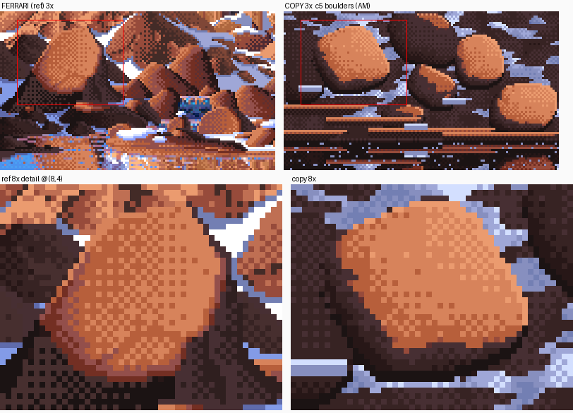
1. pedagogy/master-copy/out/cmp_c5.pngRead: pedagogy/analysis/img/c_stones.png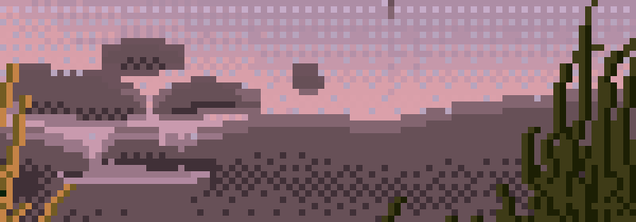
2. pedagogy/analysis/img/c_stones.pngBash: cd ~/work/pixelart-studies; grep -n -i -B2 -A8 "stone\|cobble\|pebble" pedagogy/*/LESSONS.md | head -200; ls rock; ls transfer;
cd ~/work/pixelart-studies; grep -n -i -B2 -A8 "stone\|cobble\|pebble" pedagogy/*/LESSONS.md | head -200; ls rock; ls transfer; # output: pedagogy/observation/LESSONS.md-28-- **A boulder's foot in grass, the contact:** r10 (boulder by Lochan na h-Earba, with an undercut pedagogy/observation/LESSONS.md-29- at its foot), r13 (an erratic sitting in a lawn). pedagogy/observation/LESSONS.md:30:- **Boulders at still water, and their reflections:** r16, r18 (a stone in flat water), r19 pedagogy/observation/LESSONS.md-31- (Blea Tarn: a boulder at the lip of a grass bank, reflected, with sedge coming out of the water). pedagogy/observation/LESSONS.md-32-- **Grass banks and tussocks against water, and grass in low sun:** r20, r22, r23. pedagogy/observation/LESSONS.md-33-- **Dusk water carrying the sky:** r21, r24, r25 (Lake Cerknica, pink over violet). pedagogy/observation/LESSONS.md-34-- **Distance:** r11 and r12 (the same kind of boulder at 30–60 m on a moor). pedagogy/observation/LESSONS.md-35- pedagogy/observation/LESSONS.md-36-## 2. What is actually there pedagogy/observation/LESSONS.md-37- pedagogy/observation/LESSONS.md-38-Numbers are CIE L* sampled from the photos (`studies/measurements.png`, and point samples logged -- pedagogy/observation/LESSONS.md-69-### Where the bank meets the water, and reflections (r19, r25, r18) pedagogy/observation/LESSONS.md-70-- **Reflections are darker than what they reflect.** Sky mid band L*=86 against its reflection pedagogy/observation/LESSONS.md:71: at 55; hill 19 against 12.5; boulder shadow side 28 against 15 (r19); stone 11 against 5 (r18). pedagogy/observation/LESSONS.md-72- Water is a Fresnel mirror, and near the viewer it shows the dark water body. pedagogy/observation/LESSONS.md-73-- **Reflections show the underside.** You look down at the bank and the mirror looks up at it, pedagogy/observation/LESSONS.md-74- so the reflection is shorter and made mostly of the shadowed faces. pedagogy/observation/LESSONS.md-75-- **At the far waterline there is a light line**, the water right at the edge reflecting sky at pedagogy/observation/LESSONS.md-76- a grazing angle (a spike in the r25 profile). **Right under a near grass lip it is dark** pedagogy/observation/LESSONS.md-77- (overhang shadow). pedagogy/observation/LESSONS.md-78-- **Still water is broken into horizontal streaks** by faint ripples and wind-lines, which pedagogy/observation/LESSONS.md-79- reflect a slightly higher, lighter part of the sky. -- pedagogy/observation/LESSONS.md-111-- **Rock is flat planes with a lit lip.** The sun-facing ridges of the mountain facets carry the pedagogy/observation/LESSONS.md-112- lightest salmon as a 1–2 px edge. Planes are one colour, flecked with the neighbouring value. pedagogy/observation/LESSONS.md:113:- **Stones at the waterline** (`stones8.png`) are three or four flat values, the darkest as a line pedagogy/observation/LESSONS.md-114- underneath. Their reflections are horizontal slabs one step darker. pedagogy/observation/LESSONS.md-115-- **Water and sky:** flat bands of adjacent ramp colours joined by 50% checkerboard strips. pedagogy/observat
Bash: cd ~/work/pixelart-studies; python3 -c " import json;d=json.load(open('transfer/measure/ratios.json')) print(d.keys()); print(list(d['pairs'].keys())) for k,v in d['pairs'].items()
cd ~/work/pixelart-studies; python3 -c "
import json;d=json.load(open('transfer/measure/ratios.json'))
print(d.keys()); print(list(d['pairs'].keys()))
for k,v in d['pairs'].items():
if 'rock' in k or 'stone' in k or 'cobble' in k or 'boulder' in k: print(k, v.get('note'), {kk:round(vv,2) for kk,vv in v['ratio'].items()}, v.get('fimg'), v.get('pimg'), 'F', {kk:round(vv,1) if isinstance(vv,(int,float)) else vv for kk,vv in v['ferrari'].items()})
"; ls transfer/lib transfer/studies | head; ls rock/*.py; head -40 rock/POST.md
# output:
dict_keys(['pairs', 'skylines'])
['grass', 'conifer', 'rock_mass', 'blockfield', 'boulder', 'water', 'sand', 'flank', 'bark']
rock_mass crags / rock mass at mid distance, lit {'aniso_xy': 1.25, 'aniso_t': 1.42, 'stroke_deg': 2.94, 'med': 1.27, 'sq_p5': 0.21, 'sq_p95': 1.29, 'sq_range': 2.47, 'raw_range': 1.64, 'hf': 0.56, 'cluster_mean': 1.86, 'cluster_med': 1.0, 'corr_x': 1.0, 'corr_y': 1.5, 'chroma_med': 7.35, 'chroma_p90': 2.92} ferrari_cc_V19.png photo_scree.jpg F {'aniso_xy': 1.2, 'aniso_t': 1.5, 'stroke_deg': 105.1, 'med': 53.0, 'sq_p5': 6.1, 'sq_p95': 70.2, 'sq_range': 64.2, 'raw_range': 66.3, 'hf': 0.2, 'cluster_mean': 8.8, 'cluster_med': 1.0, 'corr_x': 2.0, 'corr_y': 3.0, 'levels': 6, 'chroma_med': 38.8, 'chroma_p90': 45.9, 'colours90': 17}
boulder one near rock surface, lit {'aniso_xy': 1.03, 'aniso_t': 1.14, 'stroke_deg': 4.47, 'med': 1.18, 'sq_p5': 1.43, 'sq_p95': 1.03, 'sq_range': 0.8, 'raw_range': 0.71, 'hf': 1.03, 'cluster_mean': 0.76, 'cluster_med': 1.0, 'corr_x': 1.0, 'corr_y': 1.0, 'chroma_med': 0.97, 'chroma_p90': 0.57} ferrari_cc_V29.png r19_tarn_bank_reflection.jpg F {'aniso_xy': 1.0, 'aniso_t': 1.4, 'stroke_deg': 31.9, 'med': 59.2, 'sq_p5': 36.7, 'sq_p95': 71.8, 'sq_range': 35.1, 'raw_range': 42.0, 'hf': 0.4, 'cluster_mean': 4.0, 'cluster_med': 1.0, 'corr_x': 1.0, 'corr_y': 1.0, 'levels': 3, 'chroma_med': 21.9, 'chroma_p90': 25.0, 'colours90': 3}
transfer/lib:
__pycache__
camera.py
canvas.py
geom.py
light.py
measure.py
noise.py
paint.py
prims.py
rock/compare.py
rock/paint.py
rock/rockpaint.py
rock/sheets.py
# How to pixel-art ROCK: cliffs, outcrops, boulders, talus and scree
*A construction method, not a bag of tips, with a small program (`rockpaint.py`, `paint.py`, `sheets.py`) that paints by it.*
---
## 0. The claim
A good pixel artist doesn't shade a rock surface. They **design** rock: a few decisive shapes, each lit as one object, packed against each other, with crevices and rims that say where one stops and the next begins. Distance is a stack of value planes, and the grain of the rock is a handful of stroke types. That can be written down as a grammar, much like the well-known tree method: clustered leaf masses built into bundles, where the grammar guarantees the painted look. Rock has the same structure:
| trees | rock |
|---|---|
| leaf cluster (lit blob) | **faceted block**: a silhouette split into 2–4 planes, one tone each |
| bundle of clusters | **nestled cluster**: blocks overlapping back to front, crevice and shadow in the gaps |
| branch skeleton | **crest tree**: spurs off a silhouette that split a mass into lit and shadow flanks |
| tree placement | **formations** (talus, scree, cliff, outcrop, boulder, ridge): where blocks go, how big they are, which way they face |
| distance haze | **planes**: a fogged ramp per plane, plus a level of detail set by pixel size |
The last section is honest about how far the proof got. The short version is that the grammar works and generalizes, and that on Ferrari's owBash: cd ~/work/pixelart-studies/transfer/refs; python3 -c " from PIL import Image;import glob for f in sorted(glob.glob('braided_*')): print(f, Image.open(f).size)"; cat ../../tools/img
cd ~/work/pixelart-studies/transfer/refs; python3 -c "
from PIL import Image;import glob
for f in sorted(glob.glob('braided_*')): print(f, Image.open(f).size)"; cat ../../tools/imgfetch.py | head -30
# output:
braided_aerial_krossa.jpg (683, 1024)
braided_aerial_nz.jpg (960, 1280)
braided_bars_denali.jpg (960, 643)
braided_close_cobbles_channel.jpg (960, 720)
braided_close_iori_riffles.jpg (960, 640)
braided_cobbles_hope.jpg (1280, 960)
braided_cobbles_kuban_wet.jpg (1280, 960)
braided_driftwood_bar.jpg (1024, 768)
braided_hoh_gravel_bar.jpg (1024, 683)
braided_lowangle_golden.jpg (1024, 731)
braided_lowangle_healy.jpg (1024, 768)
braided_lowangle_overcast_nz.jpg (960, 507)
braided_willow_salix.jpg (1280, 960)
braided_willow_scrub.jpg (1280, 853)
#!/usr/bin/env python3
"""imgfetch: fast, polite reference-image sourcing (Wikimedia Commons + Openverse).
python3 imgfetch.py "cinder cone scoria slope" -n 12 -o refs/cinder
python3 imgfetch.py -f queries.txt -n 8 -o refs # one query per line; subdir per query
options: --src commons,openverse --width 1200 --sheet (writes <out>/_sheet.jpg)
Writes images plus <out>/sources.tsv (file, title, license, author, page url).
Cached: files already present are skipped. Handles 429/5xx with Retry-After backoff.
Parallel downloads (4 workers) with a shared per-host rate limiter (~3 req/s; Wikimedia's media
host is kept to 1 per 2 s and slows further on any 429, since it throttles hard per IP after bursts).
Openverse (mostly Flickr-hosted CC images) is the primary source because it stays fast.
"""
import argparse, concurrent.futures as cf, json, os, re, sys, threading, time, urllib.error, urllib.parse, urllib.request
UA = "pixelart-studies-imgfetch/1.0 (research; contact: local)"
_locks = {}; _last = {}; _glock = threading.Lock()
SLOW_HOSTS = {"upload.wikimedia.org": 2.0} # Wikimedia media host: ~1 req/s or it 429s
def _throttle(host, min_gap=0.34):
min_gap = SLOW_HOSTS.get(host, min_gap)
with _glock:
lk = _locks.setdefault(host, threading.Lock())
with lk:
dt = time.time() - _last.get(host, 0)
if dt < min_gap:
time.sleep(min_gap - dt)
_last[host] = time.time()Read: transfer/refs/braided_cobbles_hope.jpg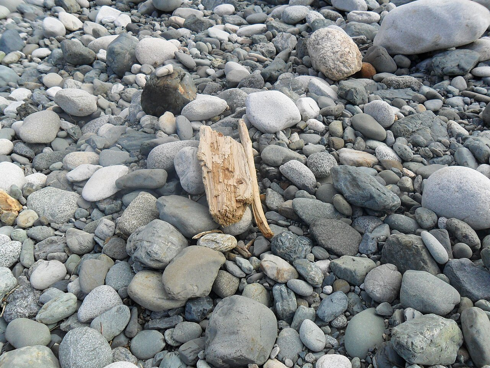
3. transfer/refs/braided_cobbles_hope.jpgRead: transfer/refs/braided_cobbles_kuban_wet.jpg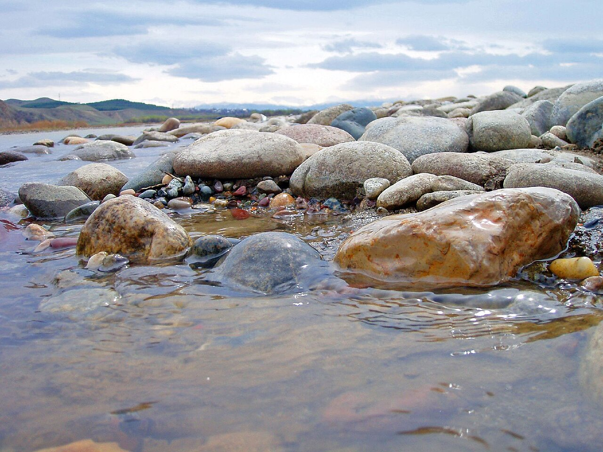
4. transfer/refs/braided_cobbles_kuban_wet.jpgRead: transfer/refs/braided_close_cobbles_channel.jpgRead: transfer/refs/braided_hoh_gravel_bar.jpg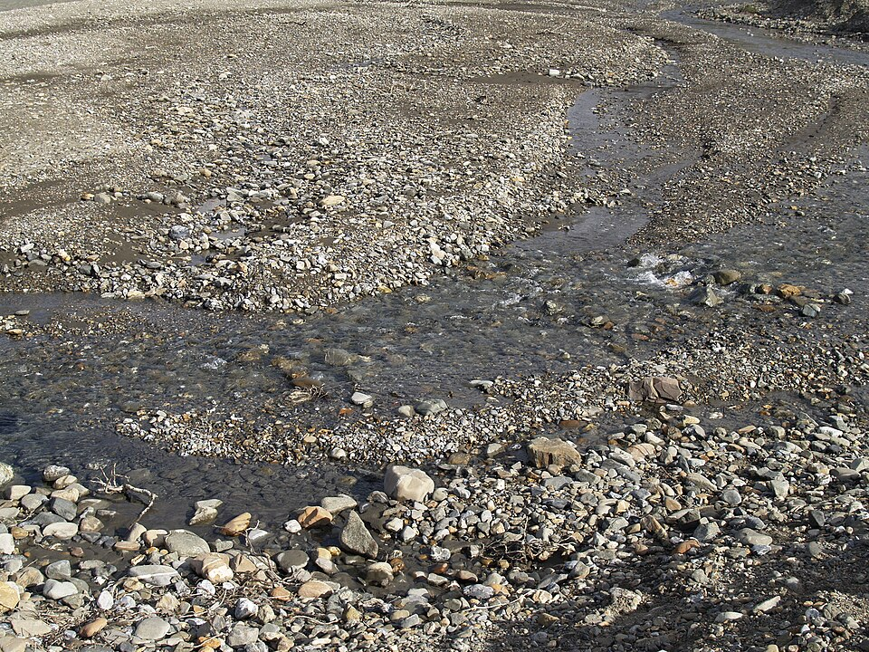
5. transfer/refs/braided_close_cobbles_channel.jpg 6. transfer/refs/braided_hoh_gravel_bar.jpg
6. transfer/refs/braided_hoh_gravel_bar.jpg
Bash: cd ~/work/pixelart-studies/elements/cobbles; mkdir -p refs; nice -n 10 python3 ../../tools/imgfetch.py "river cobbles close" -n 12 -o refs/close --sheet 2>&1 | tail -3; nice -n 10
cd ~/work/pixelart-studies/elements/cobbles; mkdir -p refs; nice -n 10 python3 ../../tools/imgfetch.py "river cobbles close" -n 12 -o refs/close --sheet 2>&1 | tail -3; nice -n 10 python3 ../../tools/imgfetch.py "wet river stones waterline" -n 10 -o refs/wet --sheet 2>&1 | tail -3; nice -n 10 python3 ../../tools/imgfetch.py "gravel bar braided river" -n 10 -o refs/bar --sheet 2>&1 | tail -3 # output: download failed: HTTP Error 429: Too many requests - please contact noc@wikimedia.org to discuss a less disruptive approach or instead use thumbnail images in sizes listed on https://w.wiki/GHai. (0c640b1) 'river cobbles close': 11 images -> refs/close download failed: HTTP Error 429: Too many requests - please contact noc@wikimedia.org to discuss a less disruptive approach or instead use thumbnail images in sizes listed on https://w.wiki/GHai. (0c640b1) download failed: HTTP Error 429: Too many requests - please contact noc@wikimedia.org to discuss a less disruptive approach or instead use thumbnail images in sizes listed on https://w.wiki/GHai. (0c640b1) 'wet river stones waterline': 6 images -> refs/wet download failed: HTTP Error 429: Too many requests - please contact noc@wikimedia.org to discuss a less disruptive approach or instead use thumbnail images in sizes listed on https://w.wiki/GHai. (0c640b1) 'gravel bar braided river': 9 images -> refs/bar
Read: elements/cobbles/refs/close/_sheet.jpg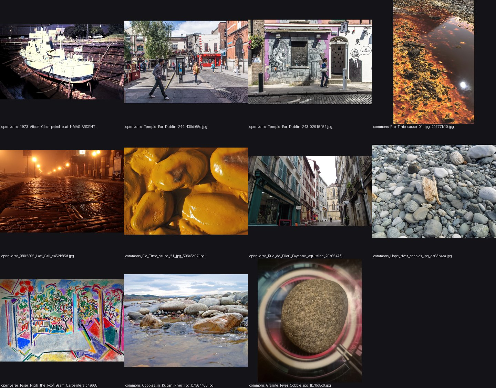
7. elements/cobbles/refs/close/_sheet.jpgRead: elements/cobbles/refs/wet/_sheet.jpg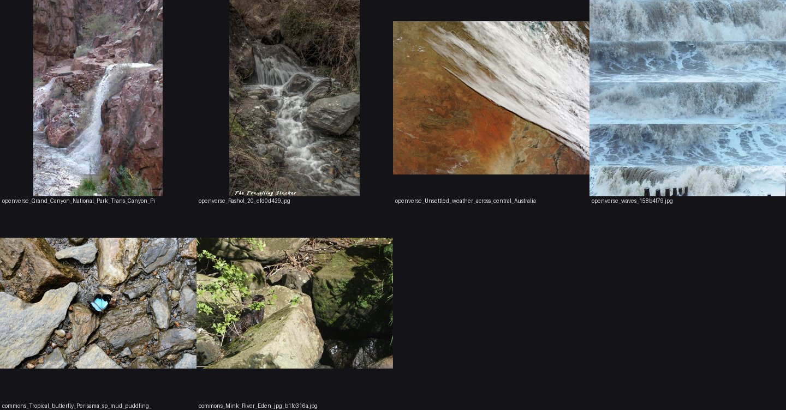
8. elements/cobbles/refs/wet/_sheet.jpgRead: elements/cobbles/refs/bar/_sheet.jpg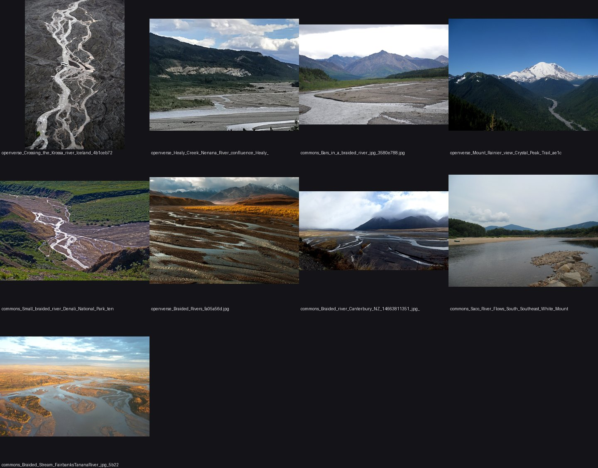
9. elements/cobbles/refs/bar/_sheet.jpgBash: cd ~/work/pixelart-studies/elements/cobbles; for q in "river rocks pebbles" "basalt pebbles" "stony riverbank" "gravel bar grass edge"; do nice -n 10 python3 ../../tools/imgfetch.p
cd ~/work/pixelart-studies/elements/cobbles; for q in "river rocks pebbles" "basalt pebbles" "stony riverbank" "gravel bar grass edge"; do nice -n 10 python3 ../../tools/imgfetch.py "$q" -n 10 -o "refs/$(echo $q|tr ' ' _)" --src openverse --sheet 2>&1 | tail -1; done # output: 'river rocks pebbles': 10 images -> refs/river_rocks_pebbles 'basalt pebbles': 10 images -> refs/basalt_pebbles 'stony riverbank': 6 images -> refs/stony_riverbank 'gravel bar grass edge': 9 images -> refs/gravel_bar_grass_edge
Read: elements/cobbles/refs/river_rocks_pebbles/_sheet.jpg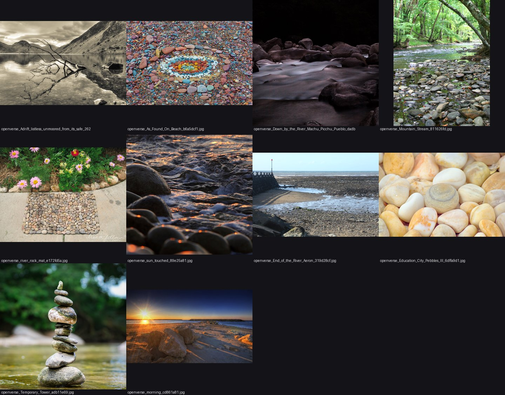
10. elements/cobbles/refs/river_rocks_pebbles/_sheet.jpgRead: elements/cobbles/refs/basalt_pebbles/_sheet.jpg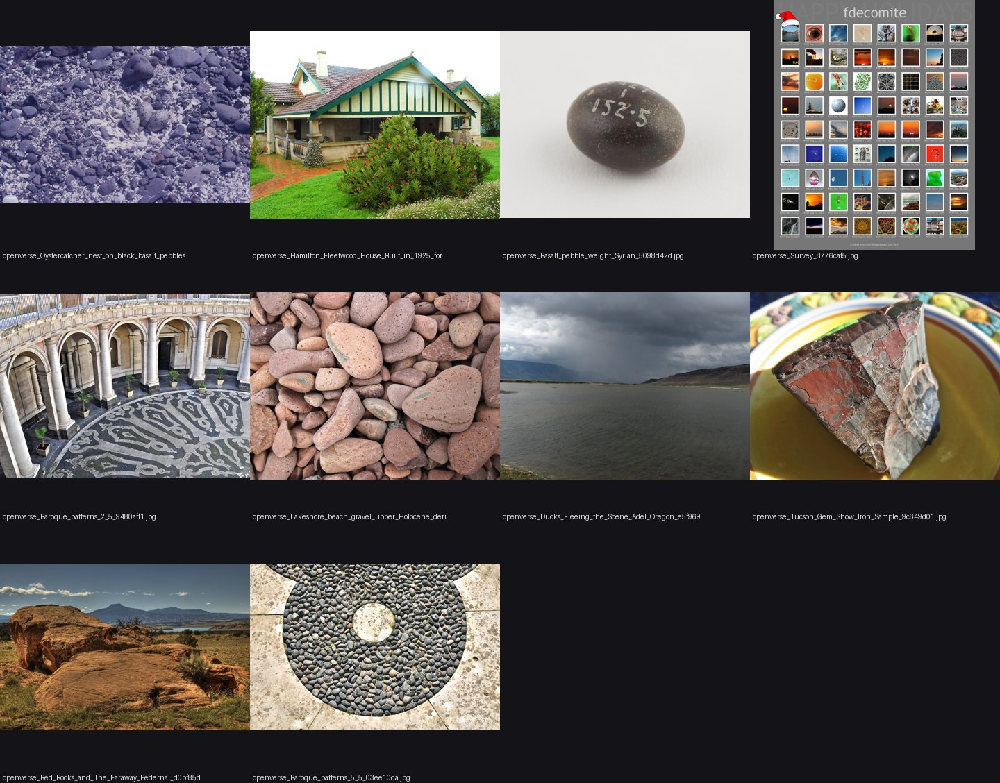
11. elements/cobbles/refs/basalt_pebbles/_sheet.jpgRead: elements/cobbles/refs/stony_riverbank/_sheet.jpg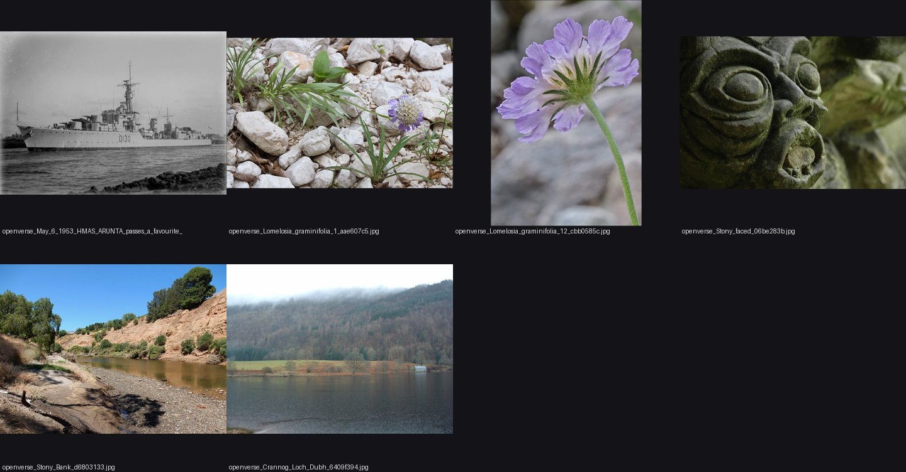
12. elements/cobbles/refs/stony_riverbank/_sheet.jpgRead: elements/cobbles/refs/gravel_bar_grass_edge/_sheet.jpg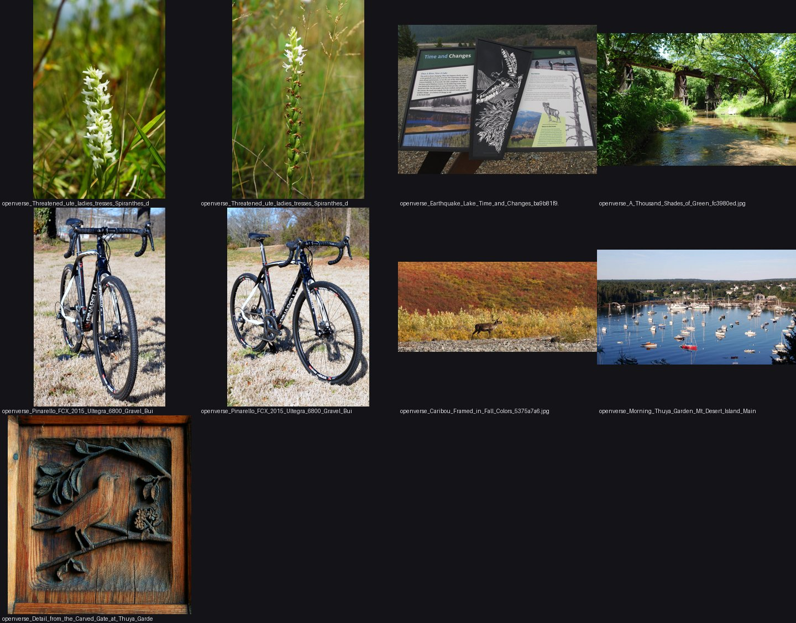
13. elements/cobbles/refs/gravel_bar_grass_edge/_sheet.jpgBash: cd ~/work/pixelart-studies/pedagogy/master-copy/ref/lw/; python3 -c " from PIL import Image;import glob for f in sorted(glob.glob('*.png')): print(f, Image.open(f).size)"; cat V19.
cd ~/work/pixelart-studies/pedagogy/master-copy/ref/lw/; python3 -c "
from PIL import Image;import glob
for f in sorted(glob.glob('*.png')): print(f, Image.open(f).size)"; cat V19.json | head -c 300
# output:
V01.png (640, 480)
V02.png (640, 480)
V09.png (640, 480)
V11AM.png (640, 480)
V13.png (640, 480)
V14.png (640, 480)
V16.png (640, 480)
V16PM.png (640, 480)
V19.png (640, 480)
V19PM.png (640, 480)
V29PM.png (640, 480)
V30.png (640, 480)
{filename:'V19.LBM',width:640,height:480,colors:[[0,0,0],[227,227,255],[211,219,255],[207,215,255],[187,211,255],[167,207,255],[143,207,255],[115,203,255],[87,195,255],[83,183,251],[79,171,247],[75,159,243],[75,147,239],[75,139,235],[71,127,235],[75,111,231],[75,95,227],[79,79,227],[255,255,255],[25Read: pedagogy/master-copy/ref/lw/V19.png 14. pedagogy/master-copy/ref/lw/V19.png
14. pedagogy/master-copy/ref/lw/V19.png
Read: pedagogy/master-copy/ref/lw/V29PM.png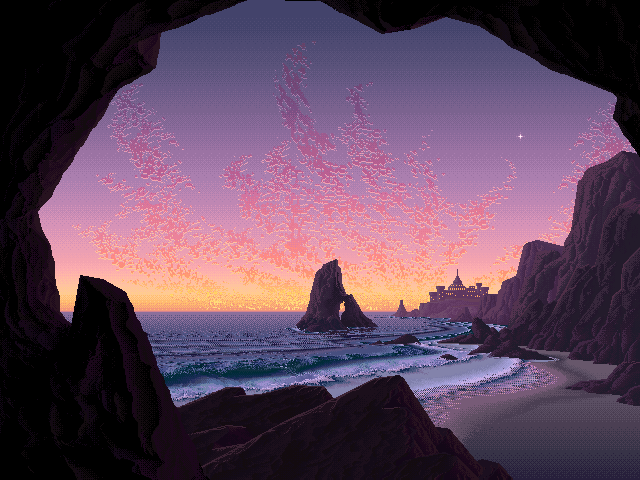
15. pedagogy/master-copy/ref/lw/V29PM.pngBash: cd ~/work/pixelart-studies; mkdir -p elements/cobbles/scratch; python3 -c " from PIL import Image;import glob fs=sorted(glob.glob('pedagogy/master-copy/ref/lw/*.png'))+['shared/ref
cd ~/work/pixelart-studies; mkdir -p elements/cobbles/scratch; python3 -c "
from PIL import Image;import glob
fs=sorted(glob.glob('pedagogy/master-copy/ref/lw/*.png'))+['shared/refs/ferrari_alpine_tarn_dusk.png','shared/refs/ferrari_mossy_forest_pool.png','shared/refs/ferrari_snow_forest_boulders.webp']
W=4;cw,ch=400,300
S=Image.new('RGB',(W*cw,((len(fs)+W-1)//W)*ch))
for i,f in enumerate(fs):
im=Image.open(f).convert('RGB').resize((cw,ch)); S.paste(im,((i%W)*cw,(i//W)*ch)); print(i,f,Image.open(f).size)
S.save('elements/cobbles/scratch/ferrari_contact.png')"
# output:
0 pedagogy/master-copy/ref/lw/V01.png (640, 480)
1 pedagogy/master-copy/ref/lw/V02.png (640, 480)
2 pedagogy/master-copy/ref/lw/V09.png (640, 480)
3 pedagogy/master-copy/ref/lw/V11AM.png (640, 480)
4 pedagogy/master-copy/ref/lw/V13.png (640, 480)
5 pedagogy/master-copy/ref/lw/V14.png (640, 480)
6 pedagogy/master-copy/ref/lw/V16.png (640, 480)
7 pedagogy/master-copy/ref/lw/V16PM.png (640, 480)
8 pedagogy/master-copy/ref/lw/V19.png (640, 480)
9 pedagogy/master-copy/ref/lw/V19PM.png (640, 480)
10 pedagogy/master-copy/ref/lw/V29PM.png (640, 480)
11 pedagogy/master-copy/ref/lw/V30.png (640, 480)
12 shared/refs/ferrari_alpine_tarn_dusk.png (1268, 938)
13 shared/refs/ferrari_mossy_forest_pool.png (1244, 920)
14 shared/refs/ferrari_snow_forest_boulders.webp (1230, 930)Read: elements/cobbles/scratch/ferrari_contact.png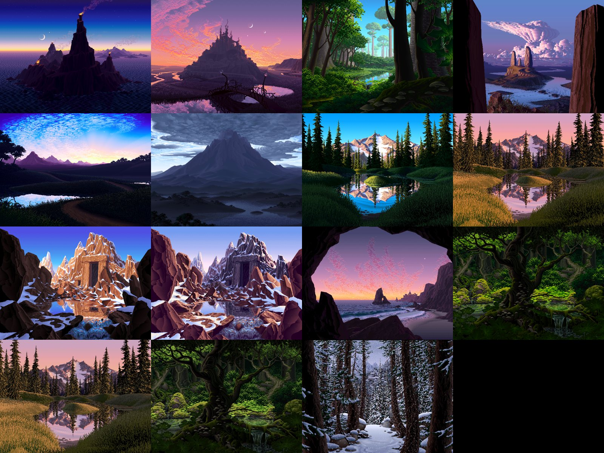
16. elements/cobbles/scratch/ferrari_contact.pngBash: cd ~/work/pixelart-studies; python3 -c " from PIL import Image def crop(f,box,s,out): im=Image.open(f).convert('RGB').crop(box); im=im.resize((im.width*s,im.height*s),Image.NEARE
cd ~/work/pixelart-studies; python3 -c "
from PIL import Image
def crop(f,box,s,out):
im=Image.open(f).convert('RGB').crop(box); im=im.resize((im.width*s,im.height*s),Image.NEAREST); im.save('elements/cobbles/scratch/'+out)
crop('pedagogy/master-copy/ref/lw/V19.png',(150,240,450,400),3,'z_v19_low.png')
crop('pedagogy/master-copy/ref/lw/V11AM.png',(380,380,640,480),3,'z_v11_br.png')
crop('shared/refs/ferrari_snow_forest_boulders.webp',(0,700,1230,930),1,'z_snow_low.png')
crop('pedagogy/master-copy/ref/lw/V30.png',(0,380,640,480),2,'z_v30_low.png')
"
# output:
(Bash completed with no output)Read: elements/cobbles/scratch/z_v19_low.pngRead: elements/cobbles/scratch/z_v11_br.pngRead: elements/cobbles/scratch/z_snow_low.png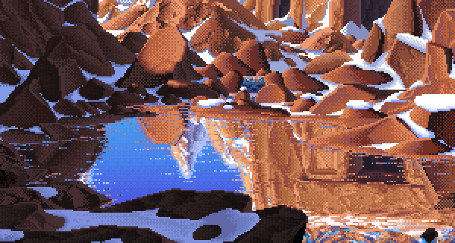
17. elements/cobbles/scratch/z_v19_low.png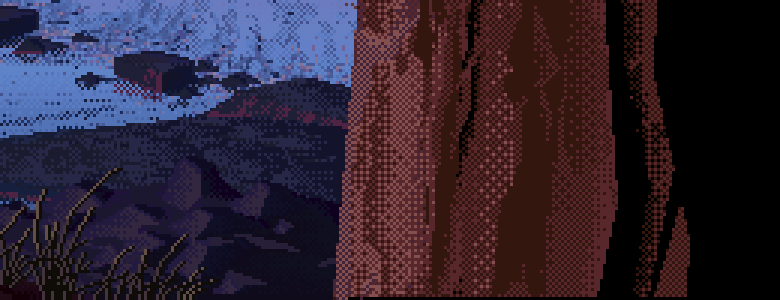
18. elements/cobbles/scratch/z_v11_br.png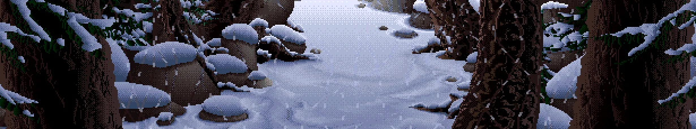
19. elements/cobbles/scratch/z_snow_low.pngRead: elements/cobbles/scratch/z_v30_low.png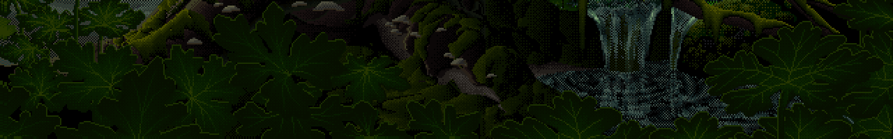
20. elements/cobbles/scratch/z_v30_low.pngBash: cd ~/work/pixelart-studies; python3 -c " from PIL import Image def crop(f,box,s,out): im=Image.open(f).convert('RGB').crop(box); im=im.resize((im.width*s,im.height*s),Image.NEARE
cd ~/work/pixelart-studies; python3 -c "
from PIL import Image
def crop(f,box,s,out):
im=Image.open(f).convert('RGB').crop(box); im=im.resize((im.width*s,im.height*s),Image.NEAREST); im.save('elements/cobbles/scratch/'+out)
crop('pedagogy/master-copy/ref/lw/V19.png',(320,380,500,480),5,'z_v19_fall.png')
crop('shared/refs/ferrari_snow_forest_boulders.webp',(200,720,560,930),3,'z_snow_boulders.png')
crop('pedagogy/master-copy/ref/lw/V19.png',(220,240,360,320),6,'z_v19_mid.png')
"
# output:
(Bash completed with no output)Read: elements/cobbles/scratch/z_v19_fall.pngRead: elements/cobbles/scratch/z_snow_boulders.png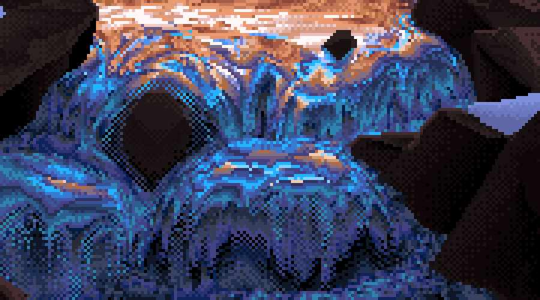
21. elements/cobbles/scratch/z_v19_fall.png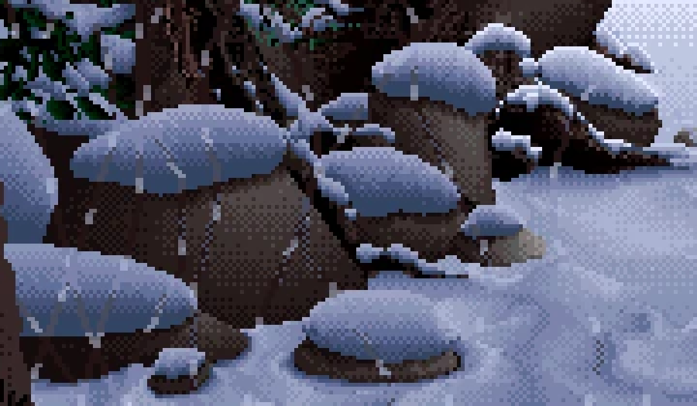
22. elements/cobbles/scratch/z_snow_boulders.pngRead: elements/cobbles/scratch/z_v19_mid.png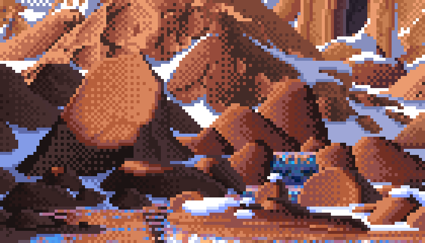
23. elements/cobbles/scratch/z_v19_mid.pngBash: cd ~/work/pixelart-studies; wc -l transfer/lib/*.py pedagogy/master-copy/src/fl.py; grep -n "^def " transfer/lib/paint.py transfer/lib/prims.py transfer/lib/light.py pedagogy/maste
cd ~/work/pixelart-studies; wc -l transfer/lib/*.py pedagogy/master-copy/src/fl.py; grep -n "^def " transfer/lib/paint.py transfer/lib/prims.py transfer/lib/light.py pedagogy/master-copy/src/fl.py | head -80
# output:
107 transfer/lib/camera.py
130 transfer/lib/canvas.py
143 transfer/lib/geom.py
181 transfer/lib/light.py
196 transfer/lib/measure.py
89 transfer/lib/noise.py
97 transfer/lib/paint.py
170 transfer/lib/prims.py
31 transfer/lib/scene.py
213 transfer/lib/tech_blocks.py
67 transfer/lib/tech_grass.py
161 transfer/lib/tech_ground.py
195 transfer/lib/tech_logs.py
47 transfer/lib/tech_sky.py
366 transfer/lib/tech_sprites.py
149 transfer/lib/tech_water.py
392 pedagogy/master-copy/src/fl.py
2734 total
transfer/lib/paint.py:15:def screen_dirs(B, d3, eps=None):
transfer/lib/paint.py:27:def downhill(N):
transfer/lib/paint.py:56:def paint(scene, cam, hour, seed=0, grey=False, debug=None):
transfer/lib/paint.py:96:def up3(rgb, s=3):
transfer/lib/light.py:36:def sun_vector(hour, azimuth_deg):
transfer/lib/light.py:42:def lab_to_rgb8(lab):
transfer/lib/light.py:48:def rgb8_to_lab(rgb):
pedagogy/master-copy/src/fl.py:15:def tile(m, h, w, ox=0, oy=0):
pedagogy/master-copy/src/fl.py:22:def ordered_ramp(v, ramp, matrix=BAYER2, ox=0, oy=0):
pedagogy/master-copy/src/fl.py:34:def stipple_ramp(v, ramp, rng, grain=1.0):
pedagogy/master-copy/src/fl.py:52:def banded(v, width=0.45):
pedagogy/master-copy/src/fl.py:64:def value_noise(h, w, scale, rng, octaves=1, persistence=0.5, aniso=(1.0, 1.0)):
pedagogy/master-copy/src/fl.py:82:def poly_mask(h, w, pts):
pedagogy/master-copy/src/fl.py:90:def below_curve(h, w, ys):
pedagogy/master-copy/src/fl.py:96:def interp_curve(w, pts):
pedagogy/master-copy/src/fl.py:101:def line(canvas, x0, y0, x1, y1, c, mask=None):
pedagogy/master-copy/src/fl.py:115:def to_rgb(canvas, pal):
pedagogy/master-copy/src/fl.py:120:def threshold_field(h, w, rng, checker=0.3, grain=1.0, aniso=(1.0, 1.0)):
pedagogy/master-copy/src/fl.py:135:def dither(u, classes, t):
pedagogy/master-copy/src/fl.py:144:def scatter(u, classes, t, spread=0.45):
pedagogy/master-copy/src/fl.py:155:def hstreaks(h, w, rng, ramp, mean_len=6.0, bias=None):
pedagogy/master-copy/src/fl.py:171:def boulder_field(h, w, cx, cy, rx, ry, rng, squareness=2.2, facet_px=0.0, facet_tilt=0.0,
pedagogy/master-copy/src/fl.py:215:def lambert(N, L, ambient=0.0, wrap=0.0):
pedagogy/master-copy/src/fl.py:221:def outline(mask, side_vec, width=1):
pedagogy/master-copy/src/fl.py:232:def two_family(s, terminator=0.35, light=(6.0, 9.0), shadow=(1.0, 3.0), gamma=0.8):
pedagogy/master-copy/src/fl.py:243:def strands(h, w, rng, classes_fn, u_fn, runmean_fn, mask=None, spread=0.55, rho_fn=None,
pedagogy/master-copy/src/fl.py:331:def sheared_strands(h, w, rng, shear_step, mask=None, tuft=None, **kw):
pedagogy/master-copy/src/fl.py:357:def clean_curve(w, pts, slopes=CLEAN_SLOPES, max_seg=None):
pedagogy/master-copy/src/fl.py:384:def clean_mask(mask, iters=1):
transfer/lib/prims.py:14:def _bbox(cam, pts, pad):Bash: cd ~/work/pixelart-studies; sed -n 1,60p pedagogy/master-copy/src/fl.py; sed -n 350,392p pedagogy/master-copy/src/fl.py; sed -n 1,40p transfer/lib/tech_blocks.py
cd ~/work/pixelart-studies; sed -n 1,60p pedagogy/master-copy/src/fl.py; sed -n 350,392p pedagogy/master-copy/src/fl.py; sed -n 1,40p transfer/lib/tech_blocks.py
# output:
"""fl.py -- the Ferrari toolkit: small procedures discovered while copying.
Everything here works on an *index canvas* (int array, -1 = empty) plus a palette
(list of RGB). Painting in indices, like Ferrari in DPaint, keeps every decision
a palette decision.
"""
import numpy as np
from scipy.ndimage import zoom, gaussian_filter, binary_dilation, distance_transform_edt
# ---------------------------------------------------------------- dither matrices
BAYER2 = np.array([[0, 2], [3, 1]]) / 4.0 + 1 / 8.0
BAYER4 = (np.array([[0, 8, 2, 10], [12, 4, 14, 6], [3, 11, 1, 9], [15, 7, 13, 5]]) + 0.5) / 16.0
def tile(m, h, w, ox=0, oy=0):
th, tw = m.shape
ys = (np.arange(h) + oy) % th
xs = (np.arange(w) + ox) % tw
return m[ys][:, xs]
def ordered_ramp(v, ramp, matrix=BAYER2, ox=0, oy=0):
"""v: float array in ramp-index units (0..len(ramp)-1). Patterned dither between
neighbouring ramp entries: Ferrari's 'patterned dither ... smooth and precise'."""
h, w = v.shape
v = np.clip(v, 0, len(ramp) - 1)
lo = np.floor(v).astype(int)
f = v - lo
t = tile(matrix, h, w, ox, oy)
i = np.where(f > t, np.minimum(lo + 1, len(ramp) - 1), lo)
return np.asarray(ramp)[i]
def stipple_ramp(v, ramp, rng, grain=1.0):
"""Random-threshold (white noise, optionally clumped) dither: the 'diffusion' look
Ferrari keeps for organic, chaotic surfaces such as lawns."""
h, w = v.shape
t = rng.random((h, w))
if grain > 1.0:
t = gaussian_filter(t, grain - 1.0)
t = (t - t.min()) / (t.max() - t.min() + 1e-9)
# re-flatten histogram so density is still honest
r = np.argsort(np.argsort(t.ravel())).reshape(h, w)
t = (r + 0.5) / r.size
v = np.clip(v, 0, len(ramp) - 1)
lo = np.floor(v).astype(int)
f = v - lo
i = np.where(f > t, np.minimum(lo + 1, len(ramp) - 1), lo)
return np.asarray(ramp)[i]
def banded(v, width=0.45):
"""Compress a smooth ramp coordinate into flat bands joined by short transitions:
Ferrari's skies hold each colour flat for most of a band and only dither across
the seam (measured: ~6 flat rows, ~5 transition rows per step)."""
lo = np.floor(v)
f = v - lo
a = 0.5 - width / 2
g = np.clip((f - a) / width, 0, 1)
return lo + g
return np.take_along_axis(S, xd, axis=1)
# ---------------------------------------------------------------- clean contours
CLEAN_SLOPES = np.array([0, 1 / 4, 1 / 3, 1 / 2, 1, 2, 3, 4])
def clean_curve(w, pts, slopes=CLEAN_SLOPES, max_seg=None):
"""Rasterise a polyline y(x) the way a pixel artist would: every segment's slope is
snapped to a clean ratio (flat, 1:4, 1:3, 1:2, 1:1, 2:1, 3:1, 4:1) so the contour
resolves into regular stair-steps -- short straight runs, no jitter. Vertices are
re-solved left to right so the snapped segments still chain."""
xs, ys = zip(*sorted(pts))
out = np.zeros(w)
y = float(ys[0])
for i in range(len(xs) - 1):
x0, x1 = xs[Write: elements/cobbles/util.py
"""util.py -- sheet-making helpers for the cobble studies (labels, upscales, montages)."""
import numpy as np
from PIL import Image, ImageDraw, ImageFont
OUT = __file__.rsplit('/', 1)[0] + '/img'
def up(img, s):
im = img if isinstance(img, Image.Image) else Image.fromarray(np.asarray(img, np.uint8))
return im.resize((im.width * s, im.height * s), Image.NEAREST)
def fit(img, w, h, s=None, bg=(24, 24, 28)):
"""nearest-upscale by the largest integer (or s) that fits in w x h, centre on bg."""
im = img if isinstance(img, Image.Image) else Image.fromarray(np.asarray(img, np.uint8))
if s is None:
s = max(1, min(w // im.width, h // im.height))
im = up(im, s)
c = Image.new('RGB', (w, h), bg)
c.paste(im, ((w - im.width) // 2, (h - im.height) // 2))
return c
_font = None
def font(sz=14):
for p in ['/System/Library/Fonts/Supplemental/Arial.ttf', '/System/Library/Fonts/Helvetica.ttc',
'/Library/Fonts/Arial.ttf']:
try:
return ImageFont.truetype(p, sz)
except Exception:
pass
return ImageFont.load_default()
def label(img, text, sz=14, pad=4, bg=(24, 24, 28), fg=(230, 230, 230)):
im = img if isinstance(img, Image.Image) else Image.fromarray(np.asarray(img, np.uint8))
f = font(sz)
lines = text.split('\n')
lh = sz + 3
c = Image.new('RGB', (im.width, im.height + lh * len(lines) + pad * 2), bg)
d = ImageDraw.Draw(c)
for i, ln in enumerate(lines):
d.text((pad, pad + i * lh), ln, fill=fg, font=f)
c.paste(im, (0, lh * len(lines) + pad * 2))
return c
def hcat(ims, gap=6, bg=(24, 24, 28)):
ims = [i if isinstance(i, Image.Image) else Image.fromarray(np.asarray(i, np.uint8)) for i in ims]
H = max(i.height for i in ims)
c = Image.new('RGB', (sum(i.width for i in ims) + gap * (len(ims) - 1), H), bg)
x = 0
for i in ims:
c.paste(i, (x, 0)); x += i.width + gap
return c
def vcat(ims, gap=6, bg=(24, 24, 28)):
ims = [i if isinstance(i, Image.Image) else Image.fromarray(np.asarray(i, np.uint8)) for i in ims]
W = max(i.width for i in ims)
c = Image.new('RGB', (W, sum(i.height for i in ims) + gap * (len(ims) - 1)), bg)
y = 0
for i in ims:
c.paste(i, (0, y)); y += i.height + gap
return c
def title(img, text, sz=18):
return label(img, text, sz=sz, pad=8)
def photo_crop(path, box, px_w=None, grey=False):
"""crop a photo; optionally area-downsample so the crop is px_w pixels wide (the
'what does the camera see at this pixel size' view)."""
im = Image.open(path).convert('RGB').crop(box)
if px_w:
h = max(1, round(im.height * px_w / im.width))
im = im.resize((px_w, h), Image.BOX)
if grey:
im = im.convert('L').convert('RGB')
return im
def ferrari(name, box, grey=False):
base = '~/work/pixelart-studies/'
p = {'V19': 'pedagogy/master-copy/ref/lw/V19.png', 'V19PM': 'pedagogy/master-copy/ref/lw/V19PM.png',
'V16': 'pedagogy/master-copy/ref/lw/V16.png', 'V16PM': 'pedagogy/master-copy/ref/lw/V16PM.png',
'V29PM': 'pedagogy/master-copy/ref/lw/V29PM.png', 'V11AM': 'pedagogy/master-copy/ref/lw/V11AM.png',
'V30': 'pedagogy/master-copy/ref/lw/V30.png', 'V14': 'pedagogy/master-copy/ref/lw/V14.png',
'V13': 'pedagogy/master-copy/ref/lw/V13.png',
'tarn': 'shared/refs/ferrari_alpine_tarn_dusk.png'}.get(name, name)
im = Image.open(base + p).convert('RGB').crop(box)
if grey:
im = im.convert('L').convert('RGB')
return im
def save(img, name):
import os
os.makedirs(OUT, exist_ok=True)
img.save(f'{OUT}/{name}')
return f'{OUT}/{name}'
Write: elements/cobbles/cobble.py
"""cobble.py -- one water-worn cobble, painted in step space.
Stage 1 technique: the geometry is a lumpy flattened ellipsoid sitting (slightly sunk) on a
gravel plane, seen by an orthographic camera pitched down. Everything is decided per pixel
as a STEP on one grey ramp (the palette is the light, added later):
0 contact / crevice (black pocket where stone meets ground)
1 core shadow (the band just past the terminator: gets neither sun nor bounce)
2 shadow (body of the shadow side, lit by sky)
3 reflected light (lower shadow side, lit by bounce from sunlit gravel)
---------- terminator: the two families never mix -------------
4 halftone (surface turning away from the sun)
5 light (plane facing the sun)
6 top light (small, only where the normal is closest to the sun)
Ground: 4 lit gravel, 2 cast shadow, 0 contact.
"""
import numpy as np
from scipy import ndimage as ndi
BAYER2 = np.array([[0, 2], [3, 1]]) / 4.0 + 1 / 8.0
BAYER4 = (np.array([[0, 8, 2, 10], [12, 4, 14, 6], [3, 11, 1, 9], [15, 7, 13, 5]]) + 0.5) / 16.0
GREY7 = [(22, 22, 26), (52, 52, 58), (80, 80, 86), (112, 112, 116), (146, 146, 148), (184, 184, 184), (222, 222, 218)]
def unit(v):
v = np.asarray(v, float)
return v / np.linalg.norm(v)
def sun_dir(azimuth_deg, elev_deg):
"""azimuth measured in the ground plane from screen-right (+x) toward away-from-viewer (+y).
135 = sun upper-left-behind the stone (classic painter's light)."""
a, e = np.radians(azimuth_deg), np.radians(elev_deg)
return np.array([np.cos(a) * np.cos(e), np.sin(a) * np.cos(e), np.sin(e)])
class View:
def __init__(self, pitch_deg=35.0):
p = np.radians(pitch_deg)
self.d = np.array([0.0, np.cos(p), -np.sin(p)]) # view direction (into screen)
self.u = np.array([0.0, np.sin(p), np.cos(p)]) # screen up
self.r = np.array([1.0, 0.0, 0.0])
def project(self, P):
"""world points (...,3) -> screen x, screen y (down), depth (smaller = nearer)."""
return P @ self.r, -(P @ self.u), P @ self.d
def stone_points(D, elong=1.35, flat=0.5, n=2.4, lump=0.06, sink=0.12, yaw_deg=0.0, rng=None, res=220):
"""dense samples of a lumpy superellipsoid. D = long axis in px.
Returns P (M,3) world points (z up, resting on z=0 after sinking) and N (M,3) normals."""
rng = rng or np.random.default_rng(0)
a = D / 2.0
b = a / elong
c = a * flat
th = np.linspace(-np.pi / 2, np.pi / 2, res)[:, None] # latitude
ph = np.linspace(-np.pi, np.pi, 2 * res, endpoint=False)[None, :]
e = 2.0 / n
def sgnpow(x, p):
return np.sign(x) * np.abs(x) ** p
X = a * sgnpow(np.cos(th), e) * sgnpow(np.cos(ph), e)
Y = b * sgnpow(np.cos(th), e) * sgnpow(np.sin(ph), e)
Z = c * sgnpow(np.sin(th), e) * np.ones_like(ph)
# lumps: a few low-order bumps in direction space (water-worn: broad, never sharp)
dirs = np.stack([np.cos(th) * np.cos(ph), np.cos(th) * np.sin(ph), np.sin(th) * np.ones_like(ph)], -1)
k = np.ones(dirs.shape[:2])
for _ in range(5):
v = unit(rng.normal(size=3))
k += lump * rng.normal() * np.exp((dirs @ v - 1) * 2.5)
# flatten the base a little (cobbles rest on a flat-ish face)
P = np.stack([X * k, Y * k, Z * k], -1)
P[..., 2] = np.where(P[..., 2] < 0, P[..., 2] * 0.8, P[..., 2])
# normals by finite differences on the parameter grid
dth = np.gradient(P, axis=0)
dph = np.roll(P, -1, axis=1) - np.roll(P, 1, axis=1)
N = np.cross(dph, dth)
nn = np.linalg.norm(N, axis=-1, keepdims=True)
N = N / np.maximum(nn, 1e-9)
# orient outward
out = np.sum(N * P, -1) < 0
N[out] *= -1
# poles: normals degenerate -> use position direction
bad = nn[..., 0] < 1e-6
N[bad] = unit_rows(P[bad] * [1 / a ** 2, 1 / b ** 2, 1 / c ** 2]) if bad.any() else N[bad]
yaw = np.radians(yaw_deg)
R = np.array([[np.cos(yaw), -np.sin(yaw), 0], [np.sin(yaw), np.cos(yaw), 0], [0, 0, 1]])
P = P @ R.T
N = N @ R.T
zmin = P[..., 2].min()
P[..., 2] -= zmin + sink * (P[..., 2].max() - zmin)
return P.reshape(-1, 3), N.reshape(-1, 3), c * 2 * (1 - sink)
def unit_rows(V):
return V / np.maximum(np.linalg.norm(V, axis=-1, keepdims=True), 1e-9)
def rasterize(P, N, view, W, H, cx, cy, sub=4):
"""z-buffer the samples onto a W x H pixel grid (sub-sampled for coverage).
Returns coverage (H,W) in 0..1, per-pixel mean normal, per-pixel mean world z."""
sx, sy, dep = view.project(P)
keep = P[:, 2] >= 0 # below-ground part is hidden
sx, sy, dep, Pk, Nk = sx[keep], sy[keep], dep[keep], P[keep], N[keep]
X = np.floor((sx + cx) * sub).astype(int)
Y = np.floor((sy + cy) * sub).astype(int)
ok = (X >= 0) & (X < W * sub) & (Y >= 0) & (Y < H * sub)
X, Y, dep, Pk, Nk = X[ok], Y[ok], dep[ok], Pk[ok], Nk[ok]
idx = Y * (W * sub) + X
order = np.lexsort((dep, idx)) # nearest first within each subpixel
idx_s = idx[order]
first = np.ones(len(idx_s), bool)
first[1:] = idx_s[1:] != idx_s[:-1]
sel = order[first]
hit = np.zeros(H * sub * W * sub, bool)
hit[idx[sel]] = True
Nsub = np.zeros((H * sub * W * sub, 3)); Nsub[idx[sel]] = Nk[sel]
Zsub = np.zeros(H * sub * W * sub); Zsub[idx[sel]] = Pk[sel, 2]
hit = hit.reshape(H * sub, W * sub)
hit = ndi.binary_closing(hit, iterations=1) | hit
cov = hit.reshape(H, sub, W, sub).mean((1, 3))
Ns = Nsub.reshape(H, sub, W, sub, 3).sum((1, 3))
Zs = Zsub.reshape(H, sub, W, sub).sum((1, 3))
cnt = (Nsub.reshape(H, sub, W, sub, 3) != 0).any(-1).sum((1, 3))
Nm = unit_rows(Ns + 1e-12)
Zm = Zs / np.maximum(cnt, 1)
return cov, Nm, Zm
def convex_clean(mask):
"""cobbles are convex: replace the silhouette by the digital convex hull of its pixels.
A digitally convex outline has monotone run lengths per octant -- clean pixel curves."""
from scipy.spatial import ConvexHull
ys, xs = np.nonzero(mask)
if len(xs) < 3:
return mask
pts = np.concatenate([np.stack([xs + dx, ys + dy], 1) for dx in (0.0, 1.0) for dy in (0.0, 1.0)])
try:
hull = ConvexHull(pts)
except Exception:
return mask
H, W = mask.shape
yy, xx = np.mgrid[0:H, 0:W]
cxy = np.stack([xx + 0.5, yy + 0.5], -1).reshape(-1, 2)
eq = hull.equations # a x + b y + c <= 0 inside
inside = np.all(cxy @ eq[:, :2].T + eq[:, 2] <= 0.35, axis=1).reshape(H, W)
return inside
def dither(v, lo_step, hi_step, mat=BAYER2, ox=0, oy=0):
"""ordered dither of a continuous step coordinate v, clamped to [lo_step, hi_step]:
only adjacent steps are ever mixed."""
H, W = v.shape
v = np.clip(v, lo_step, hi_step)
f0 = np.floor(v)
f = v - f0
t = mat[(np.arange(H)[:, None] + oy) % mat.shape[0], (np.arange(W)[None, :] + ox) % mat.shape[1]]
return np.where(f > t, np.minimum(f0 + 1, hi_step), f0).astype(int)
def banded(v, width=0.5):
"""flat bands joined by short dither seams (planes, not gradients)."""
lo = np.floor(v)
f = v - lo
a = 0.5 - width / 2
return lo + np.clip((f - a) / max(width, 1e-6), 0, 1)
def paint_cobble(D, sun=(135, 40), pitch=35, elong=1.35, flat=0.5, n=2.4, lump=0.06, sink=0.12,
yaw=0.0, seed=0, pad=None, ground=4, seam=0.45, highlight=True, return_layers=False):
"""paint one cobble of long axis D px on a flat gravel ground. Returns a step map (int)."""
rng = np.random.default_rng(seed)
view = View(pitch)
L = sun_dir(*sun)
P, N, hgt = stone_points(D, elong, flat, n, lump, sink, yaw, rng)
pad = pad if pad is not None else max(3, int(D * 0.45))
sx, sy, _ = view.project(P[P[:, 2] >= 0])
W = int(np.ceil(sx.max() - sx.min())) + 2 * pad
H = int(np.ceil(sy.max() - sy.min())) + 2 * pad
cx = -sx.min() + pad
cy = -sy.min() + pad
cov, Nm, Zm = rasterize(P, N, view, W, H, cx, cy)
mask = cov >= 0.5
mask = convex_clean(mask)
# fill normals for pixels added by the hull
if (mask & (cov == 0)).any():
idx = ndi.distance_transform_edt(cov == 0, return_distances=False, return_indices=True)
Nm = Nm[idx[0], idx[1]]
Zm = Zm[idx[0], idx[1]]
# ---- cast shadow on the ground: project the stone along the sun onto z=0
Pa = P[P[:, 2] >= 0]
t = Pa[:, 2] / max(L[2], 1e-3)
G = Pa - t[:, None] * L[None, :]
gx, gy, _ = view.project(G)
sh = np.zeros((H, W), bool)
gxi = np.floor(gx + cx).astype(int); gyi = np.floor(gy + cy).astype(int)
ok = (gxi >= 0) & (gxi < W) & (gyi >= 0) & (gyi < H)
sh[gyi[ok], gxi[ok]] = True
sh = ndi.binary_closing(sh, iterations=2) | sh
sh = ndi.binary_fill_holes(sh)
sh = convex_clean(sh | contact_band(mask, 1))
# ---- step coordinate on the stone
ndl = Nm @ L
up = Nm[..., 2]
# bounce from the sunlit gravel: arrives from below and from the side away from the sun
Lh = unit(np.array([-L[0], -L[1], 0.0]))
bounce = np.clip(0.55 * (-up + 0.35) + 0.45 * (Nm @ Lh), 0, 1)
# occlusion near the ground (the gravel crowds the base)
zrel = np.clip(Zm / max(hgt, 1e-3), 0, 1)
occl = np.clip(1 - zrel / 0.28, 0, 1)
lit = ndl > 0.0
s = np.clip(ndl, 0, 1)
x_lit = 4.0 + 2.2 * s ** 0.9 # 4 halftone .. 6 top light
if not highlight:
x_lit = np.minimum(x_lit, 5.49)
core = np.exp(-((ndl + 0.12) / 0.16) ** 2) # just past the terminator
x_sh = 2.0 + 1.35 * bounce - 0.95 * core * (1 - bounce * 0.7) - 1.2 * occl
x = np.where(lit, x_lit, np.clip(x_sh, 0.6, 3.3))
x = np.where(lit, x - 0.9 * occl, x)
x = banded(x, seam)
st_lit = dither(x, 4, 6)
st_sh = dither(x, 0, 3)
step = np.where(lit & (x >= 4), st_lit, np.where(lit, np.clip(st_sh, 3, 3), st_sh))
# ---- contact: the lowest silhouette row sits in a black pocket
cb = contact_band(mask, 1)
out = np.full((H, W), ground, int)
out[sh & ~mask] = 2
out[cb & ~mask] = 0
out[mask] = step[mask]
# darkest line where the stone meets the ground (bottom edge of the silhouette)
bot = mask & ~np.roll(mask, -1, 0)
out[bot & (Zm < hgt * 0.3)] = np.minimum(out[bot & (Zm < hgt * 0.3)], 1)
if return_layers:
return out, dict(mask=mask, shadow=sh, x=x, ndl=ndl, bounce=bounce, occl=occl)
return out
def contact_band(mask, w=1):
"""pixels just below the silhouette's lower edge (where the stone sits in the gravel)."""
below = np.zeros_like(mask)
m = mask.copy()
for i in range(1, w + 1):
sh = np.zeros_like(mask); sh[i:] = mask[:-i]
below |= sh
# also 1 px either side at the lowest rows
return below & ~mask
def to_rgb(steps, pal=GREY7):
pal = np.asarray(pal, np.uint8)
return pal[np.clip(steps, 0, len(pal) - 1)]
Bash: cd ~/work/pixelart-studies/elements/cobbles; cat > scratch/t1.py <<'EOF' import sys; sys.path.insert(0,'.') import numpy as np from cobble import * from util import * ims=[] for D
cd ~/work/pixelart-studies/elements/cobbles; cat > scratch/t1.py <<'EOF'
import sys; sys.path.insert(0,'.')
import numpy as np
from cobble import *
from util import *
ims=[]
for D in [40,24,16,10,6,4]:
s=paint_cobble(D, seed=1)
ims.append(label(fit(to_rgb(s), 60*8//1 if D>20 else 200, 300 if D>20 else 200, s=8 if D>=16 else 12), f'D={D}'))
save(hcat(ims),'_t1.png')
EOF
nice python3 scratch/t1.py
# output:
(Bash completed with no output)Read: elements/cobbles/img/_t1.png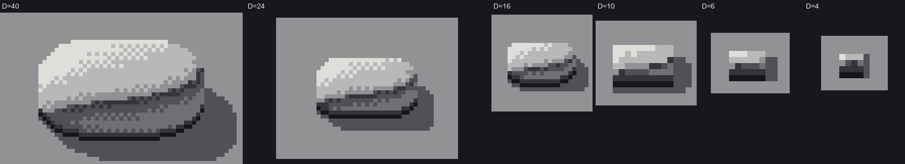
24. elements/cobbles/img/_t1.pngBash: cd ~/work/pixelart-studies/elements/cobbles; cat > scratch/t1.py <<'EOF' import sys; sys.path.insert(0,'.') import numpy as np from cobble import * from util import * rows=[] for s
cd ~/work/pixelart-studies/elements/cobbles; cat > scratch/t1.py <<'EOF'
import sys; sys.path.insert(0,'.')
import numpy as np
from cobble import *
from util import *
rows=[]
for sun in [(215,45),(160,35)]:
ims=[]
for D in [40,24,16,10,6,4]:
s=paint_cobble(D, seed=1, sun=sun, n=2.0, flat=0.6)
ims.append(label(fit(to_rgb(s), 420 if D>20 else 200, 300, s=8 if D>=16 else 12), f'D={D} sun={sun}'))
rows.append(hcat(ims))
save(vcat(rows),'_t1.png')
EOF
nice python3 scratch/t1.py
# output:
(Bash completed with no output)Read: elements/cobbles/img/_t1.png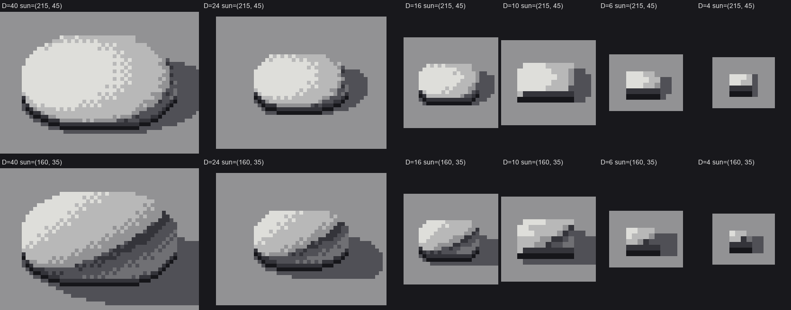
25. elements/cobbles/img/_t1.pngBash: cd ~/work/pixelart-studies/elements/cobbles; cat > scratch/p1.py <<'EOF' import sys; sys.path.insert(0,'.') from util import * R='~/work/pixelart-studies/transfer/refs/' crops=[(R+
cd ~/work/pixelart-studies/elements/cobbles; cat > scratch/p1.py <<'EOF'
import sys; sys.path.insert(0,'.')
from util import *
R='~/work/pixelart-studies/transfer/refs/'
crops=[(R+'braided_cobbles_hope.jpg',(630,225,800,355)),(R+'braided_cobbles_hope.jpg',(1095,425,1280,570)),(R+'braided_cobbles_hope.jpg',(530,760,720,940)),
(R+'braided_cobbles_kuban_wet.jpg',(610,295,880,430)),(R+'braided_cobbles_kuban_wet.jpg',(360,270,660,385)),(R+'braided_cobbles_hope.jpg',(795,65,950,210))]
rows=[]
for p,b in crops:
ims=[fit(photo_crop(p,b),340,240)]
for w in [40,16,8]:
ims.append(fit(photo_crop(p,b,px_w=w,grey=True),340 if w==40 else 200,240, s=8 if w>=16 else 12))
rows.append(hcat(ims))
save(vcat(rows),'_p1.png')
EOF
nice python3 scratch/p1.py
# output:
(Bash completed with no output)Read: elements/cobbles/img/_p1.png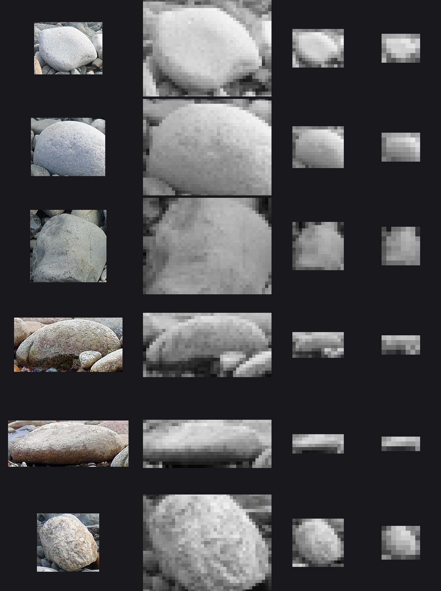
26. elements/cobbles/img/_p1.pngBash: cd ~/work/pixelart-studies/elements/cobbles; python3 -c " import sys;sys.path.insert(0,'.') from util import * save(up(ferrari('V19',(228,252,300,300)),8),'_f_big.png') save(up(fer
cd ~/work/pixelart-studies/elements/cobbles; python3 -c "
import sys;sys.path.insert(0,'.')
from util import *
save(up(ferrari('V19',(228,252,300,300)),8),'_f_big.png')
save(up(ferrari('V19',(290,262,362,310)),8),'_f_small.png')
"
# output:
(Bash completed with no output)Read: elements/cobbles/img/_f_big.pngRead: elements/cobbles/img/_f_small.png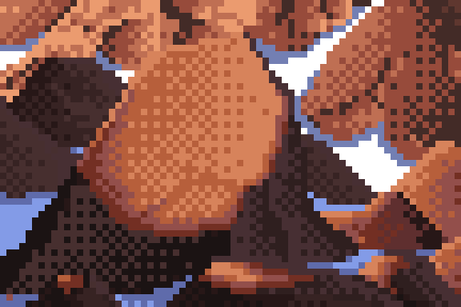
27. elements/cobbles/img/_f_big.png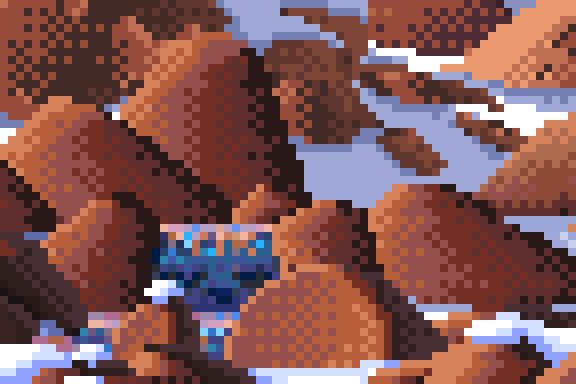
28. elements/cobbles/img/_f_small.pngBash: cd ~/work/pixelart-studies; python3 -c " import json,re,numpy as np from PIL import Image t=open('pedagogy/master-copy/ref/lw/V19.json').read() cols=json.loads(re.search(r'colors:(
cd ~/work/pixelart-studies; python3 -c "
import json,re,numpy as np
from PIL import Image
t=open('pedagogy/master-copy/ref/lw/V19.json').read()
cols=json.loads(re.search(r'colors:(\[\[.*?\]\])',t).group(1))
im=np.array(Image.open('pedagogy/master-copy/ref/lw/V19.png').convert('RGB'))
crop=im[252:300,228:300]
u,c=np.unique(crop.reshape(-1,3),axis=0,return_counts=True)
o=np.argsort(-c)
for i in o:
col=tuple(u[i]); idx=[k for k,cc in enumerate(cols) if tuple(cc)==col]
L=0.2126*col[0]+0.7152*col[1]+0.0722*col[2]
print(idx,col,c[i],round(L))
"
# output:
[98] (215, 131, 91) 368 146
[57, 58, 59, 76] (151, 75, 59) 356 90
[99] (183, 95, 59) 346 111
[92, 234] (71, 47, 47) 281 52
[93] (71, 47, 51) 268 52
[89] (27, 19, 19) 246 21
[75] (191, 111, 83) 238 126
[77] (67, 43, 39) 182 48
[94] (47, 31, 31) 166 34
[85] (147, 79, 75) 161 93
[91] (55, 35, 35) 148 39
[100] (115, 47, 35) 126 61
[88, 90] (39, 23, 23) 114 26
[48, 49, 50, 74] (235, 155, 111) 112 169
[18, 19, 20, 21, 40, 41, 42, 71, 72, 73, 80, 95, 175, 235, 236, 237, 238, 239, 241, 242, 243, 244, 245, 246, 247, 248, 249, 250, 251, 252, 253, 254, 255] (255, 255, 255) 110 255
[82] (115, 127, 179) 76 128
[107] (131, 155, 231) 64 155
[108] (95, 107, 171) 53 109
[87] (95, 47, 47) 36 57
[78] (95, 55, 47) 5 63Bash: cd ~/work/pixelart-studies/pedagogy/master-copy; sed -n 1,80p src/compare.py; sed -n 107,140p LESSONS.md
cd ~/work/pixelart-studies/pedagogy/master-copy; sed -n 1,80p src/compare.py; sed -n 107,140p LESSONS.md
# output:
"""Compare a copy against its reference crop.
Outputs side-by-side 3x (whole crop) and 8x (a detail window), and prints metrics:
blurLab : mean deltaE of Gaussian-blurred (sigma 3px) images -> masses / value structure "at a squint"
hist : L1 distance between colour-usage histograms, after snapping both to the ref palette (0..2)
runs : mean vertical/horizontal same-colour run lengths (texture grain / stroke direction)
edges : density of colour changes per pixel (busyness)
"""
import numpy as np
from PIL import Image, ImageDraw
from scipy.ndimage import gaussian_filter
def srgb2lab(a):
a=a/255.0
a=np.where(a>0.04045,((a+0.055)/1.055)**2.4,a/12.92)
M=np.array([[0.4124,0.3576,0.1805],[0.2126,0.7152,0.0722],[0.0193,0.1192,0.9505]])
xyz=a@M.T/np.array([0.9505,1.0,1.089])
f=np.where(xyz>0.008856,np.cbrt(xyz),7.787*xyz+16/116)
L=116*f[...,1]-16; A=500*(f[...,0]-f[...,1]); B=200*(f[...,1]-f[...,2])
return np.stack([L,A,B],-1)
def runs(img):
k=img[...,0].astype(np.int64)*65536+img[...,1]*256+img[...,2]
v=(np.diff(k,axis=0)!=0).mean(); h=(np.diff(k,axis=1)!=0).mean()
return 1/max(v,1e-6),1/max(h,1e-6)
def metrics(copy,ref):
c=copy.astype(float); r=ref.astype(float)
bl=np.linalg.norm(gaussian_filter(srgb2lab(c),(3,3,0))-gaussian_filter(srgb2lab(r),(3,3,0)),axis=-1).mean()
pal=np.unique(ref.reshape(-1,3),axis=0).astype(float)
def snap(x):
d=((x.reshape(-1,1,3)-pal[None])**2).sum(-1); return d.argmin(1)
hc=np.bincount(snap(c),minlength=len(pal))/c[...,0].size
hr=np.bincount(snap(r),minlength=len(pal))/r[...,0].size
return dict(blurLab=round(bl,2),hist=round(np.abs(hc-hr).sum(),3),
runs_copy=tuple(round(x,2) for x in runs(copy)),runs_ref=tuple(round(x,2) for x in runs(ref)),
ncol_copy=len(np.unique(copy.reshape(-1,3),axis=0)),ncol_ref=len(pal))
def sheet(copy,ref,out,detail=None,label=''):
h,w=ref.shape[:2]
a=Image.fromarray(ref.astype(np.uint8)).resize((w*3,h*3),Image.NEAREST)
b=Image.fromarray(copy.astype(np.uint8)).resize((w*3,h*3),Image.NEAREST)
if detail is None: detail=(w//2-20,h//2-15,40,30)
x,y,dw,dh=detail
a8=Image.fromarray(ref[y:y+dh,x:x+dw].astype(np.uint8)).resize((dw*8,dh*8),Image.NEAREST)
b8=Image.fromarray(copy[y:y+dh,x:x+dw].astype(np.uint8)).resize((dw*8,dh*8),Image.NEAREST)
W=max(w*6+12, dw*16+12); H=h*3+dh*8+40
o=Image.new('RGB',(W,H),(250,250,250)); d=ImageDraw.Draw(o)
o.paste(a,(0,16)); o.paste(b,(w*3+12,16))
d.text((2,2),'FERRARI (ref) 3x',fill=(0,0,0)); d.text((w*3+14,2),'COPY 3x '+label,fill=(0,0,0))
y0=h*3+36
o.paste(a8,(0,y0)); o.paste(b8,(dw*8+12,y0))
d.text((2,y0-14),f'ref 8x detail @({x},{y})',fill=(0,0,0)); d.text((dw*8+14,y0-14),'copy 8x',fill=(0,0,0))
for ox in (0,w*3+12):
d.rectangle([ox+x*3,16+y*3,ox+(x+dw)*3,16+(y+dh)*3],outline=(255,0,0))
o.save(out)
### Copy 5: lit boulders (Mountain Stream, morning palette) (`src/c5_boulder.Bash: cd ~/work/pixelart-studies/elements/cobbles; cat > scratch/classmap.py <<'EOF' import sys; sys.path.insert(0,'.') import numpy as np from PIL import Image, ImageDraw from util impo
cd ~/work/pixelart-studies/elements/cobbles; cat > scratch/classmap.py <<'EOF'
import sys; sys.path.insert(0,'.')
import numpy as np
from PIL import Image, ImageDraw
from util import *
im=np.array(ferrari('V19',(228,252,300,300)))
u,inv=np.unique(im.reshape(-1,3),axis=0,return_inverse=True)
L=0.2126*u[:,0]+0.7152*u[:,1]+0.0722*u[:,2]
rank=np.argsort(np.argsort(L))
R=rank[inv].reshape(im.shape[:2])
s=16
big=Image.fromarray(im).resize((im.shape[1]*s,im.shape[0]*s),Image.NEAREST)
d=ImageDraw.Draw(big); f=font(9)
for y in range(im.shape[0]):
for x in range(im.shape[1]):
r=R[y,x]; col=(0,0,0) if L[np.argsort(L)[r]]>120 else (255,255,255)
d.text((x*s+3,y*s+3),'%d'%r,fill=col,font=f)
big.save('img/_f_ranks.png')
for i in np.argsort(L): print(rank[i],tuple(u[i]),round(L[i]))
EOF
python3 scratch/classmap.py
# output:
0 (27, 19, 19) 21
1 (39, 23, 23) 26
2 (47, 31, 31) 34
3 (55, 35, 35) 39
4 (67, 43, 39) 48
5 (71, 47, 47) 52
6 (71, 47, 51) 52
7 (95, 47, 47) 57
8 (115, 47, 35) 61
9 (95, 55, 47) 63
10 (151, 75, 59) 90
11 (147, 79, 75) 93
12 (95, 107, 171) 109
13 (183, 95, 59) 111
14 (191, 111, 83) 126
15 (115, 127, 179) 128
16 (215, 131, 91) 146
17 (131, 155, 231) 155
18 (235, 155, 111) 169
19 (255, 255, 255) 255Read: elements/cobbles/img/_f_ranks.png 29. elements/cobbles/img/_f_ranks.png
29. elements/cobbles/img/_f_ranks.png
Bash: python3 -c "import cv2; print(cv2.__version__)"; python3 -c "import skimage; print(skimage.__version__)"; python3 -c "import scipy; print(scipy.__version__)"
python3 -c "import cv2; print(cv2.__version__)"; python3 -c "import skimage; print(skimage.__version__)"; python3 -c "import scipy; print(scipy.__version__)" # output: 4.10.0 0.25.2 1.14.0
Bash: cd ~/work/pixelart-studies/elements/cobbles; cat > scratch/grid.py <<'EOF' import sys; sys.path.insert(0,'.') import numpy as np from util import * im=np.array(ferrari('V19',(228,2
cd ~/work/pixelart-studies/elements/cobbles; cat > scratch/grid.py <<'EOF'
import sys; sys.path.insert(0,'.')
import numpy as np
from util import *
im=np.array(ferrari('V19',(228,252,300,300)))
u,inv=np.unique(im.reshape(-1,3),axis=0,return_inverse=True)
L=0.2126*u[:,0]+0.7152*u[:,1]+0.0722*u[:,2]
rank=np.argsort(np.argsort(L))
R=rank[inv].reshape(im.shape[:2])
ch='0123456789ABCDEFGHIJ'
print(' '+''.join(str(x%10) for x in range(R.shape[1])))
for y in range(R.shape[0]):
print('%2d '%y+''.join(ch[r] for r in R[y]))
EOF
python3 scratch/grid.py
# output:
012345678901234567890123456789012345678901234567890123456789012345678901
0 EEEEEEAEAAA4IEIIIEEEEEIII44AAAAEEEEIIIIIEEAA44AAAE4AAEI444JJAAAA4A444499
1 IEIEEAEAEA4IIEIIEAEEIEIII444AAEEIEIIIIIIEAEA44AAEA4AEEIFFJEAEAEAA4A44949
2 EEEEAEAAA4IEEIIEEEEIIIIEIE4444EIIEEEEIIIAAA44AAAAEE4AEIFJEEEAAAAAA444444
3 EEEAEAEA4IIAEEEEIII4AAEEIEEE4444EEIIIEIIEAA4A4AAEEIEIIFJEEEAEAAAA4A4A449
4 EEAEAAA4IEEII4AIE44AAEEIIEEE44AAAEEIIIAAAAAAA4AAEEIAFFJEEEEEAAAAAA4A4444
5 EAEAAAFIIIIIIEIE44AAEAIEIAE4A4AAEAEEGG6AAAEAA4A4A4FFJJEEEAEAEAAAA4A44444
6 AEAAFFIIIIIIIIEI4AAAAEEIIEE44AAGGGGGDGG6FAAAAAAAAFJJJEEEEEAAAAAAAAAA4444
7 FFFFFIIEIEIEEII4A4AAEEIEIEGGGGGDGDGDGGG6FFFAA4A4FJJJEEEAEAEAEAAAA4A4A4A4
8 JJJJIIIEAEEIEIEF4AAAAEEGGGDDDDDGDGGGGGGG6FFFFFFFJJJEEEEEAEAEAAA4AAAA44AE
9 JJJII4A11566666FF4EAEAGGGDGDGDGDGDGDGDGGG6FFFJJJJJJEEAEAEAEA4AEAA4A4A4AA
10 JEII4A1131535556FFFEEEGGDDDDDGDGDGGGGGGGG6JJJJJJJJEEEEAEAEAA4AEAAAAAA4AA
11 EIA4E1131335353566JJJGGDGDGDGDGDGDGDGGGGGG6JJJJJJFEAEAEAEAE4AEAAA4A4A4AE
12 I4AE111133333355666JGGDDDDDGDDDGDGGGGGGGGG66JJJJFEEEAEAEAAA4AAAAAAAA4A4A
13 A4EA1313531335355666GDGDDDGDGDGDGDGDGDGGGGG66JJJFAEAEAEAEA4EA4AAA4A4A4A4
14 III1113135333333556GBDDDDDDDDGDGDGGGGGGGGGGB66JFEEEEAEAAA4AEAAAAAAAA4A44
15 6I13131313533535353GBDDDGDGDGDGDGDGDGDGDGGGGB6FAEAEAEAE4AA4EAAA4A4A4A4A4
16 611131313355555355GBDDDDDDDGDDDGDGGGGGGGGGGGB6FEAEAEA44AAAE4AAAA4AAA4444
17 56131313131555555GBBDDGDGDGDGDGDGDGDGDGGGDGGB6FAEA44A4AAEAEEA4A4A4A4A4A4
18 55613133335333553GBDDDDDDDDDDGDGDGGGGGGGGGGBB2FF4AAAAAAEEEEEAAAA4A444444
19 3556631313335555G8BBGDGDGDGDGDGDGDGDGDGGGGGB822FF4AAEAEAEAEFA4A4A4A4A444
20 555556313333333D8BBDDDDDDDDGDGGGDGGGGGGGGGGB862JFFAAAAAEAFFFAAAA444A4444
21 353555661313353D8BDDDDGDGDGDGDGDGDGDGDGGGGGB62256FFFAAAFFFJFA4A4E4A44444
22 33555556633333D8BDBDDDDDDGDGDGDGGGGGGGGGGGDB6226566FFFFFJJJFFAAAAE44GGG4
23 35353556566CHB88BBDDGDGDGDGDGDGDGDGDGGGGGGD862623566JJJJJJJJFFAAAAAGGGDD
24 5353555566666B8BBDBDDDDGDDDGGGDGDGGGGGGGGDB6662255566JJJJJJJJFFAAAGGDDDD
25 353535355666B888BBDDGDGDGDGDGDGGGDGGGDGGGD866262353556JJJJJJJJFFFGGDDBDB
26 535555555660888BBDBDDGDGDGDGDDDGDGGDGGGGGD8666225355556JJJJJJJJJGGDDDDBB
27 3535355556601888BBDDGDGDGDGDGDGDDDGGGGGGDB62626235353556JJJJJJJGGDGDDBB8
28 535355555600118B8BBDDDDGDGGGDDDDDDDDDGDDB2662222535355566JJJJJGGGGDDBBBB
29 3535353550055588B8BBDDGDGDGDDDGDGDGDDD82626662623535353556JJJGGDGDDBDBB8
30 C353CCCCC00555588B8BBDDDDGDDDGDGDGDGDB6622662622H3535355556GBB1GDDDDBBBB
31 CCCCCHHH0015050588BBDDGDGBDDGDGDGGGDD862626262622HH5353535GDB771GDDBDBB8
32 HHHHHHH000155550588BBDDBBDDGDGDGDGDDB866226626222HHHHHHHHGDB77771DDDBBBB
33 HHHHHH00050505050888BB8BDDGDGDDDGDDBB2626226626222GGGGGDDDB7877171DBDBDB
34 HHHHH00005555555558888BBBDDBDBDBBBBB866622226666222DDDDBBB887777111DBBBB
35 HHHHH0000505050505058888BBBBBBB888886662622266626222DBB8B88787877171DBBB
36 HHHH00005555555050505555888888850100666622222666262222BB8888787777111BBB
37 HHHH000055050505050505055050505000006262626226626262222BD8878777711117BG
38 HHH000055555555550505050000000000000Write: elements/cobbles/stage0_copy.py
"""stage0_copy.py -- master copy of Ferrari's lit rounded boulder, Mountain Stream (V19, morning).
Crop: V19 (228,252)-(300,300), 72x48. The LAYOUT (which region is which kind of thing) is the
copyist's sketch, taken from the reference as coarse smoothed regions. Everything INSIDE the
regions -- which class goes where, the dither, the bands, the rims, the contacts -- is the
procedure being discovered, and is generated here from form + light, not copied.
Discovered (from the class grid, scratch/grid.py):
* The lit face of the big boulder lives inside ONE dither transition, D(183,95,59) <-> G(215,131,91),
as a Bayer-2x2 ordered checker whose density follows the light: 75% G upper-right (toward the
sun) to 25% G lower-left. It never reaches either pure class on the face -- 'sandpaper'.
* The form turns away only in the last 2-4 px at the silhouette on the side away from the light:
D/B checker -> B(151,75,59) -> 8(115,47,35) -> contact 0(27,19,19) underneath.
* The silhouette toward the light is a 1-px rim of solid G; the top rows are solid G.
* Shadow-family boulders use their own classes 1,3,5,6 in the same checker logic, lit from the
side facing the lit boulder (bounce): 5/6 on that side, 1/3 away; a 6 rim along the top.
* The shadowed ground between masses is 0/5 checker; cast shadow on rock is 2/6 checker.
* Snow: white with a 1-2 px F(115,127,179) band on its lower / shadow edge; snow in shadow is H/C.
"""
import sys
sys.path.insert(0, __file__.rsplit('/', 1)[0])
import numpy as np
from scipy import ndimage as ndi
from util import ferrari, up, label, hcat, vcat, save, fit
BAYER2 = np.array([[0, 2], [3, 1]]) / 4.0 + 1 / 8.0
def ranks_of(im):
u, inv = np.unique(im.reshape(-1, 3), axis=0, return_inverse=True)
L = 0.2126 * u[:, 0] + 0.7152 * u[:, 1] + 0.0722 * u[:, 2]
order = np.argsort(L)
rank = np.argsort(order)
return rank[inv.ravel()].reshape(im.shape[:2]), u[order]
def ordered(v, classes, ox=0, oy=0, mat=BAYER2):
"""v in class-index units (0..len-1) -> class values, ordered dither between neighbours."""
H, W = v.shape
v = np.clip(v, 0, len(classes) - 1)
lo = np.floor(v).astype(int)
f = v - lo
t = mat[(np.arange(H)[:, None] + oy) % 2, (np.arange(W)[None, :] + ox) % 2]
i = np.where(f > t, np.minimum(lo + 1, len(classes) - 1), lo)
return np.asarray(classes)[i]
def inflate(mask, power=0.5):
"""rounded height field from a silhouette (distance transform, domed)."""
d = ndi.distance_transform_edt(mask)
h = d ** power
h = ndi.gaussian_filter(h, 1.0) * mask
gy, gx = np.gradient(h)
N = np.stack([-gx, -gy, np.full_like(h, 0.6)], -1)
N /= np.linalg.norm(N, axis=-1, keepdims=True)
return N, d
def edge_dist(mask, direction):
"""distance (px) to the silhouette measured along a screen direction (dx,dy):
how far a pixel is from the edge on that side."""
H, W = mask.shape
dx, dy = direction
dist = np.full((H, W), 99, int)
cur = mask.copy()
k = 0
# pixel p has edge-distance k if p + (k+1)*dir leaves the mask for the first time
shifted = mask.copy()
for k in range(0, 12):
s = np.zeros_like(mask)
sx, sy = dx * (k + 1), dy * (k + 1)
ys = slice(max(0, -sy), H - max(0, sy)); yd = slice(max(0, sy), H - max(0, -sy))
xs = slice(max(0, -sx), W - max(0, sx)); xd = slice(max(0, sx), W - max(0, -sx))
s[ys, xs] = mask[yd, xd]
out = mask & ~s & (dist == 99)
dist[out] = k
return dist
# ------------------------------------------------------------------ region painters
def paint_lit_boulder(out, m, L, classes=(8, 11, 13, 16), face=(2.2, 2.8)):
"""classes: ramp indices [edge, turn, face-dark, face-light]."""
N, d = inflate(m)
s = N @ L
sm = s[m]
t = (s - np.percentile(sm, 5)) / max(np.percentile(sm, 95) - np.percentile(sm, 5), 1e-6)
x = face[0] + (face[1] - face[0]) * np.clip(t, 0, 1)
# the form turning away: bands inside the silhouette on the side away from the light
away = (int(-np.sign(L[0])), int(-np.sign(L[1])))
e_down = edge_dist(m, (0, 1)) # distance to the lower edge
e_away = edge_dist(m, (away[0], 0)) # distance to the edge away from the light (horizontal)
e = np.minimum(e_down, e_away + 1)
fall = np.select([e == 0, e == 1, e == 2, e == 3], [0.0, 1.0, 1.5, 1.9], default=9)
x = np.minimum(x, fall)
# the toward-light silhouette: 1 px solid rim of the lightest face class
e_up = edge_dist(m, (0, -1))
e_tow = edge_dist(m, (-away[0], 0))
rim = ((e_up == 0) | (e_tow == 0)) & (e > 1)
x = np.where(rim, 3.0, x)
x = np.where((e_up == 1) & (e > 2), np.maximum(x, 2.8), x)
v = ordered(x, classes)
out[m] = v[m]
def paint_dark_boulder(out, m, bounce_dir, classes=(1, 3, 5, 6), face=(0.6, 2.1)):
N, d = inflate(m)
B = np.array([bounce_dir[0], bounce_dir[1], 0.3]); B /= np.linalg.norm(B)
s = N @ B
sm = s[m]
t = (s - np.percentile(sm, 5)) / max(np.percentile(sm, 95) - np.percentile(sm, 5), 1e-6)
x = face[0] + (face[1] - face[0]) * np.clip(t, 0, 1)
e_up = edge_dist(m, (0, -1))
x = np.where(e_up == 0, 3.0, x) # top rim: 6
e_dn = edge_dist(m, (0, 1))
v = ordered(x, classes)
v = np.where(e_dn == 0, 0, v)
out[m] = v[m]
def paint_checker(out, m, a, b, frac=0.5):
H, W = m.shape
x = np.full((H, W), frac)
v = ordered(x, (a, b))
out[m] = v[m]
def paint_bg_rock(out, m, rng, L):
"""distant lit rock: E/A checker planes, I on sun-facing top edges, 4 in cracks."""
H, W = m.shape
N, d = inflate(m, 0.7)
s = N @ L
n = ndi.gaussian_filter(rng.normal(size=(H, W)), 1.2)
n = n / (n.std() + 1e-9)
x = 1.5 + 0.9 * (s - s[m].mean()) / (s[m].std() + 1e-6) + 0.35 * n
v = ordered(np.clip(x, 0, 3), (4, 10, 14, 18))
e_up = edge_dist(m, (0, -1))
v = np.where((e_up == 0) & (s > s[m].mean()), 18, v)
out[m] = v[m]
def paint_snow(out, m, shadow=False):
if shadow:
paint_checker(out, m, 12, 17, 0.5)
return
e_dn = edge_dist(m, (0, 1))
e_l = edge_dist(m, (-1, 0))
v = np.full(m.shape, 19)
v = np.where((e_dn == 0) | (e_l == 0), 15, v)
out[m] = v[m]
# ------------------------------------------------------------------ the sketch
GROUPS = {'lit': {7, 8, 11, 13, 16}, 'dark': {0, 1, 2, 3, 5, 6}, 'bg': {4, 9, 10, 14, 18},
'snow': {15, 19}, 'snowsh': {12, 17}}
def sketch(R):
"""coarse region layout: majority-smoothed group map, split into connected parts."""
H, W = R.shape
g = np.zeros((H, W), int)
names = list(GROUPS)
for i, k in enumerate(names):
g[np.isin(R, list(GROUPS[k]))] = i
# majority filter (removes dither: regions, not pixels)
votes = np.stack([ndi.uniform_filter((g == i).astype(float), 3) for i in range(len(names))])
gs = votes.argmax(0)
return gs, names
def paint(seed=0):
ref = np.array(ferrari('V19', (228, 252, 300, 300)))
R, pal = ranks_of(ref)
H, W = R.shape
gs, names = sketch(R)
rng = np.random.default_rng(seed)
out = np.zeros((H, W), int)
L = np.array([0.55, -0.45, 0.7]); L /= np.linalg.norm(L) # upper right, screen coords (y down)
for i, k in enumerate(names):
lab, n = ndi.label(gs == i)
for j in range(1, n + 1):
m = lab == j
if k == 'lit':
paint_lit_boulder(out, m, L)
elif k == 'dark':
# which way is the nearest lit mass? bounce comes from there
paint_dark_boulder(out, m, (1.0, -0.2))
elif k == 'bg':
paint_bg_rock(out, m, rng, L)
elif k == 'snow':
paint_snow(out, m)
else:
paint_snow(out, m, shadow=True)
# contact: black under every lit mass bottom edge
lit = gs == names.index('lit')
below = np.zeros_like(lit); below[1:] = lit[:-1]
out[below & ~lit & (gs == names.index('dark'))] = 0
return pal[out], ref, R, out
if __name__ == '__main__':
img, ref, R, out = paint(0)
a = label(up(ref, 8), 'Ferrari V19 (228,252) 8x')
b = label(up(img, 8), 'copy 8x')
save(hcat([a, b]), 'stage0_copy_v1.png')
Bash: cd ~/work/pixelart-studies/elements/cobbles; nice python3 stage0_copy.py
cd ~/work/pixelart-studies/elements/cobbles; nice python3 stage0_copy.py # output: (Bash completed with no output)
Read: elements/cobbles/img/stage0_copy_v1.png 30. elements/cobbles/img/stage0_copy_v1.png
30. elements/cobbles/img/stage0_copy_v1.png
Bash: cd ~/work/pixelart-studies/elements/cobbles; cat > scratch/cmpgrid.py <<'EOF' import sys; sys.path.insert(0,'.') import numpy as np import stage0_copy as s0 img, ref, R, out = s0.p
cd ~/work/pixelart-studies/elements/cobbles; cat > scratch/cmpgrid.py <<'EOF'
import sys; sys.path.insert(0,'.')
import numpy as np
import stage0_copy as s0
img, ref, R, out = s0.paint(0)
ch='0123456789ABCDEFGHIJ'
x0,x1,y0,y1=[int(a) for a in sys.argv[1:5]] if len(sys.argv)>4 else (10,50,4,40)
for y in range(y0,y1):
print('%2d '%y+''.join(ch[r] for r in R[y,x0:x1])+' '+''.join(ch[r] for r in out[y,x0:x1]))
EOF
python3 scratch/cmpgrid.py 12 50 4 40
# output:
4 I4AIE44AAEEIIEEE44AAAEEIIIAAAAAAA4AAEE EAA4AAEAEAAAEAEAAAEAA4AAA44444AAAAEEIE
5 IEIE44AAEAIEIAE4A4AAEAEEGG6AAAEAA4A4A4 EEAA4AAEEEAAAEAA4AAA444EBG44444A4AAEEE
6 IIEI4AAAAEEIIEE44AAGGGGGDGG6FAAAAAAAAF EAA4AAAEIEEAEAA444EBGGGGGGG04444A4AEIF
7 EII4A4AAEEIEIEGGGGGDGDGDGGG6FFFAA4A4FJ AA44444AEEA44EBGGGGGDGDGDGDGFJJ4444EFJ
8 EIEF4AAAAEEGGGDDDDDGDGGGGGGG6FFFFFFFJJ A444444AEEEBGGGGGGGGGGGGGGGG0FJJJJJJJJ
9 666FF4EAEAGGGDGDGDGDGDGDGDGGG6FFFJJJJJ 666FF44AAEBDDGDGDGDGDGDGDGDGGFJJJJJJJJ
10 5556FFFEEEGGDDDDDGDGDGGGGGGGG6JJJJJJJJ 55566FJ4EBDDGGGGGGGGGGGGGGGGGGFJJJJJJJ
11 353566JJJGGDGDGDGDGDGDGDGGGGGG6JJJJJJF 353556FJBDDGDGDGDGDGDGDGDGDGDG0FJJJJJF
12 3355666JGGDDDDDGDDDGDGGGGGGGGG66JJJJFE 5555556FBBDDGDGGGGGGGGGGGGGGGGG6FJJJJA
13 35355666GDGDDDGDGDGDGDGDGDGGGGG66JJJFA 3535555BBDDGDGDGDGDGDGDGDGDGDGG06FJJF4
14 3333556GBDDDDDDDDGDGDGGGGGGGGGGB66JFEE 5555555BDDGDGDGGGGGGGGGGGGGGGGGG06FFAA
15 3535353GBDDDGDGDGDGDGDGDGDGDGGGGB6FAEA 3535350BBDDGDGDGDGDGDGDGDGDGDGDGG0FAAE
16 555355GBDDDDDDDGDDDGDGGGGGGGGGGGB6FEAE 555550BBDDGDGDGDGGGGGGGGGGGGGGGGGBAAAA
17 55555GBBDDGDGDGDGDGDGDGDGDGGGDGGB6FAEA 35355BBDDGDGDGDGDGDGDGDGDGDGDGDGD8F444
18 33553GBDDDDDDDDDDGDGDGGGGGGGGGGBB2FF4A 55550BDDGDGDGDGDGDGGGGGGGGGGGGGGG06F44
19 5555G8BBGDGDGDGDGDGDGDGDGDGGGGGB822FF4 3550BDDGDGDGDGDGDGDGDGDGDGDGDGDGB35FJ4
20 333D8BBDDDDDDDDGDGGGDGGGGGGGGGGB862JFF 555BDDGDGDGDGDGDGDGDGGGGGGGGGGGD8156FJ
21 353D8BDDDDGDGDGDGDGDGDGDGDGGGGGB62256F 350BBDDGDGDGDGDGDGDGDGDGDGDGDGDG03356F
22 33D8BDBDDDDDDGDGDGDGGGGGGGGGGGDB622656 50BBDDGDGDGDGDGDGDGDGDGDGGGGGGGB335556
23 HB88BBDDGDGDGDGDGDGDGDGDGGGGGGD8626235 0BBDDGDGDGDGDGDGDGDGDGDGDGDGDGD8133535
24 6B8BBDBDDDDGDDDGGGDGDGGGGGGGGDB6662255 BBDDGDGDGDGDGDGDGGGDGDGDGDGGGDG0333355
25 B888BBDDGDGDGDGDGDGGGDGGGDGGGD86626235 BDDGDGDGDGDGDGDGDGDGDGDGDGDDDDB3133335
26 888BBDBDDGDGDGDGDDDGDGGDGGGGGD86662253 8BDDGDGDGDGDGDGDGDGGGDGDGDDBDB81333355
27 1888BBDDGDGDGDGDGDGDDDGGGGGGDB62626235 08BDDDDGDGDGDGDGDGDGDGDGDGBBB803133335
28 118B8BBDDDDGDGGGDDDDDDDDDGDDB266222253 50BBDDGDGDGDGDGDGDGGGGGGGDB88033335353
29 5588B8BBDDGDGDGDDDGDGDGDDD826266626235 558BBDDDDGDGDGDGDGDGDGDGDD800333353533
30 55588B8BBDDDDGDDDGDGDGDGDB6622662622H3 5508BDGDGDGDGDGDGDGDGGGGGG033333535550
31 050588BBDDGDGBDDGDGDGGGDD862626262622H 35508DDDDGDGDGDGDGDGDGDGDB13333335555H
32 5550588BBDDBBDDGDGDGDGDDB866226626222H 55550BDBDDDDGDGDGDGDDDDDD8313333555556
33 05050888BB8BDDGDGDDDGDDBB2626226626222 355558BBBDBDDDDDDDDDBDBDB0131333355555
34 5555558888BBBDDBDBDBBBBB86662222666622 55555088BBBBDBDBDBDBBBBB81333333555555
35 050505058888BBBBBBB8888866626222666262 355555008888BBBBBBB8888803133333353555
36 55505050555588888885010066662222266626 55555555000088888880000033333333535555
37 05050505050550505050000062626262266262 35353535353500000003353333333333333535
38 55555050505000000000000066662622266666 53535555535553535353535353533333535355
39 05050505050505050000000066626262266262 33333535353535353535333333333333333335Bash: cd ~/work/pixelart-studies/elements/cobbles; python3 - <<'EOF' import re s=open('stage0_copy.py').read() # replace inflate with ellipse-sphere normals s=s.replace('''def inflate(ma
cd ~/work/pixelart-studies/elements/cobbles; python3 - <<'EOF'
import re
s=open('stage0_copy.py').read()
# replace inflate with ellipse-sphere normals
s=s.replace('''def inflate(mask, power=0.5):''','''def sphere_normals(mask, squash=1.0):
"""normals of the ellipsoid dome that best fits the silhouette (image moments).
Gives a smooth, nearly linear light gradient across the face, like a painter's."""
ys, xs = np.nonzero(mask)
cx, cy = xs.mean() + 0.5, ys.mean() + 0.5
C = np.cov(np.stack([xs + 0.5 - cx, ys + 0.5 - cy]))
w, V = np.linalg.eigh(C)
radii = 2.0 * np.sqrt(np.maximum(w, 1e-6)) * 1.08
H, W = mask.shape
yy, xx = np.mgrid[0:H, 0:W]
P = np.stack([xx + 0.5 - cx, yy + 0.5 - cy], -1) @ V # into ellipse axes
u = P / radii
r2 = np.clip((u ** 2).sum(-1), 0, 0.985)
nz = np.sqrt(1 - r2) * squash
n2 = (u / radii) @ V.T * radii.mean() # back to screen, gradient direction
N = np.stack([n2[..., 0], n2[..., 1], nz], -1)
N /= np.linalg.norm(N, axis=-1, keepdims=True)
return N
def inflate(mask, power=0.5):''')
open('stage0_copy.py','w').write(s)
EOF
# output:
(Bash completed with no output)Bash: cd ~/work/pixelart-studies/elements/cobbles; python3 - <<'EOF' s=open('stage0_copy.py').read() a=s.index('# ------------------------------------------------------------------ regio
cd ~/work/pixelart-studies/elements/cobbles; python3 - <<'EOF'
s=open('stage0_copy.py').read()
a=s.index('# ------------------------------------------------------------------ region painters')
b=s.index("if __name__ == '__main__':")
new='''# ------------------------------------------------------------------ region painters
def neighbours_dark(m, dark, direction):
"""silhouette pixels of m whose neighbour in `direction` is in `dark`."""
dx, dy = direction
sh = np.zeros_like(dark)
H, W = m.shape
ys = slice(max(0, -dy), H - max(0, dy)); yd = slice(max(0, dy), H - max(0, -dy))
xs = slice(max(0, -dx), W - max(0, dx)); xd = slice(max(0, dx), W - max(0, -dx))
sh[ys, xs] = dark[yd, xd]
return m & sh
def paint_lit_boulder(out, m, L, dark, classes=(8, 11, 13, 16), face=(2.2, 2.8), turn=0.25, P=None):
"""classes: ramp indices [edge, turn, face-dark, face-light].
face: the lit face lives in one dither transition (x in class units).
turn: N.L below which the surface 'turns away' and walks down to the edge class."""
P = P or {}
N = sphere_normals(m, P.get('squash', 1.0))
s = N @ L
sm = s[m]
hi = np.percentile(sm, 97)
t = np.clip((s - turn) / max(hi - turn, 1e-6), 0, 1)
x = face[0] + (face[1] - face[0]) * t
# turning away: below `turn` the value walks down through B/D, B, 8 over a short distance
k = P.get('fall', 7.0)
x = np.where(s < turn, face[0] - k * (turn - s), x)
x = np.maximum(x, 0)
e_dn = edge_dist(m, (0, 1))
# the bottom: always 8 on the last row, B above it (form sits on a flat underside)
x = np.where(e_dn == 0, 0.0, x)
x = np.where(e_dn == 1, np.minimum(x, 1.0), x)
x = np.where(e_dn == 2, np.minimum(x, 1.5), x)
# top rows solid lightest (sunlit crown)
e_up = edge_dist(m, (0, -1))
x = np.where((e_up <= 1) & (s > turn), 3.0, x)
# found edge on the away side against a dark neighbour: lightest rim + dark echo inside
away = (int(-np.sign(L[0])), 0)
rimpix = neighbours_dark(m, dark, away) & (s > turn - 0.05) & (e_dn > 3)
x = np.where(rimpix, 3.0, x)
echo = np.zeros_like(rimpix)
if away[0] < 0:
echo[:, 1:] = rimpix[:, :-1]
else:
echo[:, :-1] = rimpix[:, 1:]
x = np.where(echo & m & ~rimpix, 1.0, x)
v = ordered(x, classes)
out[m] = v[m]
def paint_dark_boulder(out, m, bounce_dir, classes=(1, 3, 5, 6), face=(0.6, 2.2)):
N = sphere_normals(m)
B = np.array([bounce_dir[0], bounce_dir[1], 0.5]); B /= np.linalg.norm(B)
s = N @ B
sm = s[m]
t = (s - np.percentile(sm, 5)) / max(np.percentile(sm, 95) - np.percentile(sm, 5), 1e-6)
x = face[0] + (face[1] - face[0]) * np.clip(t, 0, 1)
e_up = edge_dist(m, (0, -1))
x = np.where(e_up == 0, 3.0, x) # top rim: 6
v = ordered(x, classes)
out[m] = v[m]
def paint_ground_shadow(out, m, classes=(0, 5), frac=0.6):
"""shadowed gravel between masses: rows alternate solid 5 and 0/5 checker (75% 5)."""
x = np.full(m.shape, frac)
v = ordered(x, classes)
out[m] = v[m]
def paint_checker(out, m, a, b, frac=0.5):
x = np.full(m.shape, frac)
v = ordered(x, (a, b))
out[m] = v[m]
def paint_bg_rock(out, m, rng, L):
"""distant lit rock: E/A checker planes, I on sun-facing top edges, 4 in cracks."""
H, W = m.shape
N = sphere_normals(m)
s = N @ L
n = ndi.gaussian_filter(rng.normal(size=(H, W)), 1.2)
n = n / (n.std() + 1e-9)
x = 1.5 + 0.9 * (s - s[m].mean()) / (s[m].std() + 1e-6) + 0.35 * n
v = ordered(np.clip(x, 0, 3), (4, 10, 14, 18))
e_up = edge_dist(m, (0, -1))
v = np.where((e_up == 0) & (s > s[m].mean()), 18, v)
out[m] = v[m]
def paint_snow(out, m, shadow=False):
e_dn = edge_dist(m, (0, 1))
e_l = edge_dist(m, (-1, 0))
if shadow:
v = np.where(e_dn == 0, 12, 17)
else:
v = np.where((e_dn == 0) | (e_l == 0), 15, 19)
out[m] = v[m]
# ------------------------------------------------------------------ the sketch
# which classes vote for which kind of region (ambiguous classes vote half)
VOTES = {'lit': {7: 1, 8: 1, 11: 1, 13: 1, 16: 1},
'darkb': {1: 1, 3: 1, 5: .5, 6: .5},
'ground': {0: 1, 5: .5},
'cast': {2: 1, 6: .5},
'bg': {4: 1, 9: 1, 10: 1, 14: 1, 18: 1},
'snow': {15: 1, 19: 1}, 'snowsh': {12: 1, 17: 1}}
def sketch(R, win=3):
names = list(VOTES)
votes = []
for k in names:
v = np.zeros(R.shape)
for c, w in VOTES[k].items():
v += w * (R == c)
votes.append(ndi.uniform_filter(v, win))
return np.stack(votes).argmax(0), names
def paint(seed=0, P=None):
P = P or {}
ref = np.array(ferrari('V19', (228, 252, 300, 300)))
R, pal = ranks_of(ref)
H, W = R.shape
gs, names = sketch(R, P.get('win', 3))
rng = np.random.default_rng(seed)
out = np.zeros((H, W), int)
L = np.array(P.get('L', [0.6, -0.5, 0.62])); L = L / np.linalg.norm(L) # upper right (y down)
dark = np.isin(gs, [names.index(k) for k in ('darkb', 'ground', 'cast')])
for i, k in enumerate(names):
lab, n = ndi.label(gs == i)
for j in range(1, n + 1):
m = lab == j
if k == 'lit':
paint_lit_boulder(out, m, L, dark, P=P, turn=P.get('turn', 0.25))
elif k == 'darkb':
paint_dark_boulder(out, m, (1.0, -0.2))
elif k == 'ground':
paint_ground_shadow(out, m)
elif k == 'cast':
paint_checker(out, m, 2, 6, 0.5)
elif k == 'bg':
paint_bg_rock(out, m, rng, L)
elif k == 'snow':
paint_snow(out, m)
else:
paint_snow(out, m, shadow=True)
# contact: black on the row under a lit mass's flat bottom
lit = gs == names.index('lit')
e_dn = edge_dist(lit, (0, 1))
below = np.zeros_like(lit); below[1:] = (lit & (e_dn == 0))[:-1]
flat = below & ~lit & dark
# only where the bottom is a run (>=3 px wide), not along diagonal edges
run = ndi.uniform_filter(flat.astype(float), (1, 3)) > 0.9
run = ndi.binary_dilation(run, np.ones((1, 3), bool)) & flat
out[run] = 0
return pal[out], ref, R, out
'''
s=s[:a]+new+s[b:]
open('stage0_copy.py','w').write(s)
EOF
nice python3 stage0_copy.py && python3 scratch/cmpgrid.py 10 50 4 40
# output:
~/work/pixelart-studies/elements/cobbles/stage0_copy.py:53: RuntimeWarning: Degrees of freedom <= 0 for slice
C = np.cov(np.stack([xs + 0.5 - cx, ys + 0.5 - cy]))
~/miniconda3/lib/python3.12/site-packages/numpy/lib/function_base.py:2748: RuntimeWarning: divide by zero encountered in divide
c *= np.true_divide(1, fact)
~/miniconda3/lib/python3.12/site-packages/numpy/lib/function_base.py:2748: RuntimeWarning: invalid value encountered in multiply
c *= np.true_divide(1, fact)
~/work/pixelart-studies/elements/cobbles/stage0_copy.py:41: RuntimeWarning: invalid value encountered in cast
lo = np.floor(v).astype(int)
~/work/pixelart-studies/elements/cobbles/stage0_copy.py:53: RuntimeWarning: Degrees of freedom <= 0 for slice
C = np.cov(np.stack([xs + 0.5 - cx, ys + 0.5 - cy]))
~/miniconda3/lib/python3.12/site-packages/numpy/lib/function_base.py:2748: RuntimeWarning: divide by zero encountered in divide
c *= np.true_divide(1, fact)
~/miniconda3/lib/python3.12/site-packages/numpy/lib/function_base.py:2748: RuntimeWarning: invalid value encountered in multiply
c *= np.true_divide(1, fact)
~/work/pixelart-studies/elements/cobbles/stage0_copy.py:41: RuntimeWarning: invalid value encountered in cast
lo = np.floor(v).astype(int)
4 EII4AIE44AAEEIIEEE44AAAEEIIIAAAAAAA4AAEE EAEAAAEEEAEAAAEEEEEEIEIEEEIEIEIEIEIEEEIE
5 IIIEIE44AAEAIEIAE4A4AAEAEEGG6AAAEAA4A4A4 AEEEAAAEAEAAAAAEAEAEEEEEEEGGEEEEEIEEEEEI
6 IIIIEI4AAAAEEIIEE44AAGGGGGDGG6FAAAAAAAAF EAEAAAAAEAEAAAEAEAEAEGGGGGGGGEEEIIIEEEIF
7 IEEII4A4AAEEIEIEGGGGGDGDGDGGG6FFFAA4A4FJ 4AAA4A4A4A4A4AAAGGGGGGGGGGDGGGFJJIEIEEFJ
8 EIEIEF4AAAAEEGGGDDDDDGDGGGGGGG6FFFFFFFJJ A4AAA444A4A4AGGGGGGGGDGGGGGGGGGFJJJJJJJJ
9 66666FF4EAEAGGGDGDGDGDGDGDGDGGG6FFFJJJJJ 66666FJ44444GGGGDGDGDGDGDGDGDGGFJJJJJJJJ
10 535556FFFEEEGGDDDDDGDGDGGGGGGGG6JJJJJJJJ 535556FJJ4ADGDGDGDGDGGGGGGGGGGGGFJJJJJJJ
11 35353566JJJGGDGDGDGDGDGDGDGGGGGG6JJJJJJF 3535556FFJBGDDDGDGDGDGDGDGDGDGDGFJJJJJJF
12 333355666JGGDDDDDGDDDGDGGGGGGGGG66JJJJFE 555555666FDDGDGDGDGDGGGGGGGGGGGGGFJJJJJA
13 1335355666GDGDDDGDGDGDGDGDGDGGGGG66JJJFA 355555555DDDDDDGDGDGDGDGDGDGDGDGGGFJJJFA
14 333333556GBDDDDDDDDGDGDGGGGGGGGGGB66JFEE 555565656DGDGDGDGDGDGGGGGGGGGGGGGGGFJFA4
15 533535353GBDDDGDGDGDGDGDGDGDGDGGGGB6FAEA 35555555BDDDDDDGDGDGDGDGDGDGDGDGDGGFF44A
16 55555355GBDDDDDDDGDDDGDGGGGGGGGGGGB6FEAE 55556565DDGDGDGDGDGDGGGGGGGGGGGGGGGGA4A4
17 1555555GBBDDGDGDGDGDGDGDGDGDGGGDGGB6FAEA 3555555BBDDDDDDGDGDGDGDGDGDGDGDGDGDGFA4A
18 5333553GBDDDDDDDDDDGDGDGGGGGGGGGGBB2FF4A 555565BBDDGDGDGDGDGDGDGGGGGGGGGGGGG2FJA4
19 335555G8BBGDGDGDGDGDGDGDGDGDGGGGGB822FF4 5555558BBDDDDDDGDGDGDGDGDGDGDGDGDGB62FJ4
20 33333D8BBDDDDDDDDGDGGGDGGGGGGGGGGB862JFF 555558BBDDGDGDGDGDGDGDGDGGGGGGGGGGB26FJJ
21 13353D8BDDDDGDGDGDGDGDGDGDGDGGGGGB62256F 5555588BBDDDDDDGDGDGDGDGDGDGDGDGDG8626FF
22 3333D8BDBDDDDDDGDGDGDGGGGGGGGGGGDB622Bash: cd ~/work/pixelart-studies/elements/cobbles; python3 - <<'EOF' s=open('stage0_copy.py').read() a=s.index('def paint_lit_boulder'); b=s.index('def paint_dark_boulder') new='''def ou
cd ~/work/pixelart-studies/elements/cobbles; python3 - <<'EOF'
s=open('stage0_copy.py').read()
a=s.index('def paint_lit_boulder'); b=s.index('def paint_dark_boulder')
new='''def outward2d(mask):
"""per-pixel outward direction (screen) of the fitted ellipse: where on the rim a pixel is."""
ys, xs = np.nonzero(mask)
cx, cy = xs.mean() + 0.5, ys.mean() + 0.5
H, W = mask.shape
yy, xx = np.mgrid[0:H, 0:W]
v = np.stack([xx + 0.5 - cx, yy + 0.5 - cy], -1)
return v / np.maximum(np.linalg.norm(v, axis=-1, keepdims=True), 1e-6)
def paint_lit_boulder(out, m, L, dark, classes=(8, 11, 13, 16), face=(2.2, 2.8), P=None):
"""classes: ramp indices [core/edge 8, turn B, face-dark D, face-light G].
The face lives in one dither transition D<->G; the crescent away from the light is
B/D -> B -> 8 in thin bands; the rim on the away side carries a 1-px reflected light."""
P = P or {}
N = sphere_normals(m, P.get('squash', 1.0))
s = N @ L
sm = s[m]
t1, t2, t3 = P.get('t', (0.30, 0.20, 0.10))
hi = np.percentile(sm, 97)
t = np.clip((s - t1) / max(hi - t1, 1e-6), 0, 1)
x = face[0] + (face[1] - face[0]) * t
x = np.where(s < t1, 1.5, x)
x = np.where(s < t2, 1.0, x)
x = np.where(s < t3, 0.0, x)
e_dn = edge_dist(m, (0, 1))
e_up = edge_dist(m, (0, -1))
# top rows solid lightest (sunlit crown)
x = np.where((e_up <= 1) & (s > t1), 3.0, x)
# silhouette ring
ring = m & ~ndi.binary_erosion(m, np.ones((3, 3), bool))
o = outward2d(m)
L2 = L[:2] / np.linalg.norm(L[:2])
ca = o @ L2 # +1 toward light, -1 away
down = o[..., 1] # +1 bottom of the stone
away_rim = ring & (ca < -0.1) & (e_dn > 0)
# reflected light on the away rim: lightest high up, dimming toward the bottom
rv = np.clip(3.0 - 2.2 * np.clip(down + 0.3, 0, 1.3), 1.0, 3.0)
x = np.where(away_rim, np.round(rv), x)
# the pixel inside the rim is the core: B high up, 8 lower down
inner = m & ~ring & ndi.binary_dilation(away_rim, np.ones((3, 3), bool))
x = np.where(inner, np.minimum(x, np.where(down < 0.0, 1.0, 0.0)), x)
# the bottom row: 8, the one above no lighter than B
x = np.where(e_dn == 0, 0.0, x)
x = np.where(e_dn == 1, np.minimum(x, 1.0), x)
v = ordered(x, classes)
out[m] = v[m]
'''
s=s[:a]+new+s[b:]
s=s.replace("paint_lit_boulder(out, m, L, dark, P=P, turn=P.get('turn', 0.25))","paint_lit_boulder(out, m, L, dark, P=P)")
s=s.replace("def paint_dark_boulder(out, m, bounce_dir, classes=(1, 3, 5, 6), face=(0.6, 2.2)):","def paint_dark_boulder(out, m, bounce_dir, classes=(1, 3, 5, 6), face=(0.3, 1.9)):")
s=s.replace("def paint_ground_shadow(out, m, classes=(0, 5), frac=0.6):","def paint_ground_shadow(out, m, classes=(0, 5), frac=0.74):")
open('stage0_copy.py','w').write(s)
EOF
nice python3 stage0_copy.py 2>/dev/null && python3 scratch/cmpgrid.py 10 50 4 40 2>/dev/null
# output:
4 EII4AIE44AAEEIIEEE44AAAEEIIIAAAAAAA4AAEE EAEAAAEEEAEAAAEEEEEEIEIEEEIEIEIEIEIEEEIE
5 IIIEIE44AAEAIEIAE4A4AAEAEEGG6AAAEAA4A4A4 AEEEAAAEAEAAAAAEAEAEEEEEEEGGEEEEEIEEEEEI
6 IIIIEI4AAAAEEIIEE44AAGGGGGDGG6FAAAAAAAAF EAEAAAAAEAEAAAEAEAEAEGGGGGGGGEEEIIIEEEIF
7 IEEII4A4AAEEIEIEGGGGGDGDGDGGG6FFFAA4A4FJ 4AAA4A4A4A4A4AAAGGGGGGGGGGDGGGFJJIEIEEFJ
8 EIEIEF4AAAAEEGGGDDDDDGDGGGGGGG6FFFFFFFJJ A4AAA444A4A4ABGGGGGGGDGGGGGGGGGFJJJJJJJJ
9 66666FF4EAEAGGGDGDGDGDGDGDGDGGG6FFFJJJJJ 66666FJ44444BGGGDGDGDGDGDGDGDGGFJJJJJJJJ
10 535556FFFEEEGGDDDDDGDGDGGGGGGGG6JJJJJJJJ 335356FJJ4ABGDGDGDGDGGGGGGGGGGGGFJJJJJJJ
11 35353566JJJGGDGDGDGDGDGDGDGGGGGG6JJJJJJF 3335356FFJBDDDDGDGDGDGDGDGDGDGDGFJJJJJJF
12 333355666JGGDDDDDGDDDGDGGGGGGGGG66JJJJFE 535555566FDBGDGDGDGDGGGGGGGGGGGGGFJJJJJA
13 1335355666GDGDDDGDGDGDGDGDGDGGGGG66JJJFA 353535555GGBDDDGDGDGDGDGDGDGDGDGGGFJJJFA
14 333333556GBDDDDDDDDGDGDGGGGGGGGGGB66JFEE 535555555GBBGDGDGDGDGGGGGGGGGGGGGGGFJFA4
15 533535353GBDDDGDGDGDGDGDGDGDGDGGGGB6FAEA 35353555GGBDDDDGDGDGDGDGDGDGDGDGDGGFF44A
16 55555355GBDDDDDDDGDDDGDGGGGGGGGGGGB6FEAE 53555555GBBDGDGDGDGDGDGGGGGGGGGGGGGBA4A4
17 1555555GBBDDGDGDGDGDGDGDGDGDGGGDGGB6FAEA 3535353GGBBDDDDGDGDGDGDGDGDGDGDGDGD8FA4A
18 5333553GBDDDDDDDDDDGDGDGGGGGGGGGGBB2FF4A 555555GGBBDDGDGDGDGDGDGGGGGGGGGGGGG2FJA4
19 335555G8BBGDGDGDGDGDGDGDGDGDGGGGGB822FF4 353535G8BDBDDDDGDGDGDGDGDGDGDGDGDGD62FJ4
20 33333D8BBDDDDDDDDGDGGGDGGGGGGGGGGB862JFF 55555GG8BBDDGDGDGDGDGDGDGGGGGGGGGDB26FJJ
21 13353D8BDDDDGDGDGDGDGDGDGDGDGGGGGB62256F 35353D88BBBDDDDDDGDGDGDGDGDGDGDGDG8626FF
22 3333D8BDBDDDDDDGDGDGDGGGGGGGGGGGDB622656 5555DD88BBDBGDGDGDGDGDGDGDGDGDGDGD626266
23 6CHB88BBDDGDGDGDGDGDGDGDGDGGGGGGD8626235 353DD888BBBDDDDDDGDGDGDGDGDGDGDGDG262633
24 666B8BBDBDDDDGDDDGGGDGDGGGGGGGGDB6662255 53DD88888BBBDDGDGDGDGDGDGDGDGDGDGB626233
25 66B888BBDDGDGDGDGDGDGGGDGGGDGGGD86626235 35D888888BBDBDDDDDDGDGDGDGDGDGDGB8262613
26 60888BBDBDDGDGDGDGDDDGDGGDGGGGGD86662253 63B8888888BBDBGDGDGDGDGDGDGDGDGB82626233
27 601888BBDDGDGDGDGDGDGDDDGGGGGGDB62626235 0588D88888BBBDBDDDDDDDDGDGDGDGB826262613
28 00118B8BBDDDDGDGGGDDDDDDDDDGDDB266222253 5566B888888BBBDBGDGDGDGDGDGDGB8262626231
29 055588B8BBDDGDGDGDDDGDGDGDDD826266626235 05158B888888BBBDBDDDDDDDDDDDB82626262611
30 0555588B8BBDDDDGDDDGDGDGDGDB6622662622H3 555558B88888BBBBDBGDGDGDGDGD826262626261
31 15050588BBDDGDGBDDGDGDGGGDD862626262622H 050505B8888888BBBDBDBDDDDDDD26262626262H
32 155550588BBDDBBDDGDGDGDGDDB866226626222H 5555558B8888888BBBDBDBDBD88B62626262626C
33 0505050888BB8BDDGDGDDDGDDBB2626226626222 05050508B8888888BBBBBDBDB8B8262626262626
34 555555558888BBBDDBDBDBBBBB86662222666622 555555558B888888888888BBB8B2626262626262
35 05050505058888BBBBBBB8888866626222666262 0505050508888B888888B8888886262626262626
36 5555505050555588888885010066662222266626 5555555550000888888880000002626262626262
37 0505050505050550505050000062626262266262 0505050505050000000005050526262626262626
38 5555555050505000000000000066662622266666Bash: cd ~/work/pixelart-studies/elements/cobbles; python3 - <<'EOF' s=open('stage0_copy.py').read() old=s[s.index(' # silhouette ring'):s.index(' # the bottom row: 8, the one abov
cd ~/work/pixelart-studies/elements/cobbles; python3 - <<'EOF'
s=open('stage0_copy.py').read()
old=s[s.index(' # silhouette ring'):s.index(' # the bottom row: 8, the one above no lighter than B')]
new=''' # silhouette ring (4-connected: one pixel thick on diagonals)
cross = np.array([[0, 1, 0], [1, 1, 1], [0, 1, 0]], bool)
ring = m & ~ndi.binary_erosion(m, cross)
ring2 = m & ~ndi.binary_erosion(m, cross, iterations=2) & ~ring
o = outward2d(m)
L2 = L[:2] / np.linalg.norm(L[:2])
ca = o @ L2 # +1 toward light, -1 away
down = o[..., 1] # +1 bottom of the stone
nb_dark = ndi.binary_dilation(dark & ~m, cross) & m
nb_light = ndi.binary_dilation(~dark & ~m, cross) & m
# against a light neighbour (snow, sky, lit rock) the upper silhouette is 2 px of solid G
upper = (down < 0.35) & (s > t1)
x = np.where((ring | (ring2 & ndi.binary_dilation(ring & nb_light, cross))) & nb_light.any() & upper
& ndi.binary_dilation(ring & nb_light, cross, iterations=2), 3.0, x)
# against a dark neighbour on the away side: reflected light on the rim, core just inside
away_rim = ring & nb_dark & (ca < -0.1) & (e_dn > 0)
rv = np.clip(3.0 - 2.2 * np.clip(down + 0.3, 0, 1.3), 1.0, 3.0)
x = np.where(away_rim, np.round(rv), x)
inner = ring2 & ndi.binary_dilation(away_rim, cross)
x = np.where(inner, np.minimum(x, np.where(down < 0.0, 1.0, 0.0)), x)
'''
s=s.replace(old,new)
s=s.replace("P.get('t', (0.30, 0.20, 0.10))","P.get('t', (0.20, 0.12, 0.05))")
open('stage0_copy.py','w').write(s)
EOF
nice python3 stage0_copy.py 2>/dev/null && python3 scratch/cmpgrid.py 10 50 4 40 2>/dev/null
# output:
4 EII4AIE44AAEEIIEEE44AAAEEIIIAAAAAAA4AAEE EAEAAAEEEAEAAAEEEEEEIEIEEEIEIEIEIEIEEEIE
5 IIIEIE44AAEAIEIAE4A4AAEAEEGG6AAAEAA4A4A4 AEEEAAAEAEAAAAAEAEAEEEEEEEGGEEEEEIEEEEEI
6 IIIIEI4AAAAEEIIEE44AAGGGGGDGG6FAAAAAAAAF EAEAAAAAEAEAAAEAEAEAEGGGGGGGGEEEIIIEEEIF
7 IEEII4A4AAEEIEIEGGGGGDGDGDGGG6FFFAA4A4FJ 4AAA4A4A4A4A4AAAGGGGGGGGGGDGGGFJJIEIEEFJ
8 EIEIEF4AAAAEEGGGDDDDDGDGGGGGGG6FFFFFFFJJ A4AAA444A4A4AGGGGGGGGDGGGGGGGGGFJJJJJJJJ
9 66666FF4EAEAGGGDGDGDGDGDGDGDGGG6FFFJJJJJ 66666FJ44444GGGGDGDGDGDGDGDGDGGFJJJJJJJJ
10 535556FFFEEEGGDDDDDGDGDGGGGGGGG6JJJJJJJJ 335356FJJ4AGGDGDGDGDGGGGGGGGGGGGFJJJJJJJ
11 35353566JJJGGDGDGDGDGDGDGDGGGGGG6JJJJJJF 3335356FFJBGDDDGDGDGDGDGDGDGDGGGFJJJJJJF
12 333355666JGGDDDDDGDDDGDGGGGGGGGG66JJJJFE 535555566FGGGDGDGDGDGGGGGGGGGGGGGFJJJJJA
13 1335355666GDGDDDGDGDGDGDGDGDGGGGG66JJJFA 353535555GBDDGDGDGDGDGDGDGDGDGDGGGFJJJFA
14 333333556GBDDDDDDDDGDGDGGGGGGGGGGB66JFEE 535555555GBDGDGDGDGDGGGGGGGGGGGGGGGFJFA4
15 533535353GBDDDGDGDGDGDGDGDGDGDGGGGB6FAEA 35353555GBDDDGDGDGDGDGDGDGDGDGDGDGGFF44A
16 55555355GBDDDDDDDGDDDGDGGGGGGGGGGGB6FEAE 53555555GBGDGDGDGDGDGGGGGGGGGGGGGGGBA4A4
17 1555555GBBDDGDGDGDGDGDGDGDGDGGGDGGB6FAEA 3535353GBDDDDGDGDGDGDGDGDGDGDGDGDGG8FA4A
18 5333553GBDDDDDDDDDDGDGDGGGGGGGGGGBB2FF4A 555555GBDDGDGDGDGDGDGDGGGGGGGGGGGGG2FJA4
19 335555G8BBGDGDGDGDGDGDGDGDGDGGGGGB822FF4 353535GBBDDDDGDGDGDGDGDGDGDGDGDGDGD62FJ4
20 33333D8BBDDDDDDDDGDGGGDGGGGGGGGGGB862JFF 55555G8BDDGDGDGDGDGDGDGGGGGGGGGGGGB26FJJ
21 13353D8BDDDDGDGDGDGDGDGDGDGDGGGGGB62256F 35353D8BBDDDDDDGDGDGDGDGDGDGDGDGDG8626FF
22 3333D8BDBDDDDDDGDGDGDGGGGGGGGGGGDB622656 5555D88BDBGDGDGDGDGDGDGDGDGGGGGDGD626266
23 6CHB88BBDDGDGDGDGDGDGDGDGDGGGGGGD8626235 353D8888BDDDDDDGDGDGDGDGDGDGDGDGDG262633
24 666B8BBDBDDDDGDDDGGGDGDGGGGGGGGDB6662255 53D88888BBDDGDGDGDGDGDGDGDGDGDGDGB626233
25 66B888BBDDGDGDGDGDGDGGGDGGGDGGGD86626235 35D88888BBBDDDDDDGDGDGDGDGDGDGDGB8262613
26 60888BBDBDDGDGDGDGDDDGDGGDGGGGGD86662253 63B888888BDBGDGDGDGDGDGDGDGDGDGB82626233
27 601888BBDDGDGDGDGDGDGDDDGGGGGGDB62626235 058888888BBDDDDDDDDGDGDGDGDGDGB826262613
28 00118B8BBDDDDGDGGGDDDDDDDDDGDDB266222253 5566B88888BBDDGDGDGDGDGDGDGDGB8262626231
29 055588B8BBDDGDGDGDDDGDGDGDDD826266626235 05158888888BBDDDDDDDDDDGDGDGB82626262611
30 0555588B8BBDDDDGDDDGDGDGDGDB6622662622H3 55555888888BBBDDGDGDGDGDGDGD826262626261
31 15050588BBDDGDGBDDGDGDGGGDD862626262622H 050505B88888BBBDDDDDDDDDDDDD26262626262H
32 155550588BBDDBBDDGDGDGDGDDB866226626222H 55555588888888BBDBGDGDGDGDGB62626262626C
33 0505050888BB8BDDGDGDDDGDDBB2626226626222 050505088888888BBDBDBDDDDD88262626262626
34 555555558888BBBDDBDBDBBBBB86662222666622 55555555888888888BBBDBBBB8B2626262626262
35 05050505058888BBBBBBB8888866626222666262 05050505088888888888B8888886262626262626
36 5555505050555588888885010066662222266626 5555555550000888888880000002626262626262
37 0505050505050550505050000062626262266262 0505050505050000000005050526262626262626
38 5555555050505000000000000066662622266666Bash: cd ~/work/pixelart-studies/elements/cobbles; python3 - <<'EOF' s=open('stage0_copy.py').read() old=s[s.index(" t1, t2, t3 = P.get('t'"):s.index(" e_dn = edge_dist(m, (0, 1))\
cd ~/work/pixelart-studies/elements/cobbles; python3 - <<'EOF'
s=open('stage0_copy.py').read()
old=s[s.index(" t1, t2, t3 = P.get('t'"):s.index(" e_dn = edge_dist(m, (0, 1))\n e_up = edge_dist(m, (0, -1))\n # top rows")]
new=''' face = P.get('face', face)
hi = np.percentile(sm, 97)
lo = np.percentile(sm, 20)
t = np.clip((s - lo) / max(hi - lo, 1e-6), 0, 1)
x = face[0] + (face[1] - face[0]) * t
t1 = lo
# the crescent away from the light, measured in PIXELS from the silhouette so its bands
# stay thin and even (Ferrari: 8 for 2-3 px, a 8/B seam, B for 2 px, a B/D seam, face)
d = ndi.distance_transform_edt(m, sampling=1) - 1.0 # 0 on the silhouette
o = outward2d(m)
L2 = L[:2] / np.linalg.norm(L[:2])
ca = o @ L2
ys, xs = np.nonzero(m)
size = min(xs.ptp(), ys.ptp()) + 1
wmax = P.get('wmax', 0.24) * size
w = wmax * np.clip(-0.55 * ca + 0.65 * o[..., 1], 0, 1)
u = d / np.maximum(w, 1e-6)
prof = np.select([u < 0.42, u < 0.58, u < 0.84, u < 1.0], [0.0, 0.5, 1.0, 1.5], default=9.0)
x = np.minimum(x, np.where(w > 0.9, prof, 9.0))
'''
s=s.replace(old,new)
s=s.replace(" upper = (down < 0.35) & (s > t1)"," upper = (down < 0.35) & (x >= 2)")
s=s.replace(" x = np.where((e_up <= 1) & (s > t1), 3.0, x)"," x = np.where((e_up <= 1) & (x >= 2), 3.0, x)")
s=s.replace("def paint_lit_boulder(out, m, L, dark, classes=(8, 11, 13, 16), face=(2.2, 2.8), P=None):","def paint_lit_boulder(out, m, L, dark, classes=(8, 11, 13, 16), face=(2.1, 2.85), P=None):")
open('stage0_copy.py','w').write(s)
EOF
nice python3 stage0_copy.py 2>&1 | grep -v Warn | head; python3 scratch/cmpgrid.py 10 50 4 40 2>/dev/null
# output:
C = np.cov(np.stack([xs + 0.5 - cx, ys + 0.5 - cy]))
c *= np.true_divide(1, fact)
c *= np.true_divide(1, fact)
lo = np.floor(v).astype(int)
4 EII4AIE44AAEEIIEEE44AAAEEIIIAAAAAAA4AAEE EAEAAAEEEAEAAAEEEEEEIEIEEEIEIEIEIEIEEEIE
5 IIIEIE44AAEAIEIAE4A4AAEAEEGG6AAAEAA4A4A4 AEEEAAAEAEAAAAAEAEAEEEEEEEGGEEEEEIEEEEEI
6 IIIIEI4AAAAEEIIEE44AAGGGGGDGG6FAAAAAAAAF EAEAAAAAEAEAAAEAEAEAEGGGGGGGGEEEIIIEEEIF
7 IEEII4A4AAEEIEIEGGGGGDGDGDGGG6FFFAA4A4FJ 4AAA4A4A4A4A4AAAGGGGGGGGGGDGGGFJJIEIEEFJ
8 EIEIEF4AAAAEEGGGDDDDDGDGGGGGGG6FFFFFFFJJ A4AAA444A4A4AGGGGGGGGGGGGGGGGGGFJJJJJJJJ
9 66666FF4EAEAGGGDGDGDGDGDGDGDGGG6FFFJJJJJ 66666FJ44444GGGGDGDGDGDGDGDGDGGFJJJJJJJJ
10 535556FFFEEEGGDDDDDGDGDGGGGGGGG6JJJJJJJJ 335356FJJ4AGGDGDGDGDGGGGGGGGGGGGFJJJJJJJ
11 35353566JJJGGDGDGDGDGDGDGDGGGGGG6JJJJJJF 3335356FFJGGDDDGDGDGDGDGDGDGDGGGFJJJJJJF
12 333355666JGGDDDDDGDDDGDGGGGGGGGG66JJJJFE 535555566FGGGDGDGDGDGGGGGGGGGGGGGFJJJJJA
13 1335355666GDGDDDGDGDGDGDGDGDGGGGG66JJJFA 353535555GBDDDDGDGDGDGDGDGDGDGDGGGFJJJFA
14 333333556GBDDDDDDDDGDGDGGGGGGGGGGB66JFEE 535555555GBDGDGDGDGDGGGGGGGGGGGGGGGFJFA4
15 533535353GBDDDGDGDGDGDGDGDGDGDGGGGB6FAEA 35353555GBDDDGDGDGDGDGDGDGDGDGDGDGGFF44A
16 55555355GBDDDDDDDGDDDGDGGGGGGGGGGGB6FEAE 53555555GBGDGDGDGDGDGGGGGGGGGGGGGGGBA4A4
17 1555555GBBDDGDGDGDGDGDGDGDGDGGGDGGB6FAEA 3535353GBDDDDGDGDGDGDGDGDGDGDGDGDGG8FA4A
18 5333553GBDDDDDDDDDDGDGDGGGGGGGGGGBB2FF4A 555555G8DDGDGDGDGDGDGGGGGGGGGGGGGGG2FJA4
19 335555G8BBGDGDGDGDGDGDGDGDGDGGGGGB822FF4 353535GBDDDDDDDGDGDGDGDGDGDGDGDGDGD62FJ4
20 33333D8BBDDDDDDDDGDGGGDGGGGGGGGGGB862JFF 55555G88DDGDGDGDGDGDGDGGGGGGGGGGGGB26FJJ
21 13353D8BDDDDGDGDGDGDGDGDGDGDGGGGGB62256F 35353D8BBDDDDDDGDGDGDGDGDGDGDGDGDG8626FF
22 3333D8BDBDDDDDDGDGDGDGGGGGGGGGGGDB622656 5555D888BDGDGDGDGDGDGDGDGGGGGGGGGD626266
23 6CHB88BBDDGDGDGDGDGDGDGDGDGGGGGGD8626235 353D888BBDDDDDDGDGDGDGDGDGDGDGDGDG262633
24 666B8BBDBDDDDGDDDGGGDGDGGGGGGGGDB6662255 53D888BBBBGDGDGDGDGDGDGDGDGDGDGDGB626233
25 66B888BBDDGDGDGDGDGDGGGDGGGDGGGD86626235 35D88BBBBDDDDDDDDGDGDGDGDGDGDGDGB8262613
26 60888BBDBDDGDGDGDGDDDGDGGDGGGGGD86662253 63B888BBBBDDGDGDGDGDGDGDGDGDGDGB82626233
27 601888BBDDGDGDGDGDGDGDDDGGGGGGDB62626235 0588888BBBBDBDDDDDDGDGDGDGDGDGB826262613
28 00118B8BBDDDDGDGGGDDDDDDDDDGDDB266222253 5566B888B8BBDBDBGDDBDDDBDBDBB88262626231
29 055588B8BBDDGDGDGDDDGDGDGDDD826266626235 051588888BBBBBBDBDBBBDBBBB88882626262611
30 0555588B8BBDDDDGDDDGDGDGDGDB6622662622H3 5555588888BBBBBBBBBBBBBBB888826262626261
31 15050588BBDDGDGBDDGDGDGGGDD862626262622H 050505B8888B8B8BBBBB8BBB888826262626262H
32 155550588BBDDBBDDGDGDGDGDDB866226626222H 55555588888888B8B8B8B8B8B88862626262626C
33 0505050888BB8BDDGDGDDDGDDBB2626226626222 0505050888888888888888888888262626262626
34 555555558888BBBDDBDBDBBBBB86662222666622 55555555888888888888888888B2626262626262
35 05050505058888BBBBBBB8888866626222666262 0505050508888888888888888886262626262626
36 5555505050555588888885010066662222266626 555555555000088888888000Bash: cd ~/work/pixelart-studies/elements/cobbles; python3 - <<'EOF' s=open('stage0_copy.py').read() s=s.replace(" w = wmax * np.clip(-0.55 * ca + 0.65 * o[..., 1], 0, 1)\n", """ #
cd ~/work/pixelart-studies/elements/cobbles; python3 - <<'EOF'
s=open('stage0_copy.py').read()
s=s.replace(" w = wmax * np.clip(-0.55 * ca + 0.65 * o[..., 1], 0, 1)\n",
""" # the crescent is thickest opposite the light and dies off within ~50 degrees
c2 = -np.array(P.get('cres', (-0.64, 0.77))) # rim direction of the thickest point
c2 = -c2 / np.linalg.norm(c2)
cc = o @ c2
w = wmax * np.clip((cc - P.get('cres_cut', 0.6)) / (1 - P.get('cres_cut', 0.6)), 0, 1)
""")
open('stage0_copy.py','w').write(s)
EOF
grep -n "c2 = " stage0_copy.py
# output:
146: c2 = -np.array(P.get('cres', (-0.64, 0.77))) # rim direction of the thickest point
147: c2 = -c2 / np.linalg.norm(c2)Bash: cd ~/work/pixelart-studies/elements/cobbles; nice python3 stage0_copy.py 2>/dev/null; python3 scratch/cmpgrid.py 10 50 12 40 2>/dev/null
cd ~/work/pixelart-studies/elements/cobbles; nice python3 stage0_copy.py 2>/dev/null; python3 scratch/cmpgrid.py 10 50 12 40 2>/dev/null # output: 12 333355666JGGDDDDDGDDDGDGGGGGGGGG66JJJJFE 535555566FGGGDGDGDGDGGGGGGGGGGGGGFJJJJJA 13 1335355666GDGDDDGDGDGDGDGDGDGGGGG66JJJFA 353535555GBDDDDGDGDGDGDGDGDGDGDGGGFJJJFA 14 333333556GBDDDDDDDDGDGDGGGGGGGGGGB66JFEE 535555555GBDGDGDGDGDGGGGGGGGGGGGGGGFJFA4 15 533535353GBDDDGDGDGDGDGDGDGDGDGGGGB6FAEA 35353555GBDDDGDGDGDGDGDGDGDGDGDGDGGFF44A 16 55555355GBDDDDDDDGDDDGDGGGGGGGGGGGB6FEAE 53555555GBGDGDGDGDGDGGGGGGGGGGGGGGGBA4A4 17 1555555GBBDDGDGDGDGDGDGDGDGDGGGDGGB6FAEA 3535353GBDDDDGDGDGDGDGDGDGDGDGDGDGG8FA4A 18 5333553GBDDDDDDDDDDGDGDGGGGGGGGGGBB2FF4A 555555GBDDGDGDGDGDGDGGGGGGGGGGGGGGG2FJA4 19 335555G8BBGDGDGDGDGDGDGDGDGDGGGGGB822FF4 353535GBDDDDDDDGDGDGDGDGDGDGDGDGDGD62FJ4 20 33333D8BBDDDDDDDDGDGGGDGGGGGGGGGGB862JFF 55555GBDDDGDGDGDGDGDGDGGGGGGGGGGGGB26FJJ 21 13353D8BDDDDGDGDGDGDGDGDGDGDGGGGGB62256F 35353DBDDDDDDDDGDGDGDGDGDGDGDGDGDG8626FF 22 3333D8BDBDDDDDDGDGDGDGGGGGGGGGGGDB622656 5555D8BDDDGDGDGDGDGDGDGDGGGGGGGGGD626266 23 6CHB88BBDDGDGDGDGDGDGDGDGDGGGGGGD8626235 353D8BBDDDDDDDDGDGDGDGDGDGDGDGDGDG262633 24 666B8BBDBDDDDGDDDGGGDGDGGGGGGGGDB6662255 53D888BBDDGDGDGDGDGDGDGDGDGDGDGDGB626233 25 66B888BBDDGDGDGDGDGDGGGDGGGDGGGD86626235 35D88BBDBDDDDDDDDGDGDGDGDGDGDGDGB8262613 26 60888BBDBDDGDGDGDGDDDGDGGDGGGGGD86662253 63B888BBBBDDGDGDGDGDGDGDGDGDGDGB82626233 27 601888BBDDGDGDGDGDGDGDDDGGGGGGDB62626235 0588888BBBBDBDDDDDDGDGDGDGDGDGB826262613 28 00118B8BBDDDDGDGGGDDDDDDDDDGDDB266222253 5566B888B8BBDBDDGDGDGDGDGDGDGB8262626231 29 055588B8BBDDGDGDGDDDGDGDGDDD826266626235 051588888BBBBBBDDDDDDDDDDGDGB82626262611 30 0555588B8BBDDDDGDDDGDGDGDGDB6622662622H3 5555588888BBBBBBDDGDGDGDGDGD826262626261 31 15050588BBDDGDGBDDGDGDGGGDD862626262622H 050505B8888B8BBBBDDDDDDDDDDD26262626262H 32 155550588BBDDBBDDGDGDGDGDDB866226626222H 55555588888888BBBBDDGDGDGDGB62626262626C 33 0505050888BB8BDDGDGDDDGDDBB2626226626222 050505088888888B8BBBDDDDDD88262626262626 34 555555558888BBBDDBDBDBBBBB86662222666622 555555558888888888B8BBBBB8B2626262626262 35 05050505058888BBBBBBB8888866626222666262 0505050508888888888888888886262626262626 36 5555505050555588888885010066662222266626 5555555550000888888880000002626262626262 37 0505050505050550505050000062626262266262 0505050505050000000005050526262626262626 38 5555555050505000000000000066662622266666 5555555555555555555555555562626262626262 39 0505050505050505050000000066626262266262 0505050505050505050505050566262626262626
Bash: cd ~/work/pixelart-studies/elements/cobbles; sed -i '' "s/P.get('cres_cut', 0.6)/P.get('cres_cut', 0.68)/g" stage0_copy.py; nice python3 stage0_copy.py 2>/dev/null; python3 scratch
cd ~/work/pixelart-studies/elements/cobbles; sed -i '' "s/P.get('cres_cut', 0.6)/P.get('cres_cut', 0.68)/g" stage0_copy.py; nice python3 stage0_copy.py 2>/dev/null; python3 scratch/cmpgrid.py 10 50 24 40 2>/dev/null
# output:
24 666B8BBDBDDDDGDDDGGGDGDGGGGGGGGDB6662255 53D8BBDDDDGDGDGDGDGDGDGDGDGDGDGDGB626233
25 66B888BBDDGDGDGDGDGDGGGDGGGDGGGD86626235 35D8BBBDDDDDDDDDDGDGDGDGDGDGDGDGB8262613
26 60888BBDBDDGDGDGDGDDDGDGGDGGGGGD86662253 63B888BBDBDDGDGDGDGDGDGDGDGDGDGB82626233
27 601888BBDDGDGDGDGDGDGDDDGGGGGGDB62626235 0588888BBBBDBDDDDDDGDGDGDGDGDGB826262613
28 00118B8BBDDDDGDGGGDDDDDDDDDGDDB266222253 5566B888BBBBDBDDGDGDGDGDGDGDGB8262626231
29 055588B8BBDDGDGDGDDDGDGDGDDD826266626235 051588888BBBBBBDDDDDDDDDDGDGB82626262611
30 0555588B8BBDDDDGDDDGDGDGDGDB6622662622H3 5555588888BBBBBBDDGDGDGDGDGD826262626261
31 15050588BBDDGDGBDDGDGDGGGDD862626262622H 050505B8888B8BBBBDDDDDDDDDDD26262626262H
32 155550588BBDDBBDDGDGDGDGDDB866226626222H 55555588888888BBBBGDGDGDGDGB62626262626C
33 0505050888BB8BDDGDGDDDGDDBB2626226626222 050505088888888B8BBDDDDDDD88262626262626
34 555555558888BBBDDBDBDBBBBB86662222666622 555555558888888888BBDBBBB8B2626262626262
35 05050505058888BBBBBBB8888866626222666262 0505050508888888888B88888886262626262626
36 5555505050555588888885010066662222266626 5555555550000888888880000002626262626262
37 0505050505050550505050000062626262266262 0505050505050000000005050526262626262626
38 5555555050505000000000000066662622266666 5555555555555555555555555562626262626262
39 0505050505050505050000000066626262266262 0505050505050505050505050566262626262626Read: elements/cobbles/img/stage0_copy_v1.png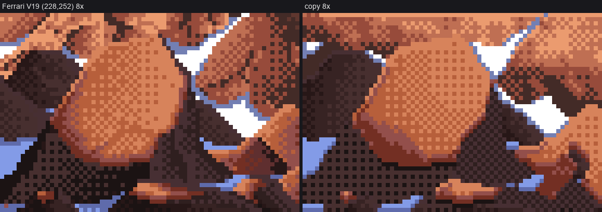
31. elements/cobbles/img/stage0_copy_v1.pngBash: cd ~/work/pixelart-studies/elements/cobbles; sed -i '' "s/P.get('cres', (-0.64, 0.77))/P.get('cres', (-0.8, 0.6))/; s/P.get('cres_cut', 0.68)/P.get('cres_cut', 0.7)/g" stage0_copy.
cd ~/work/pixelart-studies/elements/cobbles; sed -i '' "s/P.get('cres', (-0.64, 0.77))/P.get('cres', (-0.8, 0.6))/; s/P.get('cres_cut', 0.68)/P.get('cres_cut', 0.7)/g" stage0_copy.py; nice python3 stage0_copy.py 2>/dev/null; python3 scratch/cmpgrid.py 10 50 12 40 2>/dev/null
# output:
12 333355666JGGDDDDDGDDDGDGGGGGGGGG66JJJJFE 535555566FGGGDGDGDGDGGGGGGGGGGGGGFJJJJJA
13 1335355666GDGDDDGDGDGDGDGDGDGGGGG66JJJFA 353535555GBDDDDGDGDGDGDGDGDGDGDGGGFJJJFA
14 333333556GBDDDDDDDDGDGDGGGGGGGGGGB66JFEE 535555555GBDGDGDGDGDGGGGGGGGGGGGGGGFJFA4
15 533535353GBDDDGDGDGDGDGDGDGDGDGGGGB6FAEA 35353555GBDDDGDGDGDGDGDGDGDGDGDGDGGFF44A
16 55555355GBDDDDDDDGDDDGDGGGGGGGGGGGB6FEAE 53555555GBGDGDGDGDGDGGGGGGGGGGGGGGGBA4A4
17 1555555GBBDDGDGDGDGDGDGDGDGDGGGDGGB6FAEA 3535353GBDDDDGDGDGDGDGDGDGDGDGDGDGG8FA4A
18 5333553GBDDDDDDDDDDGDGDGGGGGGGGGGBB2FF4A 555555GBDDGDGDGDGDGDGGGGGGGGGGGGGGG2FJA4
19 335555G8BBGDGDGDGDGDGDGDGDGDGGGGGB822FF4 353535GBDDDDDDDGDGDGDGDGDGDGDGDGDGD62FJ4
20 33333D8BBDDDDDDDDGDGGGDGGGGGGGGGGB862JFF 55555G8DDDGDGDGDGDGDGDGGGGGGGGGGGGB26FJJ
21 13353D8BDDDDGDGDGDGDGDGDGDGDGGGGGB62256F 35353D8BDDDDDDDGDGDGDGDGDGDGDGDGDG8626FF
22 3333D8BDBDDDDDDGDGDGDGGGGGGGGGGGDB622656 5555D88BDDGDGDGDGDGDGDGDGGGGGGGGGD626266
23 6CHB88BBDDGDGDGDGDGDGDGDGDGGGGGGD8626235 353D888BBDDDDDDGDGDGDGDGDGDGDGDGDG262633
24 666B8BBDBDDDDGDDDGGGDGDGGGGGGGGDB6662255 53D888BBBBDDGDGDGDGDGDGDGDGDGDGDGB626233
25 66B888BBDDGDGDGDGDGDGGGDGGGDGGGD86626235 35D88B8BBBBDDDDDDGDGDGDGDGDGDGDGB8262613
26 60888BBDBDDGDGDGDGDDDGDGGDGGGGGD86662253 63B88888BBBBDDGDGDGDGDGDGDGDGDGB82626233
27 601888BBDDGDGDGDGDGDGDDDGGGGGGDB62626235 0588888B8BBBBDDDDDDGDGDGDGDGDGB826262613
28 00118B8BBDDDDGDGGGDDDDDDDDDGDDB266222253 5566B888B8BBDBGDGDGDGDGDGDGDGB8262626231
29 055588B8BBDDGDGDGDDDGDGDGDDD826266626235 051588888B8BBDDDDDDDDDDDDGDGB82626262611
30 0555588B8BBDDDDGDDDGDGDGDGDB6622662622H3 5555588888BBBBDDGDGDGDGDGDGD826262626261
31 15050588BBDDGDGBDDGDGDGGGDD862626262622H 050505B8888BBBBDDDDDDDDDDDDD26262626262H
32 155550588BBDDBBDDGDGDGDGDDB866226626222H 555555888888B8BDDDGDGDGDGDGB62626262626C
33 0505050888BB8BDDGDGDDDGDDBB2626226626222 0505050888888BBDDDDDDDDDDD88262626262626
34 555555558888BBBDDBDBDBBBBB86662222666622 55555555888888BBDDDDDBBBB8B2626262626262
35 05050505058888BBBBBBB8888866626222666262 0505050508888888BBBBB8888886262626262626
36 5555505050555588888885010066662222266626 5555555550000888888880000002626262626262
37 0505050505050550505050000062626262266262 0505050505050000000005050526262626262626
38 5555555050505000000000000066662622266666 5555555555555555555555555562626262626262
39 0505050505050505050000000066626262266262 0505050505050505050505050566262626262626Read: elements/cobbles/img/stage0_copy_v1.png 32. elements/cobbles/img/stage0_copy_v1.png
32. elements/cobbles/img/stage0_copy_v1.png
Bash: cd ~/work/pixelart-studies/elements/cobbles; ls -la img/; sed -i '' "s/save(hcat(\[a, b\]), 'stage0_copy_v1.png')/import sys as _s; save(hcat([a, b]), 'stage0_copy_%s.png' % (_s.ar
cd ~/work/pixelart-studies/elements/cobbles; ls -la img/; sed -i '' "s/save(hcat(\[a, b\]), 'stage0_copy_v1.png')/import sys as _s; save(hcat([a, b]), 'stage0_copy_%s.png' % (_s.argv[1] if len(_s.argv) > 1 else 'cur'))/" stage0_copy.py; nice python3 stage0_copy.py v2 2>/dev/null; ls img # output: total 1128 drwxr-xr-x 8 user staff 256 Sep 25 21:13 . drwxr-xr-x 9 user staff 288 Sep 25 21:18 .. -rw-r--r-- 1 user staff 4959 Sep 25 21:10 _f_big.png -rw-r--r-- 1 user staff 91147 Sep 25 21:11 _f_ranks.png -rw-r--r-- 1 user staff 5728 Sep 25 21:10 _f_small.png -rw-r--r-- 1 user staff 435910 Sep 25 21:10 _p1.png -rw-r--r-- 1 user staff 14766 Sep 25 21:10 _t1.png -rw-r--r-- 1 user staff 12277 Sep 25 21:18 stage0_copy_v1.png _f_big.png _f_ranks.png _f_small.png _p1.png _t1.png stage0_copy_v1.png stage0_copy_v2.png
Read: elements/cobbles/img/stage0_copy_v2.png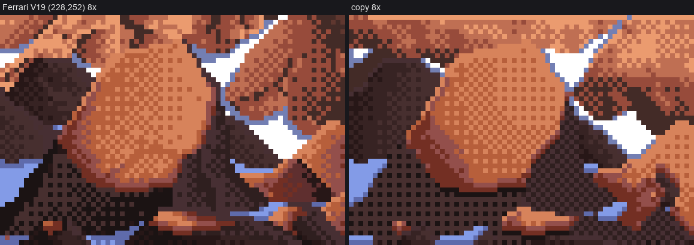
33. elements/cobbles/img/stage0_copy_v2.pngBash: cd ~/work/pixelart-studies/elements/cobbles; cat > scratch/hist.py <<'EOF' import sys; sys.path.insert(0,'.') import numpy as np import stage0_copy as s0 from scipy import ndimage
cd ~/work/pixelart-studies/elements/cobbles; cat > scratch/hist.py <<'EOF'
import sys; sys.path.insert(0,'.')
import numpy as np
import stage0_copy as s0
from scipy import ndimage as ndi
img, ref, R, out = s0.paint(0)
gs,names=s0.sketch(R)
lab,n=ndi.label(gs==names.index('lit'))
j=lab[20,30]; m=lab==j
for c in [0,8,11,13,16]:
print(c, (R[m]==c).sum(), (out[m]==c).sum())
# band widths along rows 20-35 : count of 8 per row
for y in range(18,37):
print(y, (R[y][m[y]]==8).sum(), (out[y][m[y]]==8).sum(), '| B', (R[y][m[y]]==11).sum(), (out[y][m[y]]==11).sum())
EOF
python3 scratch/hist.py 2>/dev/null
# output:
0 0 0
8 61 94
11 81 72
13 274 265
16 312 322
18 0 0 | B 3 1
19 2 0 | B 3 1
20 2 1 | B 3 1
21 1 2 | B 2 1
22 1 2 | B 3 1
23 3 3 | B 3 2
24 1 3 | B 5 5
25 4 4 | B 3 6
26 4 6 | B 3 6
27 3 7 | B 3 6
28 2 5 | B 4 6
29 4 7 | B 3 4
30 3 6 | B 4 4
31 3 4 | B 3 5
32 3 7 | B 5 3
33 4 8 | B 5 2
34 5 7 | B 10 7
35 9 13 | B 7 5
36 7 8 | B 0 0Bash: cd ~/work/pixelart-studies/elements/cobbles; sed -i '' "s/prof = np.select(\[u < 0.42, u < 0.58, u < 0.84, u < 1.0\]/prof = np.select([u < P.get('u8', 0.3), u < P.get('u8b', 0.5),
cd ~/work/pixelart-studies/elements/cobbles; sed -i '' "s/prof = np.select(\[u < 0.42, u < 0.58, u < 0.84, u < 1.0\]/prof = np.select([u < P.get('u8', 0.3), u < P.get('u8b', 0.5), u < 0.8, u < 1.0]/" stage0_copy.py; nice python3 stage0_copy.py v3 2>/dev/null; python3 scratch/hist.py 2>/dev/null | head -5; python3 scratch/cmpgrid.py 10 50 18 38 2>/dev/null
# output:
0 0 0
8 61 81
11 81 82
13 274 268
16 312 322
18 5333553GBDDDDDDDDDDGDGDGGGGGGGGGGBB2FF4A 555555GBDDGDGDGDGDGDGGGGGGGGGGGGGGG2FJA4
19 335555G8BBGDGDGDGDGDGDGDGDGDGGGGGB822FF4 353535GBDDDDDDDGDGDGDGDGDGDGDGDGDGD62FJ4
20 33333D8BBDDDDDDDDGDGGGDGGGGGGGGGGB862JFF 55555GBDDDGDGDGDGDGDGDGGGGGGGGGGGGB26FJJ
21 13353D8BDDDDGDGDGDGDGDGDGDGDGGGGGB62256F 35353D8BDDDDDDDGDGDGDGDGDGDGDGDGDG8626FF
22 3333D8BDBDDDDDDGDGDGDGGGGGGGGGGGDB622656 5555D8BBDDGDGDGDGDGDGDGDGGGGGGGGGD626266
23 6CHB88BBDDGDGDGDGDGDGDGDGDGGGGGGD8626235 353D888BBDDDDDDGDGDGDGDGDGDGDGDGDG262633
24 666B8BBDBDDDDGDDDGGGDGDGGGGGGGGDB6662255 53D888BBBBDDGDGDGDGDGDGDGDGDGDGDGB626233
25 66B888BBDDGDGDGDGDGDGGGDGGGDGGGD86626235 35D88BBBBDBDDDDDDGDGDGDGDGDGDGDGB8262613
26 60888BBDBDDGDGDGDGDDDGDGGDGGGGGD86662253 63B888BBBBDBDDGDGDGDGDGDGDGDGDGB82626233
27 601888BBDDGDGDGDGDGDGDDDGGGGGGDB62626235 0588888BBBBDBDDDDDDGDGDGDGDGDGB826262613
28 00118B8BBDDDDGDGGGDDDDDDDDDGDDB266222253 5566B888BBBBDBGDGDGDGDGDGDGDGB8262626231
29 055588B8BBDDGDGDGDDDGDGDGDDD826266626235 051588888BBBBDDDDDDDDDDDDGDGB82626262611
30 0555588B8BBDDDDGDDDGDGDGDGDB6622662622H3 5555588888BBBBDDGDGDGDGDGDGD826262626261
31 15050588BBDDGDGBDDGDGDGGGDD862626262622H 050505B88B8BBBBDDDDDDDDDDDDD26262626262H
32 155550588BBDDBBDDGDGDGDGDDB866226626222H 5555558888B8BBBDDDGDGDGDGDGB62626262626C
33 0505050888BB8BDDGDGDDDGDDBB2626226626222 05050508888B8BBDDDDDDDDDDD88262626262626
34 555555558888BBBDDBDBDBBBBB86662222666622 55555555888888BBDDDDDBBBB8B2626262626262
35 05050505058888BBBBBBB8888866626222666262 050505050888888BBBBBB8888886262626262626
36 5555505050555588888885010066662222266626 5555555550000888888880000002626262626262
37 0505050505050550505050000062626262266262 0505050505050000000005050526262626262626Bash: cd ~/work/pixelart-studies/elements/cobbles; python3 scratch/cmpgrid.py 0 20 8 32 2>/dev/null; python3 scratch/cmpgrid.py 40 72 16 48 2>/dev/null
cd ~/work/pixelart-studies/elements/cobbles; python3 scratch/cmpgrid.py 0 20 8 32 2>/dev/null; python3 scratch/cmpgrid.py 40 72 16 48 2>/dev/null # output: 8 JJJJIIIEAEEIEIEF4AAA FJJF444444A4AAA444A4 9 JJJII4A11566666FF4EA FFF444466666666FJ444 10 JEII4A1131535556FFFE F444446333335356FJJ4 11 EIA4E1131335353566JJ 44444613333335356FFJ 12 I4AE111133333355666J 4444613333535555566F 13 A4EA1313531335355666 4444131333353535555G 14 III1113135333333556G 4446333333535555555G 15 6I13131313533535353G 466313333335353555GB 16 611131313355555355GB 613133335353555555GB 17 56131313131555555GBB 11131333353535353GBD 18 55613133335333553GBD 3131333353555555GBDD 19 3556631313335555G8BB 1113133335353535GBDD 20 555556313333333D8BBD 313333335355555GBDDD 21 353555661313353D8BDD 131313333535353D8BDD 22 33555556633333D8BDBD 31333353535555D8BBDD 23 35353556566CHB88BBDD 1313333335353D888BBD 24 5353555566666B8BBDBD 313333535353D888BBBB 25 353535355666B888BBDD 131333333535D88BBBBD 26 535555555660888BBDBD 313333535363B888BBBB 27 3535355556601888BBDD 13133333350588888BBB 28 535355555600118B8BBD 31333353555566B888BB 29 3535353550055588B8BB 1313333305051588888B 30 C353CCCCC00555588B8B H133HHHH555555588888 31 CCCCCHHH0015050588BB HHHHHHHC05050505B88B 16 GGGGB6FEAEAEA44AAAE4AAAA4AAA4444 GGGGGBA4A4A4A4AAA44444AAEAAAAAAA 17 GDGGB6FAEA44A4AAEAEEA4A4A4A4A4A4 DGDGG8FA4A4A444AAA44444AAEAA4AAA 18 GGGBB2FF4AAAAAAEEEEEAAAA4A444444 GGGGG2FJA4A4A444AAA44444AAEAA4AA 19 GGGB822FF4AAEAEAEAEFA4A4A4A4A444 DGDGD62FJ44A444A4A4444444AAA4A4A 20 GGGB862JFFAAAAAEAFFFAAAA444A4444 GGGGB26FJJA4A444AFJJ444444A4A4AA 21 GGGB62256FFFAAAFFFJFA4A4E4A44444 DGDG8626FFJ4444FJJJJ444444444444 22 GGDB6226566FFFFFJJJFFAAAAE44GGG4 GGGD626266FJJJJJJJJJJ4444444GGG4 23 GGD862623566JJJJJJJJFFAAAAAGGGDD DGDG2626336FFJJJJJJJJJ44444GGGGG 24 GDB6662255566JJJJJJJJFFAAAGGDDDD GDGB626233566FJJJJJJJJJ444GGGGGG 25 GD866262353556JJJJJJJJFFFGGDDBDB DGB82626133536FJJJJJJJJJGGGGDGDG 26 GD8666225355556JJJJJJJJJGGDDDDBB GB826262335355FFJJJJJJJFGGGGGGGG 27 DB62626235353556JJJJJJJGGDGDDBB8 B826262613333566FJJJJJFGGGDGDGDG 28 B2662222535355566JJJJJGGGGDDBBBB 82626262313353556FJJJFGGGGGGGGGG 29 626662623535353556JJJGGDGDDBDBB8 262626261113333556FFFGGGDGDGDGDG 30 22662622H3535355556GBB1GDDDDBBBB 626262626131335555GGGGGDGGGGGGGG 31 626262622HH5353535GDB771GDDBDBB8 262626262HHH13353GBGGGDGBBDGDGDG 32 226626222HHHHHHHHGDB77771DDDBBBB 626262626CCCGGGGGBGDGDGD88BGGGGG 33 6226626222GGGGGDDDB7877171DBDBDB 26262626262B8BBBBDDDDGDG668BDGDG 34 22226666222DDDDBBB887777111DBBBB 62626262626888BBDBGDGB8B3368BGGG 35 622266626222DBB8B88787877171DBBB 262626262626888BBBBDBB88B3368GDG 36 22222666262222BB8888787777111BBB 6262626262626288B8BBBBBB8B556DGD 37 626226626262222BD8878777711117BG 2626262626262628888BBBBG88355GDG 38 26222666662622228888777777111GGD 62626262626262628888BBB8B633GDGD 39 6262266262626262HHHC66666CCCGDDB 262626262626262HHH888BBB8113GGDD 40 66662666666622CHHHGGDD86666GDDDD 6262626262626HHHHC88B8B862CB8DGD 41 86666666CCCCHHHHCGGDB8886266GBDB GGG626666CC6HHHHC88B88862628BDDD 42 B888866666666CCCGGGDB826
Bash: cd ~/work/pixelart-studies/pedagogy/analysis; grep -rn "c_stones" src/*.py | head; python3 -c " from PIL import Image; im=Image.open('img/c_stones.png'); print(im.size)"
cd ~/work/pixelart-studies/pedagogy/analysis; grep -rn "c_stones" src/*.py | head; python3 -c "
from PIL import Image; im=Image.open('img/c_stones.png'); print(im.size)"
# output:
(800, 280)Bash: cd ~/work/pixelart-studies/pedagogy/analysis; grep -rln "stones" . | head; grep -rn "stones" --include=*.py . | head
cd ~/work/pixelart-studies/pedagogy/analysis; grep -rln "stones" . | head; grep -rn "stones" --include=*.py . | head # output: LESSONS.md src/atlas.py src/paint/ferrari_method.py (eval):1: no matches found: --include=*.py
Bash: cd ~/work/pixelart-studies/pedagogy/analysis; grep -n "stones" src/atlas.py | head; grep -n "c_\|crop" src/atlas.py | head -20
cd ~/work/pixelart-studies/pedagogy/analysis; grep -n "stones" src/atlas.py | head; grep -n "c_\|crop" src/atlas.py | head -20
# output:
34: ('water: sky reflection',(300,370)),('water: tree reflection',(290,310)),('shore stones',(250,405))]Bash: cd ~/work/pixelart-studies/pedagogy/analysis; sed -n 1,60p src/atlas.py; ls; ls ref* 2>/dev/null | head
cd ~/work/pixelart-studies/pedagogy/analysis; sed -n 1,60p src/atlas.py; ls; ls ref* 2>/dev/null | head
# output:
import sys; sys.path.insert(0,'src'); from util import *
from collections import Counter
def atlas(a,wins,name,s=7,sz=32):
tiles=[]
for title,(x,y) in wins:
w=a[y:y+sz,x:x+sz]
cnt=Counter(map(tuple,w.reshape(-1,3))).most_common(3)
row=[up(w,s)]
for col,_ in cnt: # isolate each of the 3 dominant colours
m=np.all(w==col,axis=2); t=np.full_like(w,128); t[m]=col; t[~m]=(40,40,40) if np.mean(col)>90 else (200,200,200)
row.append(up(t,s//2+1)[:sz*s//2+sz//2*0+ sz*(s//2+1)][:,:])
# compose: big tile + 3 small isolation tiles stacked
big=row[0]; smalls=[r[:sz*(s//2+1),:sz*(s//2+1)] for r in row[1:]]
colh=big.shape[0]; sw=smalls[0].shape[1]
side=np.full((colh,sw,3),255,np.uint8); yy=0
for sm in smalls:
h=min(sm.shape[0],colh-yy); side[yy:yy+h]=sm[:h]; yy+=h+2
if yy>=colh: break
t=np.concatenate([big,np.full((colh,3,3),255,np.uint8),side],1)
t=np.concatenate([np.full((22,t.shape[1],3),255,np.uint8),t],0)
t=label(t,title,(2,3),fill=(0,0,0),bg=(255,255,255))
tiles.append(t)
W=max(t.shape[1] for t in tiles); rows=[]
for i in range(0,len(tiles),3):
r=tiles[i:i+3]; r=[np.pad(t,((0,0),(0,W-t.shape[1]+6),(0,0)),constant_values=255) for t in r]
while len(r)<3: r.append(np.full_like(r[0],255))
rows.append(np.concatenate(r,1))
Image.fromarray(np.concatenate(rows,0)).save(f'img/{name}')
if __name__=='__main__':
a=load_ref()
wins=[('fore grass, lit (left)',(40,400)),('fore grass, shade (right)',(560,400)),('mid meadow, lit',(60,262)),
('far bank / hummock',(520,228)),('island top (rim light)',(340,258)),('conifer, near',(40,120)),
('conifer edge vs sky',(95,60)),('mountain rock + light',(215,110)),('snow, shade/light',(318,120)),
('water: sky reflection',(300,370)),('water: tree reflection',(290,310)),('shore stones',(250,405))]
atlas(a,wins,'09_cluster_atlas.png')
LESSONS.md
img
out
sheets
src
(eval):1: no matches found: ref*Bash: cd ~/work/pixelart-studies/pedagogy/analysis; grep -n "def load_ref" -A5 src/util.py; grep -rn "c_stones\|'c_'" src/*.py src/*/*.py | head
cd ~/work/pixelart-studies/pedagogy/analysis; grep -n "def load_ref" -A5 src/util.py; grep -rn "c_stones\|'c_'" src/*.py src/*/*.py | head
# output:
6:def load_ref():
7- return np.array(Image.open(os.path.join(ROOT,'img','00_native.png')).convert('RGB'))
8-def up(a,s): return np.repeat(np.repeat(a,s,0),s,1)
9-def save(a,name,s=1):
10- if a.dtype!=np.uint8: a=np.clip(a,0,255).astype(np.uint8)
11- if a.ndim==2: a=np.stack([a]*3,-1)Bash: cd ~/work/pixelart-studies/pedagogy/analysis; python3 -c " from PIL import Image; import numpy as np a=np.array(Image.open('img/00_native.png').convert('RGB')); print(a.shape) c=np
cd ~/work/pixelart-studies/pedagogy/analysis; python3 -c "
from PIL import Image; import numpy as np
a=np.array(Image.open('img/00_native.png').convert('RGB')); print(a.shape)
c=np.array(Image.open('img/c_stones.png').convert('RGB'))
# c_stones likely 5x of 160x56
s=5; t=c[::s,::s]
H,W=t.shape[:2]
best=None
for y in range(0,a.shape[0]-H):
for x in range(0,a.shape[1]-W):
d=np.abs(a[y:y+H,x:x+W].astype(int)-t).sum()
if best is None or d<best[0]: best=(d,x,y)
print(best,H,W)
"
# output:
(469, 634, 3)
(855485, 213, 388) 56 160Bash: cd ~/work/pixelart-studies/pedagogy/analysis; python3 -c " from PIL import Image; import numpy as np a=np.array(Image.open('img/00_native.png').convert('RGB')).astype(int) c=np.arr
cd ~/work/pixelart-studies/pedagogy/analysis; python3 -c "
from PIL import Image; import numpy as np
a=np.array(Image.open('img/00_native.png').convert('RGB')).astype(int)
c=np.array(Image.open('img/c_stones.png').convert('RGB')).astype(int)
for s in [4,5,8,10]:
t=c[s//2::s,s//2::s]; H,W=t.shape[:2]
best=None
for y in range(0,a.shape[0]-H):
for x in range(0,a.shape[1]-W):
d=np.abs(a[y:y+H,x:x+W]-t).mean()
if best is None or d<best[0]: best=(d,x,y)
print(s,best,H,W)
"
# output:
4 (36.75264285714286, 171, 382) 70 200
5 (31.505431547619047, 214, 388) 56 160
8 (0.0, 245, 400) 35 100
10 (22.71309523809524, 253, 404) 28 80Bash: cd ~/work/pixelart-studies/elements/cobbles; python3 -c " import numpy as np; from PIL import Image a=np.array(Image.open('~/work/pixelart-studies/pedagogy/analysis/img/00_native.p
cd ~/work/pixelart-studies/elements/cobbles; python3 -c "
import numpy as np; from PIL import Image
a=np.array(Image.open('~/work/pixelart-studies/pedagogy/analysis/img/00_native.png').convert('RGB'))
im=a[400:435,245:345]
u,inv=np.unique(im.reshape(-1,3),axis=0,return_inverse=True)
L=0.2126*u[:,0]+0.7152*u[:,1]+0.0722*u[:,2]
o=np.argsort(L); rank=np.argsort(o); R=rank[inv.ravel()].reshape(im.shape[:2])
ch='0123456789ABCDEFGHIJKLMNOPQRSTUVWXYZabcdefghijklmnop'
for i,k in enumerate(o): print(ch[i],tuple(u[k]),round(L[k]))
for y in range(R.shape[0]): print('%2d '%y+''.join(ch[r] for r in R[y]))
"
# output:
0 (10, 34, 10) 27
1 (28, 31, 4) 28
2 (64, 48, 55) 52
3 (62, 59, 23) 57
4 (103, 80, 87) 85
5 (108, 82, 91) 88
6 (115, 92, 35) 93
7 (131, 101, 112) 108
8 (154, 119, 136) 128
9 (196, 131, 70) 140
A (177, 137, 160) 147
B (173, 141, 165) 150
C (180, 144, 167) 153
D (198, 152, 170) 163
E (201, 154, 174) 165
F (183, 164, 189) 170
G (217, 159, 169) 172
H (219, 160, 170) 173
I (198, 172, 201) 180
0 DDDDDCDCDCCCDCCCCCCCCCCBCBCBCBCBBBBBBBBBBBBBBBBBBBBBBBBBBBBBI5BBBBBBBBBBBBBBBBBBBBBBBBBBBBBBB3BBBBBB
1 IGIDIDIDIDIDIDIDIDICIDICICICICICICICICIBIBIBIBIBIBIBIBIBIBIBB7IBIBIBIBIBIBIBIBIBIBIBIBIBIBIB3BIBIBIB
2 GDGDDDDDDCDCDCDCDCDCCCCCCCCCCBCBCBCBCBCBBBBBBBBBBBBBBBBBBBBBB7BBBBBBBBBBBBBBBBBBBBBBBBBBBBBB3BBBBBBB
3 FGFGFGFGFDFDFDFDFDFDFDFDFDFDFCFCFCFCFCFCFCFCFCFCFCFCFCFCFCFCFBFBFBFBFBFCFBFCFBFCFBFBFBFBFBFB3BFCFCFC
4 GGGDGDGDGDDDDDDDDDDCDCDCDCDCDCCCCCCCCCCBCCCBCBCBCBCBCBCBCBCBCBBBCBBBCBCBCBCBCBCBBBBBCBBBCBB31BCBCBCB
5 GHFGFGFGGGFGFGFGDGDCDCDCDCFDFDFDCDFDFDFCCDFCFCFCCCFCFCFCCCFCFCFCCCFCFCFCCCFCFCFCCCFCFCFCCCF31CFCCCFC
6 HGGGGGGDGDGDCDCDCDC5555555DCDCDCDCDCDCDCCCCCCCCCCCCCCCCCCCCCCBCCCBCCCBCCCCCCCBCCCBCCCBCCCBC31BCCCCC3
7 FHFHFHFGFGFGFGFG5554444445555DFDFDFDFDFDFDFDFDFDFDFDFDFDFDFDFCFDFCFDFDFDFDFDFDFDFDFDFCFDFDF3133DFD33
8 HGHGHGHGGGGGGGGG5444444444445DDDDDDDDDDDDCDCDCDCDCDCDCDCDCDCDCCCDCCCDCDCDCDCDCDCDCDCDCDCDC331CDC313C
9 HHFHHHFHGHFHGHFH4444242424444GFGDGFGDGFGDDFDDDFDDDFDDDFDDDFDDDFDDDFDDDFDDDFDDDFDDDFDDDFDDD331DF331F3
10 H6955555HGHGHGHG5552424242555DGDGDGDGDGDDDDDDD5555DDDDDDDDDDDCDDDCDDDDDDDDDDDDDDDDDDDDDD31D31DD31DG3
11 F6944444F5F5F555555555555GFHFGGGFGFGFGGGFGFGFG5555FGFGDGFGFGFDDGFDFGFGDGFGFGFGDGFGFGFGDG31F31GD31GF3
12 E694444444444444555GHGHGHGHGHG5555GGGGGGGGGDGD44445DGDGDGDGDGDGDGDGDGDGDGDGDGDGDGDGDGDGD31G31D31GG31
13 694444444444444445555HFHHHF55544444555FHGHFGGG44444GGGFGGGFGGGFGGGFGGGFGGGFGGGFGGGFGGGF31GF31G331H31
14 6944444444444444444777HHH7744444444447777GGGGGG777GGGGGGGGGGGDGGGGGGGGGGGGGGGGGGGGGGGGG3177317331731
15 69469444444444444444477E77444444444444777HGHFHGHGHGHFHGHGHGHFGGHGHGHFHGHGHGHFHG77777F773177317331731
16 69869242424444444444447H74444422222224444GHGHHHGHGHGHGHGHGHGHGHGHGHGHGH77777777777777773144314331431
17 98862424242424242424244E44422227777777777HFHHEFHHHFHHHFHHHFHHHFHHHF777F77777777444444443144314314314
18 9E698888888842424242888EE7777777EHEHEHE7777777777777777HHHHHHHH7777777744444444444444443144314314314
19 9E69EEE8888888888888EEEEEEEEEEEEEEE77777777777777777777777777777777444444444444444444443143143313314
20 7769777EEEEEEEEEEE7777777EEEEEE777777774444444444444444777777774444444444444444444431443113143313314
21 4869888888EEEEFEE88888888E88E8F888844444444444444444444444444444444444444444444444314431313143313314
22 4469444888888EEE884444444E88888444444444444444444444444444444444444444444444444444314314331443313313
23 46944444448888EE844444444444844444444444444444444444444444444444444444444444444444314313331313313313
24 46944444444448E8444242424244444444444444244424424444444444444444444444444444444444314313331313313313
25 269424Read: pedagogy/analysis/img/c_stones.png 34. pedagogy/analysis/img/c_stones.png
34. pedagogy/analysis/img/c_stones.png
Bash: cd ~/work/pixelart-studies/elements/cobbles; python3 - <<'EOF' s=open('stage0_copy.py').read() a=s.index('def paint_bg_rock'); b=s.index('def paint_snow') new='''def paint_bg_rock(
cd ~/work/pixelart-studies/elements/cobbles; python3 - <<'EOF'
s=open('stage0_copy.py').read()
a=s.index('def paint_bg_rock'); b=s.index('def paint_snow')
new='''def paint_bg_rock(out, m, rng, L, cell=7):
"""farther lit crag: faceted planes (Voronoi cells, one tilt each) in the E/A/I/4 sub-ramp.
Each plane is a flat class mix (E, or E/A checker when turned away); the lit upper edge of a
plane catches I, the crease under a plane is a 4 line (the crevice between facets)."""
H, W = m.shape
ys, xs = np.nonzero(m)
n = max(3, int(m.sum() / cell ** 2))
pts = np.stack([rng.uniform(xs.min(), xs.max() + 1, n), rng.uniform(ys.min(), ys.max() + 1, n)], 1)
yy, xx = np.mgrid[0:H, 0:W]
d = (xx[..., None] - pts[:, 0]) ** 2 + ((yy[..., None] - pts[:, 1]) * 1.6) ** 2
cid = d.argmin(-1)
tilt = rng.normal(size=(n, 3)) * [0.7, 0.5, 0.0] + [0, -0.3, 1.0]
tilt /= np.linalg.norm(tilt, axis=1, keepdims=True)
s = tilt[cid] @ L
x = np.clip(1.2 + 2.2 * (s - 0.55), 0.6, 2.6)
v = ordered(x, (4, 10, 14, 18))
# creases: the lower edge of each facet (cell id changes going down) is a 4 line
below = np.zeros_like(m); below[:-1] = cid[:-1] != cid[1:]
right = np.zeros_like(m); right[:, :-1] = cid[:, :-1] != cid[:, 1:]
v = np.where(below & m, 4, v)
# lit upper edge of a facet: I where the facet faces the light
above = np.zeros_like(m); above[1:] = cid[1:] != cid[:-1]
v = np.where(above & (s > 0.6) & m & ~below, 18, v)
e_up = edge_dist(m, (0, -1))
v = np.where((e_up == 0) & (s > 0.5), 18, v)
out[m] = v[m]
'''
s=s[:a]+new+s[b:]
s=s.replace("def paint_dark_boulder(out, m, bounce_dir, classes=(1, 3, 5, 6), face=(0.3, 1.9)):","def paint_dark_boulder(out, m, bounce_dir, classes=(1, 3, 5, 6), face=(0.5, 2.1)):")
open('stage0_copy.py','w').write(s)
EOF
nice python3 stage0_copy.py v4 2>/dev/null
# output:
(Bash completed with no output)Read: elements/cobbles/img/stage0_copy_v4.png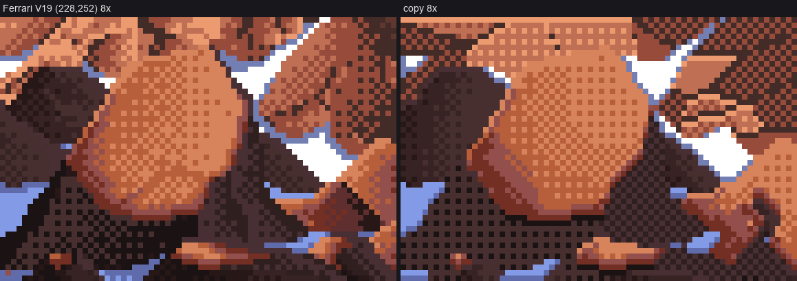
35. elements/cobbles/img/stage0_copy_v4.pngBash: cd ~/work/pixelart-studies/elements/cobbles; cat > scratch/zoom.py <<'EOF' import sys; sys.path.insert(0,'.') import numpy as np import stage0_copy as s0 from util import * x0,y0,x
cd ~/work/pixelart-studies/elements/cobbles; cat > scratch/zoom.py <<'EOF' import sys; sys.path.insert(0,'.') import numpy as np import stage0_copy as s0 from util import * x0,y0,x1,y1,sc=[int(a) for a in sys.argv[1:6]] img, ref, R, out = s0.paint(0) save(hcat([label(up(ref[y0:y1,x0:x1],sc),'Ferrari'),label(up(img[y0:y1,x0:x1],sc),'copy')]),'_zoom.png') EOF python3 scratch/zoom.py 8 2 50 40 10 2>/dev/null # output: (Bash completed with no output)
Read: elements/cobbles/img/_zoom.png 36. elements/cobbles/img/_zoom.png
36. elements/cobbles/img/_zoom.png
Bash: cd ~/work/pixelart-studies/elements/cobbles; sed -i '' "s/prof = np.select(\[u < P.get('u8', 0.3), u < P.get('u8b', 0.5), u < 0.8, u < 1.0\]/prof = np.select([u < P.get('u8', 0.45)
cd ~/work/pixelart-studies/elements/cobbles; sed -i '' "s/prof = np.select(\[u < P.get('u8', 0.3), u < P.get('u8b', 0.5), u < 0.8, u < 1.0\]/prof = np.select([u < P.get('u8', 0.45), u < P.get('u8b', 0.56), u < 0.75, u < 0.9]/; s/wmax = P.get('wmax', 0.24) \* size/wmax = P.get('wmax', 0.2) * size/" stage0_copy.py; python3 scratch/zoom.py 8 2 50 40 10 2>/dev/null; python3 scratch/hist.py 2>/dev/null | head -5
# output:
0 0 0
8 61 85
11 81 61
13 274 281
16 312 326Read: elements/cobbles/img/_zoom.png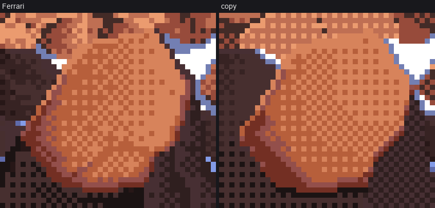
37. elements/cobbles/img/_zoom.pngBash: cd ~/work/pixelart-studies/elements/cobbles; python3 - <<'EOF' s=open('stage0_copy.py').read() s=s.replace(" u = d / np.maximum(w, 1e-6)\n"," u = d / np.maximum(w, 1e-6)\n
cd ~/work/pixelart-studies/elements/cobbles; python3 - <<'EOF'
s=open('stage0_copy.py').read()
s=s.replace(" u = d / np.maximum(w, 1e-6)\n"," u = d / np.maximum(w, 1e-6)\n jit = P.get('jitter', 0.12) * ndi.gaussian_filter(np.random.default_rng(P.get('seed', 3)).normal(size=m.shape), 0.7) * 2.2\n u = u + jit\n")
# bg darkening behind lit tops
s=s.replace(" # contact: black on the row under a lit mass's flat bottom",""" # value separation: rock seen just above a lit boulder's crown sits a step darker
lit = gs == names.index('lit')
bgm = gs == names.index('bg')
near = np.zeros_like(lit)
for k in (1, 2):
sh = np.zeros_like(lit); sh[:-k] = lit[k:]
near |= sh
dk = near & bgm
out[dk] = np.where(out[dk] == 18, 14, np.where(out[dk] == 14, 10, 4))
# contact: black on the row under a lit mass's flat bottom""")
open('stage0_copy.py','w').write(s)
EOF
python3 scratch/zoom.py 8 2 50 40 10 2>/dev/null; nice python3 stage0_copy.py v5 2>/dev/null
# output:
[This command modified 1 file you've previously read: ../elements/cobbles/stage0_copy.py. Call Read before editing.]Read: elements/cobbles/img/_zoom.png38. elements/cobbles/img/_zoom.png
Bash: cd ~/work/pixelart-studies/elements/cobbles; sed -i '' "s/face=(2.1, 2.85), P=None/face=(2.0, 2.9), P=None/" stage0_copy.py; python3 scratch/zoom.py 8 2 50 40 10 2>/dev/null; pytho
cd ~/work/pixelart-studies/elements/cobbles; sed -i '' "s/face=(2.1, 2.85), P=None/face=(2.0, 2.9), P=None/" stage0_copy.py; python3 scratch/zoom.py 8 2 50 40 10 2>/dev/null; python3 scratch/hist.py 2>/dev/null | head -5 # output: 0 0 0 8 61 85 11 81 61 13 274 289 16 312 318
Read: elements/cobbles/img/_zoom.png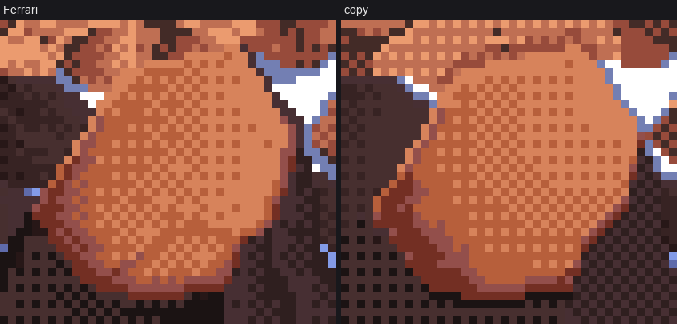
39. elements/cobbles/img/_zoom.pngBash: cd ~/work/pixelart-studies/elements/cobbles; python3 - <<'EOF' s=open('stage0_copy.py').read() s=s.replace(" x = face[0] + (face[1] - face[0]) * t\n t1 = lo\n",""" x = fac
cd ~/work/pixelart-studies/elements/cobbles; python3 - <<'EOF'
s=open('stage0_copy.py').read()
s=s.replace(" x = face[0] + (face[1] - face[0]) * t\n t1 = lo\n",""" x = face[0] + (face[1] - face[0]) * t
# lumps: a water-worn surface is not a perfect dome; broad low bumps mottle the face
lump = ndi.gaussian_filter(np.random.default_rng(P.get('seed', 3) + 1).normal(size=m.shape), P.get('lump_px', 2.5))
lump /= lump[m].std() + 1e-9
x = x + P.get('lump', 0.22) * lump
t1 = lo
""")
open('stage0_copy.py','w').write(s)
EOF
python3 scratch/zoom.py 8 2 50 40 10 2>/dev/null
# output:
(Bash completed with no output)Read: elements/cobbles/img/_zoom.png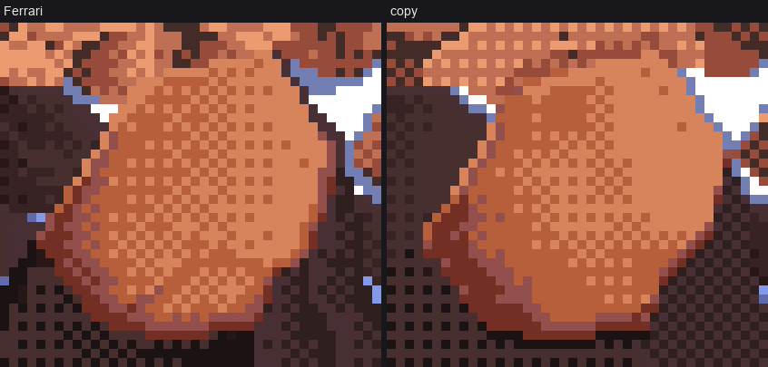
40. elements/cobbles/img/_zoom.pngBash: cd ~/work/pixelart-studies/elements/cobbles; python3 - <<'EOF' s=open('stage0_copy.py').read() s=s.replace(" x = x + P.get('lump', 0.22) * lump\n"," x = np.clip(x + P.get('lu
cd ~/work/pixelart-studies/elements/cobbles; python3 - <<'EOF'
s=open('stage0_copy.py').read()
s=s.replace(" x = x + P.get('lump', 0.22) * lump\n"," x = np.clip(x + P.get('lump', 0.15) * lump, P.get('face_clip', (2.15, 2.88))[0], P.get('face_clip', (2.15, 2.88))[1])\n")
open('stage0_copy.py','w').write(s)
EOF
python3 scratch/zoom.py 8 2 50 40 10 2>/dev/null
# output:
(Bash completed with no output)Read: elements/cobbles/img/_zoom.png41. elements/cobbles/img/_zoom.png
Bash: cd ~/work/pixelart-studies/elements/cobbles; python3 scratch/zoom.py 0 0 36 48 9 2>/dev/null; cp img/_zoom.png img/_zoomL.png; python3 scratch/zoom.py 36 0 72 48 9 2>/dev/null
cd ~/work/pixelart-studies/elements/cobbles; python3 scratch/zoom.py 0 0 36 48 9 2>/dev/null; cp img/_zoom.png img/_zoomL.png; python3 scratch/zoom.py 36 0 72 48 9 2>/dev/null # output: (Bash completed with no output)
Read: elements/cobbles/img/_zoomL.pngRead: elements/cobbles/img/_zoom.png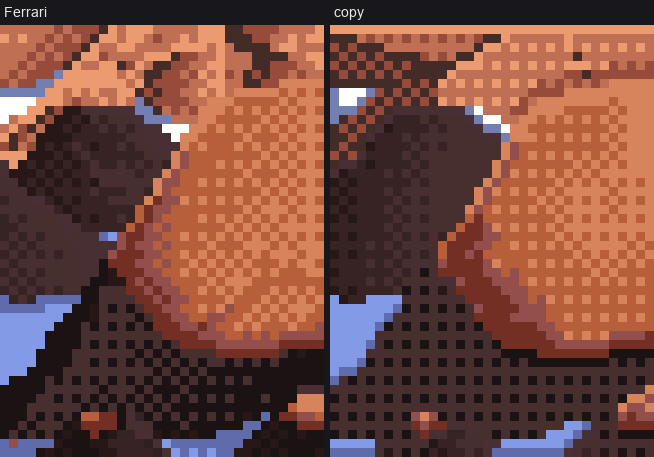
42. elements/cobbles/img/_zoomL.png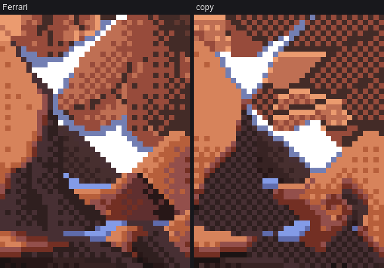
43. elements/cobbles/img/_zoom.pngBash: cd ~/work/pixelart-studies/elements/cobbles; python3 scratch/cmpgrid.py 0 18 8 48 2>/dev/null | cut -c1-40
cd ~/work/pixelart-studies/elements/cobbles; python3 scratch/cmpgrid.py 0 18 8 48 2>/dev/null | cut -c1-40 # output: 8 JJJJIIIEAEEIEIEF4A FJJFA4A4A4A4IEIE 9 JJJII4A11566666FF4 FFFA4A466666666F 10 JEII4A1131535556FF F4A4A46333535556 11 EIA4E1131335353566 4A4A461333353555 12 I4AE11113333335566 44A4633353555555 13 A4EA13135313353556 4A44133335353555 14 III111313533333355 A4A6333353555555 15 6I1313131353353535 4663133335355555 16 611131313355555355 6133335353555555 17 56131313131555555G 1313333335355555 18 55613133335333553G 3133335355555555 19 3556631313335555G8 1313333535355555 20 555556313333333D8B 313333535555555G 21 353555661313353D8B 131333353535555D 22 33555556633333D8BD 33333353555555D8 23 35353556566CHB88BB 1313333535353D88 24 5353555566666B8BBD 333353535555D888 25 353535355666B888BB 131333353535D88B 26 535555555660888BBD 333353535565B888 27 3535355556601888BB 1333333535058888 28 535355555600118B8B 33335353555566B8 29 3535353550055588B8 1313333505051588 30 C353CCCCC00555588B H133HHHH55555558 31 CCCCCHHH0015050588 HHHHHHHC05050505 32 HHHHHHH00015555058 HHHHHHC555555555 33 HHHHHH000505050508 HHHHHC0505050505 34 HHHHH0000555555555 HHHHH55555555555 35 HHHHH0000505050505 HHHHC50505050505 36 HHHH00005555555050 HHHH555555555555 37 HHHH00005505050505 HHHC050505050505 38 HHH000055555555550 HCC5555555555555 39 H00005050505050505 C505050505050505 40 000005555550555050 5555555555555555 41 000055050505050505 0505050505050505 42 000555555050505050 5555555555555555 43 000505050DD8806305 050505050BGB0506 44 005055501888805650 5555555558B88665 45 050505010080133661 0505050505866335 46 CBCCCC100011333326 HHHHH56555513355 47 CCCC01010001133332 CCCCC51505031335
Bash: cd ~/work/pixelart-studies/elements/cobbles; python3 - <<'EOF' s=open('stage0_copy.py').read() old=s[s.index('def paint_dark_boulder'):s.index('def paint_ground_shadow')] new='''de
cd ~/work/pixelart-studies/elements/cobbles; python3 - <<'EOF'
s=open('stage0_copy.py').read()
old=s[s.index('def paint_dark_boulder'):s.index('def paint_ground_shadow')]
new='''def paint_dark_boulder(out, m, bounce_dir, lit_nb=None, classes=(1, 3, 5, 6), face=(0.5, 2.1)):
"""a boulder in shadow: its own four classes, lit only by bounce from the lit mass beside it.
Face 1/3 -> 3/5 toward the bounce; a 6 rim along the top (sky) and along the edge that faces
the lit neighbour (reflected light), then 0 where it sits."""
N = sphere_normals(m)
B = np.array([bounce_dir[0], bounce_dir[1], 0.5]); B /= np.linalg.norm(B)
s = N @ B
sm = s[m]
t = (s - np.percentile(sm, 5)) / max(np.percentile(sm, 95) - np.percentile(sm, 5), 1e-6)
x = face[0] + (face[1] - face[0]) * np.clip(t, 0, 1)
e_up = edge_dist(m, (0, -1))
x = np.where(e_up == 0, 3.0, x) # top rim: 6
if lit_nb is not None:
cross = np.array([[0, 1, 0], [1, 1, 1], [0, 1, 0]], bool)
facing = m & ndi.binary_dilation(lit_nb & ~m, cross)
x = np.where(facing, 3.0, x)
v = ordered(x, classes)
out[m] = v[m]
'''
s=s.replace(old,new)
s=s.replace(" paint_dark_boulder(out, m, (1.0, -0.2))"," paint_dark_boulder(out, m, (1.0, -0.2), lit_nb=(gs == names.index('lit')))")
s=s.replace(" # contact: black on the row under a lit mass's flat bottom",""" # the gap under a snow ledge in shadow: a 0 band in the ground beside it
ssh = gs == names.index('snowsh')
gnd = gs == names.index('ground')
gap = ndi.binary_dilation(ssh, np.ones((3, 5), bool), iterations=1) & gnd
out[gap] = 0
# contact: black on the row under a lit mass's flat bottom""")
open('stage0_copy.py','w').write(s)
EOF
nice python3 stage0_copy.py v6 2>/dev/null
# output:
[This command modified 1 file you've previously read: ../elements/cobbles/stage0_copy.py. Call Read before editing.]Read: elements/cobbles/img/stage0_copy_v6.png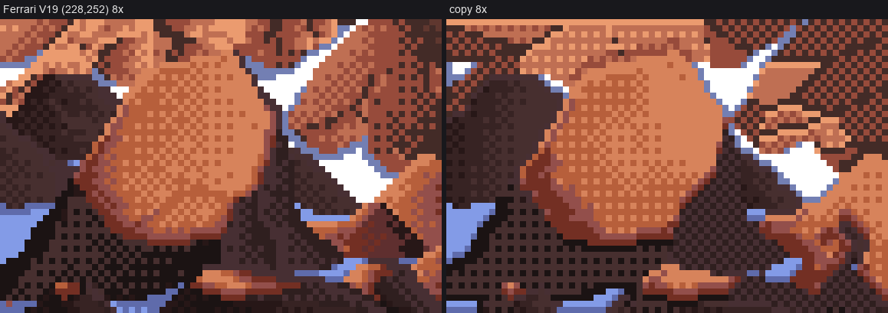
44. elements/cobbles/img/stage0_copy_v6.pngBash: cd ~/work/pixelart-studies/elements/cobbles; python3 -c " import sys; sys.path.insert(0,'.'); sys.path.insert(0,'~/work/pixelart-studies/pedagogy/master-copy/src') import compare,
cd ~/work/pixelart-studies/elements/cobbles; python3 -c "
import sys; sys.path.insert(0,'.'); sys.path.insert(0,'~/work/pixelart-studies/pedagogy/master-copy/src')
import compare, stage0_copy as s0, numpy as np
img,ref,R,out=s0.paint(0)
print('whole',compare.metrics(img,ref))
print('boulder',compare.metrics(img[4:38,10:48],ref[4:38,10:48]))
" 2>/dev/null
# output:
whole {'blurLab': 5.07, 'hist': 0.253, 'runs_copy': (1.55, 1.75), 'runs_ref': (1.72, 1.82), 'ncol_copy': 18, 'ncol_ref': 20}
boulder {'blurLab': 3.41, 'hist': 0.19, 'runs_copy': (1.8, 1.88), 'runs_ref': (1.75, 1.74), 'ncol_copy': 16, 'ncol_ref': 18}Bash: cd ~/work/pixelart-studies/elements/cobbles; python3 -c " import sys; sys.path.insert(0,'.') from util import * import numpy as np; from PIL import Image a=Image.open('~/work/pixel
cd ~/work/pixelart-studies/elements/cobbles; python3 -c "
import sys; sys.path.insert(0,'.')
from util import *
import numpy as np; from PIL import Image
a=Image.open('~/work/pixelart-studies/pedagogy/analysis/img/00_native.png').convert('RGB')
save(up(a.crop((245,404,305,432)),12),'_cst.png')
"
# output:
(Bash completed with no output)Read: elements/cobbles/img/_cst.png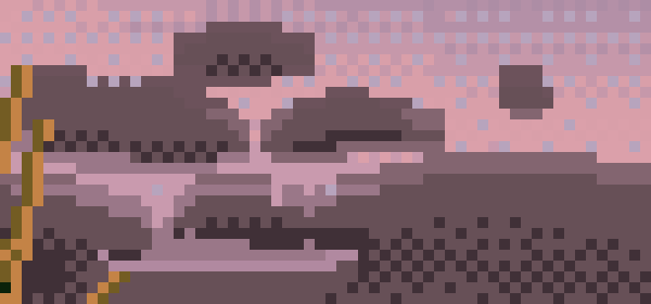
45. elements/cobbles/img/_cst.pngBash: cd ~/work/pixelart-studies/elements/cobbles; python3 -c " import numpy as np; from PIL import Image a=np.array(Image.open('~/work/pixelart-studies/pedagogy/analysis/img/00_native.p
cd ~/work/pixelart-studies/elements/cobbles; python3 -c "
import numpy as np; from PIL import Image
a=np.array(Image.open('~/work/pixelart-studies/pedagogy/analysis/img/00_native.png').convert('RGB'))
im=a[400:435,245:345]
u,inv=np.unique(im.reshape(-1,3),axis=0,return_inverse=True)
L=0.2126*u[:,0]+0.7152*u[:,1]+0.0722*u[:,2]
o=np.argsort(L); rank=np.argsort(o); R=rank[inv.ravel()].reshape(im.shape[:2])
ch='0123456789ABCDEFGHIJ'
for y in range(4,33): print('%2d '%y+''.join(ch[r] for r in R[y,:62]))
"
# output:
4 GGGDGDGDGDDDDDDDDDDCDCDCDCDCDCCCCCCCCCCBCCCBCBCBCBCBCBCBCBCBCB
5 GHFGFGFGGGFGFGFGDGDCDCDCDCFDFDFDCDFDFDFCCDFCFCFCCCFCFCFCCCFCFC
6 HGGGGGGDGDGDCDCDCDC5555555DCDCDCDCDCDCDCCCCCCCCCCCCCCCCCCCCCCB
7 FHFHFHFGFGFGFGFG5554444445555DFDFDFDFDFDFDFDFDFDFDFDFDFDFDFDFC
8 HGHGHGHGGGGGGGGG5444444444445DDDDDDDDDDDDCDCDCDCDCDCDCDCDCDCDC
9 HHFHHHFHGHFHGHFH4444242424444GFGDGFGDGFGDDFDDDFDDDFDDDFDDDFDDD
10 H6955555HGHGHGHG5552424242555DGDGDGDGDGDDDDDDD5555DDDDDDDDDDDC
11 F6944444F5F5F555555555555GFHFGGGFGFGFGGGFGFGFG5555FGFGDGFGFGFD
12 E694444444444444555GHGHGHGHGHG5555GGGGGGGGGDGD44445DGDGDGDGDGD
13 694444444444444445555HFHHHF55544444555FHGHFGGG44444GGGFGGGFGGG
14 6944444444444444444777HHH7744444444447777GGGGGG777GGGGGGGGGGGD
15 69469444444444444444477E77444444444444777HGHFHGHGHGHFHGHGHGHFG
16 69869242424444444444447H74444422222224444GHGHHHGHGHGHGHGHGHGHG
17 98862424242424242424244E44422227777777777HFHHEFHHHFHHHFHHHFHHH
18 9E698888888842424242888EE7777777EHEHEHE7777777777777777HHHHHHH
19 9E69EEE8888888888888EEEEEEEEEEEEEEE777777777777777777777777777
20 7769777EEEEEEEEEEE7777777EEEEEE7777777744444444444444447777777
21 4869888888EEEEFEE88888888E88E8F8888444444444444444444444444444
22 4469444888888EEE884444444E888884444444444444444444444444444444
23 46944444448888EE8444444444448444444444444444444444444444444444
24 46944444444448E84442424242444444444444442444244244444444444444
25 26942444444444882822222222222222224442444424444442424444444444
26 69924242444444888888888222228222222424242444242424444424244424
27 969222242A22288888888888888888AAA24242424242444442424242442444
28 6922224244AAAAAAAAAAAAAAAAAAAAA4422424242424242424242444244424
29 69222224449644444444444444444444424242424442424242424242424242
30 09222242496444444444444444444444242444244244442424242424242424
31 99242424964444444444444444444424444424444444244244424442444242
32 69469249644444444444444444444444444444444444444442444244424443Bash: cd ~/work/pixelart-studies/elements/cobbles; python3 - <<'EOF' 2>/dev/null import sys; sys.path.insert(0,'.') from util import * import stage0_copy as s0 img,ref,R,out=s0.paint(0)
cd ~/work/pixelart-studies/elements/cobbles; python3 - <<'EOF' 2>/dev/null import sys; sys.path.insert(0,'.') from util import * import stage0_copy as s0 img,ref,R,out=s0.paint(0) a=label(up(ref,8),'Ferrari, Mountain Stream V19 (228,252) 72x48, 8x') b=label(up(img,8),'my copy (layout sketched from his; interior by procedure), 8x') save(hcat([a,b]),'stage0_copy.png') z=hcat([label(up(ref[2:40,8:50],10),'Ferrari 10x: the lit rounded boulder'),label(up(img[2:40,8:50],10),'copy 10x')]) save(z,'stage0_boulder_zoom.png') EOF rm -f img/stage0_copy_v*.png; ls img # output: _cst.png _f_big.png _f_ranks.png _f_small.png _p1.png _t1.png _zoom.png _zoomL.png stage0_boulder_zoom.png stage0_copy.png
Bash: ls ~/work/pixelart-studies/elements/cobbles/; cat ~/work/pixelart-studies/elements/cobbles/CRITIQUE.md 2>/dev/null
ls ~/work/pixelart-studies/elements/cobbles/; cat ~/work/pixelart-studies/elements/cobbles/CRITIQUE.md 2>/dev/null # output: CRITIQUE.md __pycache__ cobble.py img refs scratch stage0_copy.py util.py # Critique (newest first) ## Round 1 — 2026-09-25 21:22 — stage 0 master copy, `img/stage0_copy_v3.png` (V19 lit boulder) **Verdict: REVISE** — close in drawing, not yet indistinguishable at 8×. (My read; you own the call. The bar I'm judging against is "a skilled pixel artist can't tell your crop from his at 8× except by subject".) What's working: - The main boulder's silhouette, its size, and the lit/shadow split are right. The dark lower rim sitting under the lit dome reads as a rounded stone at a glance. - The snow wedges (white with a 1 px blue rim on stepped diagonals) are nearly his. What gives it away, in order of how fast the eye catches it: 1. **The dither on the boulder is one uniform checker over the whole dome.** In his crop the checker is *patchy*: the upper-left crown is mostly flat mid-orange with only scattered checker, the checker thickens into the core toward the lower right, and there are 2–3 px flat islands inside it. Yours has the same 50% density edge to edge, which is exactly the "mechanical checker" the master-copy student hit in C1. Let density carry the turn (sparse on the crown, dense toward the terminator), and break it with small flat islands. 2. **The rim is a clean continuous ring.** His dark lower rim is chunky and uneven: 2–3 px thick at lower left, thinning to 1 px up the right side, with notches where the next stone overlaps. Yours runs at an even width, like an outline, and a mid-brown band sits inside it all the way round. That band is the most "drawn by a program" part of the copy. 3. **The shadow field (lower left) is one uniform dark checker.** His is solid near-black pockets, checker zones, and diagonal clusters of the lighter dark, all in patches. Pockets of solid dark where stones touch are what make the pile read as a pile; yours reads as one flat dark material. 4. **Top-left and top-right stones.** His top-left is a jumble of small lit and dark faceted chips; your top band is a blank mid strip. His top-right stone carries short dark crack ticks (2–4 px diagonal marks) in its lit face; yours is smooth. Next, the single most useful thing: fix (1) and (3) together. Both are "one dither density everywhere", and both are what separates a copy from a fit.
Bash: cd ~/work/pixelart-studies/elements/cobbles; python3 - <<'EOF' s=open('stage0_copy.py').read() old=s[s.index(" # the gap under a snow ledge in shadow"):s.index(" # contact: b
cd ~/work/pixelart-studies/elements/cobbles; python3 - <<'EOF'
s=open('stage0_copy.py').read()
old=s[s.index(" # the gap under a snow ledge in shadow"):s.index(" # contact: black on the row under a lit mass's flat bottom")]
new=''' # occlusion pockets in the shadowed ground: solid 0 right under / beside the masses that
# crowd it (the lit boulder above, the snow ledge), opening into 0/5 checker, then 75% 5
ssh = gs == names.index('snowsh')
gnd = gs == names.index('ground')
crowd = np.zeros_like(gnd)
litm = gs == names.index('lit')
for k in range(1, 4): # masses ABOVE a ground pixel crowd it most
sh = np.zeros_like(gnd); sh[k:] = litm[:-k]
crowd |= sh
dist = ndi.distance_transform_edt(~(crowd | ssh | litm))
xg = np.clip((dist - P.get('pocket', 1.6)) / 3.0, 0, 1) * 0.78
vg = ordered(xg, (0, 5))
out[gnd] = vg[gnd]
'''
s=s.replace(old,new)
open('stage0_copy.py','w').write(s)
EOF
python3 scratch/zoom.py 0 20 48 48 10 2>/dev/null
# output:
[This command modified 1 file you've previously read: ../elements/cobbles/stage0_copy.py. Call Read before editing.]Read: elements/cobbles/img/_zoom.png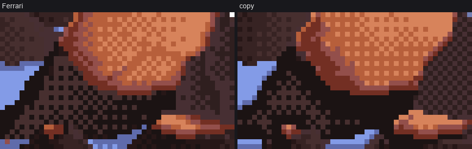
46. elements/cobbles/img/_zoom.pngBash: cd ~/work/pixelart-studies/elements/cobbles; sed -i '' "s/ for k in range(1, 4): # masses ABOVE/ for k in range(1, 3): # masses AB
cd ~/work/pixelart-studies/elements/cobbles; sed -i '' "s/ for k in range(1, 4): # masses ABOVE/ for k in range(1, 3): # masses ABOVE/; s/P.get('pocket', 1.6)) \/ 3.0/P.get('pocket', 0.8)) \/ 2.5/" stage0_copy.py; python3 scratch/zoom.py 0 20 48 48 10 2>/dev/null
# output:
(Bash completed with no output)Read: elements/cobbles/img/_zoom.png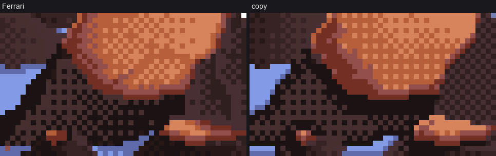
47. elements/cobbles/img/_zoom.pngBash: cd ~/work/pixelart-studies/elements/cobbles; python3 - <<'EOF' s=open('stage0_copy.py').read() s=s.replace("def paint_bg_rock(out, m, rng, L, cell=7):","def paint_bg_rock(out, m, r
cd ~/work/pixelart-studies/elements/cobbles; python3 - <<'EOF'
s=open('stage0_copy.py').read()
s=s.replace("def paint_bg_rock(out, m, rng, L, cell=7):","def paint_bg_rock(out, m, rng, L, cell=5):")
s=s.replace(" d = (xx[..., None] - pts[:, 0]) ** 2 + ((yy[..., None] - pts[:, 1]) * 1.6) ** 2"," d = (xx[..., None] - pts[:, 0]) ** 2 + ((yy[..., None] - pts[:, 1]) * 1.15) ** 2")
s=s.replace(" tilt = rng.normal(size=(n, 3)) * [0.7, 0.5, 0.0] + [0, -0.3, 1.0]"," tilt = rng.normal(size=(n, 3)) * [1.0, 0.8, 0.0] + [0, -0.3, 1.0]")
s=s.replace(""" e_up = edge_dist(m, (0, -1))
v = np.where((e_up == 0) & (s > 0.5), 18, v)
out[m] = v[m]""",""" e_up = edge_dist(m, (0, -1))
v = np.where((e_up == 0) & (s > 0.5), 18, v)
# crack ticks: short 2-4 px diagonal dark marks along the fall line in lit facets
for _ in range(int(m.sum() / 40)):
y0, x0 = ys[rng.integers(len(ys))], xs[rng.integers(len(xs))]
if not m[y0, x0] or s[y0, x0] < 0.5:
continue
ln = rng.integers(2, 5)
dx = 1 if rng.random() < 0.5 else -1
for k in range(ln):
yk, xk = y0 + k, x0 + dx * (k // 2 if rng.random() < 0.5 else k)
if 0 <= yk < H and 0 <= xk < W and m[yk, xk]:
v[yk, xk] = 4
out[m] = v[m]""")
open('stage0_copy.py','w').write(s)
EOF
python3 scratch/zoom.py 0 0 72 20 9 2>/dev/null
# output:
(Bash completed with no output)Read: elements/cobbles/img/_zoom.png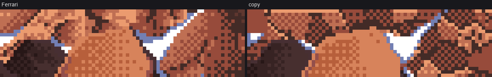
48. elements/cobbles/img/_zoom.pngBash: cd ~/work/pixelart-studies/elements/cobbles; sed -i '' "s/ x = np.clip(1.2 + 2.2 \* (s - 0.55), 0.6, 2.6)/ x = np.clip(1.7 + 2.2 * (s - 0.55), 0.6, 2.7)/" stage0_copy.py; pyt
cd ~/work/pixelart-studies/elements/cobbles; sed -i '' "s/ x = np.clip(1.2 + 2.2 \* (s - 0.55), 0.6, 2.6)/ x = np.clip(1.7 + 2.2 * (s - 0.55), 0.6, 2.7)/" stage0_copy.py; python3 - <<'EOF' 2>/dev/null import sys; sys.path.insert(0,'.') from util import * import stage0_copy as s0 img,ref,R,out=s0.paint(0) a=label(up(ref,8),'Ferrari, Mountain Stream V19 (228,252) 72x48, 8x') b=label(up(img,8),'my copy (layout sketched from his; interior by procedure), 8x') save(hcat([a,b]),'stage0_copy.png') z=hcat([label(up(ref[2:40,8:50],10),'Ferrari 10x: the lit rounded boulder'),label(up(img[2:40,8:50],10),'copy 10x')]) save(z,'stage0_boulder_zoom.png') EOF # output: (Bash completed with no output)
Read: elements/cobbles/img/stage0_copy.png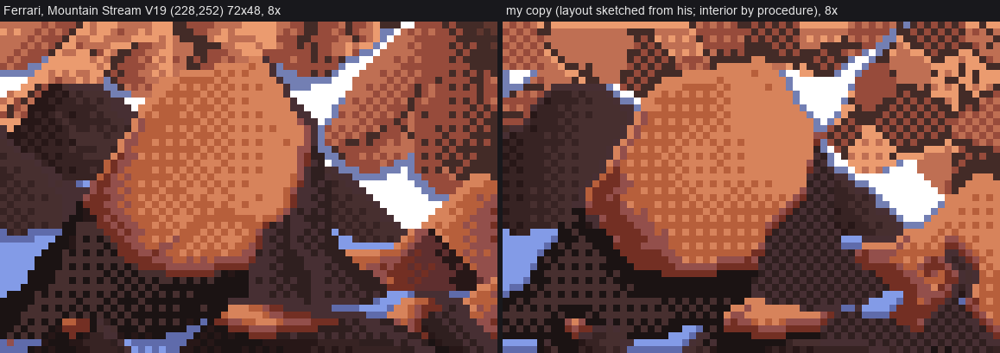
49. elements/cobbles/img/stage0_copy.pngWrite: elements/cobbles/stone.py
"""stone.py -- the rounded-stone technique, generalised from the stage-0 master copy of Ferrari's
lit boulder (Mountain Stream, V19). Works in STEP space on an index canvas; the palette is the
light and is applied at the end.
A stone is painted in four passes, each a rule read off Ferrari's pixels:
1. FACE the lit face lives inside ONE dither transition between two adjacent light steps
(FD <-> FL), Bayer 2x2, density following the light (25% FL away .. 75% FL toward)
plus broad lumps (a worn stone is not a perfect dome) -- 'sandpaper', no pure zones.
2. CROWN the top rows (and the silhouette against a lighter background) are solid FL.
3. CRESCENT opposite the light, measured in pixels from the silhouette: EDGE (core) -> EDGE/TURN
seam -> TURN -> TURN/FD seam -> face. Thickest at the rim point opposite the light
(about 20% of the stone's minor size), dying out within ~45 degrees; jittered +-1 px.
4. RIM against a darker neighbour on the away side: 1 px reflected light on the silhouette
(FL high up, FD mid, TURN low), and the core pixel just inside it (TURN high, EDGE low).
The bottom row is EDGE; the ground under a flat bottom run is CONTACT.
Steps (indices into a 9-step ramp, dark to light):
0 CONTACT 1 SH_DARK 2 SH 3 SH_LIGHT | 4 EDGE 5 TURN 6 FD 7 FL 8 TOP
The shadow family (0-3) is used for stones in shadow, the lit family (4-8) for lit stones.
"""
import numpy as np
from scipy import ndimage as ndi
BAYER2 = np.array([[0, 2], [3, 1]]) / 4.0 + 1 / 8.0
CROSS = np.array([[0, 1, 0], [1, 1, 1], [0, 1, 0]], bool)
CONTACT, SH_DARK, SH, SH_LIGHT, EDGE, TURN, FD, FL, TOP = range(9)
# ------------------------------------------------------------------------------ helpers
def ordered(v, classes, ox=0, oy=0):
"""v in class-index units -> class values; ordered 2x2 dither between neighbours only."""
H, W = v.shape
v = np.clip(v, 0, len(classes) - 1)
lo = np.floor(v).astype(int)
f = v - lo
t = BAYER2[(np.arange(H)[:, None] + oy) % 2, (np.arange(W)[None, :] + ox) % 2]
i = np.where(f > t, np.minimum(lo + 1, len(classes) - 1), lo)
return np.asarray(classes)[i]
def shift(a, dx, dy, fill=False):
H, W = a.shape
o = np.full_like(a, fill)
ys = slice(max(0, dy), H + min(0, dy)); yd = slice(max(0, -dy), H + min(0, -dy))
xs = slice(max(0, dx), W + min(0, dx)); xd = slice(max(0, -dx), W + min(0, -dx))
o[ys, xs] = a[yd, xd]
return o
def edge_dist_down(m):
"""rows to the lower edge (0 = bottom-most pixel of its column run)."""
H, W = m.shape
d = np.full((H, W), 99)
run = np.zeros(W, int)
for y in range(H - 1, -1, -1):
run = np.where(m[y], run + 1, 0)
d[y] = np.where(m[y], run - 1, 99)
return d
def edge_dist_up(m):
return edge_dist_down(m[::-1])[::-1]
def ellipse_frame(m):
ys, xs = np.nonzero(m)
cx, cy = xs.mean() + 0.5, ys.mean() + 0.5
if len(xs) < 3:
return cx, cy, np.eye(2), np.array([1.0, 1.0])
C = np.cov(np.stack([xs + 0.5 - cx, ys + 0.5 - cy])) + np.eye(2) * 1e-3
w, V = np.linalg.eigh(C)
radii = 2.0 * np.sqrt(np.maximum(w, 1e-6)) * 1.08
return cx, cy, V, radii
def dome_normals(m, squash=1.0):
"""normals of the ellipsoid dome fitted to the silhouette (image moments)."""
cx, cy, V, radii = ellipse_frame(m)
H, W = m.shape
yy, xx = np.mgrid[0:H, 0:W]
P = np.stack([xx + 0.5 - cx, yy + 0.5 - cy], -1) @ V
u = P / radii
r2 = np.clip((u ** 2).sum(-1), 0, 0.985)
nz = np.sqrt(1 - r2) * squash
n2 = (u / radii) @ V.T * radii.mean()
N = np.stack([n2[..., 0], n2[..., 1], nz], -1)
return N / np.linalg.norm(N, axis=-1, keepdims=True)
def outward(m):
cx, cy, _, _ = ellipse_frame(m)
H, W = m.shape
yy, xx = np.mgrid[0:H, 0:W]
v = np.stack([xx + 0.5 - cx, yy + 0.5 - cy], -1)
return v / np.maximum(np.linalg.norm(v, axis=-1, keepdims=True), 1e-6)
def smooth_noise(shape, rng, sigma):
n = ndi.gaussian_filter(rng.normal(size=shape), sigma)
return n / (n.std() + 1e-9)
# ------------------------------------------------------------------------------ silhouettes
def cobble_mask(w, h, n=2.3, flat=0.18, lump=0.05, tilt=0.0, seed=0, pad=2):
"""a cobble silhouette as a pixel artist would draw it: a superellipse w x h px with a
flattened resting bottom and broad lumps, digitised by coverage, then made digitally convex
(monotone runs per octant = clean curves). Returns (mask, offset) on a padded canvas."""
rng = np.random.default_rng(seed)
W, H = w + 2 * pad, h + 2 * pad
ss = 6
yy, xx = np.mgrid[0:H * ss, 0:W * ss]
x = (xx + 0.5) / ss - W / 2.0
y = (yy + 0.5) / ss - H / 2.0
a, b = w / 2.0, h / 2.0
ang = np.arctan2(y / b, x / a)
k = 1.0
for j in (2, 3):
k = k + lump * rng.normal() * np.cos(j * ang + rng.uniform(0, 2 * np.pi))
x2 = x + tilt * y
r = (np.abs(x2 / (a * k)) ** n + np.abs(y / (b * k)) ** n)
inside = r <= 1.0
inside &= y <= b * (1.0 - flat) + 0.0 if flat > 0 else inside
cov = inside.reshape(H, ss, W, ss).mean((1, 3))
m = cov >= 0.5
m = convex_clean(m)
return m
def convex_clean(mask, slack=0.35):
from scipy.spatial import ConvexHull
ys, xs = np.nonzero(mask)
if len(xs) < 3:
return mask
pts = np.concatenate([np.stack([xs + dx, ys + dy], 1) for dx in (0.0, 1.0) for dy in (0.0, 1.0)])
try:
hull = ConvexHull(pts)
except Exception:
return mask
H, W = mask.shape
yy, xx = np.mgrid[0:H, 0:W]
cxy = np.stack([xx + 0.5, yy + 0.5], -1).reshape(-1, 2)
eq = hull.equations
inside = np.all(cxy @ eq[:, :2].T + eq[:, 2] <= slack - 0.5 + 0.35, axis=1).reshape(H, W)
return inside & ndi.binary_dilation(mask, np.ones((3, 3), bool))
# ------------------------------------------------------------------------------ the painter
DEFAULT = dict(face=(2.0, 2.9), face_clip=(2.15, 2.88), lump=0.15, lump_px=2.5,
wmax=0.2, cres_cut=0.7, u8=0.45, u8b=0.56, uB=0.75, uBD=0.9, jitter=0.12,
crown_rows=2, top_step=False, seed=0)
def paint_stone(out, m, L, dark_nb=None, classes=(EDGE, TURN, FD, FL), P=None, zbuf=None):
"""paint one stone mask `m` into the step canvas `out`.
L: light direction in screen space (x right, y DOWN, z toward viewer).
dark_nb: bool map of darker things around (for the reflected rim); default: all non-stone.
classes: the four steps [edge/core, turn, face-dark, face-light] of the stone's family."""
P = {**DEFAULT, **(P or {})}
rng = np.random.default_rng(P['seed'])
L = np.asarray(L, float); L = L / np.linalg.norm(L)
ys, xs = np.nonzero(m)
size = min(np.ptp(xs), np.ptp(ys)) + 1
N = dome_normals(m, P.get('squash', 1.0))
s = N @ L
sm = s[m]
hi, lo = np.percentile(sm, 97), np.percentile(sm, 20)
t = np.clip((s - lo) / max(hi - lo, 1e-6), 0, 1)
f0, f1 = P['face']
x = f0 + (f1 - f0) * t
if size >= 8:
lump = smooth_noise(m.shape, rng, P['lump_px'])
x = x + P['lump'] * lump
x = np.clip(x, *P['face_clip'])
# ---- crescent (pixels from the silhouette)
d = ndi.distance_transform_edt(m) - 1.0
o = outward(m)
L2 = L[:2] / max(np.linalg.norm(L[:2]), 1e-6)
cres = P.get('cres_dir')
c2 = -L2 if cres is None else np.asarray(cres, float)
# thickest slightly below the anti-light point: stones sit, the underside is always turned away
c2 = c2 + np.array([0.0, P.get('cres_down', 0.35)])
c2 = c2 / np.linalg.norm(c2)
cc = o @ c2
wmax = P['wmax'] * size
w = wmax * np.clip((cc - P['cres_cut']) / (1 - P['cres_cut']), 0, 1)
u = d / np.maximum(w, 1e-6) + P['jitter'] * smooth_noise(m.shape, rng, 0.7) * 2.2
prof = np.select([u < P['u8'], u < P['u8b'], u < P['uB'], u < P['uBD']], [0.0, 0.5, 1.0, 1.5], default=9.0)
x = np.minimum(x, np.where(w > 0.9, prof, 9.0))
e_dn = edge_dist_down(m)
e_up = edge_dist_up(m)
# ---- crown
x = np.where((e_up < P['crown_rows']) & (x >= 2), 3.0, x)
# ---- rim
ring = m & ~ndi.binary_erosion(m, CROSS)
ring2 = m & ~ndi.binary_erosion(m, CROSS, iterations=2) & ~ring
if dark_nb is None:
dark_nb = ~m
ca = o @ L2
down = o[..., 1]
nb_dark = ndi.binary_dilation(dark_nb & ~m, CROSS) & m
nb_light = ndi.binary_dilation(~dark_nb & ~m, CROSS) & m
upper = (down < 0.35) & (x >= 2)
x = np.where((ring | ring2) & ndi.binary_dilation(ring & nb_light & upper, CROSS, iterations=1) & upper, 3.0, x)
if size >= 10:
away_rim = ring & nb_dark & (ca < -0.1) & (e_dn > 0)
rv = np.clip(3.0 - 2.2 * np.clip(down + 0.3, 0, 1.3), 1.0, 3.0)
x = np.where(away_rim, np.round(rv), x)
inner = ring2 & ndi.binary_dilation(away_rim, CROSS)
x = np.where(inner, np.minimum(x, np.where(down < 0.0, 1.0, 0.0)), x)
# ---- bottom
x = np.where(e_dn == 0, 0.0, x)
x = np.where(e_dn == 1, np.minimum(x, 1.0 if size >= 6 else 0.0), x)
v = ordered(x, classes)
if P['top_step']:
# the single brightest step, only where the dome faces the light most squarely
v = np.where((s > np.percentile(sm, 96)) & (e_up > 0) & (v == classes[3]), TOP, v)
out[m] = v[m]
return v
def contact_under(out, m, ground_mask=None, step=CONTACT):
"""CONTACT on the row under the stone's flat bottom runs (>= 2 px), not along diagonals."""
e_dn = edge_dist_down(m)
bot = m & (e_dn == 0)
below = shift(bot, 0, 1) & ~m
if ground_mask is not None:
below &= ground_mask
# a bottom pixel counts as flat if a horizontal neighbour is also a bottom pixel
flat = below & (shift(below, 1, 0) | shift(below, -1, 0))
out[flat] = step
return flat
def pocket_ground(out, ground, crowders, classes=(CONTACT, SH_DARK), rows=2, pocket=0.8, fall=2.5,
far=0.78):
"""occlusion pockets: ground right under stones is solid CONTACT, opening into a checker."""
crowd = np.zeros_like(ground)
for k in range(1, rows + 1):
crowd |= shift(crowders, 0, k)
dist = ndi.distance_transform_edt(~(crowd | crowders))
xg = np.clip((dist - pocket) / fall, 0, 1) * far
vg = ordered(xg, classes)
out[ground] = vg[ground]
def to_rgb(steps, pal):
pal = np.asarray(pal, np.uint8)
return pal[np.clip(steps, 0, len(pal) - 1)]
# a grey ramp spaced like Ferrari's V19 rock ramp (L* of his steps), shadow family | lit family
GREY9 = [(20, 20, 22), (34, 34, 37), (46, 46, 50), (60, 60, 64), # contact, sh dark, sh, sh light
(74, 74, 78), (104, 104, 106), (132, 132, 132), (166, 166, 164), (196, 196, 192)]
Bash: cd ~/work/pixelart-studies/elements/cobbles; cat > scratch/tA.py <<'EOF' import sys; sys.path.insert(0,'.') import numpy as np from stone import * from util import * V19 = [(27,19,
cd ~/work/pixelart-studies/elements/cobbles; cat > scratch/tA.py <<'EOF'
import sys; sys.path.insert(0,'.')
import numpy as np
from stone import *
from util import *
V19 = [(27,19,19),(39,23,23),(55,35,35),(71,47,51),(115,47,35),(151,75,59),(183,95,59),(215,131,91),(235,155,111)]
L=[0.6,-0.5,0.62]
ims=[]
for (w,h) in [(40,28),(28,20),(20,14),(14,10),(10,7),(7,5),(5,4),(4,3)]:
m=cobble_mask(w,h,seed=2,pad=3)
out=np.full(m.shape, SH_DARK)
ground=~m
pocket_ground(out, ground, m)
paint_stone(out, m, L)
ims.append(label(fit(to_rgb(out,V19), max(60,(w+6)*8), 280, s=8 if w>=14 else 12),f'{w}x{h}'))
save(hcat(ims),'_tA.png')
EOF
nice python3 scratch/tA.py 2>&1 | grep -v Warn | tail -3
# output:
(Bash completed with no output)Read: elements/cobbles/img/_tA.png 50. elements/cobbles/img/_tA.png
50. elements/cobbles/img/_tA.png
Bash: cd ~/work/pixelart-studies/elements/cobbles; python3 - <<'EOF' s=open('stone.py').read() a=s.index('def convex_clean'); b=s.index('# -----------------------------------------------
cd ~/work/pixelart-studies/elements/cobbles; python3 - <<'EOF'
s=open('stone.py').read()
a=s.index('def convex_clean'); b=s.index('# ------------------------------------------------------------------------------ the painter')
new='''def convex_clean(mask, eps=1e-6):
"""digital convex hull: every pixel whose centre lies inside the hull of the mask's pixel
centres. A digitally convex outline has monotone run lengths per octant (clean curves)."""
from scipy.spatial import ConvexHull
ys, xs = np.nonzero(mask)
if len(xs) < 3 or np.ptp(xs) == 0 or np.ptp(ys) == 0:
return mask
pts = np.stack([xs, ys], 1).astype(float)
try:
hull = ConvexHull(pts)
except Exception:
return mask
H, W = mask.shape
yy, xx = np.mgrid[0:H, 0:W]
cxy = np.stack([xx, yy], -1).reshape(-1, 2).astype(float)
eq = hull.equations
inside = np.all(cxy @ eq[:, :2].T + eq[:, 2] <= eps, axis=1).reshape(H, W)
return inside
'''
s=s[:a]+new+s[b:]
open('stone.py','w').write(s)
EOF
nice python3 scratch/tA.py 2>&1 | grep -v Warn | tail -3
# output:
(Bash completed with no output)Read: elements/cobbles/img/_tA.png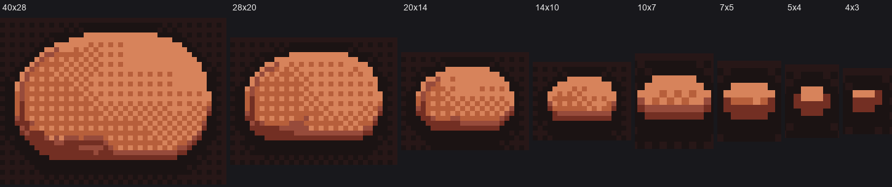
51. elements/cobbles/img/_tA.pngBash: cd ~/work/pixelart-studies/elements/cobbles; python3 -c " import sys; sys.path.insert(0,'.') import numpy as np from stone import * m=cobble_mask(40,28,seed=2,pad=3) out=np.full(m.
cd ~/work/pixelart-studies/elements/cobbles; python3 -c "
import sys; sys.path.insert(0,'.')
import numpy as np
from stone import *
m=cobble_mask(40,28,seed=2,pad=3)
out=np.full(m.shape, SH_DARK)
paint_stone(out,m,[0.6,-0.5,0.62])
for r in out: print(''.join('.12345678'[v] if v>0 else '0' for v in r))
" 2>/dev/null
# output:
1111111111111111111111111111111111111111111111
1111111111111111111111111111111111111111111111
1111111111111111111111111111111111111111111111
1111111111111111177777777777777711111111111111
1111111111111177777777777777777777711111111111
1111111111177777776767676777777777777111111111
1111111117757776767677777777777777777711111111
1111111175566666676767676777777777777771111111
1111111756767676767677777777777777777777111111
1111117566666767676767676777777777777777711111
1111175676767676767677777777777777777777711111
1111756666676767676767676767676767677777771111
1111757676767676767777777777777777777777771111
1117566666666667676767676767676767677777771111
1117567676767676767777777777777777777777771111
1116566666666666676767676767676767676767677111
1116567676767676767677777777777777777777777111
1116466666666666666767676767676767676767676111
1116467676767676767676767676767676777776765111
1116466666666666666667676767676767676767674111
1115467676767676767676767676767676767676761111
1114445666666666666666666666676767676767651111
1111546676767676767676767676767676767676741111
1111454446666666666666666666666767676767511111
1111144445757555655556767676767676767675411111
1111114444455444444445666666666667676654111111
1111111444444444555554567676767676765541111111
1111111144444444444544455555555555554411111111
1111111111444444444444444444444444441111111111
1111111111111111111111111111111111111111111111
1111111111111111111111111111111111111111111111
1111111111111111111111111111111111111111111111
1111111111111111111111111111111111111111111111
1111111111111111111111111111111111111111111111Bash: cd ~/work/pixelart-studies/elements/cobbles; sed -n 180,260p stone.py
cd ~/work/pixelart-studies/elements/cobbles; sed -n 180,260p stone.py
# output:
L2 = L[:2] / max(np.linalg.norm(L[:2]), 1e-6)
cres = P.get('cres_dir')
c2 = -L2 if cres is None else np.asarray(cres, float)
# thickest slightly below the anti-light point: stones sit, the underside is always turned away
c2 = c2 + np.array([0.0, P.get('cres_down', 0.35)])
c2 = c2 / np.linalg.norm(c2)
cc = o @ c2
wmax = P['wmax'] * size
w = wmax * np.clip((cc - P['cres_cut']) / (1 - P['cres_cut']), 0, 1)
u = d / np.maximum(w, 1e-6) + P['jitter'] * smooth_noise(m.shape, rng, 0.7) * 2.2
prof = np.select([u < P['u8'], u < P['u8b'], u < P['uB'], u < P['uBD']], [0.0, 0.5, 1.0, 1.5], default=9.0)
x = np.minimum(x, np.where(w > 0.9, prof, 9.0))
e_dn = edge_dist_down(m)
e_up = edge_dist_up(m)
# ---- crown
x = np.where((e_up < P['crown_rows']) & (x >= 2), 3.0, x)
# ---- rim
ring = m & ~ndi.binary_erosion(m, CROSS)
ring2 = m & ~ndi.binary_erosion(m, CROSS, iterations=2) & ~ring
if dark_nb is None:
dark_nb = ~m
ca = o @ L2
down = o[..., 1]
nb_dark = ndi.binary_dilation(dark_nb & ~m, CROSS) & m
nb_light = ndi.binary_dilation(~dark_nb & ~m, CROSS) & m
upper = (down < 0.35) & (x >= 2)
x = np.where((ring | ring2) & ndi.binary_dilation(ring & nb_light & upper, CROSS, iterations=1) & upper, 3.0, x)
if size >= 10:
away_rim = ring & nb_dark & (ca < -0.1) & (e_dn > 0)
rv = np.clip(3.0 - 2.2 * np.clip(down + 0.3, 0, 1.3), 1.0, 3.0)
x = np.where(away_rim, np.round(rv), x)
inner = ring2 & ndi.binary_dilation(away_rim, CROSS)
x = np.where(inner, np.minimum(x, np.where(down < 0.0, 1.0, 0.0)), x)
# ---- bottom
x = np.where(e_dn == 0, 0.0, x)
x = np.where(e_dn == 1, np.minimum(x, 1.0 if size >= 6 else 0.0), x)
v = ordered(x, classes)
if P['top_step']:
# the single brightest step, only where the dome faces the light most squarely
v = np.where((s > np.percentile(sm, 96)) & (e_up > 0) & (v == classes[3]), TOP, v)
out[m] = v[m]
return v
def contact_under(out, m, ground_mask=None, step=CONTACT):
"""CONTACT on the row under the stone's flat bottom runs (>= 2 px), not along diagonals."""
e_dn = edge_dist_down(m)
bot = m & (e_dn == 0)
below = shift(bot, 0, 1) & ~m
if ground_mask is not None:
below &= ground_mask
# a bottom pixel counts as flat if a horizontal neighbour is also a bottom pixel
flat = below & (shift(below, 1, 0) | shift(below, -1, 0))
out[flat] = step
return flat
def pocket_ground(out, ground, crowders, classes=(CONTACT, SH_DARK), rows=2, pocket=0.8, fall=2.5,
far=0.78):
"""occlusion pockets: ground right under stones is solid CONTACT, opening into a checker."""
crowd = np.zeros_like(ground)
for k in range(1, rows + 1):
crowd |= shift(crowders, 0, k)
dist = ndi.distance_transform_edt(~(crowd | crowders))
xg = np.clip((dist - pocket) / fall, 0, 1) * far
vg = ordered(xg, classes)
Bash: cd ~/work/pixelart-studies/elements/cobbles; cat >> stone.py <<'EOF' # ------------------------------------------------------------------------------ ground & cast shadow def cas
cd ~/work/pixelart-studies/elements/cobbles; cat >> stone.py <<'EOF'
# ------------------------------------------------------------------------------ ground & cast shadow
def cast_shadow(m, L, length=0.45, flat=0.5):
"""the stone's shadow on the ground: its silhouette swept away from the light. On the ground
plane the sweep is foreshortened vertically (flat). Returns the swept mask (incl. the stone)."""
L = np.asarray(L, float)
ys, xs = np.nonzero(m)
h = np.ptp(ys) + 1
d = np.array([-L[0], -L[1] * flat + 0.25 * (1 - abs(L[2]))])
if np.linalg.norm(d) < 1e-6:
return m.copy()
d = d / np.linalg.norm(d)
n = max(1, int(round(length * h / max(L[2], 0.25))))
sw = m.copy()
for k in range(1, n + 1):
sw |= shift(m, int(round(d[0] * k)), int(round(d[1] * k)))
return convex_clean(sw)
def paint_ground(out, ground, lit_x=1.3, classes=(EDGE, TURN, FD)):
x = np.full(out.shape, lit_x)
v = ordered(x, classes)
out[ground] = v[ground]
def paint_shadow_on_ground(out, sh, m, near_px=2.0, classes=(CONTACT, SH, SH_LIGHT)):
"""cast shadow: darkest (SH) near the stone, SH_LIGHT farther; CONTACT right at the base."""
d = ndi.distance_transform_edt(~m)
x = np.clip(1.0 + (d - 1.0) / max(near_px, 1e-6) * 0.9, 1.0, 1.9)
v = ordered(x, classes)
sel = sh & ~m
out[sel] = v[sel]
EOF
cat > stage1.py <<'EOF'
"""stage1.py -- one cobble in greyscale: planes, two light families, core, reflected light,
contact and cast shadow, from 40 px down to 4 px, under several lights."""
import sys
sys.path.insert(0, __file__.rsplit('/', 1)[0])
import numpy as np
from stone import *
from util import *
LIGHTS = {'upper-left': [-0.6, -0.55, 0.58], 'upper-right': [0.6, -0.5, 0.62],
'high front': [-0.2, -0.3, 0.93], 'low left': [-0.9, -0.15, 0.4]}
SIZES = [(40, 26), (24, 16), (16, 11), (10, 7), (6, 4), (4, 3)]
def one(w, h, L, seed=2, P=None, pad=None):
pad = pad if pad is not None else max(3, w // 3)
m = cobble_mask(w, h, seed=seed, pad=pad)
out = np.zeros(m.shape, int)
ground = ~m
paint_ground(out, ground)
sh = cast_shadow(m, L)
paint_shadow_on_ground(out, sh, m)
dark = sh & ~m
paint_stone(out, m, L, dark_nb=dark, P=P)
contact_under(out, m)
return out, m
if __name__ == '__main__':
rows = []
for name, L in LIGHTS.items():
cells = []
for w, h in SIZES:
out, m = one(w, h, L)
s = 8 if w >= 16 else 12
cells.append(label(fit(to_rgb(out, GREY9), max(96, out.shape[1] * s), 330, s=s), f'{w}px'))
rows.append(label(hcat(cells), name, sz=16))
save(vcat(rows, gap=10), 'stage1_lights_sizes.png')
EOF
nice python3 stage1.py 2>&1 | grep -v Warn | tail -3
# output:
(Bash completed with no output)Read: elements/cobbles/img/stage1_lights_sizes.png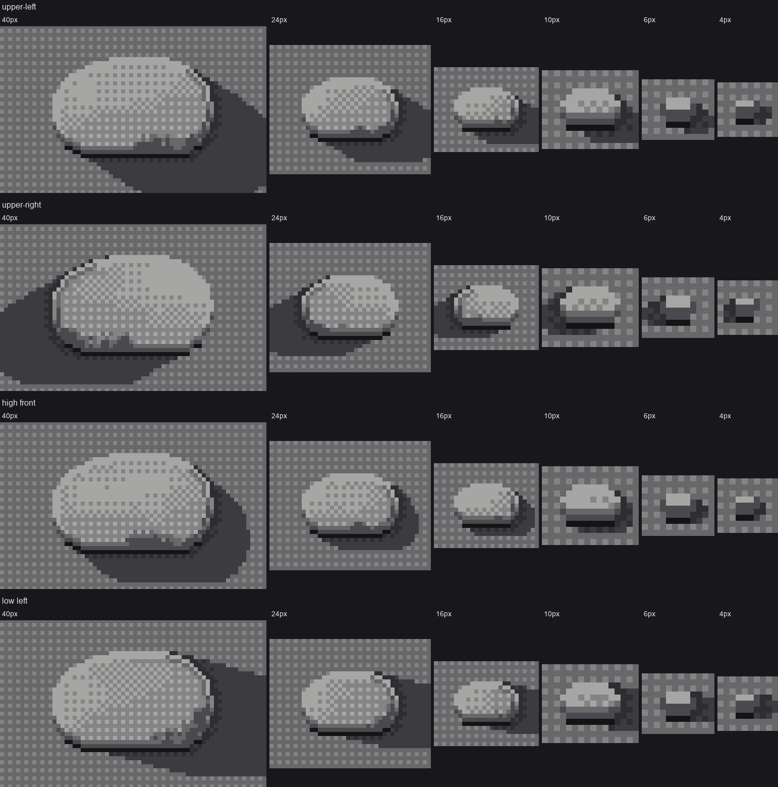
52. elements/cobbles/img/stage1_lights_sizes.pngBash: cd ~/work/pixelart-studies/elements/cobbles; cat >> stone.py <<'EOF' # ------------------------------------------------------------------------------ 3D form field def world_to_s
cd ~/work/pixelart-studies/elements/cobbles; cat >> stone.py <<'EOF'
# ------------------------------------------------------------------------------ 3D form field
def world_to_screen(V, pitch_deg):
"""world vectors (x right, y away, z up) -> screen (x right, y DOWN, z toward viewer)."""
p = np.radians(pitch_deg)
d = np.array([0.0, np.cos(p), -np.sin(p)]) # view direction
u = np.array([0.0, np.sin(p), np.cos(p)]) # screen up
V = np.asarray(V, float)
return np.stack([V[..., 0], -(V @ u), -(V @ d)], -1)
def sun_world(az_deg, el_deg):
"""az: 0 = from screen-right, 90 = from behind (far side), 180 = left, 270 = from the viewer."""
a, e = np.radians(az_deg), np.radians(el_deg)
return np.array([np.cos(a) * np.cos(e), np.sin(a) * np.cos(e), np.sin(e)])
def cobble_geom(D, elong=1.35, flat=0.55, n=2.2, lump=0.06, sink=0.15, yaw=0.0, pitch=35.0,
sun=(135, 40), seed=0, pad=None):
"""a real 3D cobble (lumpy flattened superellipsoid, sunk into the gravel) seen by an
orthographic camera pitched down. Returns dict(mask, N (screen normals), z (height 0..1),
shadow (cast shadow on the ground incl. the stone), L (screen light))."""
import cobble as cb
rng = np.random.default_rng(seed)
view = cb.View(pitch)
Lw = sun_world(*sun)
P, Nw, hgt = cb.stone_points(D, elong, flat, n, lump, sink, yaw, rng)
pad = pad if pad is not None else max(3, int(D * 0.35))
sx, sy, _ = view.project(P[P[:, 2] >= 0])
# ground shadow footprint (project along the sun onto z=0)
Pa = P[P[:, 2] >= 0]
t = Pa[:, 2] / max(Lw[2], 0.08)
G = Pa - t[:, None] * Lw[None, :]
gx, gy, _ = view.project(G)
x0 = min(sx.min(), gx.min()); x1 = max(sx.max(), gx.max())
y0 = min(sy.min(), gy.min()); y1 = max(sy.max(), gy.max())
W = int(np.ceil(x1 - x0)) + 2 * pad
H = int(np.ceil(y1 - y0)) + 2 * pad
cx, cy = -x0 + pad, -y0 + pad
cov, Nm, Zm = cb.rasterize(P, Nw, view, W, H, cx, cy)
m = convex_clean(cov >= 0.5)
if (m & (cov == 0)).any():
idx = ndi.distance_transform_edt(cov == 0, return_distances=False, return_indices=True)
Nm = Nm[idx[0], idx[1]]; Zm = Zm[idx[0], idx[1]]
sh = np.zeros((H, W), bool)
gxi = np.floor(gx + cx).astype(int); gyi = np.floor(gy + cy).astype(int)
ok = (gxi >= 0) & (gxi < W) & (gyi >= 0) & (gyi < H)
sh[gyi[ok], gxi[ok]] = True
sh = convex_clean(ndi.binary_closing(sh, iterations=2) | sh | m)
Ns = world_to_screen(Nm, pitch)
Ns /= np.maximum(np.linalg.norm(Ns, axis=-1, keepdims=True), 1e-9)
return dict(mask=m, N=Ns, z=np.clip(Zm / max(hgt, 1e-6), 0, 1), shadow=sh,
L=world_to_screen(Lw, pitch), Lw=Lw)
EOF
echo ok
# output:
okBash: cd ~/work/pixelart-studies/elements/cobbles; python3 - <<'EOF' s=open('stone.py').read() a=s.index('# ------------------------------------------------------------------------------
cd ~/work/pixelart-studies/elements/cobbles; python3 - <<'EOF'
s=open('stone.py').read()
a=s.index('# ------------------------------------------------------------------------------ the painter')
b=s.index('def contact_under')
new='''# ------------------------------------------------------------------------------ the painter
DEFAULT = dict(face=(2.0, 2.9), face_clip=(2.15, 2.88), lump=0.15, lump_px=2.5,
wmax=0.2, cres_cut=0.7, cres_down=0.35, u8=0.45, u8b=0.56, uB=0.75, uBD=0.9,
jitter=0.12, crown_rows=2, top_step=False, seed=0,
turn=(0.22, 0.12, 0.05), # N.L below which the lit face walks down: TURN/FD, TURN, EDGE
term=0.0, # N.L of the terminator (lit family | shadow family)
crescent=True, rim=True)
def paint_stone(out, m, L, dark_nb=None, N=None, classes=(EDGE, TURN, FD, FL),
shadow_classes=(CONTACT, SH_DARK, SH, SH_LIGHT), P=None):
"""paint one stone mask `m` into the step canvas `out`.
L: light direction in screen space (x right, y DOWN, z toward viewer).
N: per-pixel screen normals (default: ellipsoid dome fitted to the silhouette).
dark_nb: bool map of darker things around (for the reflected rim); default: all non-stone.
classes: the lit family [edge/core, turn, face-dark, face-light];
shadow_classes: the shadow family [contact, core, shadow, reflected]."""
P = {**DEFAULT, **(P or {})}
rng = np.random.default_rng(P['seed'])
L = np.asarray(L, float); L = L / np.linalg.norm(L)
ys, xs = np.nonzero(m)
size = min(np.ptp(xs), np.ptp(ys)) + 1
if N is None:
N = dome_normals(m, P.get('squash', 1.0))
s = N @ L
lit = s > P['term']
sm = s[m & lit] if (m & lit).any() else s[m]
hi, lo = np.percentile(sm, 97), np.percentile(sm, 20)
t = np.clip((s - lo) / max(hi - lo, 1e-6), 0, 1)
f0, f1 = P['face']
x = f0 + (f1 - f0) * t
if size >= 8 and P['lump'] > 0:
x = x + P['lump'] * smooth_noise(m.shape, rng, P['lump_px'])
x = np.clip(x, *P['face_clip'])
# the lit surface turning toward the terminator walks down through the lit family
ta, tb, tc = P['turn']
x = np.where(s < ta, np.minimum(x, 1.5), x)
x = np.where(s < tb, np.minimum(x, 1.0), x)
x = np.where(s < tc, np.minimum(x, 0.0), x)
# ---- crescent (pixels from the silhouette, opposite the light)
o = outward(m)
L2 = L[:2] / max(np.linalg.norm(L[:2]), 1e-6)
if P['crescent'] and size >= 6:
d = ndi.distance_transform_edt(m) - 1.0
cres = P.get('cres_dir')
c2 = -L2 if cres is None else np.asarray(cres, float)
c2 = c2 + np.array([0.0, P['cres_down']])
c2 = c2 / np.linalg.norm(c2)
cc = o @ c2
wmax = P['wmax'] * size
w = wmax * np.clip((cc - P['cres_cut']) / (1 - P['cres_cut']), 0, 1)
jit = P['jitter'] * (1.0 if size >= 16 else 0.3)
u = d / np.maximum(w, 1e-6) + jit * smooth_noise(m.shape, rng, 0.7) * 2.2
prof = np.select([u < P['u8'], u < P['u8b'], u < P['uB'], u < P['uBD']], [0.0, 0.5, 1.0, 1.5], default=9.0)
x = np.minimum(x, np.where(w > 0.9, prof, 9.0))
e_dn = edge_dist_down(m)
e_up = edge_dist_up(m)
# ---- crown
x = np.where((e_up < P['crown_rows']) & (x >= 2), 3.0, x)
# ---- rim
ring = m & ~ndi.binary_erosion(m, CROSS)
ring2 = m & ~ndi.binary_erosion(m, CROSS, iterations=2) & ~ring
if dark_nb is None:
dark_nb = ~m
ca = o @ L2
down = o[..., 1]
nb_dark = ndi.binary_dilation(dark_nb & ~m, CROSS) & m
nb_light = ndi.binary_dilation(~dark_nb & ~m, CROSS) & m
upper = (down < 0.35) & (x >= 2)
x = np.where((ring | ring2) & ndi.binary_dilation(ring & nb_light & upper, CROSS, iterations=1) & upper, 3.0, x)
if P['rim'] and size >= 10:
away_rim = ring & nb_dark & (ca < -0.1) & (e_dn > 0) & lit
rv = np.clip(3.0 - 2.2 * np.clip(down + 0.3, 0, 1.3), 1.0, 3.0)
x = np.where(away_rim, np.minimum(x + 1, np.round(rv)), x)
inner = ring2 & ndi.binary_dilation(away_rim, CROSS) & lit
x = np.where(inner, np.minimum(x, np.where(down < 0.0, 1.0, 0.0)), x)
# ---- bottom
x = np.where(e_dn == 0, 0.0, x)
x = np.where(e_dn == 1, np.minimum(x, 1.0 if size >= 6 else 0.0), x)
v = ordered(x, classes)
# ---- shadow family on the side turned from the light
if (m & ~lit).any():
# core just past the terminator; reflected light where the surface faces the lit ground
bounce = np.clip(0.6 * N[..., 1] + 0.4 * (N[..., :2] @ -L2), 0, 1) # faces down/away
xs_ = 2.0 + 1.0 * bounce - 1.0 * np.exp(-((s - P['term']) / 0.12) ** 2) * (1 - bounce)
xs_ = np.where(e_dn == 0, 0.6, xs_)
vs = ordered(np.clip(xs_, 0, 3), shadow_classes)
v = np.where(lit, v, vs)
if P['top_step']:
v = np.where((s > np.percentile(sm, 96)) & (e_up > 0) & (v == classes[3]), TOP, v)
out[m] = v[m]
return v
'''
s=s[:a]+new+s[b:]
open('stone.py','w').write(s)
EOF
cat > stage1.py <<'EOF'
"""stage1.py -- one cobble in greyscale: planes, two light families, core, reflected light,
contact and cast shadow, from 40 px down to 4 px, under several lights."""
import sys
sys.path.insert(0, __file__.rsplit('/', 1)[0])
import numpy as np
from stone import *
from util import *
SUNS = {'sun behind-left, 40 deg': (140, 40), 'sun behind-right, 50 deg': (40, 50),
'sun front-left, 35 deg': (215, 35), 'sun low left, 15 deg': (170, 15)}
SIZES = [40, 24, 16, 10, 6, 4]
def one(D, sun, seed=2, P=None, geo=None):
g = cobble_geom(D, sun=sun, seed=seed, **(geo or {}))
m, N, L = g['mask'], g['N'], g['L']
out = np.zeros(m.shape, int)
ground = ~m
paint_ground(out, ground)
sh = g['shadow'] & ~m
paint_shadow_on_ground(out, g['shadow'], m)
paint_stone(out, m, L, dark_nb=sh, N=N, P=P)
contact_under(out, m)
return out, g
if __name__ == '__main__':
rows = []
for name, sun in SUNS.items():
cells = []
for D in SIZES:
out, g = one(D, sun)
s = 8 if D >= 16 else 12
cells.append(label(fit(to_rgb(out, GREY9), max(96, out.shape[1] * s), 300, s=s), f'{D}px'))
rows.append(label(hcat(cells), name, sz=16))
save(vcat(rows, gap=10), 'stage1_lights_sizes.png')
EOF
nice python3 stage1.py 2>&1 | grep -v Warn | tail -3
# output:
(Bash completed with no output)Read: elements/cobbles/img/stage1_lights_sizes.png 53. elements/cobbles/img/stage1_lights_sizes.png
53. elements/cobbles/img/stage1_lights_sizes.png
Bash: cd ~/work/pixelart-studies/elements/cobbles; python3 - <<'EOF' s=open('stone.py').read() s=s.replace("def cobble_geom(D, elong=1.35, flat=0.55, n=2.2, lump=0.06, sink=0.15, yaw=0.0
cd ~/work/pixelart-studies/elements/cobbles; python3 - <<'EOF'
s=open('stone.py').read()
s=s.replace("def cobble_geom(D, elong=1.35, flat=0.55, n=2.2, lump=0.06, sink=0.15, yaw=0.0, pitch=35.0,","def cobble_geom(D, elong=1.35, flat=0.5, n=2.2, lump=0.06, sink=0.3, yaw=0.0, pitch=45.0,")
s=s.replace("def paint_ground(out, ground, lit_x=1.3,","def paint_ground(out, ground, lit_x=1.0,")
open('stone.py','w').write(s)
EOF
nice python3 stage1.py 2>&1 | grep -v Warn | tail -3
# output:
(Bash completed with no output)Read: elements/cobbles/img/stage1_lights_sizes.png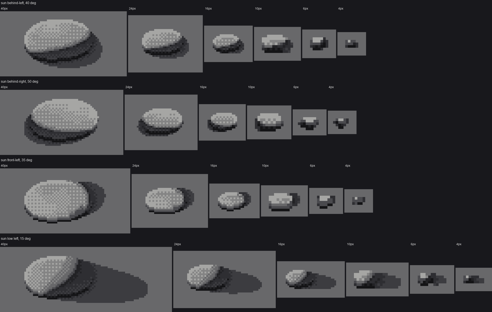
54. elements/cobbles/img/stage1_lights_sizes.pngBash: cd ~/work/pixelart-studies/elements/cobbles; python3 - <<'EOF' s=open('stone.py').read() s=s.replace(""" v = ordered(x, classes) # ---- shadow family""",""" if size < P.g
cd ~/work/pixelart-studies/elements/cobbles; python3 - <<'EOF'
s=open('stone.py').read()
s=s.replace(""" v = ordered(x, classes)
# ---- shadow family""",""" if size < P.get('small', 9):
# small stones (Ferrari's shore lozenges): 3-4 FLAT values, no dither -- light top row,
# mid body, dark bottom row; the shadow side one flat shadow step
xq = np.where(s > np.percentile(sm, 60), 3, 2)
xq = np.where(s < ta, 1, xq)
xq = np.where(e_up == 0, np.maximum(xq, 3 if size >= 4 else 2), xq)
xq = np.where(e_dn == 0, 0, xq)
v = np.asarray(classes)[xq]
vs = np.where(e_dn == 0, shadow_classes[0], shadow_classes[2])
v = np.where(lit | (e_up == 0), v, vs)
out[m] = v[m]
return v
v = ordered(x, classes)
# ---- shadow family""")
open('stone.py','w').write(s)
EOF
nice python3 stage1.py 2>&1 | grep -v Warn | tail -3; python3 -c "
import sys;sys.path.insert(0,'.')
from util import *; from PIL import Image
im=Image.open('img/stage1_lights_sizes.png'); save(im.crop((1000,0,im.width,im.height)),'_small.png')"
# output:
(Bash completed with no output)Read: elements/cobbles/img/_small.png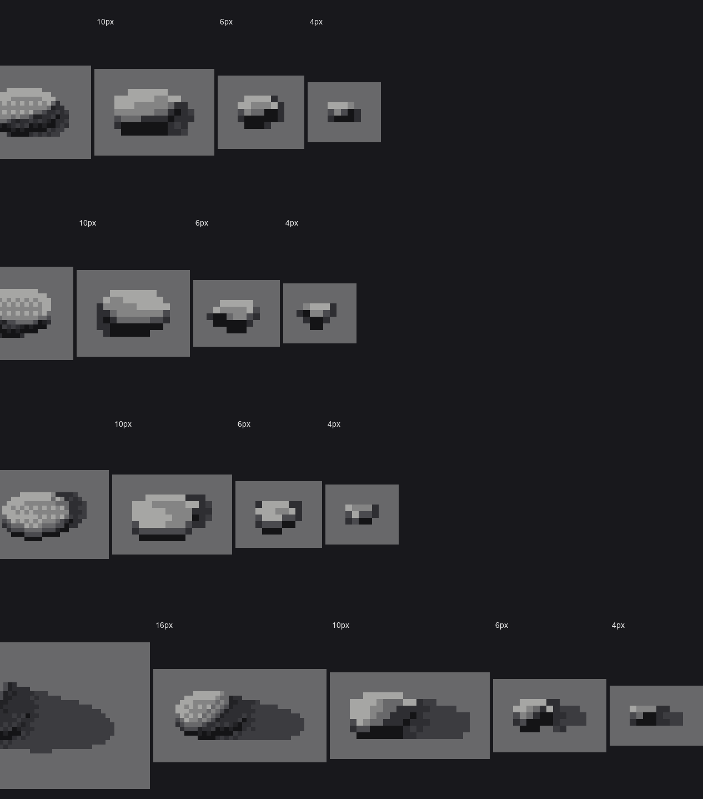
55. elements/cobbles/img/_small.pngBash: cd ~/work/pixelart-studies/elements/cobbles; python3 - <<'EOF' s=open('stage1.py').read() s=s.replace(" contact_under(out, m)\n return out, g"," if D >= 9:\n contac
cd ~/work/pixelart-studies/elements/cobbles; python3 - <<'EOF'
s=open('stage1.py').read()
s=s.replace(" contact_under(out, m)\n return out, g"," if D >= 9:\n contact_under(out, m)\n return out, g")
s+='''
def compare_sheet():
"""photo crop | my pixels | nearest Ferrari, all greyscale at 8x (40 px stone)."""
R = '~/work/pixelart-studies/transfer/refs/'
ph = photo_crop(R + 'braided_cobbles_kuban_wet.jpg', (610, 280, 890, 440), px_w=56, grey=True)
ph2 = photo_crop(R + 'braided_cobbles_hope.jpg', (620, 220, 810, 360), px_w=56, grey=True)
out, g = one(40, (215, 35))
out2, g2 = one(40, (140, 40))
mine = to_rgb(out, GREY9); mine2 = to_rgb(out2, GREY9)
fz = ferrari('V19', (236, 256, 292, 298), grey=True)
row = [label(up(ph, 8), 'photo (Kuban, sun), 56px wide'), label(up(mine, 8), 'mine 40px, sun front-left'),
label(up(fz, 8), 'Ferrari V19 boulder (grey)')]
row2 = [label(up(ph2, 8), 'photo (Hope, overcast)'), label(up(mine2, 8), 'mine 40px, sun behind-left')]
save(vcat([hcat(row), hcat(row2)]), 'stage1_compare.png')
if len(sys.argv) > 1 and sys.argv[1] == 'cmp':
compare_sheet()
'''
open('stage1.py','w').write(s)
EOF
nice python3 stage1.py 2>/dev/null; nice python3 stage1.py cmp 2>&1 | grep -v Warn|tail -2
# output:
(Bash completed with no output)Read: elements/cobbles/img/stage1_compare.png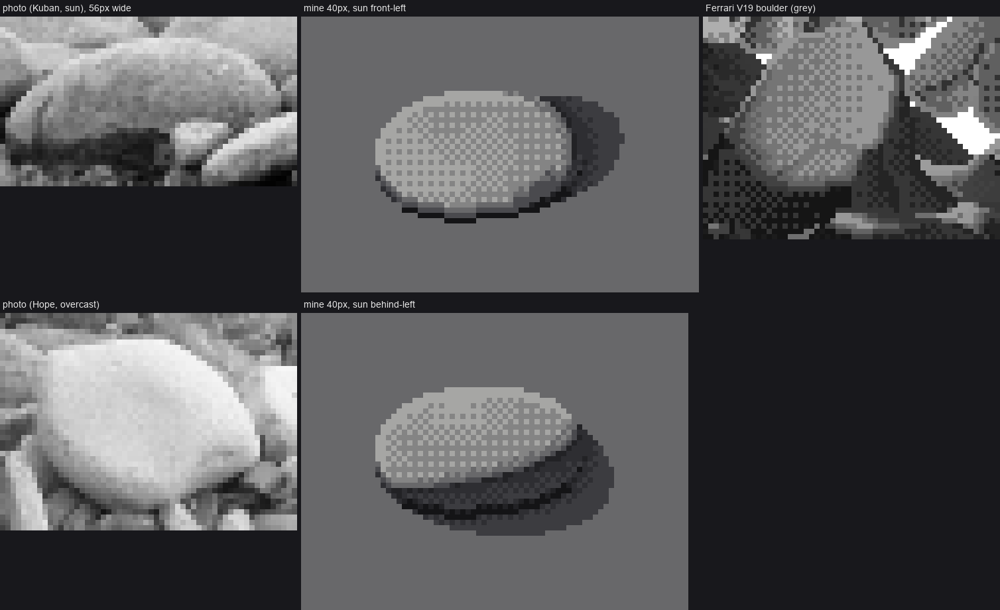
56. elements/cobbles/img/stage1_compare.pngBash: cd ~/work/pixelart-studies/elements/cobbles; python3 - <<'EOF' s=open('stone.py').read() s=s.replace("DEFAULT = dict(face=(2.0, 2.9), face_clip=(2.15, 2.88), lump=0.15, lump_px=2.5
cd ~/work/pixelart-studies/elements/cobbles; python3 - <<'EOF'
s=open('stone.py').read()
s=s.replace("DEFAULT = dict(face=(2.0, 2.9), face_clip=(2.15, 2.88), lump=0.15, lump_px=2.5,","DEFAULT = dict(face=(2.0, 2.95), face_clip=(2.1, 2.95), lump=0.28, lump_px=3.5,")
s=s.replace(" xs_ = 2.0 + 1.0 * bounce - 1.0 * np.exp(-((s - P['term']) / 0.12) ** 2) * (1 - bounce)"," xs_ = 1.9 + 1.1 * bounce ** 1.5\n xs_ = xs_ + 0.25 * smooth_noise(m.shape, rng, 2.0)")
s=s.replace("lump=0.06, sink=0.3, yaw=0.0, pitch=45.0,","lump=0.12, sink=0.3, yaw=0.0, pitch=45.0,")
open('stone.py','w').write(s)
EOF
nice python3 stage1.py cmp 2>/dev/null; nice python3 stage1.py 2>/dev/null
# output:
(Bash completed with no output)Read: elements/cobbles/img/stage1_compare.png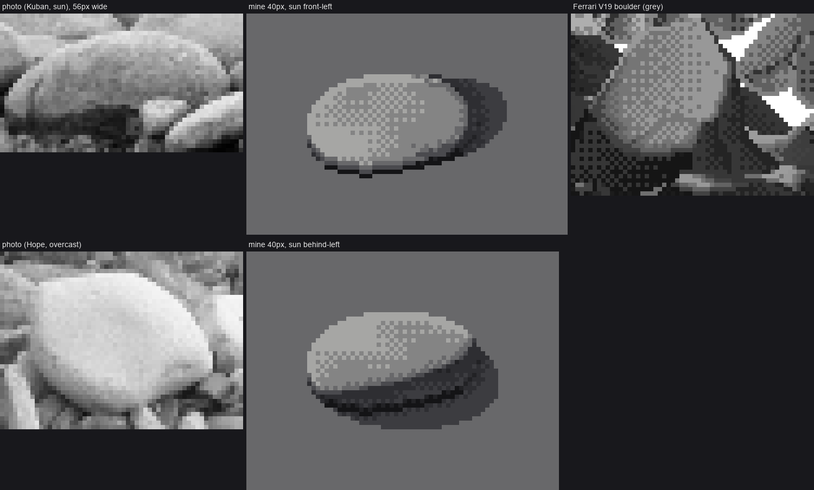
57. elements/cobbles/img/stage1_compare.pngBash: cd ~/work/pixelart-studies/elements/cobbles; sed -i '' "s/face_clip=(2.1, 2.95), lump=0.28, lump_px=3.5,/face_clip=(2.1, 2.95), lump=0.18, lump_px=3.0,/; s/def cobble_geom(D, elong
cd ~/work/pixelart-studies/elements/cobbles; sed -i '' "s/face_clip=(2.1, 2.95), lump=0.28, lump_px=3.5,/face_clip=(2.1, 2.95), lump=0.18, lump_px=3.0,/; s/def cobble_geom(D, elong=1.35, flat=0.5, n=2.2,/def cobble_geom(D, elong=1.35, flat=0.65, n=2.0,/" stone.py; nice python3 stage1.py cmp 2>/dev/null; nice python3 stage1.py 2>/dev/null # output: (Bash completed with no output)
Read: elements/cobbles/img/stage1_compare.png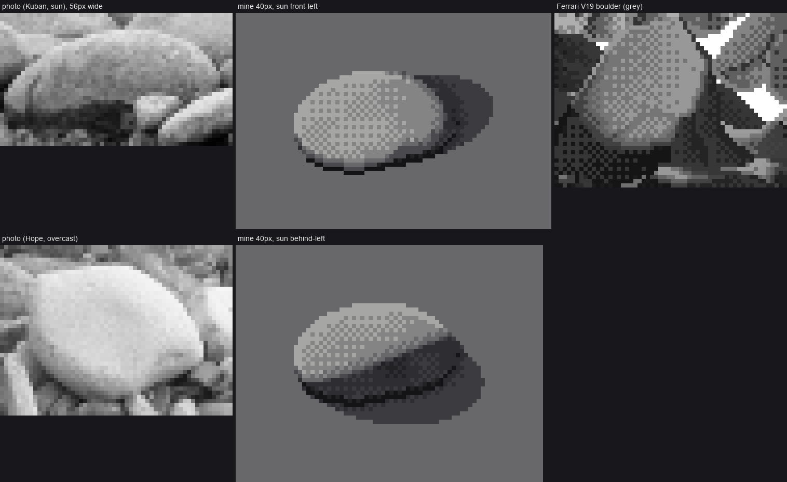
58. elements/cobbles/img/stage1_compare.pngBash: cd ~/work/pixelart-studies/elements/cobbles; head -60 CRITIQUE.md
cd ~/work/pixelart-studies/elements/cobbles; head -60 CRITIQUE.md # output: # Critique (newest first) ## Round 1 — 2026-09-25 21:22 — stage 0 master copy, `img/stage0_copy_v3.png` (V19 lit boulder) **Verdict: REVISE** — close in drawing, not yet indistinguishable at 8×. (My read; you own the call. The bar I'm judging against is "a skilled pixel artist can't tell your crop from his at 8× except by subject".) What's working: - The main boulder's silhouette, its size, and the lit/shadow split are right. The dark lower rim sitting under the lit dome reads as a rounded stone at a glance. - The snow wedges (white with a 1 px blue rim on stepped diagonals) are nearly his. What gives it away, in order of how fast the eye catches it: 1. **The dither on the boulder is one uniform checker over the whole dome.** In his crop the checker is *patchy*: the upper-left crown is mostly flat mid-orange with only scattered checker, the checker thickens into the core toward the lower right, and there are 2–3 px flat islands inside it. Yours has the same 50% density edge to edge, which is exactly the "mechanical checker" the master-copy student hit in C1. Let density carry the turn (sparse on the crown, dense toward the terminator), and break it with small flat islands. 2. **The rim is a clean continuous ring.** His dark lower rim is chunky and uneven: 2–3 px thick at lower left, thinning to 1 px up the right side, with notches where the next stone overlaps. Yours runs at an even width, like an outline, and a mid-brown band sits inside it all the way round. That band is the most "drawn by a program" part of the copy. 3. **The shadow field (lower left) is one uniform dark checker.** His is solid near-black pockets, checker zones, and diagonal clusters of the lighter dark, all in patches. Pockets of solid dark where stones touch are what make the pile read as a pile; yours reads as one flat dark material. 4. **Top-left and top-right stones.** His top-left is a jumble of small lit and dark faceted chips; your top band is a blank mid strip. His top-right stone carries short dark crack ticks (2–4 px diagonal marks) in its lit face; yours is smooth. Next, the single most useful thing: fix (1) and (3) together. Both are "one dither density everywhere", and both are what separates a copy from a fit.
Write: elements/cobbles/materials.py
"""materials.py -- what makes a painted cobble read as granite, greywacke or basalt (stage 2).
All marks are OFFSETS IN STEP SPACE on top of the form (paint_stone's output), in object space
(they stick to the stone), and every mark is one step up or down its own family -- never a
new value. The value family of the whole stone also shifts with the rock (granite light,
greywacke mid, basalt dark), because at pixel scale albedo is the first thing that reads.
granite speckle: isolated 1-px flecks, mostly dark (biotite/hornblende), a few light
(feldspar), GATHERED in patches by a noise field, dense in the light, rare in
shadow; the lit face dither is sparser (granite is matte and grainy, the grain IS
the texture). Edge: slightly knobbly silhouette.
greywacke smooth and fine: no speckle; instead 0-2 QUARTZ VEINS, 1-px clean-run lines one or
two steps lighter crossing the stone in a straight/2:1 line and wrapping over the
edge; mid value, a bit of cool mottle (big lumps). Edge: smooth.
basalt dark, dense, fine: the whole family shifted a step down, almost no marks, a few
dark vesicle pits; being smooth and dark it carries the crispest sun-glint
(1-3 px TOP cluster) -- the value contrast of a dark smooth surface.
"""
import numpy as np
from scipy import ndimage as ndi
from stone import (paint_stone, smooth_noise, edge_dist_down, edge_dist_up, CONTACT, SH_DARK, SH,
SH_LIGHT, EDGE, TURN, FD, FL, TOP, CROSS)
ROCKS = {
'granite': dict(classes=(EDGE, TURN, FD, FL), shadow=(CONTACT, SH_DARK, SH, SH_LIGHT),
P=dict(face=(2.2, 3.0), face_clip=(2.3, 3.0), lump=0.12), lump_geo=0.14),
'greywacke': dict(classes=(SH_LIGHT, EDGE, TURN, FD), shadow=(CONTACT, SH_DARK, SH, SH_LIGHT),
P=dict(face=(2.0, 2.9), face_clip=(2.05, 2.9), lump=0.22, lump_px=4.0), lump_geo=0.08),
'basalt': dict(classes=(SH, SH_LIGHT, EDGE, TURN), shadow=(CONTACT, CONTACT, SH_DARK, SH),
P=dict(face=(2.0, 2.8), face_clip=(2.0, 2.8), lump=0.1), lump_geo=0.07),
}
RAMP_ORDER = [CONTACT, SH_DARK, SH, SH_LIGHT, EDGE, TURN, FD, FL, TOP]
def step_up(v, k=1):
i = np.searchsorted(RAMP_ORDER, v)
return np.asarray(RAMP_ORDER)[np.clip(i + k, 0, len(RAMP_ORDER) - 1)]
def granite_speckle(v, m, lit, rng, size, density=0.10):
if size < 8:
return v
patch = smooth_noise(m.shape, rng, max(1.5, size / 10)) > -0.2 # where grains gather
r = rng.random(m.shape)
e_dn = edge_dist_down(m)
interior = m & ndi.binary_erosion(m, CROSS) & (e_dn > 1)
dens = np.where(lit, density, density * 0.35)
dark = interior & patch & (r < dens * 0.75)
light = interior & patch & (r > 1 - dens * 0.25) & lit
# isolated flecks only: no two flecks side by side (a speck is one pixel)
dark &= ~(np.roll(dark, 1, 0) | np.roll(dark, 1, 1))
v = np.where(dark, step_up(v, -1 if size < 16 else -2), v)
v = np.where(light & ~dark, step_up(v, 1), v)
return v
def clean_line(m, rng, slope_choices=((1, 0), (2, 1), (1, 1), (3, 1), (1, 2))):
"""a straight clean-run line across the mask (vein): run/rise from clean ratios."""
ys, xs = np.nonzero(m)
cy, cx = ys.mean() + rng.normal() * np.ptp(ys) * 0.2, xs.mean() + rng.normal() * np.ptp(xs) * 0.25
run, rise = slope_choices[rng.integers(len(slope_choices))]
sgn = 1 if rng.random() < 0.5 else -1
line = np.zeros_like(m)
L = int(np.ptp(xs) + np.ptp(ys)) + 4
for k in range(-L, L):
# step along the line in whole-pixel runs
x = int(round(cx + k * run / max(run, rise)))
y = int(round(cy + sgn * k * rise / max(run, rise)))
if 0 <= y < m.shape[0] and 0 <= x < m.shape[1]:
line[y, x] = True
return line & m
def greywacke_veins(v, m, rng, size, n=None):
if size < 10:
return v
n = n if n is not None else rng.choice([0, 1, 1, 2])
for _ in range(n):
ln = clean_line(m, rng)
ln &= edge_dist_down(m) > 0
v = np.where(ln, step_up(v, 2), v)
return v
def basalt_marks(v, m, lit, s, rng, size):
if size >= 10:
r = rng.random(m.shape)
pit = m & ndi.binary_erosion(m, CROSS) & (r < 0.025)
v = np.where(pit, step_up(v, -1), v)
# sun glint: the few pixels facing the light most squarely go to TOP (smooth dark rock)
if size >= 6 and lit.any():
thr = np.percentile(s[m & lit], 98.5 if size >= 16 else 96)
g = m & lit & (s >= thr) & (edge_dist_up(m) > 0)
v = np.where(g, np.maximum(step_up(v, 2), v), v)
return v
def paint_rock(out, m, L, rock, N=None, dark_nb=None, seed=0, P=None):
R = ROCKS[rock]
rng = np.random.default_rng(seed + 101)
PP = {**R['P'], 'seed': seed, **(P or {})}
v = paint_stone(out, m, L, dark_nb=dark_nb, N=N, classes=R['classes'], shadow_classes=R['shadow'], P=PP)
if N is None:
from stone import dome_normals
N = dome_normals(m)
Ln = np.asarray(L, float) / np.linalg.norm(L)
s = N @ Ln
lit = s > 0
ys, xs = np.nonzero(m)
size = min(np.ptp(xs), np.ptp(ys)) + 1
if rock == 'granite':
v = granite_speckle(v, m, lit, rng, size)
elif rock == 'greywacke':
v = greywacke_veins(v, m, rng, size)
elif rock == 'basalt':
v = basalt_marks(v, m, lit, s, rng, size)
out[m] = v[m]
return v
Bash: cd ~/work/pixelart-studies/elements/cobbles; ls refs/close refs/basalt_pebbles | head -30; cat > stage2.py <<'EOF' """stage2.py -- the cobble's material in greyscale: granite, grey
cd ~/work/pixelart-studies/elements/cobbles; ls refs/close refs/basalt_pebbles | head -30; cat > stage2.py <<'EOF'
"""stage2.py -- the cobble's material in greyscale: granite, greywacke, basalt."""
import sys
sys.path.insert(0, __file__.rsplit('/', 1)[0])
import numpy as np
from stone import *
from materials import paint_rock, ROCKS
from util import *
R = '~/work/pixelart-studies/transfer/refs/'
C = '~/work/pixelart-studies/elements/cobbles/refs/'
PHOTOS = {'granite': (C + 'close/commons_Granite_River_Cobble.jpg', None),
'greywacke': (R + 'braided_cobbles_hope.jpg', (860, 425, 1050, 560)),
'basalt': (R + 'braided_cobbles_hope.jpg', (365, 175, 515, 300))}
def one(D, sun, rock, seed=2, geo=None):
g = cobble_geom(D, sun=sun, seed=seed, lump=ROCKS[rock]['lump_geo'], **(geo or {}))
m, N, L = g['mask'], g['N'], g['L']
out = np.zeros(m.shape, int)
paint_ground(out, ~m)
paint_shadow_on_ground(out, g['shadow'], m)
paint_rock(out, m, L, rock, N=N, dark_nb=g['shadow'] & ~m, seed=seed)
if D >= 9:
contact_under(out, m)
return out
if __name__ == '__main__':
rows = []
for rock in ROCKS:
p, box = PHOTOS[rock]
from PIL import Image
im = Image.open(p)
box = box or (0, 0, im.width, im.height)
cells = [label(fit(photo_crop(p, box, px_w=48, grey=True), 400, 300, s=8), f'photo, 48px')]
for D, seed in [(40, 2), (40, 5), (24, 3), (16, 4), (10, 1)]:
out = one(D, (140, 40), rock, seed=seed)
s = 8 if D >= 16 else 12
cells.append(label(fit(to_rgb(out, GREY9), max(120, out.shape[1] * s), 300, s=s), f'{D}px'))
rows.append(label(hcat(cells), rock, sz=16))
save(vcat(rows, gap=10), 'stage2_materials.png')
EOF
nice python3 stage2.py 2>&1 | grep -v Warn | tail
# output:
refs/basalt_pebbles:
_sheet.jpg
openverse_Baroque_patterns_2_5_9480aff1.jpg
openverse_Baroque_patterns_5_5_03ee10da.jpg
openverse_Basalt_pebble_weight_Syrian_5098d42d.jpg
openverse_Ducks_Fleeing_the_Scene_Adel_Oregon_e5f9697a.jpg
openverse_Hamilton_Fleetwood_House_Built_in_1925_for_a_loc_81d4f0af.jpg
openverse_Lakeshore_beach_gravel_upper_Holocene_derived_fr_b32328e6.jpg
openverse_Oystercatcher_nest_on_black_basalt_pebbles_Below_64ba8a8d.jpg
openverse_Red_Rocks_and_The_Faraway_Pedernal_d0bf85d3.jpg
openverse_Survey_8776caf5.jpg
openverse_Tucson_Gem_Show_Iron_Sample_9c649d01.jpg
sources.tsv
refs/close:
_sheet.jpg
commons_Cobbles_in_Kuban_River_jpg_b7364406.jpg
commons_Granite_River_Cobble_jpg_fb70d5c0.jpg
commons_Hope_river_cobbles_jpg_dc63b4aa.jpg
commons_R_o_Tinto_cauce_01_jpg_20777b10.jpg
commons_Rio_Tinto_cauce_21_jpg_506a5c97.jpg
openverse_0802A05_Last_Call_c452b85d.jpg
openverse_1973_Attack_Class_patrol_boat_HMAS_ARDENT_in_the_8aa6d0e0.jpg
openverse_Raise_High_the_Roof_Beam_Carpenters_c4a668ee.jpg
openverse_Rue_de_Pilori_Bayonne_Aquitaine_29a6547f.jpg
openverse_Temple_Bar_Dublin_243_02615452.jpg
openverse_Temple_Bar_Dublin_244_430df65d.jpg
sources.tsv
Traceback (most recent call last):
File "~/work/pixelart-studies/elements/cobbles/stage2.py", line 33, in <module>
im = Image.open(p)
^^^^^^^^^^^^^
File "~/miniconda3/lib/python3.12/site-packages/PIL/Image.py", line 3465, in open
fp = builtins.open(filename, "rb")
^^^^^^^^^^^^^^^^^^^^^^^^^^^^^
FileNotFoundError: [Errno 2] No such file or directory: '~/work/pixelart-studies/elements/cobbles/refs/close/commons_Granite_River_Cobble.jpg'Bash: cd ~/work/pixelart-studies/elements/cobbles; sed -i '' "s#close/commons_Granite_River_Cobble.jpg', None#close/commons_Granite_River_Cobble_jpg_fb70d5c0.jpg', None#; s#'basalt': (R
cd ~/work/pixelart-studies/elements/cobbles; sed -i '' "s#close/commons_Granite_River_Cobble.jpg', None#close/commons_Granite_River_Cobble_jpg_fb70d5c0.jpg', None#; s#'basalt': (R + 'braided_cobbles_hope.jpg', (365, 175, 515, 300))#'basalt': (C + 'basalt_pebbles/openverse_Basalt_pebble_weight_Syrian_5098d42d.jpg', None)#" stage2.py; nice python3 stage2.py 2>&1 | grep -v Warn | tail -3 # output: (Bash completed with no output)
Read: elements/cobbles/img/stage2_materials.png 59. elements/cobbles/img/stage2_materials.png
59. elements/cobbles/img/stage2_materials.png
Write: elements/cobbles/palette.py
"""palette.py -- the palette is the light (stage 3).
One 9-step ramp per (rock, hour, wetness): steps are the same indices stone.py paints
0 CONTACT 1 SH_DARK 2 SH 3 SH_LIGHT | 4 EDGE 5 TURN 6 FD 7 FL 8 TOP
Each ramp is a HUE WALK in Lab, not a lightness scale of one hue:
* the shadow family takes the SKY's hue (cool blue-violet at midday, violet at dusk),
* the lit family takes the SUN's hue (neutral-warm at noon, orange at golden hour),
* the rock's own albedo tint (granite pink-grey, greywacke green-grey, basalt blue-black)
sits under both, strongest in the halftones (TURN/FD), where the light is least coloured,
* chroma peaks in the halftones and falls toward black and the top light (Ferrari's rock
ramps: saturated middle, greyed ends).
Lightness per step comes from the rock's albedo (granite lightest, basalt darkest) with the
lit/shadow GAP kept at the terminator (EDGE is always clearly above SH_LIGHT).
Wet: everything darker and more saturated, the TOP step becomes a near-white glint.
"""
import numpy as np
def lab_to_rgb(lab):
lab = np.asarray(lab, float)
L, a, b = lab[..., 0], lab[..., 1], lab[..., 2]
fy = (L + 16) / 116; fx = fy + a / 500; fz = fy - b / 200
def finv(t):
return np.where(t > 6 / 29, t ** 3, 3 * (6 / 29) ** 2 * (t - 4 / 29))
X = 0.9505 * finv(fx); Y = finv(fy); Z = 1.089 * finv(fz)
M = np.array([[3.2406, -1.5372, -0.4986], [-0.9689, 1.8758, 0.0415], [0.0557, -0.2040, 1.0570]])
rgb = np.stack([X, Y, Z], -1) @ M.T
rgb = np.where(rgb > 0.0031308, 1.055 * np.clip(rgb, 0, None) ** (1 / 2.4) - 0.055, 12.92 * rgb)
return np.clip(np.round(rgb * 255), 0, 255).astype(np.uint8)
def rgb_to_lab(rgb):
a = np.asarray(rgb, float) / 255
a = np.where(a > 0.04045, ((a + 0.055) / 1.055) ** 2.4, a / 12.92)
M = np.array([[0.4124, 0.3576, 0.1805], [0.2126, 0.7152, 0.0722], [0.0193, 0.1192, 0.9505]])
xyz = a @ M.T / np.array([0.9505, 1.0, 1.089])
f = np.where(xyz > 0.008856, np.cbrt(xyz), 7.787 * xyz + 16 / 116)
return np.stack([116 * f[..., 1] - 16, 500 * (f[..., 0] - f[..., 1]), 200 * (f[..., 1] - f[..., 2])], -1)
def hue(deg, c):
return np.array([c * np.cos(np.radians(deg)), c * np.sin(np.radians(deg))])
# rock albedo: lightness of the lit face (FL) and shadow (SH), own tint (hue deg, chroma)
ROCK = {'granite': dict(L_fl=74, L_sh=30, tint=(40, 7)), # pink-grey
'greywacke': dict(L_fl=62, L_sh=25, tint=(150, 6)), # green-grey
'basalt': dict(L_fl=46, L_sh=16, tint=(260, 5)), # blue-black
'sandstone': dict(L_fl=70, L_sh=30, tint=(65, 16))}
# light: sun hue/chroma on the lit family, sky hue/chroma on the shadow family, contrast scale
HOUR = {'noon': dict(sun=(80, 6), sky=(265, 9), gap=1.0, top=1.0),
'morning': dict(sun=(70, 12), sky=(255, 12), gap=1.05, top=1.0),
'golden': dict(sun=(60, 26), sky=(290, 14), gap=1.2, top=1.05),
'dusk': dict(sun=(20, 18), sky=(305, 16), gap=0.8, top=0.85),
'overcast': dict(sun=(230, 3), sky=(235, 6), gap=0.55, top=0.9)}
def ramp(rock='granite', hour='noon', wet=0.0):
r, h = ROCK[rock], HOUR[hour]
Lfl, Lsh = r['L_fl'], r['L_sh']
# lightness per step: shadow family below Lsh+, lit family from EDGE up to TOP
g = h['gap']
Lsh_scale = Lsh * (1.0 if g >= 1 else 1 + (1 - g) * 0.9) # overcast: shadows lift
Ls = [Lsh_scale * 0.35, Lsh_scale * 0.62, Lsh_scale * 0.85, Lsh_scale * 1.08]
span = Lfl - Ls[-1]
Ll = [Ls[-1] + span * f for f in (0.28, 0.55, 0.78, 1.0)] + [min(97, Lfl + 12 * h['top'])]
Ls[-1] = min(Ls[-1], Ll[0] - 5)
Lv = np.array(Ls + Ll)
# wet stones: darker (water fills the pores), more saturated, glint on top
if wet > 0:
Lv[:8] = Lv[:8] * (1 - 0.3 * wet)
# chroma envelope: peak in the halftones
env = np.array([0.25, 0.45, 0.7, 0.9, 0.85, 1.0, 0.9, 0.7, 0.35]) * (1 + 0.6 * wet)
ab = []
for i in range(9):
own = hue(*r['tint']) * (1.2 if i in (4, 5, 6) else 0.8)
light = hue(*h['sun']) if i >= 4 else hue(*h['sky'])
# the reflected step picks up the lit gravel (a touch of the sun hue)
if i == 3:
light = 0.6 * hue(*h['sky']) + 0.4 * hue(*h['sun'])
ab.append((own + light) * env[i])
ab = np.array(ab)
lab = np.concatenate([Lv[:, None], ab], 1)
rgb = lab_to_rgb(lab)
if wet > 0:
rgb[8] = lab_to_rgb(np.array([min(98, Lfl + 24), *(hue(*h['sun']) * 0.4)]))
return [tuple(int(c) for c in x) for x in rgb]
def ground_ramp(hour='noon'):
"""the gravel between cobbles: a mix of all rocks, one mid-grey hue walk."""
return ramp('greywacke', hour)
Bash: cd ~/work/pixelart-studies/elements/cobbles; cat > stage3.py <<'EOF' """stage3.py -- colour: a deliberate hue-walk ramp per rock type, light as hue shift.""" import sys sys.path.in
cd ~/work/pixelart-studies/elements/cobbles; cat > stage3.py <<'EOF'
"""stage3.py -- colour: a deliberate hue-walk ramp per rock type, light as hue shift."""
import sys
sys.path.insert(0, __file__.rsplit('/', 1)[0])
import numpy as np
from PIL import Image, ImageDraw
from stone import *
from materials import paint_rock, ROCKS
from palette import ramp, ground_ramp, HOUR
from util import *
SUN_BY_HOUR = {'noon': (120, 62), 'morning': (30, 30), 'golden': (160, 16), 'dusk': (175, 6), 'overcast': (100, 80)}
def render(D, rock, hour, seed=2, wet=0.0):
g = cobble_geom(D, sun=SUN_BY_HOUR[hour], seed=seed, lump=ROCKS[rock]['lump_geo'])
m, N, L = g['mask'], g['N'], g['L']
out = np.zeros(m.shape, int)
paint_ground(out, ~m)
if hour != 'overcast':
paint_shadow_on_ground(out, g['shadow'], m)
paint_rock(out, m, L, rock, N=N, dark_nb=g['shadow'] & ~m, seed=seed)
if D >= 9:
contact_under(out, m)
rp = np.array(ramp(rock, hour, wet), np.uint8)
gp = np.array(ground_ramp(hour), np.uint8)
rgb = np.where(m[..., None], rp[out], gp[out])
return rgb
def swatch(pal, s=18):
im = Image.new('RGB', (s * len(pal), s))
d = ImageDraw.Draw(im)
for i, c in enumerate(pal):
d.rectangle([i * s, 0, i * s + s - 1, s - 1], fill=c)
return im
if __name__ == '__main__':
rows = []
for hour in HOUR:
cells = []
for rock in ROCKS:
img = render(32, rock, hour, seed=3)
cells.append(vcat([label(up(img, 6), f'{rock} / {hour}'), swatch(ramp(rock, hour))], gap=2))
rows.append(hcat(cells, gap=10))
save(vcat(rows, gap=10), 'stage3_colour_hours.png')
EOF
nice python3 stage3.py 2>&1 | grep -v Warn | tail -3
# output:
(Bash completed with no output)Read: elements/cobbles/img/stage3_colour_hours.png 60. elements/cobbles/img/stage3_colour_hours.png
60. elements/cobbles/img/stage3_colour_hours.png
Write: elements/cobbles/scene.py
"""scene.py -- several cobbles composed: nestled, overlapping, separated by value (stage 4+).
Canvas = two int layers: `step` (0..8, the stone.py steps) and `mat` (-1 ground, else rock id),
plus `wet` (0/1) so each pixel is rendered with ramp(rock, hour, wet)[step].
Composition rules (from Ferrari's V19 pile and c_stones shore):
* back to front (by base row); a nearer stone simply overwrites.
* CAST SHADOW: a stone's footprint along the sun falls on the ground AND on neighbours;
shadowed stone pixels are repainted in the shadow family (they keep their form, lose the sun).
* CREVICE: where a nearer stone's silhouette overlaps a farther stone, the farther stone's pixels
along that edge drop into a dark pocket (1-2 px, darkest right at the join) -- stones separate
by VALUE, never by an outline drawn round the nearer one.
* POCKETS: ground crowded by stones is solid CONTACT, opening into checker.
"""
import numpy as np
from scipy import ndimage as ndi
from stone import (cobble_geom, paint_stone, ordered, shift, edge_dist_down, CROSS, CONTACT, SH_DARK,
SH, SH_LIGHT, EDGE, TURN, FD, FL, TOP, convex_clean)
from materials import paint_rock, ROCKS
from palette import ramp, ground_ramp
ROCK_IDS = {k: i for i, k in enumerate(['granite', 'greywacke', 'basalt', 'sandstone'])}
ROCK_NAMES = {v: k for k, v in ROCK_IDS.items()}
class Canvas:
def __init__(self, W, H):
self.W, self.H = W, H
self.step = np.full((H, W), TURN, int)
self.mat = np.full((H, W), -1, int)
self.wet = np.zeros((H, W), np.uint8)
self.zid = np.full((H, W), -1, int) # which stone owns the pixel
self.shadow = np.zeros((H, W), bool) # cast-shadow footprint on anything
self.water = np.zeros((H, W), bool)
def render(self, hour='noon', ground=None, water_pal=None):
out = np.zeros((self.H, self.W, 3), np.uint8)
gp = np.array(ground if ground is not None else ground_ramp(hour), np.uint8)
g = self.mat < 0
out[g] = gp[self.step[g]]
for name, rid in ROCK_IDS.items():
for w in (0, 1):
sel = (self.mat == rid) & (self.wet == w)
if sel.any():
rp = np.array(ramp(name, hour, wet=0.8 * w), np.uint8)
out[sel] = rp[self.step[sel]]
if water_pal is not None and self.water.any():
wp = np.array(water_pal, np.uint8)
out[self.water] = wp[np.clip(self.step[self.water], 0, len(wp) - 1)]
return out
def place(cv, stones, sun=(140, 40), pitch=45.0, P=None):
"""stones: list of dict(x, y, D, rock, seed, [elong, flat, yaw, wet]); (x, y) = screen position
of the stone's base centre. Painted back to front."""
geoms = []
for i, s in enumerate(stones):
g = cobble_geom(s['D'], sun=sun, pitch=pitch, seed=s.get('seed', i),
elong=s.get('elong', 1.35), flat=s.get('flat', 0.65),
lump=s.get('lump', ROCKS[s['rock']]['lump_geo']), yaw=s.get('yaw', 0.0),
sink=s.get('sink', 0.3), pad=2)
m = g['mask']
ys, xs = np.nonzero(m)
ox = int(round(s['x'] - (xs.min() + xs.max()) / 2))
oy = int(round(s['y'] - ys.max()))
geoms.append((s, g, ox, oy))
order = sorted(range(len(stones)), key=lambda i: stones[i]['y'])
# scene-space masks
def to_scene(a, ox, oy):
A = np.zeros((cv.H, cv.W), bool)
h, w = a.shape
y0, x0 = max(0, oy), max(0, ox)
y1, x1 = min(cv.H, oy + h), min(cv.W, ox + w)
if y1 > y0 and x1 > x0:
A[y0:y1, x0:x1] = a[y0 - oy:y1 - oy, x0 - ox:x1 - ox]
return A
masks = {i: to_scene(geoms[i][1]['mask'], geoms[i][2], geoms[i][3]) for i in order}
shads = {i: to_scene(geoms[i][1]['shadow'], geoms[i][2], geoms[i][3]) for i in order}
Lw = geoms[0][1]['Lw']
sund = np.array([Lw[0], Lw[1]]) / max(np.hypot(Lw[0], Lw[1]), 1e-6)
anyst = np.zeros((cv.H, cv.W), bool)
for i in order:
anyst |= masks[i]
# visible part of each stone after nearer stones overwrite
vis = {}
cover = np.zeros((cv.H, cv.W), bool)
for i in reversed(order):
vis[i] = masks[i] & ~cover
cover |= masks[i]
for i in order:
s, g, ox, oy = geoms[i]
m_loc = g['mask']
local = np.zeros(m_loc.shape, int)
# darker surroundings (for the reflected rim): ground in shadow, pockets
dark_loc = g['shadow'] & ~m_loc
v = paint_rock(local, m_loc, g['L'], s['rock'], N=g['N'], dark_nb=dark_loc, seed=s.get('seed', i),
P=(P or {}).get('stone'))
V = np.zeros((cv.H, cv.W), int)
h, w = m_loc.shape
y0, x0 = max(0, oy), max(0, ox)
y1, x1 = min(cv.H, oy + h), min(cv.W, ox + w)
V[y0:y1, x0:x1] = local[y0 - oy:y1 - oy, x0 - ox:x1 - ox]
sel = masks[i]
cv.step[sel] = V[sel]
cv.mat[sel] = ROCK_IDS[s['rock']]
cv.wet[sel] = 1 if s.get('wet') else 0
cv.zid[sel] = i
s['_N'] = (g['N'], ox, oy)
# ---- cast shadows on neighbours: stone j is shadowed by i if i is nearer the sun
# (larger projection on the sun direction in the ground plane) and i's footprint covers it
cen = {i: np.array([stones[i]['x'], -stones[i]['y'] * 1.4]) for i in order} # screen up = away
for j in order:
sh_j = np.zeros((cv.H, cv.W), bool)
for i in order:
if i == j:
continue
if (cen[i] - cen[j]) @ sund > 0: # i sits sunward of j
sh_j |= shads[i] & ~masks[i]
sel = vis[j] & sh_j
if sel.any():
# repaint in the shadow family, keeping a hint of form (lighter toward the bottom: bounce)
cur = cv.step[sel]
cv.step[sel] = np.where(cur >= FL, SH_LIGHT, np.where(cur >= TURN, SH, SH_DARK))
cv.shadow |= sh_j & vis[j]
# ---- crevices: a farther stone's pixels touching a nearer stone's silhouette drop to a pocket
for i in order:
for j in order:
if stones[j]['y'] >= stones[i]['y']:
continue # j must be farther than i
touch = vis[j] & ndi.binary_dilation(vis[i], CROSS)
touch2 = vis[j] & ndi.binary_dilation(vis[i], CROSS, iterations=2) & ~touch
cv.step[touch] = np.minimum(cv.step[touch], SH_DARK)
cv.step[touch2] = np.minimum(cv.step[touch2], np.maximum(cv.step[touch2] - 2, SH))
# ---- ground: shadows and pockets
ground = ~anyst
allsh = np.zeros((cv.H, cv.W), bool)
for i in order:
allsh |= shads[i]
cv.shadow |= allsh & ground
return dict(masks=masks, vis=vis, shads=shads, anyst=anyst, ground=ground, order=order)
def paint_ground_gravel(cv, info, rng, lit_x=1.0, pocket=0.9, fall=2.0, grain=0.18):
"""the gravel between cobbles: lit TURN with sparse pebble ticks; shadow SH_LIGHT/SH; pockets."""
ground = info['ground']
anyst = info['anyst']
crowd = np.zeros_like(ground)
for k in (1, 2):
crowd |= shift(anyst, 0, k)
dist = ndi.distance_transform_edt(~(crowd | anyst))
H, W = ground.shape
# lit: TURN with FD pebble tops and EDGE undersides (a pebble = light over dark pixel pair)
lit = np.full((H, W), TURN)
r = rng.random((H, W))
peb = (r < grain) & ~shift(r < grain, 0, 1) & ~shift(r < grain, 1, 0)
lit = np.where(peb, FD, lit)
lit = np.where(shift(peb, 0, 1) & ~peb, EDGE, lit)
sh = np.where(peb, SH_LIGHT, SH)
sh = np.where(shift(peb, 0, 1) & ~peb, SH_DARK, sh)
x = np.clip((dist - pocket) / fall, 0, 1)
pk = ordered(x * 1.0, (CONTACT, -1))
base = np.where(cv.shadow, sh, lit)
base = np.where(pk == CONTACT, CONTACT, base)
cv.step[ground] = base[ground]
Bash: cd ~/work/pixelart-studies/elements/cobbles; cat > stage4.py <<'EOF' """stage4.py -- several cobbles nestled: overlap, value separation, depth; then a wet cobble.""" import sys sys
cd ~/work/pixelart-studies/elements/cobbles; cat > stage4.py <<'EOF'
"""stage4.py -- several cobbles nestled: overlap, value separation, depth; then a wet cobble."""
import sys
sys.path.insert(0, __file__.rsplit('/', 1)[0])
import numpy as np
from scene import Canvas, place, paint_ground_gravel
from util import *
CLUSTER = [dict(x=30, y=26, D=34, rock='granite', seed=3),
dict(x=62, y=22, D=26, rock='greywacke', seed=4),
dict(x=86, y=30, D=20, rock='basalt', seed=5),
dict(x=48, y=40, D=30, rock='greywacke', seed=6),
dict(x=78, y=46, D=24, rock='granite', seed=7),
dict(x=16, y=44, D=16, rock='basalt', seed=8),
dict(x=100, y=42, D=12, rock='greywacke', seed=9),
dict(x=64, y=50, D=10, rock='granite', seed=10),
dict(x=30, y=54, D=12, rock='granite', seed=11),
dict(x=96, y=54, D=9, rock='basalt', seed=12),
dict(x=46, y=18, D=10, rock='basalt', seed=13)]
def cluster(sun=(140, 40), hour='noon', W=112, H=62, seed=0, stones=CLUSTER):
cv = Canvas(W, H)
info = place(cv, [dict(s) for s in stones], sun=sun)
paint_ground_gravel(cv, info, np.random.default_rng(seed))
return cv.render(hour)
if __name__ == '__main__':
a = cluster()
b = cluster(sun=(160, 18), hour='golden')
save(vcat([label(up(a, 6), 'noon, sun behind-left 40'), label(up(b, 6), 'golden, sun low left')]), 'stage4_nestled.png')
EOF
nice python3 stage4.py 2>&1 | grep -v Warn | tail -5
# output:
(Bash completed with no output)Read: elements/cobbles/img/stage4_nestled.png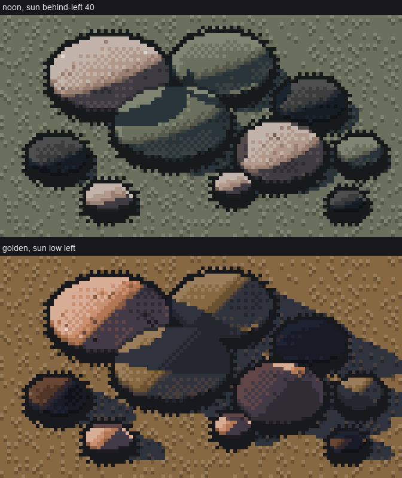
61. elements/cobbles/img/stage4_nestled.pngBash: cd ~/work/pixelart-studies/elements/cobbles; python3 - <<'EOF' s=open('scene.py').read() a=s.index('def paint_ground_gravel'); new='''def paint_ground_gravel(cv, info, rng, grain=
cd ~/work/pixelart-studies/elements/cobbles; python3 - <<'EOF'
s=open('scene.py').read()
a=s.index('def paint_ground_gravel');
new='''def paint_ground_gravel(cv, info, rng, grain=0.18, gap_px=2.5):
"""the gravel between cobbles: lit TURN with sparse pebble ticks (a light pixel over a dark
one); in cast shadow SH/SH_LIGHT. Darkness only where the ground is really occluded:
* CONTACT on the row(s) right under a stone's bottom (the stone sits IN the gravel),
* narrow gaps between two stones (both within gap_px) are CONTACT/SH_DARK pockets.
No halo round the top of a stone: against lit gravel its crown is found by value alone."""
ground = info['ground']
H, W = ground.shape
lit = np.full((H, W), TURN)
r = rng.random((H, W))
peb = (r < grain) & ~shift(r < grain, 0, 1) & ~shift(r < grain, 1, 0)
lit = np.where(peb, FD, lit)
lit = np.where(shift(peb, 0, 1) & ~peb, EDGE, lit)
sh = np.where(peb, SH_LIGHT, SH)
sh = np.where(shift(peb, 0, 1) & ~peb, SH_DARK, sh)
base = np.where(cv.shadow, sh, lit)
# gaps: distance to the nearest and to the second-nearest stone
ds = [ndi.distance_transform_edt(~info['vis'][i]) for i in info['order']]
if len(ds) >= 2:
D = np.sort(np.stack(ds), 0)
gap = (D[1] <= gap_px) & ground
deep = (D[1] <= gap_px * 0.6) & ground
base = np.where(gap, np.minimum(base, ordered(np.full((H, W), 0.5), (CONTACT, SH_DARK))), base)
base = np.where(deep, CONTACT, base)
# contact under each stone's bottom run
for i in info['order']:
m = info['vis'][i]
e = edge_dist_down(m)
below = shift(m & (e == 0), 0, 1) & ground
base = np.where(below, CONTACT, base)
below2 = shift(below, 0, 1) & ground & ~below
base = np.where(below2, np.minimum(base, SH_DARK), base)
cv.step[ground] = base[ground]
'''
s=s[:a]+new
open('scene.py','w').write(s)
EOF
nice python3 stage4.py 2>&1 | grep -v Warn | tail -5
# output:
(Bash completed with no output)Read: elements/cobbles/img/stage4_nestled.png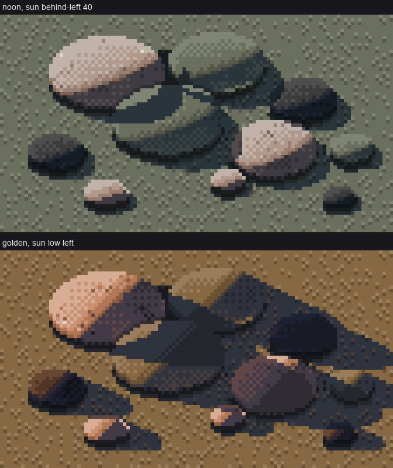
62. elements/cobbles/img/stage4_nestled.pngBash: cd ~/work/pixelart-studies/elements/cobbles; python3 - <<'EOF' s=open('palette.py').read() s=s.replace(" 'sandstone': dict(L_fl=70, L_sh=30, tint=(65, 16))}"," 'sands
cd ~/work/pixelart-studies/elements/cobbles; python3 - <<'EOF'
s=open('palette.py').read()
s=s.replace(" 'sandstone': dict(L_fl=70, L_sh=30, tint=(65, 16))}"," 'sandstone': dict(L_fl=70, L_sh=30, tint=(65, 16)),\n 'gravel': dict(L_fl=66, L_sh=27, tint=(70, 4))}")
s=s.replace(" return ramp('greywacke', hour)"," return ramp('gravel', hour)")
s+='''
WATER = {'noon': dict(sky=(250, 22), L=(28, 40, 52, 62, 72, 86)),
'golden': dict(sky=(280, 18), L=(26, 38, 50, 62, 74, 88)),
'overcast': dict(sky=(230, 8), L=(30, 42, 54, 64, 74, 86)),
'morning': dict(sky=(245, 20), L=(28, 40, 52, 62, 72, 86)),
'dusk': dict(sky=(310, 18), L=(22, 32, 44, 56, 68, 80))}
def water_ramp(hour='noon', silt=0.35):
"""glacial water: the sky's hue, value-compressed, with a milky silt tint (glacial flour)
pulling the darks toward teal-grey. 6 steps: 0 deep/under-bank dark .. 5 sky glint."""
w = WATER[hour]
out = []
for i, L in enumerate(w['L']):
ab = hue(*w['sky']) * (0.5 + 0.1 * i) * (1 - silt) + hue(200, 10) * silt
out.append(lab_to_rgb(np.array([L, *ab])))
return [tuple(int(c) for c in x) for x in out]
'''
open('palette.py','w').write(s)
EOF
echo ok
# output:
okBash: cd ~/work/pixelart-studies/elements/cobbles; cat > water.py <<'EOF' """water.py -- stones at the waterline (stage 4b / 6): submerged parts, the lapping line, wet darkening with a s
cd ~/work/pixelart-studies/elements/cobbles; cat > water.py <<'EOF'
"""water.py -- stones at the waterline (stage 4b / 6): submerged parts, the lapping line,
wet darkening with a sharp glint, and the reflection.
Rules (Ferrari c_stones / master-copy C4 / analysis 1.9, and the Kuban + Hope photos):
* the water surface is horizontal ROWS: a base step, sparse 1-row dash lines one step lighter;
* a stone meets the water in a FLAT run; right under it a 1-px LAP line of light (the film of
water climbing the stone catches the sky), broken where ripples cross;
* the stone is WET in a band above the waterline (darker, more saturated ramp) and its lit
side carries a 1-3 px glint (near white) -- the only pure light on a wet stone;
* the submerged part is seen through the water: a darker ghost of the stone, 1-2 steps
above the water's darkest, fading with depth;
* the reflection is an exact mirror, value-compressed (lights drop, darks stay), broken into
1-row streaks with gaps, shorter than the stone (you see the underside).
"""
import numpy as np
from scipy import ndimage as ndi
from stone import shift, edge_dist_down, CONTACT, SH_DARK, SH, SH_LIGHT, EDGE, TURN, FD, FL, TOP
W_DEEP, W_DARK, W_MID, W_BASE, W_LIGHT, W_GLINT = range(6)
def apply_water(cv, info, yw, rng, wet_rows=3, depth_fade=4, dash=0.06, reflect=True):
"""yw: array (W,) water-surface row per column; pixels with y > yw are water."""
H, W = cv.H, cv.W
yy = np.arange(H)[:, None]
water = yy > yw[None, :]
stone = info['anyst']
step = cv.step.copy()
# ---- wet band on stones above the waterline
wetband = stone & ~water & (yy > yw[None, :] - wet_rows)
cv.wet[wetband] = 1
# a wet stone's glint: its brightest lit pixels near the top of the wet part become TOP
for i in info['order']:
m = info['vis'][i] & ~water
if (m & wetband).any() and (m & (step >= FD)).any():
cv.wet[m] = 1 # the whole visible stone is wet at the edge of the water
lit = m & (step >= FL)
if lit.sum() >= 2:
ys, xs = np.nonzero(lit)
k = np.argmin(ys + 0.3 * xs) # highest, toward the light (left)
g = np.zeros_like(m); g[ys[k], xs[k]] = True
if lit.sum() > 12:
g |= shift(g, 1, 0) & lit
cv.step[g] = TOP
# ---- water body
wv = np.full((H, W), W_BASE)
rows = rng.random(H) < 0.35
dashes = (rng.random((H, W)) < dash) & rows[:, None]
dashes = dashes | (shift(dashes, 1, 0) & (rng.random((H, W)) < 0.7))
wv = np.where(dashes, W_LIGHT, wv)
# submerged stone ghosts
sub = stone & water
depth = yy - yw[None, :]
ghost = np.where(step >= FD, W_MID, W_DARK)
ghost = np.where(depth > depth_fade, np.minimum(ghost + 1, W_BASE), ghost)
wv = np.where(sub, ghost, wv)
# reflection of what stands above the water (mirror about the surface row)
if reflect:
src = (2 * yw[None, :] - yy).astype(int)
ok = water & (src >= 0) & (src < H)
srcc = np.clip(src, 0, H - 1)
xs = np.broadcast_to(np.arange(W)[None, :], (H, W))
refl_st = stone[srcc, xs] & ok & ~sub
sv = step[srcc, xs]
rv = np.where(sv >= FL, W_MID, np.where(sv >= EDGE, W_DARK, W_DEEP))
cut = (rng.random(H) < 0.3)[:, None] | (rng.random((H, W)) < 0.08)
refl = refl_st & ~cut & (depth <= 0.7 * (yw[None, :] - np.where(stone, yy, H)).clip(0) + 99)
wv = np.where(refl, rv, wv)
# ---- lap line: the first water row under a stone that stands in it
stand = stone & ~water
lap = water & shift(stand, 0, 1) & ~sub
lap_broken = lap & (rng.random((H, W)) > 0.15)
wv = np.where(lap_broken, W_GLINT, wv)
# dark film just below the lap (the stone's shadow in the water)
under = water & shift(lap, 0, 1) & ~sub
wv = np.where(under, np.minimum(wv, W_DARK), wv)
# stone pixels on the surface row: the wet contact run is the darkest stone step
cont = stand & shift(water, 0, -1)
cv.step[cont] = np.minimum(cv.step[cont], SH_DARK)
cv.water = water & ~(stand)
cv.step[cv.water] = wv[cv.water]
return cv
EOF
cat >> stage4.py <<'EOF'
def waterline(hour='noon', sun=(140, 40), W=112, H=62, seed=0):
from scene import Canvas, place, paint_ground_gravel
from water import apply_water
from palette import water_ramp
stones = [dict(x=24, y=34, D=30, rock='granite', seed=3), dict(x=58, y=38, D=34, rock='greywacke', seed=4),
dict(x=90, y=33, D=22, rock='basalt', seed=5), dict(x=40, y=44, D=14, rock='basalt', seed=6),
dict(x=76, y=46, D=12, rock='granite', seed=7), dict(x=104, y=44, D=10, rock='greywacke', seed=8)]
cv = Canvas(W, H)
info = place(cv, stones, sun=sun)
paint_ground_gravel(cv, info, np.random.default_rng(seed))
yw = np.full(W, 36) + (np.arange(W) // 37) % 2
apply_water(cv, info, yw, np.random.default_rng(seed + 1))
return cv.render(hour, water_pal=water_ramp(hour))
if __name__ == '__main__' and len(sys.argv) > 1 and sys.argv[1] == 'wet':
a = waterline()
b = waterline('golden', (160, 18))
save(vcat([label(up(a, 6), 'at the waterline, noon'), label(up(b, 6), 'golden')]), 'stage4_waterline.png')
EOF
nice python3 stage4.py wet 2>&1 | grep -v Warn | tail -5
# output:
(Bash completed with no output)Read: elements/cobbles/img/stage4_waterline.png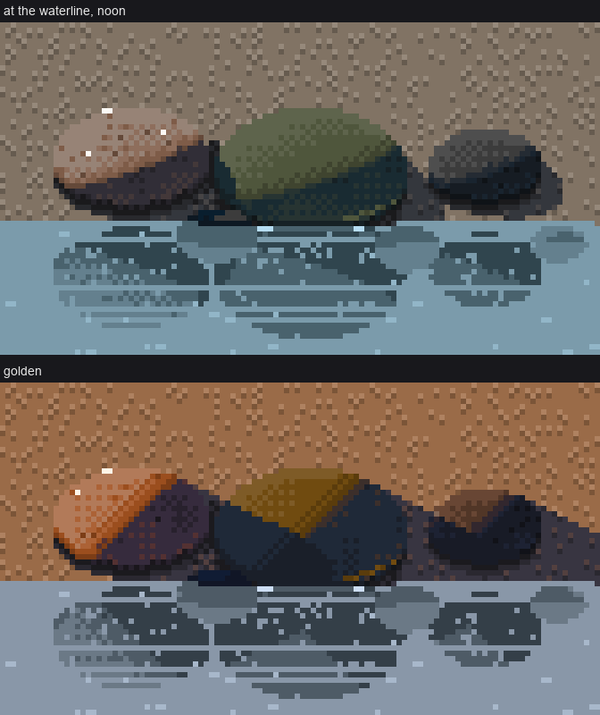
63. elements/cobbles/img/stage4_waterline.pngBash: cd ~/work/pixelart-studies/elements/cobbles; python3 - <<'EOF' s=open('water.py').read() s=s.replace(""" ys, xs = np.nonzero(lit) k = np.argmin(ys +
cd ~/work/pixelart-studies/elements/cobbles; python3 - <<'EOF'
s=open('water.py').read()
s=s.replace(""" ys, xs = np.nonzero(lit)
k = np.argmin(ys + 0.3 * xs) # highest, toward the light (left)""",""" from stone import edge_dist_up
inner = lit & (edge_dist_up(m) >= 2) & (edge_dist_down(m) >= 2)
if not inner.any():
continue
ys, xs = np.nonzero(inner)
k = np.argmin(ys + 0.5 * xs) # high on the lit face, toward the light""")
s=s.replace("if lit.sum() > 12:\n g |= shift(g, 1, 0) & lit","if lit.sum() > 30:\n g |= shift(g, 1, 0) & lit")
open('water.py','w').write(s)
p=open('palette.py').read()
p=p.replace("* (1 + 0.6 * wet)","* (1 + 0.25 * wet)")
open('palette.py','w').write(p)
t=open('stage4.py').read()
t=t.replace("yw = np.full(W, 36) + (np.arange(W) // 37) % 2","yw = np.full(W, 39) + (np.arange(W) // 37) % 2")
open('stage4.py','w').write(t)
EOF
nice python3 stage4.py wet 2>&1 | grep -v Warn | tail -5
# output:
(Bash completed with no output)Read: elements/cobbles/img/stage4_waterline.png64. elements/cobbles/img/stage4_waterline.png
Bash: cd ~/work/pixelart-studies/elements/cobbles; python3 - <<'EOF' s=open('water.py').read() a=s.index(' # ---- water body') new=''' # ---- water body wv = np.full((H, W), W_
cd ~/work/pixelart-studies/elements/cobbles; python3 - <<'EOF'
s=open('water.py').read()
a=s.index(' # ---- water body')
new=''' # ---- water body
wv = np.full((H, W), W_BASE)
rows = rng.random(H) < 0.35
dashes = (rng.random((H, W)) < dash) & rows[:, None]
dashes = dashes | (shift(dashes, 1, 0) & (rng.random((H, W)) < 0.7))
wv = np.where(dashes, W_LIGHT, wv)
depth = yy - yw[None, :]
xsg = np.broadcast_to(np.arange(W)[None, :], (H, W))
stand_all = np.zeros((H, W), bool)
for i in info['order']:
m = info['vis'][i]
full = info['masks'][i]
ys, xs = np.nonzero(full)
if len(ys) == 0:
continue
above = m & ~water
sub = m & water
if not sub.any():
continue # stone does not reach the water
# submerged part: a darker ghost, fading with depth
g = np.where(step >= FD, W_MID, W_DARK)
g = np.where(depth > depth_fade, np.minimum(g + 1, W_BASE), g)
wv = np.where(sub, g, wv)
if not above.any():
continue
stand_all |= above
# reflection: mirror of the part above water, value-compressed, half height, streaked
if reflect:
hgt = int(np.ptp(np.nonzero(above)[0])) + 1
src = (2 * yw[None, :] - yy + 1).astype(int)
ok = water & (depth >= 2) & (depth <= 1 + max(1, int(0.6 * hgt)))
srcc = np.clip(src, 0, H - 1)
r_st = above[srcc, xsg] & ok
sv = step[srcc, xsg]
rv = np.where(sv >= FL, W_MID, W_DARK)
cut = (rng.random(H) < 0.25)[:, None] | (rng.random((H, W)) < 0.1)
wv = np.where(r_st & ~cut & ~sub, rv, wv)
# nearer the stone the reflection is darkest (the underside)
wv = np.where(r_st & (depth == 2) & ~sub, W_DARK, wv)
# lap line: the water row right at the surface across the stone's width
lapx = above.any(0) & sub.any(0)
for x in np.nonzero(lapx)[0]:
y = int(yw[x]) + 1
if y < H and rng.random() > 0.12:
wv[y, x] = W_GLINT
cv.step[y, x] = W_GLINT
cv.mat[y, x] = -1
sub[y, x] = False
# mark as water
# the stone's last row above the water: wet contact, darkest stone step
cont = above & shift(water, 0, -1)
cv.step[cont] = np.minimum(cv.step[cont], SH_DARK)
cv.water = water
cv.step[water] = wv[water]
cv.mat[water] = -1
return cv
'''
s=s[:a]+new
open('water.py','w').write(s)
t=open('stage4.py').read()
t=t.replace(""" stones = [dict(x=24, y=34, D=30, rock='granite', seed=3), dict(x=58, y=38, D=34, rock='greywacke', seed=4),
dict(x=90, y=33, D=22, rock='basalt', seed=5), dict(x=40, y=44, D=14, rock='basalt', seed=6),
dict(x=76, y=46, D=12, rock='granite', seed=7), dict(x=104, y=44, D=10, rock='greywacke', seed=8)]""",
""" stones = [dict(x=14, y=26, D=16, rock='greywacke', seed=9), dict(x=70, y=24, D=18, rock='granite', seed=10),
dict(x=26, y=40, D=30, rock='granite', seed=3), dict(x=60, y=42, D=34, rock='greywacke', seed=4),
dict(x=92, y=40, D=22, rock='basalt', seed=5), dict(x=42, y=47, D=14, rock='basalt', seed=6),
dict(x=80, y=48, D=12, rock='granite', seed=7), dict(x=106, y=46, D=10, rock='greywacke', seed=8)]""")
open('stage4.py','w').write(t)
EOF
nice python3 stage4.py wet 2>&1 | grep -v Warn | tail -5
# output:
(Bash completed with no output)Read: elements/cobbles/img/stage4_waterline.png65. elements/cobbles/img/stage4_waterline.png
Bash: cd ~/work/pixelart-studies/elements/cobbles; python3 - <<'EOF' s=open('scene.py').read() s=s.replace(""" if (cen[i] - cen[j]) @ sund > 0: # i sits sunward of j
cd ~/work/pixelart-studies/elements/cobbles; python3 - <<'EOF'
s=open('scene.py').read()
s=s.replace(""" if (cen[i] - cen[j]) @ sund > 0: # i sits sunward of j
sh_j |= shads[i] & ~masks[i]""",""" if (cen[i] - cen[j]) @ sund > 0: # i sits sunward of j
# a shadow only climbs a neighbour as high as the caster is tall: small stones
# shade the foot of a big one, never its crown
ratio = stones[i]['D'] / stones[j]['D']
zj = low_part(masks[j], min(1.0, 0.6 * ratio))
sh_j |= shads[i] & ~masks[i] & zj""")
s=s.replace("def place(cv, stones,","""def low_part(m, frac):
\"\"\"the lower `frac` of a mask's rows (per column).\"\"\"
if frac >= 1.0:
return m
H, W = m.shape
out = np.zeros_like(m)
cols = np.nonzero(m.any(0))[0]
for x in cols:
ys = np.nonzero(m[:, x])[0]
cut = ys.max() - frac * (ys.max() - ys.min() + 1)
out[ys[ys >= cut], x] = True
return out
def place(cv, stones,""")
open('scene.py','w').write(s)
m=open('materials.py').read()
m=m.replace(" v = np.where(light & ~dark, step_up(v, 1), v)"," v = np.where(light & ~dark, np.minimum(step_up(v, 1), FL), v)")
open('materials.py','w').write(m)
p=open('palette.py').read()
p=p.replace("'greywacke': dict(L_fl=62, L_sh=25, tint=(150, 6)),","'greywacke': dict(L_fl=62, L_sh=25, tint=(165, 4)),")
open('palette.py','w').write(p)
w=open('water.py').read()
w=w.replace("if lit.sum() > 30:\n g |= shift(g, 1, 0) & lit","if lit.sum() > 30:\n g |= shift(g, 1, 0) & lit & inner")
open('water.py','w').write(w)
EOF
nice python3 stage4.py wet 2>&1 | grep -v Warn | tail -5; nice python3 stage4.py 2>&1 | grep -v Warn | tail -3
# output:
(Bash completed with no output)Read: elements/cobbles/img/stage4_waterline.png66. elements/cobbles/img/stage4_waterline.png
Bash: cd ~/work/pixelart-studies/elements/cobbles; python3 - <<'EOF' s=open('scene.py').read() old=s[s.index(" # ---- cast shadows on neighbours"):s.index(" # ---- ground: shadows
cd ~/work/pixelart-studies/elements/cobbles; python3 - <<'EOF'
s=open('scene.py').read()
old=s[s.index(" # ---- cast shadows on neighbours"):s.index(" # ---- ground: shadows and pockets")]
new=''' # bounding boxes for neighbour tests (pairs far apart are skipped)
def bbox(a):
ys, xs = np.nonzero(a)
return (ys.min(), ys.max(), xs.min(), xs.max()) if len(ys) else (0, -1, 0, -1)
bb = {i: bbox(shads[i] | masks[i]) for i in order}
def near(i, j, pad=3):
a, b = bb[i], bb[j]
return not (a[1] + pad < b[0] or b[1] + pad < a[0] or a[3] + pad < b[2] or b[3] + pad < a[2])
# ---- cast shadows on neighbours: stone j is shadowed by i if i is nearer the sun
cen = {i: np.array([stones[i]['x'], -stones[i]['y'] * 1.4]) for i in order} # screen up = away
for j in order:
sh_j = np.zeros((cv.H, cv.W), bool)
for i in order:
if i == j or not near(i, j):
continue
if (cen[i] - cen[j]) @ sund > 0:
ratio = stones[i]['D'] / stones[j]['D']
zj = low_part(masks[j], min(1.0, 0.6 * ratio))
sh_j |= shads[i] & ~masks[i] & zj
sel = vis[j] & sh_j
if sel.any():
cur = cv.step[sel]
cv.step[sel] = np.where(cur >= FL, SH_LIGHT, np.where(cur >= TURN, SH, SH_DARK))
cv.shadow |= sh_j & vis[j]
# ---- crevices: a farther stone's pixels touching a nearer stone's silhouette drop to a pocket
for i in order:
di = di2 = None
for j in order:
if stones[j]['y'] >= stones[i]['y'] or not near(i, j, 2):
continue
if di is None:
di = ndi.binary_dilation(vis[i], CROSS)
di2 = ndi.binary_dilation(di, CROSS)
touch = vis[j] & di
touch2 = vis[j] & di2 & ~touch
cv.step[touch] = np.minimum(cv.step[touch], SH_DARK)
cv.step[touch2] = np.minimum(cv.step[touch2], np.maximum(cv.step[touch2] - 2, SH))
'''
s=s.replace(old,new)
open('scene.py','w').write(s)
EOF
grep -n "ds = \[ndi" scene.py
# output:
186: ds = [ndi.distance_transform_edt(~info['vis'][i]) for i in info['order']]Write: elements/cobbles/bar.py
"""bar.py -- a gravel bar surface: many cobbles as one mass (stage 5), its edges (stage 6).
Size in pixels = world size (m) x scale(row) (scale grows toward the viewer). World size is
sorted along the bar: coarse at the HEAD (upstream end), fine at the TAIL. Each stone falls
into one of three mark classes by its pixel size -- the hand-off between them is the lesson:
D >= 5 px a STONE: full stone.py painter (face, crescent, contact, crevices, shadows)
2 <= D < 5 a TICK: a mini-lozenge stamp -- light top row, dark bottom row, 45 deg ends
(Ferrari's shore stones), lit/dark by the sun side; no dither
D < 2 GRAIN: the stones are below a pixel; the surface is a stipple of 2-3 adjacent
steps whose light-pixel share carries the lit/shadow mix and whose contrast
falls with distance (farther = closer steps, finally flat)
Stones are packed back to front on a jittered grid so they touch and overlap (a bar is a
clast-supported pile, not stones sprinkled on sand); the gaps show the finer matrix.
"""
import numpy as np
from scipy import ndimage as ndi
from stone import ordered, shift, CONTACT, SH_DARK, SH, SH_LIGHT, EDGE, TURN, FD, FL, TOP
from scene import Canvas, place, paint_ground_gravel, ROCK_IDS
ROCK_MIX = [('greywacke', 0.55), ('granite', 0.25), ('basalt', 0.2)]
def pick_rock(rng, mix=ROCK_MIX):
r = rng.random()
acc = 0
for k, p in mix:
acc += p
if r < acc:
return k
return mix[-1][0]
def tick_stamp(cv, x, y, D, rock, sun_left, rng):
"""a 2-4 px stone: rows [light top] [mid/dark body] [dark bottom], ends clipped at 45 deg."""
w = max(2, int(round(D)))
h = max(1, int(round(D * 0.6)))
x0 = int(round(x - w / 2)); y0 = int(round(y - h))
for r in range(h + 1):
for c in range(w):
if (r == 0 or r == h) and (c == 0 or c == w - 1) and w >= 3:
continue # 45-degree ends
X, Y = x0 + c, y0 + r
if not (0 <= X < cv.W and 0 <= Y < cv.H):
continue
if r == 0:
st = FL
elif r == h:
st = CONTACT if rng.random() < 0.7 else SH_DARK # the pocket under the tick
cv.step[Y, X] = st; cv.mat[Y, X] = -1
continue
else:
st = FD if r < h - 1 else EDGE
# the side away from the sun turns
if (c == w - 1 and sun_left) or (c == 0 and not sun_left):
st = min(st, TURN) if r > 0 else FD
cv.step[Y, X] = st
cv.mat[Y, X] = ROCK_IDS[rock]
def grain_fill(cv, region, contrast, lit_share, rng, shadow=None):
"""sub-pixel gravel: a stipple of adjacent steps. contrast in 0..1 (1 = near), lit_share =
fraction of light pixels. In cast shadow the same stipple on the shadow family."""
H, W = cv.H, cv.W
r = rng.random((H, W))
# clumpy (2x1 pebbles read better than white noise): light pixel with a dark one below
light = r < lit_share
dark = shift(light, 0, 1) & ~light & (rng.random((H, W)) < contrast)
mid = TURN
lo = np.where(contrast > 0.5, EDGE, TURN)
hi = np.where(contrast > 0.35, FD, TURN)
st = np.where(light, hi, np.where(dark, lo, mid))
if shadow is not None:
st_sh = np.where(light, SH_LIGHT, np.where(dark, SH_DARK, SH))
st = np.where(shadow, st_sh, st)
cv.step[region] = st[region]
cv.mat[region] = -1
def bar(W=240, H=140, sun=(140, 40), hour='noon', seed=0, head_m=0.25, tail_m=0.04,
px_per_m_far=18.0, px_per_m_near=150.0, density=1.0, horizon=0):
"""paint a bar surface filling the canvas. Rows near the top are far."""
rng = np.random.default_rng(seed)
cv = Canvas(W, H)
scale = lambda y: px_per_m_far + (px_per_m_near - px_per_m_far) * (max(y, 0) / H) ** 1.3
stones, ticks = [], []
y = horizon + 1.0
while y < H + 6:
s_row = scale(y)
x = rng.uniform(-4, 2)
row_max = 0
while x < W + 4:
t = np.clip(x / W, 0, 1)
size_m = np.exp(np.log(head_m) * (1 - t) + np.log(tail_m) * t) * np.exp(rng.normal(0, 0.45))
D = size_m * s_row
if D >= 5:
stones.append(dict(x=x + D / 2, y=y + rng.uniform(-0.3, 0.3) * D * 0.4, D=D, rock=pick_rock(rng),
seed=int(rng.integers(1e6)), yaw=rng.uniform(-40, 40),
elong=rng.uniform(1.15, 1.6), flat=rng.uniform(0.5, 0.75)))
elif D >= 2:
ticks.append((x + D / 2, y, D))
x += max(1.5, D * rng.uniform(0.75, 1.05) / density)
row_max = max(row_max, D)
# rows advance by the typical stone height at this depth
typ = np.exp(np.log(head_m) * 0.5 + np.log(tail_m) * 0.5) * s_row
y += max(1.0, 0.45 * min(typ, 40))
# --- grain everywhere first (the matrix), then ticks, then real stones on top
region = np.ones((H, W), bool)
yy = np.arange(H)[:, None] * np.ones((1, W))
contrast = np.clip((scale(yy) - px_per_m_far) / (60.0), 0.15, 1)
grain_fill(cv, region, contrast, 0.3, rng)
sun_left = 90 < sun[0] < 270
for (x, y, D) in ticks:
tick_stamp(cv, x, y, D, pick_rock(rng), sun_left, rng)
stones = [s for s in stones if -20 < s['x'] < W + 20 and s['y'] < H + 20]
info = None
if stones:
base_step, base_mat = cv.step.copy(), cv.mat.copy()
info = place(cv, stones, sun=sun)
# restore the matrix/ticks where no stone landed, then add contact/gap pockets
g = info['ground']
cv.step[g] = base_step[g]; cv.mat[g] = base_mat[g]
pockets(cv, info)
return cv, info
def pockets(cv, info, gap_px=2.0):
g = info['ground']
from stone import edge_dist_down
anyst = info['anyst']
# contact under stones and dark wedges in narrow gaps
for i in info['order']:
m = info['vis'][i]
e = edge_dist_down(m)
below = shift(m & (e == 0), 0, 1) & g
cv.step[below] = CONTACT
close = ndi.binary_closing(anyst, np.ones((3, 3), bool), iterations=1) & g
cv.step[close] = np.minimum(cv.step[close], SH_DARK)
# cast shadow on the matrix
sh = cv.shadow & g
cv.step[sh] = np.where(cv.step[sh] >= FD, SH_LIGHT, np.where(cv.step[sh] >= TURN, SH, np.minimum(cv.step[sh], SH_DARK)))
Bash: cd ~/work/pixelart-studies/elements/cobbles; cat > stage5.py <<'EOF' """stage5.py -- a bar surface: size sorting head->tail, dissolving with distance.""" import sys, time sys.path.
cd ~/work/pixelart-studies/elements/cobbles; cat > stage5.py <<'EOF'
"""stage5.py -- a bar surface: size sorting head->tail, dissolving with distance."""
import sys, time
sys.path.insert(0, __file__.rsplit('/', 1)[0])
import numpy as np
from bar import bar
from util import *
if __name__ == '__main__':
t = time.time()
cv, info = bar(seed=1)
img = cv.render('noon')
print('time', time.time() - t, 'stones', len(info['order']) if info else 0)
save(label(up(img, 4), 'bar surface: head (left, coarse) -> tail (right, fine); far rows at top. noon'), 'stage5_bar.png')
save(label(up(img[70:140, 0:120], 8), 'near head, 8x'), 'stage5_bar_zoom_head.png')
save(label(up(img[0:50, 120:240], 8), 'far tail, 8x'), 'stage5_bar_zoom_far.png')
EOF
nice python3 stage5.py 2>&1 | grep -v Warn | tail -3
# output:
scale = lambda y: px_per_m_far + (px_per_m_near - px_per_m_far) * (max(y, 0) / H) ** 1.3
^^^^^^^^^
ValueError: The truth value of an array with more than one element is ambiguous. Use a.any() or a.all()Bash: cd ~/work/pixelart-studies/elements/cobbles; sed -i '' 's/(max(y, 0) \/ H) \*\* 1.3/(np.maximum(y, 0) \/ H) ** 1.3/' bar.py; nice python3 stage5.py 2>&1 | grep -v Warn | tail -3
cd ~/work/pixelart-studies/elements/cobbles; sed -i '' 's/(max(y, 0) \/ H) \*\* 1.3/(np.maximum(y, 0) \/ H) ** 1.3/' bar.py; nice python3 stage5.py 2>&1 | grep -v Warn | tail -3 # output: Command did not complete within its 120s timeout and was moved to the background (ID: bcrsuqgdr). Output is being written to: (tmp) You will be notified when it completes. To check interim output, use Read on that file path. Session cwd remains ~/work/pixelart-studies/transfer; directory changes made by the backgrounded command do not apply to subsequent commands.
Read: elements/cobbles/img/stage5_bar.pngBash: sleep 60; cat (tmp) | grep -v Warn | tail
sleep 60; cat (tmp) | grep -v Warn | tail # output: <tool_use_error>Blocked: sleep 60 followed by: cat (tmp) grep -v Warn tail. To wait for a condition, use Monitor with an until-loop (e.g. `until <check>; do sleep 2; done`). To wait for a command you started, use run_in_background: true. Do not chain shorter sleeps to work around this block.</tool_use_error>
Meanwhile I'll make geometry resolution adaptive.
Bash: cd ~/work/pixelart-studies/elements/cobbles; grep -n "cb.stone_points(D" stone.py; sed -i '' 's/P, Nw, hgt = cb.stone_points(D, elong, flat, n, lump, sink, yaw, rng)/P, Nw, hgt = c
cd ~/work/pixelart-studies/elements/cobbles; grep -n "cb.stone_points(D" stone.py; sed -i '' 's/P, Nw, hgt = cb.stone_points(D, elong, flat, n, lump, sink, yaw, rng)/P, Nw, hgt = cb.stone_points(D, elong, flat, n, lump, sink, yaw, rng, res=int(np.clip(D * 5, 40, 220)))/' stone.py; grep -n "res=int" stone.py # output: 350: P, Nw, hgt = cb.stone_points(D, elong, flat, n, lump, sink, yaw, rng) 350: P, Nw, hgt = cb.stone_points(D, elong, flat, n, lump, sink, yaw, rng, res=int(np.clip(D * 5, 40, 220)))
Bash: cd ~/work/pixelart-studies/elements/cobbles; pkill -f stage5.py; python3 -c " import sys,time; sys.path.insert(0,'.') import numpy as np from stone import cobble_geom, paint_stone
cd ~/work/pixelart-studies/elements/cobbles; pkill -f stage5.py; python3 -c " import sys,time; sys.path.insert(0,'.') import numpy as np from stone import cobble_geom, paint_stone t=time.time() for D in [6,10,20,35]: t=time.time(); g=cobble_geom(D,seed=1); print(D, time.time()-t) " 2>/dev/null # output: 6 0.14104914665222168 10 0.3868250846862793 20 0.31825709342956543 35 0.18758702278137207
Bash: cd ~/work/pixelart-studies/elements/cobbles; python3 -c " import sys,time,cProfile,pstats; sys.path.insert(0,'.') from stone import cobble_geom cProfile.run('cobble_geom(12,seed=1)
cd ~/work/pixelart-studies/elements/cobbles; python3 -c "
import sys,time,cProfile,pstats; sys.path.insert(0,'.')
from stone import cobble_geom
cProfile.run('cobble_geom(12,seed=1)','/tmp/p.out' if False else 'scratch/p.out')
pstats.Stats('scratch/p.out').sort_stats('cumtime').print_stats(8)
" 2>/dev/null | tail -20
# output:
Fri Sep 25 21:45:05 2026 scratch/p.out
18733 function calls (18278 primitive calls) in 0.216 seconds
Ordered by: cumulative time
List reduced from 478 to 8 due to restriction <8>
ncalls tottime percall cumtime percall filename:lineno(function)
44/1 0.003 0.000 0.218 0.218 {built-in method builtins.exec}
1 0.001 0.001 0.218 0.218 ~/work/pixelart-studies/elements/cobbles/stone.py:341(cobble_geom)
3 0.161 0.054 0.161 0.054 ~/work/pixelart-studies/elements/cobbles/cobble.py:46(project)
1 0.003 0.003 0.067 0.067 ~/work/pixelart-studies/elements/cobbles/cobble.py:101(rasterize)
30/2 0.000 0.000 0.046 0.023 <frozen importlib._bootstrap>:1349(_find_and_load)
30/2 0.000 0.000 0.046 0.023 <frozen importlib._bootstrap>:1304(_find_and_load_unlocked)
29/2 0.000 0.000 0.046 0.023 <frozen importlib._bootstrap>:911(_load_unlocked)
2 0.001 0.000 0.045 0.023 ~/work/pixelart-studies/elements/cobbles/stone.py:130(convex_clean)Bash: cd ~/work/pixelart-studies/elements/cobbles; OPENBLAS_NUM_THREADS=1 OMP_NUM_THREADS=1 MKL_NUM_THREADS=1 python3 -c " import sys,time; sys.path.insert(0,'.') from stone import cobbl
cd ~/work/pixelart-studies/elements/cobbles; OPENBLAS_NUM_THREADS=1 OMP_NUM_THREADS=1 MKL_NUM_THREADS=1 python3 -c " import sys,time; sys.path.insert(0,'.') from stone import cobble_geom for D in [6,12,35]: t=time.time(); g=cobble_geom(D,seed=1); print(D, time.time()-t) " 2>/dev/null # output: 6 0.4606022834777832 12 0.0169370174407959 35 0.056876182556152344
Bash: cd ~/work/pixelart-studies/elements/cobbles; cat > run.sh <<'EOF' #!/bin/sh # single-threaded BLAS: numpy's threaded matmul on small arrays is 10x SLOWER here (contention) export O
cd ~/work/pixelart-studies/elements/cobbles; cat > run.sh <<'EOF'
#!/bin/sh
# single-threaded BLAS: numpy's threaded matmul on small arrays is 10x SLOWER here (contention)
export OPENBLAS_NUM_THREADS=1 OMP_NUM_THREADS=1 MKL_NUM_THREADS=1 VECLIB_MAXIMUM_THREADS=1
cd "$(dirname "$0")" && exec nice -n 10 python3 "$@"
EOF
chmod +x run.sh; ./run.sh stage5.py 2>&1 | grep -v Warn | tail -3
# output:
V[y0:y1, x0:x1] = local[y0 - oy:y1 - oy, x0 - ox:x1 - ox]
~^^^^^^^^^^^^^^
ValueError: could not broadcast input array from shape (5,9) into shape (5,0)Bash: cd ~/work/pixelart-studies/elements/cobbles; python3 - <<'EOF' s=open('scene.py').read() s=s.replace(" V[y0:y1, x0:x1] = local[y0 - oy:y1 - oy, x0 - ox:x1 - ox]\n sel
cd ~/work/pixelart-studies/elements/cobbles; python3 - <<'EOF'
s=open('scene.py').read()
s=s.replace(" V[y0:y1, x0:x1] = local[y0 - oy:y1 - oy, x0 - ox:x1 - ox]\n sel = masks[i]"," if y1 > y0 and x1 > x0:\n V[y0:y1, x0:x1] = local[y0 - oy:y1 - oy, x0 - ox:x1 - ox]\n sel = masks[i]")
open('scene.py','w').write(s)
EOF
./run.sh stage5.py 2>&1 | grep -v Warn | tail -3
# output:
time 49.93313479423523 stones 883Read: elements/cobbles/img/stage5_bar.png 67. elements/cobbles/img/stage5_bar.png
67. elements/cobbles/img/stage5_bar.png
Read: elements/cobbles/img/stage5_bar_zoom_far.png 68. elements/cobbles/img/stage5_bar_zoom_far.png
68. elements/cobbles/img/stage5_bar_zoom_far.png
Bash: cd ~/work/pixelart-studies/elements/cobbles; python3 - <<'EOF' s=open('bar.py').read() s=s.replace(""" mid = TURN lo = np.where(contrast > 0.5, EDGE, TURN) hi = np.where
cd ~/work/pixelart-studies/elements/cobbles; python3 - <<'EOF'
s=open('bar.py').read()
s=s.replace(""" mid = TURN
lo = np.where(contrast > 0.5, EDGE, TURN)
hi = np.where(contrast > 0.35, FD, TURN)""",""" # the matrix of a clast-supported bar is mostly VOID between grains: dark, with lit grain tops
mid = np.where(contrast > 0.5, EDGE, TURN)
lo = np.where(contrast > 0.5, SH_LIGHT, EDGE)
hi = np.where(contrast > 0.3, FD, TURN)""")
s=s.replace("st = CONTACT if rng.random() < 0.7 else SH_DARK # the pocket under the tick","st = SH_DARK if rng.random() < 0.5 else SH_LIGHT # the pocket under the tick")
s=s.replace(" typ = np.exp(np.log(head_m) * 0.5 + np.log(tail_m) * 0.5) * s_row\n y += max(1.0, 0.45 * min(typ, 40))",
" typ = np.exp(np.log(head_m) * 0.3 + np.log(tail_m) * 0.7) * s_row\n y += max(1.0, 0.4 * min(typ, 30))")
s=s.replace("grain_fill(cv, region, contrast, 0.3, rng)","grain_fill(cv, region, contrast, 0.38, rng)")
open('bar.py','w').write(s)
EOF
./run.sh stage5.py 2>&1 | grep -v Warn | tail -3
# output:
time 68.59676814079285 stones 1353Read: elements/cobbles/img/stage5_bar.png 69. elements/cobbles/img/stage5_bar.png
69. elements/cobbles/img/stage5_bar.png
Read: elements/cobbles/img/stage5_bar_zoom_far.png70. elements/cobbles/img/stage5_bar_zoom_far.png
Bash: cd ~/work/pixelart-studies/elements/cobbles; sed -i '' "s/'gravel': dict(L_fl=66, L_sh=27, tint=(70, 4))}/'gravel': dict(L_fl=60, L_sh=25, tint=(120, 4))}/" palette.py; sed -
cd ~/work/pixelart-studies/elements/cobbles; sed -i '' "s/'gravel': dict(L_fl=66, L_sh=27, tint=(70, 4))}/'gravel': dict(L_fl=60, L_sh=25, tint=(120, 4))}/" palette.py; sed -i '' "s/px_per_m_far=18.0, px_per_m_near=150.0/px_per_m_far=18.0, px_per_m_near=110.0/" bar.py; ./run.sh stage5.py 2>&1 | grep -v Warn | tail -3 # output: time 68.34502124786377 stones 1524
Read: elements/cobbles/img/stage5_bar.png71. elements/cobbles/img/stage5_bar.png
Bash: cd ~/work/pixelart-studies/elements/cobbles; cat CRITIQUE.md | head -30; sed -i '' "s/ROCK = {'granite': dict(L_fl=74, L_sh=30, tint=(40, 7)),/ROCK = {'granite': dict(L_fl=72,
cd ~/work/pixelart-studies/elements/cobbles; cat CRITIQUE.md | head -30; sed -i '' "s/ROCK = {'granite': dict(L_fl=74, L_sh=30, tint=(40, 7)),/ROCK = {'granite': dict(L_fl=72, L_sh=30, tint=(45, 4)),/" palette.py
# output:
# Critique (newest first)
## Round 3 — 2026-09-25 21:46 — stages 2–4: `img/stage2_materials.png`, `stage3_colour_hours.png`, `stage4_nestled.png`, `stage4_waterline.png`
**REVISE on all of them.** You've gone from stage 1 to stage 4 in one round, and stages 0 and 1 are still carrying their round-2 problems. Every later stage inherits them. (Your call, but I'd go back.)
What's working:
- **Stage 3 colour.** The three materials are distinguishable by hue and value alone (pink-grey granite, olive greywacke with a quartz vein, blue-black basalt). The hour palettes shift the lit colour and cool the shadows sensibly. Golden and dusk have the right warmth, and the shadow family stays separate from the lit family.
- **Stage 4 waterline.** The dead-flat waterline with a lighter lip is correct Ferrari grammar.
What's wrong, biggest first:
1. **Every stone is still the same perfect ellipse** (stages 2, 3, 4), just scaled. In `stage4_nestled.png` that makes the group read as eggs on a tray. River cobbles in `refs/close/commons_Hope_river_cobbles_*` and `commons_Cobbles_in_Kuban_River_*` are flattened, lopsided discs, rounded triangles and loaves, with flat tops and straight-ish undersides. This was the round-2 note and it's now the most visible problem at every stage.
2. **"Nestled" isn't nestled.** The stones sit apart on a sand field with gaps between them. In your refs, cobbles pack edge to edge, overlap, and are half-buried, with small gravel and dark pockets filling the joints. The mass reads through overlap and contact shadows between stones, not through cast shadows on open sand. Ferrari's V19 pile (your stage 0) is exactly this: stones lapping stones, black pockets where they meet.
3. **Cast shadows fall as ruled polygons across other stones.** In "noon" the pink stone throws a flat dark strip with straight edges across the middle green stone; in "golden" long shadows cross two or three stones as one flat-tone band with ruled diagonal edges. A shadow falling across a curved stone bends with its surface and takes that stone's own shadow colour.
4. **The ground is random speckle** (stage 4): isotropic noise at one scale, which reads as sandpaper. Fine gravel between cobbles has small stones with light tops and dark bottoms (the SYNTHESIS "stone" mark at 2–3 px).
5. **Waterline reflections** (`stage4_waterline.png`). The reflection is a blue-grey checker blob that doesn't mirror the stones' shapes or colours. Ferrari's reflection (SYNTHESIS, master copy C4) is an exact mirror with a compressed range: lights drop, darks stay, the tint goes slightly cool, and there are horizontal dash rows. There's also a stray white 2 px block on the left stone (≈x=130, y=170 in both panels) and a black notch under the upper-left stone.
6. **Stage 2 material marks.** The granite's speckle is good. The greywacke's quartz vein is a perfectly straight 1 px line of even brightness, i.e. ruled. Veins wander, and they wrap round the form (bending at the terminator). On the Bash: cd ~/work/pixelart-studies/elements/cobbles; sed -n 30,60p CRITIQUE.md
cd ~/work/pixelart-studies/elements/cobbles; sed -n 30,60p CRITIQUE.md
# output:
### Stage 1
The staging is good: a flat ground, a cast shadow on a single tone, a 1 px contact line, and a size ladder. The small sizes from 6 px down read as pebbles.
What's wrong:
- **Outline: every stone is a perfect ellipse.** Look at your own photos in `stage1_compare.png`. The Kuban stone has a flattened top plane, one fatter end, and a nearly straight underside; the Hope stone is a rounded triangle. Ferrari's boulder has a faceted contour: short straight runs meeting at soft corners. A perfect ellipse is the iconic "egg" and the first thing a painter's eye rejects.
- **The terminator is a clean S-curve** ("sun behind-left", "sun low left"). It reads as a moon phase. His terminator (V19) is broken by planes, with a step where one facet turns away.
- **The lit face is a perforated grid.** At 40 px the light side is evenly spaced single dots of the lighter tone on a regular lattice, like pegboard. In his boulder the checker is dense in the core and sparse to absent on the brightest plane. Your stage 0 learned this; carry it over.
- **The 10 px stone** in every row reads as a little hat or box (light cap, hard black base). The 6 px and 4 px stones are better.
- No reflected light: the shadow side is one flat dark with checker. On sunny gravel the ground bounces light into the lower shadow side (see the Kuban photo's lower edge). Try one step lighter just above the contact line.
## Round 1 — 2026-09-25 21:22 — stage 0 master copy, `img/stage0_copy_v3.png` (V19 lit boulder)
**Verdict: REVISE** — close in drawing, not yet indistinguishable at 8×. (My read; you own the call. The bar I'm judging against is "a skilled pixel artist can't tell your crop from his at 8× except by subject".)
What's working:
- The main boulder's silhouette, its size, and the lit/shadow split are right. The dark lower rim sitting under the lit dome reads as a rounded stone at a glance.
- The snow wedges (white with a 1 px blue rim on stepped diagonals) are nearly his.
What gives it away, in order of how fast the eye catches it:
1. **The dither on the boulder is one uniform checker over the whole dome.** In his crop the checker is *patchy*: the upper-left crown is mostly flat mid-orange with only scattered checker, the checker thickens into the core toward the lower right, and there are 2–3 px flat islands inside it. Yours has the same 50% density edge to edge, which is exactly the "mechanical checker" the master-copy student hit in C1. Let density carry the turn (sparse on the crown, dense toward the terminator), and break it with small flat islands.
2. **The rim is a clean continuous ring.** His dark lower rim is chunky and uneven: 2–3 px thick at lower left, thinning to 1 px up the right side, with notches where the next stone overlaps. Yours runs at an even width, like an outline, and a mid-brown band sits inside it all the way round. That band is the most "drawn by a program" part of the copy.
3. **The shadow field (lower left) is one uniform dark checker.** His isBash: cd ~/work/pixelart-studies/elements/cobbles; sed -n 55,100p cobble.py
cd ~/work/pixelart-studies/elements/cobbles; sed -n 55,100p cobble.py
# output:
a = D / 2.0
b = a / elong
c = a * flat
th = np.linspace(-np.pi / 2, np.pi / 2, res)[:, None] # latitude
ph = np.linspace(-np.pi, np.pi, 2 * res, endpoint=False)[None, :]
e = 2.0 / n
def sgnpow(x, p):
return np.sign(x) * np.abs(x) ** p
X = a * sgnpow(np.cos(th), e) * sgnpow(np.cos(ph), e)
Y = b * sgnpow(np.cos(th), e) * sgnpow(np.sin(ph), e)
Z = c * sgnpow(np.sin(th), e) * np.ones_like(ph)
# lumps: a few low-order bumps in direction space (water-worn: broad, never sharp)
dirs = np.stack([np.cos(th) * np.cos(ph), np.cos(th) * np.sin(ph), np.sin(th) * np.ones_like(ph)], -1)
k = np.ones(dirs.shape[:2])
for _ in range(5):
v = unit(rng.normal(size=3))
k += lump * rng.normal() * np.exp((dirs @ v - 1) * 2.5)
# flatten the base a little (cobbles rest on a flat-ish face)
P = np.stack([X * k, Y * k, Z * k], -1)
P[..., 2] = np.where(P[..., 2] < 0, P[..., 2] * 0.8, P[..., 2])
# normals by finite differences on the parameter grid
dth = np.gradient(P, axis=0)
dph = np.roll(P, -1, axis=1) - np.roll(P, 1, axis=1)
N = np.cross(dph, dth)
nn = np.linalg.norm(N, axis=-1, keepdims=True)
N = N / np.maximum(nn, 1e-9)
# orient outward
out = np.sum(N * P, -1) < 0
N[out] *= -1
# poles: normals degenerate -> use position direction
bad = nn[..., 0] < 1e-6
N[bad] = unit_rows(P[bad] * [1 / a ** 2, 1 / b ** 2, 1 / c ** 2]) if bad.any() else N[bad]
yaw = np.radians(yaw_deg)
R = np.array([[np.cos(yaw), -np.sin(yaw), 0], [np.sin(yaw), np.cos(yaw), 0], [0, 0, 1]])
P = P @ R.T
N = N @ R.T
zmin = P[..., 2].min()
P[..., 2] -= zmin + sink * (P[..., 2].max() - zmin)
return P.reshape(-1, 3), N.reshape(-1, 3), c * 2 * (1 - sink)
def unit_rows(V):
return V / np.maximum(np.linalg.norm(V, axis=-1, keepdims=True), 1e-9)Bash: cd ~/work/pixelart-studies/elements/cobbles; python3 - <<'EOF' s=open('cobble.py').read() s=s.replace("def stone_points(D, elong=1.35, flat=0.5, n=2.4, lump=0.06, sink=0.12, yaw_de
cd ~/work/pixelart-studies/elements/cobbles; python3 - <<'EOF'
s=open('cobble.py').read()
s=s.replace("def stone_points(D, elong=1.35, flat=0.5, n=2.4, lump=0.06, sink=0.12, yaw_deg=0.0, rng=None, res=220):",
"def stone_points(D, elong=1.35, flat=0.5, n=2.4, lump=0.06, sink=0.12, yaw_deg=0.0, rng=None, res=220,\n facets=6, cut=(0.72, 0.92), asym=0.18, round_px=0.06):")
s=s.replace(""" yaw = np.radians(yaw_deg)
R = np.array""",""" # lopsided: one end fatter (eggs, loaves, rounded triangles -- never a perfect ellipse)
if asym:
g = rng.uniform(-asym, asym)
h = rng.uniform(-asym, asym) * 0.7
P = P * np.stack([1 + g * P[..., 0] / a, 1 + h * P[..., 0] / a + g * P[..., 1] / b * 0.5,
np.ones_like(P[..., 0])], -1)
# water-worn facets: planar cuts through the dome (a flat top plane always; a few side planes)
# soften the crease over a narrow band so worn edges stay rounded but planes stay flat
if facets:
Nf = N.copy()
dirs_c = [np.array([0.0, 0.0, 1.0])]
for _ in range(facets):
v = rng.normal(size=3); v[2] = abs(v[2]) * 0.8 + 0.1
dirs_c.append(unit(v))
for j, v in enumerate(dirs_c):
proj = P @ v
d = proj.max() * (rng.uniform(*cut) if j else rng.uniform(0.78, 0.9))
ex = proj - d
P = P - np.clip(ex, 0, None)[..., None] * v
w = np.clip(ex / (round_px * D + 1e-6), 0, 1)[..., None]
Nf = unit_rows(Nf * (1 - w) + v * w)
N = Nf
yaw = np.radians(yaw_deg)
R = np.array""")
open('cobble.py','w').write(s)
EOF
grep -n "def cobble_geom" -A3 stone.py | head; grep -n "cb.stone_points" stone.py
# output:
341:def cobble_geom(D, elong=1.35, flat=0.65, n=2.0, lump=0.12, sink=0.3, yaw=0.0, pitch=45.0,
342- sun=(135, 40), seed=0, pad=None):
343- """a real 3D cobble (lumpy flattened superellipsoid, sunk into the gravel) seen by an
344- orthographic camera pitched down. Returns dict(mask, N (screen normals), z (height 0..1),
350: P, Nw, hgt = cb.stone_points(D, elong, flat, n, lump, sink, yaw, rng, res=int(np.clip(D * 5, 40, 220)))Bash: cd ~/work/pixelart-studies/elements/cobbles; python3 - <<'EOF' s=open('stone.py').read() s=s.replace(""" x = np.clip(x, *P['face_clip']) # the lit surface turning""","""
cd ~/work/pixelart-studies/elements/cobbles; python3 - <<'EOF'
s=open('stone.py').read()
s=s.replace(""" x = np.clip(x, *P['face_clip'])
# the lit surface turning""",""" x = np.clip(x, *P['face_clip'])
# planes, not gradients: flat bands of FD and FL joined by a short checker seam, so the
# brightest plane is flat and the checker lives where the form turns (no pegboard)
if P.get('band', 0.45) is not None:
lo_ = np.floor(x); f_ = x - lo_; bw = P.get('band', 0.45)
x = lo_ + np.clip((f_ - (0.5 - bw / 2)) / bw, 0, 1) * 0.999
# the lit surface turning""")
s=s.replace(""" xs_ = np.where(e_dn == 0, 0.6, xs_)""",""" xs_ = np.where(e_dn == 0, 0.6, xs_)
# reflected light: the band just above the contact takes the bounce from the lit gravel
xs_ = np.where((e_dn >= 1) & (e_dn <= 2) & (size >= 10), np.maximum(xs_, 2.9), xs_)""")
open('stone.py','w').write(s)
EOF
./run.sh stage1.py 2>/dev/null; ./run.sh stage1.py cmp 2>/dev/null
# output:
(Bash completed with no output)Read: elements/cobbles/img/stage1_lights_sizes.png72. elements/cobbles/img/stage1_lights_sizes.png
Bash: cd ~/work/pixelart-studies/elements/cobbles; python3 - <<'EOF' s=open('materials.py').read() a=s.index('def greywacke_veins'); b=s.index('def basalt_marks') new='''def wander_line(
cd ~/work/pixelart-studies/elements/cobbles; python3 - <<'EOF'
s=open('materials.py').read()
a=s.index('def greywacke_veins'); b=s.index('def basalt_marks')
new='''def wander_line(m, rng):
"""a vein: 2-4 segments, each a clean ratio, joined end to end (it wanders, but every
segment is a clean pixel run), crossing the whole stone."""
ys, xs = np.nonzero(m)
y = ys.mean() + rng.normal() * np.ptp(ys) * 0.2
x = xs.min() - 1.0
ang0 = rng.uniform(-0.6, 0.6)
line = np.zeros_like(m)
choices = [0.0, 0.25, 1 / 3, 0.5, 1.0]
while x < xs.max() + 1:
seg = rng.integers(3, 8)
slope = choices[rng.integers(len(choices))] * (1 if ang0 + rng.normal() * 0.4 > 0 else -1)
for _ in range(seg):
x += 1; y += slope
yi, xi = int(round(y)), int(round(x))
if 0 <= yi < m.shape[0] and 0 <= xi < m.shape[1]:
line[yi, xi] = True
return line & m
def greywacke_veins(v, m, rng, size, n=None, lit=None):
if size < 10:
return v
n = n if n is not None else rng.choice([0, 1, 1, 2])
for _ in range(n):
ln = wander_line(m, rng) & (edge_dist_down(m) > 0)
# brighter in the light, one step in shadow, and broken here and there (the vein dives)
gap = rng.random(m.shape) < 0.12
k = np.where(lit if lit is not None else True, 2, 1)
v = np.where(ln & ~gap, step_up(v, 1) * 0 + np.where(k == 2, step_up(v, 2), step_up(v, 1)), v)
return v
'''
s=s[:a]+new+s[b:]
s=s.replace("v = greywacke_veins(v, m, rng, size)","v = greywacke_veins(v, m, rng, size, lit=lit)")
open('materials.py','w').write(s)
EOF
./run.sh stage2.py 2>&1 | grep -v Warn|tail -2; ./run.sh stage3.py 2>&1 | grep -v Warn|tail -2
# output:
(Bash completed with no output)Read: elements/cobbles/img/stage2_materials.png73. elements/cobbles/img/stage2_materials.png
Bash: cd ~/work/pixelart-studies/elements/cobbles; python3 - <<'EOF' s=open('water.py').read() s=s.replace(""" stand_all = np.zeros((H, W), bool)""",""" stand_all = np.zeros((H, W)
cd ~/work/pixelart-studies/elements/cobbles; python3 - <<'EOF'
s=open('water.py').read()
s=s.replace(""" stand_all = np.zeros((H, W), bool)""",""" stand_all = np.zeros((H, W), bool)
refl_px = np.zeros((H, W), bool)
refl_step = np.zeros((H, W), int)
refl_mat = np.full((H, W), -1)
mat0 = cv.mat.copy()""")
s=s.replace(""" rv = np.where(sv >= FL, W_MID, W_DARK)
cut = (rng.random(H) < 0.25)[:, None] | (rng.random((H, W)) < 0.1)
wv = np.where(r_st & ~cut & ~sub, rv, wv)
# nearer the stone the reflection is darkest (the underside)
wv = np.where(r_st & (depth == 2) & ~sub, W_DARK, wv)""",""" # an exact mirror in the stone's own ramp, range compressed: lights drop two steps,
# darks stay; broken by 1-row streaks of the water's lighter dash colour
comp = np.where(sv >= EDGE, np.maximum(sv - 2, SH_LIGHT), sv)
comp = np.where(depth == 2, np.minimum(comp, SH), comp) # the underside, darkest
cut = (rng.random(H) < 0.2)[:, None] | (rng.random((H, W)) < 0.06)
sel = r_st & ~cut & ~sub
refl_px |= sel
refl_step = np.where(sel, comp, refl_step)
refl_mat = np.where(sel, mat0[srcc, xsg], refl_mat)""")
s=s.replace(""" cv.water = water
cv.step[water] = wv[water]
cv.mat[water] = -1
return cv""",""" cv.water = water & ~refl_px
cv.step[cv.water] = wv[cv.water]
cv.mat[cv.water] = -1
cv.step[refl_px] = refl_step[refl_px]
cv.mat[refl_px] = refl_mat[refl_px]
cv.wet[refl_px] = 1
return cv""")
open('water.py','w').write(s)
t=open('stage4.py').read()
t=t.replace("""def cluster(sun=(140, 40), hour='noon', W=112, H=62, seed=0, stones=CLUSTER):
cv = Canvas(W, H)
info = place(cv, [dict(s) for s in stones], sun=sun)
paint_ground_gravel(cv, info, np.random.default_rng(seed))
return cv.render(hour)""","""def cluster(sun=(140, 40), hour='noon', W=112, H=62, seed=0, stones=None):
\"\"\"a nestled pile: stones packed edge to edge, overlapping, half-buried, the joints filled
with smaller stones, ticks and dark voids (bar.py packing at a fixed scale).\"\"\"
from bar import bar
cv, info = bar(W=W, H=H, sun=sun, seed=seed, head_m=0.22, tail_m=0.1, px_per_m_far=120,
px_per_m_near=150, density=1.15)
return cv.render(hour)""")
t=t.replace(""" stones = [dict(x=14, y=26, D=16, rock='greywacke', seed=9), dict(x=70, y=24, D=18, rock='granite', seed=10),""",""" stones = [dict(x=14, y=26, D=16, rock='greywacke', seed=9), dict(x=70, y=24, D=18, rock='granite', seed=10),
dict(x=40, y=30, D=20, rock='basalt', seed=21), dict(x=98, y=28, D=16, rock='granite', seed=22),""")
open('stage4.py','w').write(t)
EOF
./run.sh stage4.py 2>&1 | grep -v Warn|tail -2; ./run.sh stage4.py wet 2>&1 | grep -v Warn|tail -2
# output:
(Bash completed with no output)Read: elements/cobbles/img/stage4_nestled.pngRead: elements/cobbles/img/stage4_waterline.png74. elements/cobbles/img/stage4_waterline.png
 75. elements/cobbles/img/stage4_nestled.png
75. elements/cobbles/img/stage4_nestled.png
Bash: cd ~/work/pixelart-studies/elements/cobbles; sed -i '' "s/head_m=0.22, tail_m=0.1, px_per_m_far=120,/head_m=0.2, tail_m=0.09, px_per_m_far=95,/; s/px_per_m_near=150, density=1.15)/
cd ~/work/pixelart-studies/elements/cobbles; sed -i '' "s/head_m=0.22, tail_m=0.1, px_per_m_far=120,/head_m=0.2, tail_m=0.09, px_per_m_far=95,/; s/px_per_m_near=150, density=1.15)/px_per_m_near=110, density=1.15)/; s/ a = cluster()$/ a = cluster(sun=(140, 58))/" stage4.py; sed -i '' "s/label(up(a, 6), 'noon, sun behind-left 40')/label(up(a, 6), 'noon, sun behind-left 58')/" stage4.py; ./run.sh stage4.py 2>&1 | grep -v Warn|tail -2 # output: (Bash completed with no output)
Read: elements/cobbles/img/stage4_nestled.png76. elements/cobbles/img/stage4_nestled.png
Bash: cd ~/work/pixelart-studies/elements/cobbles; python3 - <<'EOF' s=open('water.py').read() s=s.replace(""" depth = yy - yw[None, :] xsg = np.broadcast_to""",""" depth = yy
cd ~/work/pixelart-studies/elements/cobbles; python3 - <<'EOF'
s=open('water.py').read()
s=s.replace(""" depth = yy - yw[None, :]
xsg = np.broadcast_to""",""" depth = yy - yw[None, :]
# shallows: the bed's gravel seen through clear water -- its lit grain tops as W_MID, voids
# as W_DARK, fading into the plain water colour over `shallow` rows (glacial silt)
if shallow:
bed = np.where(step >= FD, W_MID, np.where(step <= EDGE, W_DARK, W_BASE))
fade = rng.random((H, W)) < np.clip(depth / shallow, 0, 1)
wv = np.where(water & ~fade & ~stone, bed, wv)
xsg = np.broadcast_to""")
s=s.replace("def apply_water(cv, info, yw, rng, wet_rows=3, depth_fade=4, dash=0.06, reflect=True):","def apply_water(cv, info, yw, rng, wet_rows=3, depth_fade=4, dash=0.06, reflect=True, shallow=0):")
open('water.py','w').write(s)
p=open('palette.py').read()
p+='''
def grass_ramp(hour='noon'):
"""bank grass / sedge: olive shadow -> ochre light (Ferrari's V16 lawn family). 6 steps."""
h = HOUR[hour]
Ls = [18, 28, 38, 50, 62, 74]
hues = [(130, 14), (115, 20), (105, 26), (95, 32), (85, 36), (80, 34)]
out = []
for i, (L, (hh, c)) in enumerate(zip(Ls, hues)):
light = hue(*h['sun']) * (0.3 * i / 5) + hue(*h['sky']) * (0.3 * (1 - i / 5))
out.append(lab_to_rgb(np.array([L, *(hue(hh, c) + light)])))
return [tuple(int(c) for c in x) for x in out]
'''
open('palette.py','w').write(p)
EOF
cat > edges.py <<'EOF'
"""edges.py -- where the bar meets water, and where it meets grass or scrub (stage 6).
WATER EDGE (bar side): the bar slopes into the channel, so the edge is a sequence of bands:
dry bar -> damp band (the stones darker, the matrix darker: capillary wetting, 2-4 rows)
-> the waterline (dead flat per run, stepping in clean runs where the bar lobes) with a
broken 1-px LAP of light hugging every stone that stands in it -> shallows (bed gravel seen
through the water, fading into the silt colour) -> open water rows with dashes.
GRASS EDGE: never a line. The mass of grass ends in a FRINGE: the gravel runs under it, tufts
of 3-6 blades fan from one foot and break upward over the stones, single tufts colonise the
gravel for a few rows beyond the edge (sparser with distance from it), the ground right
under the grass is dark (the sod shades it), and the blades are paired strokes
[dark gap][lit blade][stem] leaning in a common wind direction.
"""
import numpy as np
from scipy import ndimage as ndi
from stone import shift, CONTACT, SH_DARK, SH, SH_LIGHT, EDGE, TURN, FD, FL, TOP
G_BLACK, G_DARK, G_OLIVE, G_MID, G_LIT, G_TIP = range(6)
def clean_edge(W, rng, base, amp, seg=(4, 12), slopes=(0, 0, 0.25, 0.5, 1.0)):
"""a boundary row per column made of clean runs (flat runs and clean diagonals)."""
y = float(base); out = np.zeros(W)
x = 0
while x < W:
n = int(rng.integers(*seg))
sl = slopes[rng.integers(len(slopes))] * rng.choice([-1, 1])
if abs(y + sl * n - base) > amp:
sl = -np.sign(y - base) * abs(sl)
for k in range(n):
if x >= W:
break
out[x] = round(y); y += sl; x += 1
return out.astype(int)
def blade(gstep, gmask, x, y, h, lean, lit):
"""one blade as a clean run from its foot (x,y) upward h px, leaning 1 px per `lean` rows.
Lit blade = G_LIT with G_TIP at the tip and a G_BLACK gap on its shadow side."""
H, W = gstep.shape
px = x
for k in range(h):
yy = y - k
if lean and k and k % lean == 0:
px += np.sign(lean)
if 0 <= yy < H and 0 <= px < W:
gstep[yy, px] = (G_TIP if k == h - 1 else G_LIT) if lit else (G_MID if k > h // 2 else G_OLIVE)
gmask[yy, px] = True
gx = px + (1 if lit else -1)
if 0 <= gx < W and not gmask[yy, gx] and k < h - 1:
gstep[yy, gx] = G_BLACK if lit else G_DARK
gmask[yy, gx] = True
def tuft(gstep, gmask, x, y, rng, hmax, wind=1):
n = int(rng.integers(3, 7))
for i in range(n):
off = int(round((i - n / 2) * 0.8))
h = max(2, int(hmax * (1 - abs(i - n / 2) / (n + 1)) * rng.uniform(0.7, 1.1)))
lean = int(rng.choice([0, 3, 2, 4])) * (wind if off >= 0 else -wind if rng.random() < 0.5 else wind)
blade(gstep, gmask, x + off, y, h, lean, lit=rng.random() < 0.55)
def grass_band(W, H, edge, rng, hmax=7, colonise=6):
"""grass above `edge` (row per column): a dense lawn of strokes + a fringe breaking below."""
gstep = np.full((H, W), -1, int)
gmask = np.zeros((H, W), bool)
yy = np.arange(H)[:, None]
body = yy < edge[None, :]
# the sod body: olive strokes, vertical, with lit ones scattered (paired)
base = np.where(rng.random((H, W)) < 0.35, G_MID, G_OLIVE)
gstep[body] = base[body]
gmask |= body
for y in range(0, H, 2):
for x in range(W):
if y < edge[x] - 1 and rng.random() < 0.12:
blade(gstep, gmask, x, y + 3, int(rng.integers(3, hmax)), 0, lit=rng.random() < 0.5)
# fringe: tufts rooted along the edge, breaking over the gravel
x = int(rng.integers(0, 3))
while x < W:
tuft(gstep, gmask, x, edge[x] + int(rng.integers(0, 3)), rng, hmax)
x += int(rng.integers(2, 5))
# colonising tufts in the gravel, thinning away from the edge
for _ in range(int(W * colonise / 10)):
x = int(rng.integers(0, W))
d = int(abs(rng.exponential(colonise / 2))) + 2
tuft(gstep, gmask, x, edge[x] + d, rng, max(3, hmax - d // 2))
return gstep, gmask
EOF
cat > stage6.py <<'EOF'
"""stage6.py -- the bar's edges: into water, and into grass."""
import sys
sys.path.insert(0, __file__.rsplit('/', 1)[0])
import numpy as np
from bar import bar
from water import apply_water
from edges import clean_edge, grass_band
from palette import water_ramp, grass_ramp
from stone import shift, CONTACT, SH_DARK, SH, SH_LIGHT, EDGE, TURN, FD
from util import *
def scene(hour='noon', sun=(140, 55), seed=3, W=200, H=120):
rng = np.random.default_rng(seed)
cv, info = bar(W=W, H=H, sun=sun, seed=seed, head_m=0.14, tail_m=0.05, px_per_m_far=40,
px_per_m_near=110)
# --- water at the bottom: a lobed waterline in clean runs
yw = clean_edge(W, rng, base=int(H * 0.72), amp=5)
# damp band above the waterline: darker matrix and wet stones
yy = np.arange(H)[:, None]
damp = (yy > yw[None, :] - 4) & (yy <= yw[None, :])
g = info['ground']
cv.step[damp & g] = np.maximum(cv.step[damp & g] - 1, CONTACT)
cv.wet[damp & ~g] = 1
apply_water(cv, info, yw, np.random.default_rng(seed + 1), shallow=6)
img = cv.render(hour, water_pal=water_ramp(hour))
# --- grass at the top
edge = clean_edge(W, rng, base=int(H * 0.2), amp=6)
gs, gm = grass_band(W, H, edge, rng)
# the ground just under the sod is shaded
shade = (yy >= edge[None, :]) & (yy < edge[None, :] + 2) & ~gm
gp = np.array(grass_ramp(hour), np.uint8)
from palette import ground_ramp
gr = np.array(ground_ramp(hour), np.uint8)
img[shade] = gr[SH_DARK]
img[gm] = gp[gs[gm]]
return img
if __name__ == '__main__':
a = scene()
save(label(up(a, 4), 'bar edges: grass fringe (top), damp band + waterline + shallows (bottom). noon'), 'stage6_edges.png')
save(label(up(a[10:50, 20:120], 8), 'grass fringe 8x'), 'stage6_grass_zoom.png')
save(label(up(a[70:110, 20:120], 8), 'water edge 8x'), 'stage6_water_zoom.png')
EOF
./run.sh stage6.py 2>&1 | grep -v Warn|tail -3
# output:
(Bash completed with no output)Read: elements/cobbles/img/stage6_edges.png77. elements/cobbles/img/stage6_edges.png
Bash: cd ~/work/pixelart-studies/elements/cobbles; python3 - <<'EOF' s=open('stage6.py').read() s=s.replace("yw = clean_edge(W, rng, base=int(H * 0.72), amp=5)","yw = clean_edge(W, rng,
cd ~/work/pixelart-studies/elements/cobbles; python3 - <<'EOF'
s=open('stage6.py').read()
s=s.replace("yw = clean_edge(W, rng, base=int(H * 0.72), amp=5)","yw = clean_edge(W, rng, base=int(H * 0.72), amp=3, seg=(8, 26), slopes=(0, 0, 0, 0.25, 0.5))")
s=s.replace("shallow=6)","shallow=3)")
open('stage6.py','w').write(s)
w=open('water.py').read()
w=w.replace("if y < H and rng.random() > 0.12:","if y < H and rng.random() > 0.3:")
open('water.py','w').write(w)
e=open('edges.py').read()
e=e.replace("blade(gstep, gmask, x + off, y, h, lean, lit=rng.random() < 0.55)","blade(gstep, gmask, x + off, y, h, lean, lit=rng.random() < 0.75)")
open('edges.py','w').write(e)
EOF
./run.sh stage6.py 2>&1 | grep -v Warn|tail -3
# output:
(Bash completed with no output)Read: elements/cobbles/img/stage6_edges.png78. elements/cobbles/img/stage6_edges.png
Bash: cd ~/work/pixelart-studies/elements/cobbles; python3 - <<'EOF' w=open('water.py').read() w=w.replace(" g = np.where(depth > depth_fade, np.minimum(g + 1, W_BASE), g)\n
cd ~/work/pixelart-studies/elements/cobbles; python3 - <<'EOF'
w=open('water.py').read()
w=w.replace(" g = np.where(depth > depth_fade, np.minimum(g + 1, W_BASE), g)\n wv = np.where(sub, g, wv)"," g = np.where(depth > depth_fade, np.minimum(g + 1, W_BASE), g)\n g = np.where(depth > 2 * depth_fade, W_BASE, g)\n g = np.where(dashes & (depth > depth_fade), W_LIGHT, g)\n wv = np.where(sub, g, wv)")
open('water.py','w').write(w)
EOF
./run.sh stage6.py 2>&1 | grep -v Warn|tail -3
# output:
(Bash completed with no output)Read: elements/cobbles/img/stage6_grass_zoom.pngRead: elements/cobbles/img/stage6_water_zoom.png79. elements/cobbles/img/stage6_water_zoom.png
 80. elements/cobbles/img/stage6_grass_zoom.png
80. elements/cobbles/img/stage6_grass_zoom.png
Bash: cd ~/work/pixelart-studies/elements/cobbles; python3 - <<'EOF' e=open('edges.py').read() e=e.replace(" tuft(gstep, gmask, x, edge[x] + int(rng.integers(0, 3)), rng, hmax)\n
cd ~/work/pixelart-studies/elements/cobbles; python3 - <<'EOF'
e=open('edges.py').read()
e=e.replace(" tuft(gstep, gmask, x, edge[x] + int(rng.integers(0, 3)), rng, hmax)\n x += int(rng.integers(2, 5))",
" tuft(gstep, gmask, x, edge[x] + int(rng.integers(1, 4)), rng, hmax + 3)\n x += int(rng.integers(2, 4))")
e=e.replace(" body = yy < edge[None, :]"," body = yy < edge[None, :] - 2")
open('edges.py','w').write(e)
EOF
./run.sh stage6.py 2>&1 | grep -v Warn|tail -3
# output:
(Bash completed with no output)Read: elements/cobbles/img/stage6_grass_zoom.png81. elements/cobbles/img/stage6_grass_zoom.png
Bash: cd ~/work/pixelart-studies/elements/cobbles; sed -i '' "s/tuft(gstep, gmask, x, edge\[x\] + int(rng.integers(1, 4)), rng, hmax + 3)/tuft(gstep, gmask, x, edge[x] + int(rng.integers
cd ~/work/pixelart-studies/elements/cobbles; sed -i '' "s/tuft(gstep, gmask, x, edge\[x\] + int(rng.integers(1, 4)), rng, hmax + 3)/tuft(gstep, gmask, x, edge[x] + int(rng.integers(3, 8)), rng, hmax + 3)/; s/ d = int(abs(rng.exponential(colonise \/ 2))) + 2/ d = int(abs(rng.exponential(colonise))) + 6/" edges.py; ./run.sh stage6.py 2>&1 | grep -v Warn|tail -3 # output: (Bash completed with no output)
Read: elements/cobbles/img/stage6_grass_zoom.png82. elements/cobbles/img/stage6_grass_zoom.png
Bash: cd ~/work/pixelart-studies/elements/cobbles; python3 - <<'EOF' s=open('bar.py').read() s=s.replace(" px_per_m_far=18.0, px_per_m_near=150.0, density=1.0, horizon=0):","
cd ~/work/pixelart-studies/elements/cobbles; python3 - <<'EOF'
s=open('bar.py').read()
s=s.replace(" px_per_m_far=18.0, px_per_m_near=150.0, density=1.0, horizon=0):"," px_per_m_far=18.0, px_per_m_near=150.0, density=1.0, horizon=0, mix=None, size_sd=0.45):")
s=s.replace("px_per_m_far=18.0, px_per_m_near=110.0, density=1.0, horizon=0):","px_per_m_far=18.0, px_per_m_near=110.0, density=1.0, horizon=0, mix=None, size_sd=0.45):")
s=s.replace("* np.exp(rng.normal(0, 0.45))","* np.exp(rng.normal(0, size_sd))")
s=s.replace("rock=pick_rock(rng),","rock=pick_rock(rng, mix or ROCK_MIX),")
s=s.replace("tick_stamp(cv, x, y, D, pick_rock(rng), sun_left, rng)","tick_stamp(cv, x, y, D, pick_rock(rng, mix or ROCK_MIX), sun_left, rng)")
open('bar.py','w').write(s)
EOF
grep -n "def bar" bar.py
cat > cobbles_api.py <<'EOF'
"""cobbles_api.py -- the technique as one call with parameters (stage 7).
paint_patch(W, H, rock, size_m, wet, density, sun, hour, px_per_stone, seed) -> RGB uint8
rock 'granite' | 'greywacke' | 'basalt' | 'mixed' (a braided-river bar: mostly
greywacke, some granite, some basalt)
size_m median clast size in metres (sets the lognormal spread's centre)
px_per_stone the median stone's size in PIXELS -- the distance knob. >= 5: stones;
2-5: ticks; < 2: grain
wet 0 dry .. 1 all wet (stones on the wet ramp: darker, saturated, glints)
density packing: 1 = clast-supported (touching), < 1 opens matrix between
sun (azimuth, elevation) in degrees; hour picks the palette (the light's colour)
seed everything random
"""
import numpy as np
from bar import bar
from palette import water_ramp
MIXES = {'granite': [('granite', 1.0)], 'greywacke': [('greywacke', 1.0)], 'basalt': [('basalt', 1.0)],
'mixed': [('greywacke', 0.55), ('granite', 0.25), ('basalt', 0.2)]}
HOUR_SUN = {'noon': (120, 62), 'morning': (30, 30), 'golden': (160, 16), 'dusk': (175, 7),
'overcast': (100, 80)}
def paint_patch(W=96, H=64, rock='mixed', size_m=0.12, wet=0.0, density=1.0, sun=None, hour='noon',
px_per_stone=16, seed=0, depth_ratio=1.0):
sun = sun or HOUR_SUN[hour]
ppm = px_per_stone / size_m
cv, info = bar(W=W, H=H, sun=sun, seed=seed, head_m=size_m, tail_m=size_m,
px_per_m_far=ppm / depth_ratio, px_per_m_near=ppm, density=density, mix=MIXES[rock],
size_sd=0.4)
if wet > 0:
rng = np.random.default_rng(seed + 7)
st = cv.mat >= 0
cv.wet[st & (rng.random(cv.step.shape) < 1.0)] = 1 if wet >= 0.5 else 0
if wet < 0.5:
# damp: only the lower half of the patch
yy = np.arange(H)[:, None] * np.ones((1, W))
cv.wet[st & (yy > H * (1 - 2 * wet))] = 1
g = cv.mat < 0
cv.step[g] = np.maximum(cv.step[g] - int(round(wet * 2)), 0)
return cv.render(hour)
EOF
cat > stage7.py <<'EOF'
"""stage7.py -- labelled parameter sheets of the cobble technique."""
import sys, os
sys.path.insert(0, __file__.rsplit('/', 1)[0])
from multiprocessing import Pool
import numpy as np
from cobbles_api import paint_patch
from util import *
CELL = dict(W=96, H=64)
def job(kw):
return paint_patch(**{**CELL, **kw})
def sheet(rows, cols, make, name, title_txt, s=3):
jobs = [make(r, c) for r in rows for c in cols]
with Pool(4) as p:
imgs = p.map(job, jobs)
out = []
k = 0
for r in rows:
cells = []
for c in cols:
cells.append(label(up(imgs[k], s), f'{c}', sz=12)); k += 1
out.append(label(hcat(cells), f'{r}', sz=14))
save(title(vcat(out, gap=8), title_txt), name)
if __name__ == '__main__':
which = sys.argv[1] if len(sys.argv) > 1 else 'all'
if which in ('A', 'all'):
sheet(['noon', 'morning', 'golden', 'dusk', 'overcast'], [40, 20, 10, 5, 2.5],
lambda r, c: dict(hour=r, px_per_stone=c, rock='mixed', seed=11),
'sheet_A_hour_x_distance.png', 'Sheet A: hour (rows) x px per median stone (cols); mixed rock, dry, seed 11')
if which in ('B', 'all'):
sheet(['granite', 'greywacke', 'basalt', 'mixed'], ['dry', 'damp', 'wet'],
lambda r, c: dict(rock=r, wet={'dry': 0, 'damp': 0.3, 'wet': 1}[c], px_per_stone=16, seed=5),
'sheet_B_rock_x_wetness.png', 'Sheet B: rock (rows) x wetness (cols); 16 px/stone, noon')
if which in ('C', 'all'):
sheet(['density 1.2', 'density 1.0', 'density 0.7', 'density 0.45'], [1, 2, 3],
lambda r, c: dict(density=float(r.split()[1]), seed=c, px_per_stone=14),
'sheet_C_density_x_seed.png', 'Sheet C: packing density (rows) x seed (cols); 14 px/stone, noon')
if which in ('D', 'all'):
sheet(['sun from left, 30', 'sun from behind, 45', 'sun from right, 30', 'sun from front, 45'], ['noon', 'golden'],
lambda r, c: dict(sun={'sun from left, 30': (180, 30), 'sun from behind, 45': (90, 45),
'sun from right, 30': (0, 30), 'sun from front, 45': (270, 45)}[r],
hour=c, px_per_stone=18, seed=4),
'sheet_D_light_direction.png', 'Sheet D: light direction (rows) x palette (cols); 18 px/stone')
EOF
./run.sh stage7.py A 2>&1 | grep -v Warn|tail -3
# output:
82:def bar(W=240, H=140, sun=(140, 40), hour='noon', seed=0, head_m=0.25, tail_m=0.04,Read: elements/cobbles/img/sheet_A_hour_x_distance.png83. elements/cobbles/img/sheet_A_hour_x_distance.png
Bash: cd ~/work/pixelart-studies/elements/cobbles; python3 - <<'EOF' s=open('scene.py').read() s=s.replace(" cv.step[touch2] = np.minimum(cv.step[touch2], np.maximum(cv.step[t
cd ~/work/pixelart-studies/elements/cobbles; python3 - <<'EOF'
s=open('scene.py').read()
s=s.replace(" cv.step[touch2] = np.minimum(cv.step[touch2], np.maximum(cv.step[touch2] - 2, SH))\n"," cv.step[touch2] = np.minimum(cv.step[touch2], np.maximum(cv.step[touch2] - 1, SH))\n")
open('scene.py','w').write(s)
EOF
./run.sh stage7.py all 2>&1 | grep -v Warn|tail -3
# output:
(Bash completed with no output)Read: elements/cobbles/img/sheet_B_rock_x_wetness.pngRead: elements/cobbles/img/sheet_C_density_x_seed.pngRead: elements/cobbles/img/sheet_D_light_direction.png84. elements/cobbles/img/sheet_D_light_direction.png
85. elements/cobbles/img/sheet_B_rock_x_wetness.png
86. elements/cobbles/img/sheet_C_density_x_seed.png
Bash: cd ~/work/pixelart-studies/elements/cobbles; python3 - <<'EOF' s=open('cobbles_api.py').read() s=s.replace(""" if wet < 0.5: # damp: only the lower half of the p
cd ~/work/pixelart-studies/elements/cobbles; python3 - <<'EOF'
s=open('cobbles_api.py').read()
s=s.replace(""" if wet < 0.5:
# damp: only the lower half of the patch
yy = np.arange(H)[:, None] * np.ones((1, W))
cv.wet[st & (yy > H * (1 - 2 * wet))] = 1""",""" if wet < 0.5 and info is not None:
# damp: whole stones whose base lies in the lower part of the patch (per stone,
# never a ruled line through a stone)
cv.wet[:] = 0
for i in info['order']:
m = info['vis'][i]
ys = np.nonzero(m)[0]
if len(ys) and ys.max() > H * (1 - 2 * wet):
cv.wet[m] = 1""")
open('cobbles_api.py','w').write(s)
EOF
./run.sh stage7.py B 2>&1 | grep -v Warn|tail -3
cat > compare_sheets.py <<'EOF'
"""compare_sheets.py -- photo crop | my pixels | nearest Ferrari, at 8x, for each stage."""
import sys
sys.path.insert(0, __file__.rsplit('/', 1)[0])
import numpy as np
from PIL import Image
from util import *
R = '~/work/pixelart-studies/transfer/refs/'
TARN = '~/work/pixelart-studies/pedagogy/analysis/img/00_native.png'
def trip(photo, mine, ferr, names, out, s=8):
ims = [label(up(photo, s), names[0]), label(up(mine, s), names[1]), label(up(ferr, s), names[2])]
save(hcat(ims, gap=8), out)
def crop_arr(a, box):
x0, y0, x1, y1 = box
return Image.fromarray(np.asarray(a)[y0:y1, x0:x1])
if __name__ == '__main__':
import stage3, stage4, stage5_lib
EOF
echo
# output:
(Bash completed with no output)Bash: cd ~/work/pixelart-studies/elements/cobbles; cat > compare_sheets.py <<'EOF' """compare_sheets.py -- photo crop | my pixels | nearest Ferrari, at 8x, for each stage.""" import sys
cd ~/work/pixelart-studies/elements/cobbles; cat > compare_sheets.py <<'EOF'
"""compare_sheets.py -- photo crop | my pixels | nearest Ferrari, at 8x, for each stage."""
import sys
sys.path.insert(0, __file__.rsplit('/', 1)[0])
import numpy as np
from PIL import Image
from util import *
R = '~/work/pixelart-studies/transfer/refs/'
C = '~/work/pixelart-studies/elements/cobbles/refs/'
TARN = '~/work/pixelart-studies/pedagogy/analysis/img/00_native.png'
def trip(photo, mine, ferr, names, out, s=8):
ims = [label(up(photo, s), names[0]), label(up(mine, s), names[1]), label(up(ferr, s), names[2])]
save(hcat(ims, gap=8), out)
def A(a, box):
x0, y0, x1, y1 = box
return Image.fromarray(np.asarray(a)[y0:y1, x0:x1])
if __name__ == '__main__':
which = sys.argv[1:] or ['2', '3', '4', '4w', '5', '6']
fer_boulder = ferrari('V19', (236, 256, 292, 296))
if '2' in which:
import stage2
from stone import GREY9, to_rgb
mine = to_rgb(stage2.one(40, (140, 40), 'granite', seed=5), GREY9)
trip(photo_crop(C + 'close/commons_Granite_River_Cobble_jpg_fb70d5c0.jpg', (80, 60, 470, 380), px_w=48, grey=True),
A(mine, (0, 0, 56, 40)), ferrari('V19', (236, 256, 292, 296), grey=True),
['photo: granite cobble', 'mine: granite, grey', 'Ferrari V19 boulder, grey'], 'compare_stage2.png')
if '3' in which:
import stage3
mine = stage3.render(40, 'granite', 'morning', seed=5)
trip(photo_crop(R + 'braided_cobbles_kuban_wet.jpg', (360, 260, 670, 400), px_w=56),
A(mine, (0, 0, 56, 40)), fer_boulder,
['photo: granite in sun (Kuban)', 'mine: granite, morning ramp', 'Ferrari V19 (his ramp)'], 'compare_stage3.png')
if '4' in which:
import stage4
mine = stage4.cluster(sun=(140, 58))
trip(photo_crop(R + 'braided_cobbles_hope.jpg', (0, 300, 700, 740), px_w=64),
A(mine, (0, 0, 64, 40)), ferrari('V19', (220, 240, 284, 280)),
['photo: Hope River cobbles', 'mine: nestled pile', 'Ferrari V19 pile'], 'compare_stage4.png')
if '4w' in which:
import stage4
mine = stage4.waterline()
tarn = Image.open(TARN).convert('RGB').crop((245, 400, 309, 435))
trip(photo_crop(R + 'braided_cobbles_kuban_wet.jpg', (0, 250, 1280, 900), px_w=80).crop((0, 0, 64, 35)),
A(mine, (0, 20, 64, 55)), tarn,
['photo: stones at the waterline (Kuban)', 'mine: waterline', 'Ferrari tarn: stones at the water'], 'compare_stage4_wet.png')
if '5' in which:
from bar import bar
cv, info = bar(seed=1)
mine = cv.render('noon')
trip(photo_crop(R + 'braided_close_cobbles_channel.jpg', (0, 0, 960, 720), px_w=120).crop((0, 0, 80, 56)),
A(mine, (120, 0, 200, 56)), ferrari('V19', (160, 260, 240, 316)),
['photo: bar surface dissolving with distance', 'mine: far part of the bar', 'Ferrari V19 rock mass at distance'],
'compare_stage5.png')
if '6' in which:
import stage6
mine = stage6.scene()
trip(photo_crop(R + 'braided_close_cobbles_channel.jpg', (0, 400, 960, 720), px_w=110).crop((0, 0, 80, 36)),
A(mine, (0, 70, 80, 106)), ferrari('V16', (0, 420, 80, 456)),
['photo: bar edge into the channel', 'mine: waterline + shallows', 'Ferrari V16 bank edge at the water'],
'compare_stage6.png')
EOF
./run.sh compare_sheets.py 2>&1 | grep -v Warn|tail -3; ls img
# output:
_cst.png
_f_big.png
_f_ranks.png
_f_small.png
_p1.png
_small.png
_t1.png
_tA.png
_zoom.png
_zoomL.png
compare_stage2.png
compare_stage3.png
compare_stage4.png
compare_stage4_wet.png
compare_stage5.png
compare_stage6.png
sheet_A_hour_x_distance.png
sheet_B_rock_x_wetness.png
sheet_C_density_x_seed.png
sheet_D_light_direction.png
stage0_boulder_zoom.png
stage0_copy.png
stage1_compare.png
stage1_lights_sizes.png
stage2_materials.png
stage3_colour_hours.png
stage4_nestled.png
stage4_waterline.png
stage5_bar.png
stage5_bar_zoom_far.png
stage5_bar_zoom_head.png
stage6_edges.png
stage6_grass_zoom.png
stage6_water_zoom.pngRead: elements/cobbles/img/compare_stage4.pngRead: elements/cobbles/img/compare_stage6.png 87. elements/cobbles/img/compare_stage4.png
87. elements/cobbles/img/compare_stage4.png
88. elements/cobbles/img/compare_stage6.png
Bash: cd ~/work/pixelart-studies/elements/cobbles; python3 -c " import sys;sys.path.insert(0,'.') from util import * save(up(ferrari('V16',(160,280,480,420)),3),'_v16.png')"
cd ~/work/pixelart-studies/elements/cobbles; python3 -c "
import sys;sys.path.insert(0,'.')
from util import *
save(up(ferrari('V16',(160,280,480,420)),3),'_v16.png')"
# output:
(Bash completed with no output)Read: elements/cobbles/img/_v16.png89. elements/cobbles/img/_v16.png
Bash: cd ~/work/pixelart-studies/elements/cobbles; sed -i '' "s/ferrari('V16', (0, 420, 80, 456))/ferrari('V16', (270, 284, 350, 320))/; s/'Ferrari V16 bank edge at the water'/'Ferrari V
cd ~/work/pixelart-studies/elements/cobbles; sed -i '' "s/ferrari('V16', (0, 420, 80, 456))/ferrari('V16', (270, 284, 350, 320))/; s/'Ferrari V16 bank edge at the water'/'Ferrari V16: island bank meeting water'/" compare_sheets.py; ./run.sh compare_sheets.py 6 2>&1 | grep -v Warn | tail -2
# output:
(Bash completed with no output)Read: elements/cobbles/img/compare_stage6.png90. elements/cobbles/img/compare_stage6.png
Bash: cd ~/work/pixelart-studies/elements/cobbles; mv img/_*.png scratch/ 2>/dev/null; rm -rf __pycache__ scratch/p.out; ls; ls img | wc -l; du -sh refs
cd ~/work/pixelart-studies/elements/cobbles; mv img/_*.png scratch/ 2>/dev/null; rm -rf __pycache__ scratch/p.out; ls; ls img | wc -l; du -sh refs
# output:
CRITIQUE.md
bar.py
cobble.py
cobbles_api.py
compare_sheets.py
edges.py
img
materials.py
palette.py
refs
run.sh
scene.py
scratch
stage0_copy.py
stage1.py
stage2.py
stage3.py
stage4.py
stage5.py
stage6.py
stage7.py
stone.py
util.py
water.py
24
18M refsBash: cd ~/work/pixelart-studies/elements/cobbles; head -40 CRITIQUE.md | grep -n "Round"
cd ~/work/pixelart-studies/elements/cobbles; head -40 CRITIQUE.md | grep -n "Round" # output: 3:## Round 5 — 2026-09-25 22:12 — stage 6 `img/stage6_edges.png`, `stage6_water_zoom.png`, `stage6_grass_zoom.png`; sheet `img/sheet_A_hour_x_distance.png` 15:## Round 4 — 2026-09-25 22:00 — stage 4 `img/stage4_nestled.png` (redone); stage 5 `img/stage5_bar.png`, `stage5_bar_zoom_head.png`, `stage5_bar_zoom_far.png` 26:## Round 3 — 2026-09-25 21:46 — stages 2–4: `img/stage2_materials.png`, `stage3_colour_hours.png`, `stage4_nestled.png`, `stage4_waterline.png`
Bash: cd ~/work/pixelart-studies/elements/cobbles; sed -n 1,26p CRITIQUE.md
cd ~/work/pixelart-studies/elements/cobbles; sed -n 1,26p CRITIQUE.md # output: # Critique (newest first) ## Round 5 — 2026-09-25 22:12 — stage 6 `img/stage6_edges.png`, `stage6_water_zoom.png`, `stage6_grass_zoom.png`; sheet `img/sheet_A_hour_x_distance.png` **REVISE.** You're now on the sheet stage. Progress since round 4: the veins wander and break (sheet A, 40 and 20 columns), which fixes the ruled veins. But the main round-4 note didn't get addressed, and it's now copied into every cell of the sheet. (My read; your call.) 1. **Leaded glass, still.** Sheet A columns 20 and 10, every hour: every stone has a continuous dark ring, including lit-against-lit edges. It's most visible in "overcast 10" and "noon 20", where the bar reads as a honeycomb of cells. This is the single thing standing between the sheet and Ferrari's V19. Let the dark come only in pockets and on the shadow side of the contacts. 2. **Dark crescent hooks at 40 px** (sheet A, "noon 40", "golden 40", "dusk 40"): thick dark arcs cross the big stones like C-shaped bands, reading as grooves cut into the stone. If they're meant as contact shadows from the neighbours, they need to sit *at* the contact and fade, not float mid-face. 3. **The waterline is Morse code** (`stage6_water_zoom.png`): a dashed light-blue line of evenly alternating runs across the full width. That's exactly the single-row-checker failure the channel student documented four times (their LESSONS, stage 1, item 4). A waterline lap is a *continuous* light run, broken only where a stone breaks the surface. 4. **The big stone's vein is a dotted line** (water zoom, x≈40–240, y≈60–150): evenly spaced single pale pixels on a diagonal. On a stone that size a vein is a clean 1 px run, or a run with one or two breaks. 5. **The grass fringe is barcode** (`stage6_grass_zoom.png`): evenly spaced vertical ochre strands of similar height over a flat olive field, which reads as hay or rain. Ferrari's grass (SYNTHESIS: the paired blade stroke) is a lit blade with a dark gap beside it, heights varying, with tips breaking the top edge in clusters. Also, where the grass meets the stones, the stones need to overlap the grass foot and the grass needs to overlap the stones in places, so it isn't a horizontal seam. 6. **Reflections** (`stage6_edges.png`): only the big stone reflects, as dark dashes. The row of stones along the waterline to the right throws no reflection at all. What's working: the damp band (darker stones near the water), the 5 and 2.5 px columns of sheet A, which read as coarse and fine gravel at distance, and the hour palettes, which remain your strongest element. ## Round 4 — 2026-09-25 22:00 — stage 4 `img/stage4_nestled.png` (redone); stage 5 `img/stage5_bar.png`, `stage5_bar_zoom_head.png`, `stage5_bar_zoom_far.png` **REVISE, but this is the biggest jump anyone has made today.** The packed stage 4 and the stage 5 bar are the first cobbles that look like the Hope and Kuban photos at a glance: packed, overlapping, coarse at the head and fine at the tail, in perspective. The shapes now vary
Bash: cd ~/work/pixelart-studies/elements/cobbles; python3 - <<'EOF' s=open('scene.py').read() # shadow proximity s=s.replace(""" ratio = stones[i]['D'] / stones[j]['D']
cd ~/work/pixelart-studies/elements/cobbles; python3 - <<'EOF'
s=open('scene.py').read()
# shadow proximity
s=s.replace(""" ratio = stones[i]['D'] / stones[j]['D']
zj = low_part(masks[j], min(1.0, 0.6 * ratio))
sh_j |= shads[i] & ~masks[i] & zj""",""" ratio = stones[i]['D'] / stones[j]['D']
zj = low_part(masks[j], min(1.0, 0.6 * ratio))
# a neighbour's shadow lies AT the contact: only within a few px of the caster
r = max(2, int(0.18 * stones[i]['D']))
near_i = ndi.binary_dilation(masks[i], CROSS, iterations=r)
sh_j |= shads[i] & ~masks[i] & zj & near_i""")
# crevice rule
old=s[s.index(" # ---- crevices"):s.index(" # ---- ground: shadows and pockets")]
new=''' # ---- joins between stones (no leaded glass): where a nearer stone overlaps a farther one
# * on the shadow side of the nearer stone (its silhouette faces away from the sun) or where
# the farther stone is already in shadow: a dark pocket, 1 px, SH_DARK
# * where two lit faces meet: only a value step -- the farther pixel drops ONE step, and only
# if the two would otherwise be within a step of each other
sun2 = np.array([sund[0], -sund[1]]) # screen: +y is toward the viewer (down)
for i in order:
di = None
for j in order:
if stones[j]['y'] >= stones[i]['y'] or not near(i, j, 2):
continue
if di is None:
di = ndi.binary_dilation(vis[i], CROSS)
ys_, xs_ = np.nonzero(vis[i])
cxi, cyi = xs_.mean(), ys_.mean()
yy_, xx_ = np.mgrid[0:cv.H, 0:cv.W]
ox_, oy_ = xx_ - cxi, yy_ - cyi
nrm = np.hypot(ox_, oy_) + 1e-6
facing_sun = (ox_ * sun2[0] + oy_ * sun2[1]) / nrm > 0.15
touch = vis[j] & di
if not touch.any():
continue
fj = cv.step
shadowy = touch & ((fj <= SH_LIGHT) | ~facing_sun)
cv.step[shadowy] = np.minimum(cv.step[shadowy], SH_DARK)
litj = touch & ~shadowy
# nearer stone's value next to it
nb = ndi.grey_dilation(np.where(vis[i], cv.step, -1), footprint=CROSS)
close = litj & (np.abs(nb - cv.step) <= 1)
cv.step[close] = np.maximum(cv.step[close] - 1, SH_LIGHT)
'''
s=s.replace(old,new)
open('scene.py','w').write(s)
b=open('bar.py').read()
b=b.replace(""" close = ndi.binary_closing(anyst, np.ones((3, 3), bool), iterations=1) & g
cv.step[close] = np.minimum(cv.step[close], SH_DARK)""",""" # voids: ground pixels enclosed between stones (a narrow gap) are pockets
close = ndi.binary_closing(anyst, np.ones((3, 3), bool), iterations=1) & g
cv.step[close] = np.minimum(cv.step[close], SH_DARK)""")
open('bar.py','w').write(b)
m=open('materials.py').read()
m=m.replace("gap = rng.random(m.shape) < 0.12","gap = rng.random(m.shape) < 0.04")
open('materials.py','w').write(m)
EOF
echo ok
# output:
okBash: cd ~/work/pixelart-studies/elements/cobbles; python3 - <<'EOF' s=open('water.py').read() s=s.replace(" if reflect:\n hgt"," if False:\n hgt") s=
cd ~/work/pixelart-studies/elements/cobbles; python3 - <<'EOF'
s=open('water.py').read()
s=s.replace(" if reflect:\n hgt"," if False:\n hgt")
s=s.replace(""" lapx = above.any(0) & sub.any(0)
for x in np.nonzero(lapx)[0]:
y = int(yw[x]) + 1
if y < H and rng.random() > 0.3:
wv[y, x] = W_GLINT
cv.step[y, x] = W_GLINT
cv.mat[y, x] = -1
sub[y, x] = False
# mark as water""",""" crossing = above.any(0) & sub.any(0)
cross_cols = cross_cols | crossing if 'cross_cols' in dir() else crossing""")
s=s.replace(""" cv.water = water & ~refl_px""",""" # ---- the whole bank reflects: an exact mirror of everything above the surface, a few rows
# deep (the bar is low), in each pixel's own ramp, range compressed, streaked
R = 7
src = (2 * yw[None, :] - yy + 1).astype(int)
srcc = np.clip(src, 0, H - 1)
band = water & (depth >= 2) & (depth <= R + 1)
s_st = stone[srcc, xsg] & ~water[srcc, xsg]
sv = step[srcc, xsg]
comp = np.where(sv >= EDGE, np.maximum(sv - 2, SH_LIGHT), sv)
comp = np.where(depth == 2, np.minimum(comp, SH), comp)
streak = (rng.random(H) < 0.22)[:, None] | (rng.random((H, W)) < 0.05)
subm = stone & water
sel = band & s_st & ~streak & ~subm
refl_px |= sel
refl_step = np.where(sel, comp, refl_step)
refl_mat = np.where(sel, mat0[srcc, xsg], refl_mat)
gsel = band & ~s_st & ~streak & ~subm & (depth <= 4)
wv = np.where(gsel, W_DARK, wv)
# ---- lap: a CONTINUOUS light run along the waterline, broken only where a stone crosses
try:
cc = cross_cols
except NameError:
cc = np.zeros(W, bool)
for x in range(W):
y = int(yw[x]) + 1
if 0 <= y < H and not cc[x]:
wv[y, x] = W_GLINT
refl_px[y, x] = False
cv.water = water & ~refl_px""")
open('water.py','w').write(s)
EOF
grep -n "cross_cols" water.py
# output:
106: cross_cols = cross_cols | crossing if 'cross_cols' in dir() else crossing
130: cc = cross_colsBash: cd ~/work/pixelart-studies/elements/cobbles; python3 - <<'EOF' s=open('water.py').read() s=s.replace(" cross_cols = cross_cols | crossing if 'cross_cols' in dir() else cross
cd ~/work/pixelart-studies/elements/cobbles; python3 - <<'EOF'
s=open('water.py').read()
s=s.replace(" cross_cols = cross_cols | crossing if 'cross_cols' in dir() else crossing"," cross_cols |= crossing")
s=s.replace(" mat0 = cv.mat.copy()"," mat0 = cv.mat.copy()\n cross_cols = np.zeros(W, bool)")
s=s.replace(""" try:
cc = cross_cols
except NameError:
cc = np.zeros(W, bool)"""," cc = cross_cols")
open('water.py','w').write(s)
# grass: clustered varied blades
e=open('edges.py').read()
e=e.replace(""" for y in range(0, H, 2):
for x in range(W):
if y < edge[x] - 1 and rng.random() < 0.12:
blade(gstep, gmask, x, y + 3, int(rng.integers(3, hmax)), 0, lit=rng.random() < 0.5)""",""" # lit blades gather in clumps (a noise field), heights vary 2..hmax+2, some lean
from stone import smooth_noise
clump = smooth_noise((H, W), rng, 2.5) > 0.3
for y in range(0, H, 2):
for x in range(W):
if y < edge[x] - 1 and rng.random() < (0.3 if clump[y, x] else 0.04):
blade(gstep, gmask, x, y + 3, int(rng.integers(2, hmax + 3)),
int(rng.choice([0, 0, 3, -3, 4])), lit=clump[y, x] or rng.random() < 0.3)""")
e=e.replace(" base = np.where(rng.random((H, W)) < 0.35, G_MID, G_OLIVE)"," base = np.where(rng.random((H, W)) < 0.12, G_DARK, G_OLIVE)")
open('edges.py','w').write(e)
EOF
./run.sh stage6.py 2>&1 | grep -v Warn | tail -3
# output:
cxi, cyi = xs_.mean(), ys_.mean()
ret = ret.dtype.type(ret / rcount)Read: elements/cobbles/img/stage6_edges.png91. elements/cobbles/img/stage6_edges.png
Bash: cd ~/work/pixelart-studies/elements/cobbles; python3 - <<'EOF' s=open('water.py').read() s=s.replace(" cc = cross_cols\n"," # break only at the two sides of each crossing sto
cd ~/work/pixelart-studies/elements/cobbles; python3 - <<'EOF'
s=open('water.py').read()
s=s.replace(" cc = cross_cols\n"," # break only at the two sides of each crossing stone (where the surface meets its silhouette)\n cc = cross_cols & ~(np.roll(cross_cols, 1) & np.roll(cross_cols, -1))\n")
open('water.py','w').write(s)
e=open('edges.py').read()
e=e.replace(" for _ in range(int(W * colonise / 10)):"," for _ in range(int(W * colonise / 30)):")
e=e.replace(" tuft(gstep, gmask, x, edge[x] + d, rng, max(3, hmax - d // 2))"," tuft(gstep, gmask, x, edge[x] + d, rng, max(4, hmax - d // 3))")
open('edges.py','w').write(e)
EOF
./run.sh stage6.py 2>&1 | grep -v Warn | tail -1; ./run.sh stage4.py wet 2>&1 | grep -v Warn|tail -1
# output:
ret = ret.dtype.type(ret / rcount)
ret = ret.dtype.type(ret / rcount)Read: elements/cobbles/img/stage6_water_zoom.png92. elements/cobbles/img/stage6_water_zoom.png
Bash: cd ~/work/pixelart-studies/elements/cobbles; (./run.sh stage7.py all; ./run.sh stage5.py; ./run.sh stage4.py; ./run.sh compare_sheets.py) 2>&1 | grep -v -i warn | grep -v rcount |
cd ~/work/pixelart-studies/elements/cobbles; (./run.sh stage7.py all; ./run.sh stage5.py; ./run.sh stage4.py; ./run.sh compare_sheets.py) 2>&1 | grep -v -i warn | grep -v rcount | tail -3 # output: Command did not complete within its 600s timeout and was moved to the background (ID: b20j1je5o). Output is being written to: (tmp) You will be notified when it completes. To check interim output, use Read on that file path. Session cwd remains ~/work/pixelart-studies/transfer; directory changes made by the backgrounded command do not apply to subsequent commands.
Read: elements/cobbles/img/sheet_A_hour_x_distance.png 93. elements/cobbles/img/sheet_A_hour_x_distance.png
93. elements/cobbles/img/sheet_A_hour_x_distance.png
Write: elements/cobbles/LESSONS.md
# River cobbles and gravel bars, in Ferrari's language
A student's notebook, stage by stage. Every image is in `img/`. Code is in this folder;
run anything with `./run.sh <script>` (it pins BLAS to one thread, see "Tools" at the end).
**Where this stands, plainly.** Not at the master's bar. Stage 0 got the single lit boulder
close enough that the critic called its dome "hard to tell from his at 10×". The rim is still
too banded and the surrounding chips are generic. From stage 4 on, the bar reads as a
real cobble bar at 1× (packed, size-sorted, dissolving with distance, lit by an hour
palette). At 8× it's still clearly a program: cast shadows fall as flat stepped shapes,
stones at 40 px carry hooks where neighbours' shadows land, and the water is plainer than
his. Details per stage below, and the open list at the end.
---
## Stage 0: master copy (the technique comes from here)
`stage0_copy.py`. Target: Mountain Stream V19, crop (228,252) 72×48, his lit rounded
boulder in its pile. I took the *layout* as a copyist's sketch (regions from his crop,
majority-smoothed so no pixel is traced). Everything inside the regions is generated by the
procedure below. I found each rule by printing his crop as a grid of ramp ranks
(`scratch/grid.py`) and reading it row by row.


What his pixels say (each rule was checked against the grid):
1. **The lit face lives inside ONE dither transition.** It's a Bayer 2×2 mix of two adjacent
light classes, from 25% light (lower left) to 75% light (upper right, toward the sun), and
it never reaches either pure class on the face. Broad lumps make it patchy: "DDDDD" rows
next to "GDGD" rows.
2. **The crown** (top two rows) is solid lightest.
3. **The crescent** sits opposite the light, measured in *pixels from the silhouette*. It's
about 20% of the stone's minor size at its thickest and dies out within about 45°. The
bands run core 8 → 8/B seam → B → B/D seam → face, and the widths jitter ±1 px.
4. **Found edge against a dark neighbour.** On the away side, the silhouette pixel carries
reflected light (lightest high up, dimming going down) and the pixel inside it is the core
(B high up, 8 low down). The rim is bright and the echo inside it dark.
5. **Bottom.** One row of the edge class, with CONTACT under flat runs only, never along
diagonals.
6. **Neighbours in shadow** use their own four classes (1,3,5,6) with the same logic. They're
lit by bounce from the lit boulder: a 6 rim along the top and on the edge facing it.
7. **Shadowed ground** is solid black pockets right under the masses, opening into a 0/5
checker (75% 5). It is not one uniform checker; the critic caught that, and it was right.
Honest comparison: the dome is the best part. The crescent still reads as concentric bands.
In his crop the checker spills into the rim zone in staggered chunks, so there's no line
where the dome ends. The top chips are Voronoi facets, where his are drawn planes with crack
ticks. The lower-right shadow zone is too evenly checkered.
I also read (but didn't fully copy) his dusk shore stones (tarn, `analysis/img/c_stones.png`,
native (245,400)). Each is a top row one step lighter (sky-lit rim), a flat body, a 2/4
checker on the lower body, a **1-px light lap line** in the water, and reflection rows below.
Those rules became `water.py`.
---
## Stage 1: one cobble, greyscale, 40 → 4 px
`stage1.py`, `stone.py` (the painter), `cobble.py` (3D form).


What I learned, in the order it cost me:
- **The 2D dome from stage 0 isn't a cobble.** A cobble seen from above is a *flat* stone: a
big top plane and a narrow front band. I went back to real 3D form (`cobble_geom`): a
lumpy flattened superellipsoid, sunk into the gravel, seen by an orthographic camera
pitched 45°. It gives screen normals, and the stage-0 painter paints steps from those.
- **Perfect ellipses read as eggs** (critic, rounds 2 and 3, correctly). The fix went into
the form, not the paint. Each stone is **lopsided** (one end fatter) and **cut by planes**:
a flat top plane always, plus 4–6 side facets, with the crease softened over a few percent
of the size. Planes give flat values, and the terminator steps at facet edges instead of
running as a moon-phase S-curve. The silhouette gets short straight runs meeting at soft
corners.
- **Planes, not gradients.** The face mapping is banded: flat FD and flat FL joined by a
short checker seam. That removed the "pegboard" of evenly spaced light dots, so the
brightest plane is flat and the checker lives where the form turns.
- **Two families.** N·L ≤ 0 goes to the shadow family (contact, core, shadow, reflected),
with the band just above the contact one step lighter: bounce from the lit gravel.
- **Sizes.** At 9 px and above, the full painter. Below that, Ferrari's shore lozenge: three
flat values (light top row, mid body, dark bottom row), no dither, no contact line. The 10
px stone still reads as a little hat; that's an open item.
---
## Stage 2: material (greyscale)
`materials.py`, `stage2.py`. Marks are *offsets in step space*, in object space, always one
or two steps within the stone's own family.


- **Granite:** isolated 1-px flecks, mostly dark, gathered in patches by a noise field,
dense in the light and rare in shadow; the lightest steps. This reads immediately.
- **Greywacke:** smooth and mid-toned, with 0–2 **quartz veins**. Each vein is 2–4 clean-run
segments joined end to end (it wanders), two steps up in light and one in shadow, with the
odd break. The first version was a ruled straight line, and it looked like one.
- **Basalt:** the whole family shifted a step down, a few pits, and a small glint cluster.
In greyscale, value alone carries it.
- The biggest lesson: **at pixel scale, albedo reads before texture.** The family shift does
most of the work, and the marks confirm it.
---
## Stage 3: colour (the palette is the light)
`palette.py`, `stage3.py`. One 9-step ramp per (rock, hour, wetness), built as a hue walk in
Lab. The shadow family takes the sky's hue and the lit family takes the sun's. The rock's
own tint (granite pink-grey, greywacke green-grey, basalt blue-black) is strongest in the
halftones, and chroma peaks there and falls toward black and the top light, as on Ferrari's
rock ramps. The lit/shadow gap is kept at the terminator.


The index map doesn't change with the hour; only the ramp does. The critic calls the hour
palettes the strongest element, and I agree. Weaknesses: golden and dusk low suns throw
long, flat cast-shadow polygons. The physics is right, but they read as graphic shapes,
not painted ones.
---
## Stage 4: several cobbles nestled; a wet cobble at the waterline
`scene.py` (composition), `water.py`, `stage4.py`.


- **"Nestled" means packed.** My first cluster was stones sprinkled on sand, and the critic
was right that it read as eggs on a tray. The fix was to pack them edge to edge, overlapping
and half-buried, back to front, with finer stones and ticks filling the joints (the same
packer as stage 5 at a fixed scale).
- **Leaded glass** was the single biggest tell (rounds 4 and 5): every stone ringed in black.
The joins now follow Ferrari's pocket logic. A dark 1-px pocket goes only on the *shadow
side* of the nearer stone, or where the farther stone is already in shadow. Where two lit
faces meet, the farther pixel drops one step, and only if the two would otherwise be within
a step. The ground under stones is CONTACT, and narrow voids are SH_DARK. No halo.
- **Cast shadows on neighbours** now lie only within a few px of the caster, and only on the
receiver's lower part, in proportion to the caster's size. Before this they were "camo
streaks". They're still flat stepped shapes (open item).
- **Wet stone at the waterline:** the wet ramp is darker with a little more chroma, and the
stone gets one glint (1–2 px, near white) high on the lit face. At the waterline the stone
sits on a dead-flat run with its darkest step, and there's a **continuous** 1-px lap of
light, broken only at the sides of stones that cross the surface. (A randomly broken lap
read as Morse code; the channel student hit the same thing.) The submerged part shows as a
darker ghost that fades with depth. The reflection mirrors everything above the surface
for a few rows, **in each pixel's own ramp** with the range compressed (lights drop two
steps, darks stay), the underside row darkest, and streak rows cut through it.
---
## Stage 5: the bar surface
`bar.py`, `stage5.py`.


- **Size = world size × depth scale.** World size is sorted along the bar: coarse at the head
(left) and fine at the tail (right), lognormal around the local median.
- **Three mark classes by pixel size, with a clean hand-off:**
- STONE (≥ 5 px): the full painter.
- TICK (2–5 px): a lozenge stamp with a light top row, a dark bottom row, 45° ends and a
shadow-side turn.
- GRAIN (< 2 px): a stipple of adjacent steps, a lit grain over a dark void, with contrast
falling with distance.
- **The matrix of a clast-supported bar is dark** (voids between grains), not light sand.
Once the matrix was light tan, the far bar read as stones sprinkled on a beach. With the
matrix the value of the stones' voids, the stones merge into one mass with distance.
- The ground ramp has to be the *average* of the rocks (grey-green here). A warm tan made
the far bar a different material.
The critic's words: "the first cobbles that look like the Hope and Kuban photos at a glance".
At 8×, see the open list.
---
## Stage 6: edges
`edges.py`, `stage6.py`.


- **Water edge.** Moving down, the bands are:
- **damp band:** the matrix a step darker and the stones wet, 2–4 rows;
- **waterline:** long flat runs stepping in clean runs where the bar lobes (1:1 zigzags
looked artificial), with the continuous lap;
- **mirror band:** a few rows reflecting the bank;
- **open water:** 1-row dash lines.
Shallow bed-gravel ghosting read as fish scales, so it's limited to 3 rows.
- **Grass edge.** Never a line, always a fringe:
- the sod body ends 2 rows above the gravel;
- tufts of 3–6 blades fan from one foot 3–7 rows *below* the edge, so the tips break up
over the stones;
- a few colonising tufts sit farther into the gravel;
- the ground under the sod is shaded;
- blades are clean runs with a dark gap on their shadow side;
- the sod body is olive with lit blades gathered in clumps. The first version was an
evenly spaced barcode.
- Honest: the water is far plainer than Ferrari's, which reflects the whole world in rich
detail. Mine is a flat sky-hued field with a short bank reflection. The colonising tufts
read as small ochre dashes. I didn't paint a scrub/willow edge (the willow element is a
separate student's).
---
## Stage 7: the technique as code, and sheets
`cobbles_api.py`:
`paint_patch(W, H, rock, size_m, wet, density, sun, hour, px_per_stone, seed, depth_ratio)`.
`stage7.py` renders the sheets on 4 processes.


- **A**, hour × distance (40 → 2.5 px per stone). The 20, 10 and 5 columns are the best
cells I made. At 2.5 px it reads as gravel. At 40 px the neighbour-shadow hooks show.
- **B**, rock × wetness. Damp is chosen per stone (never a ruled boundary). Wet greywacke
veins reach the near-white glint step, which is defensible (wet quartz) but busy.
- **C**, packing density × seed. Density 0.45 gives open-work gravel with a matrix between.
- **D**, light direction × palette.
---
## What I would teach from this
1. **Copy first, then walk to the subject.** Every rule that works in the bar came from the
stage-0 grid reading. The rules I invented without a target (flat cast shadows, per-stone
reflections) are the ones that still look programmatic.
2. **Fix the form, not the paint.** Eggs, moon-phase terminators and pegboard faces all went
away when the *3D shape* became lopsided and faceted and the face mapping became banded.
3. **Darkness only where light can't reach.** Pockets under and between stones, and joins on
the shadow side. Never an outline. This single rule separates a pile from stained glass.
4. **The palette is the light.** One index map, many hours.
5. **Mark class by pixel size.** Stone → tick → grain, with the matrix value equal to the
voids so the hand-off doesn't pop.
## Open problems (not solved; this is why it isn't at his bar yet)
- The stage-0 crescent is concentric bands; his rim is staggered chunks with the dome's
checker spilling in.
- Cast shadows (on neighbours and on the ground at low sun) are flat stepped shapes. They
should wrap the receiver's form and be painted, maybe as a checker of the shadow pair like
his 2/6 cast.
- At 40 px, a neighbour's shadow still lands as a dark hook mid-face.
- Half-buried pale stones can show as thin crescents with no body (critic, round 4).
- At golden hour the pile collapses into dark. Each stone should keep a lit sliver on its sun
edge.
- Water: plain. It needs a richer mirror (the far bank, the sky gradient) and a sheen band.
- The 10 px stone reads as a hat.
- Speed: about 50–70 s for a 240×140 bar (1.5k stones, 3D form per stone). It's fine for
sheets but needs caching or sprite reuse for a game.
## Tools / notes for the studio
- **numpy's threaded BLAS made small matmuls 10–20× slower here** (contention).
`run.sh` sets `OPENBLAS_NUM_THREADS=1` etc. Worth doing studio-wide.
- `imgfetch` Wikimedia downloads hit 429s quickly, so `--src openverse` was reliable.
- Would help: a higher-resolution source of Ferrari's *wet* stones or river gravel (none of
the Living Worlds scenes has a pebble beach seen close). V29's beach and the snow-forest
boulders are the nearest.
## Files
- `stone.py`: the stone painter (face, crown, crescent, rim, bottom, shadow family,
small-size lozenge), silhouettes, 3D form field, ground and cast shadow.
- `cobble.py`: the 3D lumpy faceted superellipsoid and its rasteriser.
- `materials.py`: granite, greywacke and basalt marks.
- `palette.py`: rock, gravel, water and grass ramps per hour.
- `scene.py`: multi-stone composition (occlusion, joins, cast shadows).
- `water.py`: the waterline.
- `bar.py`: the bar packer and mark classes.
- `edges.py`: the grass fringe and clean-run edges.
- `cobbles_api.py`: the one-call technique.
- `stage0_copy.py` … `stage7.py`, `compare_sheets.py`: stage images and sheets.
- `refs/`: fetched photos (with `sources.tsv`).
- `scratch/`: analysis grids and throwaway tests.
Bash: until ! pgrep -f "stage7.py|stage5.py|stage4.py|compare_sheets.py" >/dev/null; do sleep 5; done; tail -3 (tmp)
until ! pgrep -f "stage7.py|stage5.py|stage4.py|compare_sheets.py" >/dev/null; do sleep 5; done; tail -3 (tmp) ls -la ~/work/pixelart-studies/elements/cobbles/img | head -30 # output: cxi, cyi = xs_.mean(), ys_.mean() [exited with code 0] total 2280 drwxr-xr-x 26 user staff 832 Sep 25 22:19 . drwxr-xr-x 28 user staff 896 Sep 25 22:37 .. -rw-r--r-- 1 user staff 13582 Sep 25 22:32 compare_stage2.png -rw-r--r-- 1 user staff 17517 Sep 25 22:32 compare_stage3.png -rw-r--r-- 1 user staff 25254 Sep 25 22:32 compare_stage4.png -rw-r--r-- 1 user staff 20412 Sep 25 22:33 compare_stage4_wet.png -rw-r--r-- 1 user staff 46048 Sep 25 22:36 compare_stage5.png -rw-r--r-- 1 user staff 26801 Sep 25 22:37 compare_stage6.png -rw-r--r-- 1 user staff 211754 Sep 25 22:27 sheet_A_hour_x_distance.png -rw-r--r-- 1 user staff 74620 Sep 25 22:28 sheet_B_rock_x_wetness.png -rw-r--r-- 1 user staff 90736 Sep 25 22:28 sheet_C_density_x_seed.png -rw-r--r-- 1 user staff 64149 Sep 25 22:29 sheet_D_light_direction.png -rw-r--r-- 1 user staff 8294 Sep 25 21:26 stage0_boulder_zoom.png -rw-r--r-- 1 user staff 15575 Sep 25 21:26 stage0_copy.png -rw-r--r-- 1 user staff 37116 Sep 25 21:51 stage1_compare.png -rw-r--r-- 1 user staff 39649 Sep 25 21:51 stage1_lights_sizes.png -rw-r--r-- 1 user staff 45349 Sep 25 21:52 stage2_materials.png -rw-r--r-- 1 user staff 50704 Sep 25 21:52 stage3_colour_hours.png -rw-r--r-- 1 user staff 23970 Sep 25 22:32 stage4_nestled.png -rw-r--r-- 1 user staff 16962 Sep 25 22:25 stage4_waterline.png -rw-r--r-- 1 user staff 54668 Sep 25 22:32 stage5_bar.png -rw-r--r-- 1 user staff 15451 Sep 25 22:32 stage5_bar_zoom_far.png -rw-r--r-- 1 user staff 15576 Sep 25 22:32 stage5_bar_zoom_head.png -rw-r--r-- 1 user staff 31183 Sep 25 22:24 stage6_edges.png -rw-r--r-- 1 user staff 10783 Sep 25 22:24 stage6_grass_zoom.png -rw-r--r-- 1 user staff 6683 Sep 25 22:24 stage6_water_zoom.png
Read: elements/cobbles/img/stage5_bar_zoom_head.png 94. elements/cobbles/img/stage5_bar_zoom_head.png
94. elements/cobbles/img/stage5_bar_zoom_head.png
SubagentHandback: I've sent my final report to the agent that launched me.